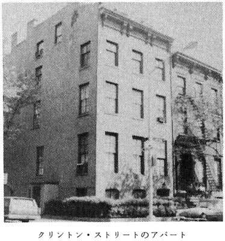

| [Ｈ・Ｐ・ラヴクラフト] ラヴクラフト全集5 | |
| Ｈ・Ｐ・ラヴクラフト | |
| (2015) | |
|
ラヴクラフト全集５東京創元社
Ｈ・Ｐ・ラヴクラフト 大瀧啓裕訳
|
THE DUNWICH HORROR AND OTHER STORIES
by Howard Phillips Lovecraft(1890-1937)
初版発行１９８７年７月１０日訳・大瀧啓裕
訳：大瀧啓祐／カバー：ヴァージル・フィンレイ
〈創元推理文庫Ｆ523-05〉
二十世紀最後の怪奇小説作家Ｈ・Ｐ・ラヴクラフト。その全貌を明らかにする待望の全集──本巻には、医学生のおぞましい企てを描く「死体蘇生者ハーバート・ウェスト」、ニューヨークの貧民街に巣食う邪教のともがらがもたらす「レッド・フックの恐怖」など、クトゥルー神話の母胎とされる全八編を収録。諸君は一読、鬼才の王国に虜となるであろう。
虚空の黯黒の光芒を放つ巨星ラヴクラフト。本巻には、Ｕボートの艦長が深海の底でアトランティスに遭遇する「神殿」、医学生のおぞましい企てを描く「死体蘇生者ハーバート・ウェスト」、ニューヨークの貧民街に巣食う邪教のともがらがもたらす「レッド・フックの恐怖」、セイレムの魔女裁判の史実を巧みに取り込んだ「魔女の家の夢」等、クトゥルー神話の母体とされる全八編を収録した。巻末に資料「ネクロノミコンの歴史」を付す。鬼才の統べる王国に虜囚となった読者は、二度と俗界に立ち返れぬであろう。
目 次
神殿 The Temple(1925)
ナイアラルトホテップ Nyarlathotep(1943)
魔犬 The Hound(1924)
魔宴 The Festival(1925)
死体蘇生者ハーバート・ウェスト Herbert West-Reanimator(1942)
レッド・フックの恐怖 The Horror at Red Hook(1927)
魔女の家の夢 The Dream in the Witch House(1933)
ダニッチの怪 The Dunwich Horror(1929)
資料『ネクロノミコン』の歴史 History of Necronomicon(1927)
作品解題 大瀧啓裕
ラヴクラフト全集〈５〉
Ｈ・Ｐ・ラヴクラフト／大瀧啓裕訳
神殿 The Temple
神 殿
（ユカタン半島沿岸で発見された手記）
一九一七年八月二十日、アルトベルク＝エーレンシュタイン伯爵、ならびにドイツ帝国海軍少佐にして、潜水艦Ｕ29の艦長を務める吾輩カルル・ハインリッヒは、正確な位置こそ不明ながらも、おおよそ北緯二〇度、西経三五度の地点にて、わが艦が航行不能におちいり坐礁する大西洋の海底より、手記を収めたこの壜を投棄する。これをなす所以は、ある種の尋常ならざる事実を社会に知らしめたいがためにほかならぬ。生きながらえてわが身でこれをはたすことは、十中八九ありえないであろう。おのれをとりまく状況は異常かつ脅威をはらむものであり、Ｕ29が絶望的な航行不能におちいっているのみならず、ドイツ人特有のわが鉄の意志さえ、悲惨なまでに損われているがゆえである。
六月十八日の午後、キールを目指していたＵ61に無線報告したがごとく、わが艦はニューヨークからリヴァプールにむかうイギリス貨物船ヴィクトリー号を、北緯四五度一六分、西経二八度三四分の海域にて撃沈し、海軍本部提出用の望ましい記録映画を撮影するため、同船の乗組員がボートにて脱出するのを黙認した。ヴィクトリー号はまさしく絵に描いたように、船首から先に、船尾を高くあげ、船体を海底に垂直にして沈没した。わが艦のカメラがこれをあまさずとらえていれば、かくもすぐれたフィルムがベルリンに届かぬことを吾輩は惜しむ。撮影の後、わが艦は救命ボートを銃器にて沈め、潜水した。
日没時に浮上した際、甲板上に船員の死体を発見、妙な恰好で手摺を握りしめていた。このあわれな男は若く、髪が黒くてことのほか顔立ちがととのい、おそらくイタリア人かギリシア人であって、ヴィクトリー号の船員に相違なかった。自ら乗りこむ船を余儀なく破壊した、当の潜水艦に避難を求めたのである──イギリスの畜生がわが祖国にしかけた不当な戦争の新たな犠牲者にほかならない。わが艦の水兵たちは記念になるものはないかと死体の衣服をあらため、上衣のポケットに、月桂冠をいただく若者の頭部をあしらった、きわめて奇態な象牙細工を見つけだした。同僚の将校であるクレンツェ大尉は、この象牙細工が年代もので美術的な価値があるとして、水兵からとりあげ自分のものとした。いかにしてかくのごときものが一介の船員の所有するものとなったのか、クレンツェ大尉にも吾輩にも想像すらできなかった。
死体を船外に投げ棄てる際、わが艦の水兵たちをはなはだ動揺させる二つの出来事がおこった。死体の目は閉じていたのだが、手摺にひきずっていかれたとき、その目がかっと見開いて、死体にかがみこんでいるシュミットとツィンマーをじっと嘲るように見つめたと、多くの者が幻覚をおぼえたらしい。兵曹長のミュラーは歳もくっていて、アルザス地方出身の迷信深い豚でなければ、すこしは分別もあったものを、この幻覚に血迷ってしまい、海に投げこまれた死体をながめたあげく、死体がすこし沈んでから、その手足が泳ぐ恰好をとり、波をくぐって速やかに南に姿を消したと断言したものだ。クレンツェと吾輩はこうした百姓の無知の露呈が気にいらず、水兵たち、わけてもミュラーを激しく叱責した。
翌日、水兵の一部が任務につかず、はなはだわずらわしいことにあいなった。長い航海に神経を病み、悪夢にうなされたものなるか。何名かはまったく呆然自失のありさまで、吾輩は仮病ではない確信を得た後、任務から解いてやった。海がやや荒れていたため、波がさほど騒がしくない深みにまで潜水することにした。そこでは波が比較的穏やかであったものの、海図ではつきとめられぬ、いささか当惑させられる南むきの流れがあった。病人のうめきはいかさま神経にさわるものだったにせよ、他の水兵の士気をくじくにはいたらなかったため、断固たる処置をとることはせずにおいた。われわれの計画は、その場にとどまり、ニューヨークの諜報員からの情報にあった、定期船ダキア号の航行を阻止することであった。
夕暮どきに浮上してみると、海が以前ほど荒れていないことが判明した。北の水平線に戦艦の煙が見えたものの、距離と潜水能力のおかげでわが艦は安全だった。さらなる悩みの種は、兵曹長ミュラーの口にするたわごとで、夜が迫るにつれますます狂乱したものになっていくばかりだった。ミュラーは唾棄すべきほど愚劣な状態におちいり、何やらん幻覚めいたものを目にして、いくつもの死体が漂っていくのが舷窓から見えただの、死体にまじまじと見つめられただの、ふくれあがっていながらも、わがドイツ軍の輝かしい戦果のうちに死んでいった者たちであることがわかっただの、あらぬたわごとを口走ったのである。さらにはわれわれが見つけて海中に投じた若者が、死者の先導者であったとまでいった。これは慄然たる異常きわまりないものであるため、ミュラーに手錠をはめてこっぴどく鞭で打ちすえてやった。水兵たちはこの懲罰を気にいらなかったようだが、軍紀はどうあっても維持しなければならぬ。同様に、水兵ツィンマーを頭にする連中がもちだした、奇態な象牙細工を海に投げこむべしとの要求も、これを却下した。
六月二十日、前日より具合の悪かった水兵ボームとシュミットが、狂暴な状態になりはてた。ドイツ人の生命は貴重なものであるため、わが艦に配属された将校に医師がふくまれておらぬことを悔んだが、この二名がやむことなくすさまじい呪いの言葉をわめきちらし、軍紀の乱れがはなはだしければ、断固たる処置をとらざるをえなかった。水兵たちはこれを不満げにうけいれたが、ミュラーをおとなしくさせる効果はあったようで、その後は問題をおこすこともなかった。夜が近づいた頃に解放してやると、むっつり黙りこんで任務についた。
次の週は総員ことごとく神経を極度にはりつめて、ダキア号を待ちかまえた。ミュラーとツィンマーが失踪したことにより、艦内の緊張が悪化、この二名は恐怖にとりつかれたあげく自殺をはかったにちがいないが、海に身を投じる現場を目撃した者は誰もいない。黙りこくっているだけでも水兵たちに悪影響をおよぼしていたがため、吾輩はミュラーのいなくなったことをむしろ喜んだ。いまでは誰もがひそかな恐怖をいだいているかのごとく、うち黙しぎみであった。具合の悪い者が多数いたが、騒ぎをおこす者はいなかった。クレンツェ大尉は緊張に神経をいらだたせ、ごく些細なことを気に病んだ──Ｕ29に群がるイルカがその数を増しているとか、海図にない南むきの流れの勢いが強まっているとかいったことである。
やがてダキア号を完全に見失ったことが判明した。かような失敗はままあることで、これによりヴィルヘルムスハーフェンに帰港することが正当なものとなったため、落胆するというよりはうれしく思った。六月二十八日の正午、針路を北東にかえ、異様に群がるイルカを相手にいささか滑稽な悶着があったにせよ、ほどなく進みはじめることができた。
午前二時に機関室で発生した爆発は驚き以外の何物でもなかった。機械の欠陥や担当者の怠慢があったわけでもないのに、いきなり艦が途轍もない衝撃とともに激しく横揺れしたのである。クレンツェ大尉が機関室に急行し、装置の大半と燃料タンクが粉微塵になっているうえ、機関士のラアベとシュナイダーが即死しているのを知った。これにより状況は忽然としてまさしく抜き差しならぬものとなった。空気再生装置は損傷なく、圧縮空気と蓄電池がもちこたえるかぎり、艦の浮上ならびに潜水、およびハッチを開ける装置はつかえるとはいえ、艦を推進させることが不能となったからである。救命ボートで救助を求めたりすれば、わが偉大なドイツ帝国に不当な怒りをつのらせる敵の手に、むざむざこの身をさしだすのも同然であるし、艦の無線装置はヴィクトリー号を撃沈して以来故障して、帝国海軍の他のＵボートとの連絡もとれないありさまであった。
爆発事故のあったときから七月二日まで、艦はたえず南へと流され、何らの方策もなく、船に出会うこともなかった。イルカはあいかわらずＵ29に群がっており、これまでに移動した距離を考えればいささか驚くべき出来事だった。七月二日の朝、アメリカ国旗をひるがえす戦艦を見つけると、わが艦の乗員は降伏を望んでにわかに色めきたった。この非ゲルマン的行為をとりわけ激しくおこなったトラウベという水兵を、結局クレンツェ大尉が射殺せざるをえなかった。これより水兵たちはしばらくおとなしくなり、われわれは発見されることなく潜水した。
翌日の午後、おびただしい海鳥の群が南からあらわれ、海は不気味にうねりはじめた。ハッチを閉じてなりゆきをうかがったものの、やがて潜水しないことには、高まる波に呑みこまれてしまうことが判明した。空気圧と電力は減少の一途をたどっており、とぼしい動力源の不必要な消費はどうあっても避けたかったが、この場合には選択の余地がなかった。とはいえ深くは潜行せず、数時間後に海が穏やかになると浮上することにした。しかしながらここにきて新たな問題が発生した。全力をつくしたにもかかわらず、艦が浮上しなかったのである。乗員はこの海中の幽閉にさらにおじけづき、一部の者はクレンツェ大尉のもつ象牙細工のことをまた口にするようになったが、拳銃を見せるとおとなしくなった。無駄であることは承知していながらも、あわれな水兵たちを機械装置の修理につかせ、できるかぎり忙しく働かせてやった。
クレンツェと吾輩は交代で睡眠をとることにしており、乗員が暴動をおこしたのは、吾輩が眠っている七月四日午前五時頃のことだった。艦に残っている六名の愚かな水兵どもが、命運のつきたことを察知し、前々日ヤンキーの戦艦に降伏しなかったことで急に狂乱した怒りを爆発させ、血迷うあまり毒づいたり破壊をおこなったりしたのである。いかさま野獣のごとき怒号をあげ、装置や備品を手当りしだいにうちこわし、死んでいながら自分たちを見つめて泳ぎ去った、黒い髪の若者と象牙細工の呪いであるだのわめきちらした。クレンツェ大尉は呆然として何の役にもたちそうになく、柔弱で女々しいラインラント人にあってみればいたしかたないところであった。吾輩が必要だと判断して六名全員を射殺し、生存者のないことを確認した。
二重ハッチから死体を投げすてた後、Ｕ29に残るのはクレンツェ大尉と吾輩の二人きりになった。クレンツェは極度に神経を高ぶらせているらしく、あびるように酒を飲んだ。二人で取り決めたのは、あの豚のごとき水兵どもの狂った暴挙をまぬかれた豊富な食糧と酸素を用い、できるかぎり生きのびることであった。羅針盤、水深計等の精巧な器具は破壊されていたため、これ以後は時計、カレンダー、そして舷窓や司令塔から見いだせる物体から判断される見かけの移動率に基づき、現在位置を推定するしかなかった。幸いにして蓄電池は、艦内照明と探照灯の双方に用いても、まだ長く使用することができた。頻繁に探照灯で艦のまわりを照らしたが、見えるのは押し流される艦と並行して泳ぐイルカだけであった。吾輩はこのイルカの群に科学的な興味をもつにいたった。学名デルフィヌス・デルフィスと呼ばれる通常のマイルカは、鯨目の哺乳動物であるのだからして、空気なしには生きてはいけぬのだが、一頭を二時間じっとながめていたものの、潜水したままの状態をかえなかったからである。
時間がたつにつれ、クレンツェと吾輩は、艦がなおも南に押し流されながら、さらに深く沈みつづけていると推断した。二人して海洋の動物や植物を認めては、吾輩がひまつぶしにもちこんでいた書物でそれらについて多くを読んだ。しかしながら、わが同輩の科学知識が劣っていることに気づかないわけにはいかなかった。クレンツェの精神はプロイセン人のものではなく、まったく無益な空理空論に没頭するようできあがっているのである。クレンツェは死がさしせまっている事実に妙に影響をうけ、すべてがドイツ国家のための気高き行為であったことも忘れはて、われわれが海底に葬った老若子女に自責の念から祈りをあげることがよくあった。やがては著しく精神の平衡を失い、長いあいだ例の象牙細工を食いいるように見つめたり、海底に没して忘れ去られたもののことについて、あられもない話をつくりあげたりするようになった。吾輩はときに心理学的な実験をたくらみ、クレンツェがたわごとを口にするようにしむけ、はてしもなくつづく詩の引用や沈没船の話に耳をかたむけたものだ。ドイツ人がかくも悲惨な状態になっているのを見るのはいたたまれないがゆえ、吾輩はクレンツェをひどく憐れんだが、しかしクレンツェは死を共にする良き相手ではなかった。吾輩自身のことを記せば、祖国がわが戦功を顕彰し、息子たちが吾輩のごとき人間になるべく教育をほどこされることを信じて疑わず、矜恃を高くして潔い態度を保持していた。
八月九日に海底を認め、探照灯の強力な光線を放ってみた。海底はなだらかな起伏のある広大な平原で、その大半が海藻に覆われ、小さな軟体動物の骨が散乱していた。そこかしこには面妖な形をして、海藻がまつわりつき富士壺のこびりつくねばねばしたものがあり、クレンツエは海の墓場に眠っている沈没船にちがいないと断言した。ただそのクレンツェにしても、一つのもの、先の尖った硬質の物体には首をひねった。これは先端まで海底からおよそ四フィートほど突出しており、太さは二フィート程度、側面は平たく、なめらかな上面がかなりな鈍角で接している。吾輩はこれを露出した岩だといったが、クレンツェは表面に彫刻がほどこされているようだと答えた。しばらくするとクレンツェは身を震わせはじめ、おびえきったかのように顔をそむけたが、水面から遙かに離れた大洋の深淵が広大にして暗く、古めかしく、かつ神秘に満ちていることに圧倒されたのだという以外、具体的なことは何一つ口にできずにいた。クレンツェの精神は疲弊していたが、吾輩は不断にドイツ人の精神を失わず、たちまち二つのことに気がついた。一つはＵ29が深海の水圧にもあっぱれにもちこたえていること、いま一つはほとんどの博物学者によって高度な生命体の存在が不可能とされる深海であっても、例のイルカどもがあいかわらず艦のまわりを泳いでいることである。以前に深度を過大に見つもったおそれはあるものの、たとえそうであってもなお、わが艦はこうした現象を異とするにたる深みにいるにちがいないのだから。南に押し流される速度は、海底の物体から目算したかぎり、いまほど深くないところで生物から推測したものとさほどかわってはいなかった。
哀れなクレンツェが完全に狂ったのは、八月十二日午後三時十五分のことだった。クレンツェはそれまで司令塔で探照灯を操作していたのだが、吾輩が読書中の図書室にとびこんできて、その顔には常軌を逸していることが歴然とあらわれていた。クレンツェがいったことをそのまま、語気を強めた言葉に傍点をふって記しておく。「彼が呼んでいる。彼が呼んでいるんだ。おれには聞こえる。行かなければ」クレンツェはこういいながら、テーブルにあった象牙細工をとりあげてポケットにいれ、吾輩の腕をつかんで甲板に通じる昇降口へひっぱっていこうとした。たちまち吾輩は、クレンツェめがハッチを開けて吾輩と共に水中にとびだすつもりでいることを察知したが、一蓮托生をたくらむ自殺狂の奇行になどつきあいきれるものではなかった。踏みとどまってなだめすかそうとしたものの、ますます乱暴になるばかりで、かくのごときことを口走った。「さあ、来るんだ──ぐずぐずしていたってしかたがない。こばんで死を宣告されるよりは、悔いあらためて許されるほうがいいんだから」吾輩はなだめすかせる考えを改め、おまえは狂っている、憐れむべき狂人にちがいないといってやった。しかしクレンツェは動じることもなく、こう叫んだ。「おれが狂っているのなら、それは慈悲というものだ。無神経なあまり悍ましい最期にも正気でいられる者に、神々の憐れみがあらんことを。さあ、彼が慈悲をもってまだ呼んでくれているうちに、きさまも狂ってしまうんだ」
こうした言葉をわめきちらしたことで苦悩がすこしはやわらいだのか、これだけいうとかなり穏やかになり、同行しないのなら自分一人だけでも行かせてほしいといった。採るべき道はたちまち明らかになった。クレンツェはドイツ人ではあっても、ラインラントの平民にすぎず、いまや危険を内に秘めた狂人になりはてているのである。自殺の要求をうけいれてやれば、吾輩はもはや同輩どころか脅威となっているこの男から即刻解放されるのだ。吾輩は出ていくまえに象牙細工を渡してくれといったが、この要求にクレンツェが薄気味悪い笑いをあげたため、おなじ言葉を繰返すことまではしなかった。そして吾輩が万一にも救出される場合があるやもしれぬので、ドイツの家族に渡す形見の品や髪の毛をのこすつもりはないかといってみたが、またしても妙な笑いをあげるばかりであった。こうしてクレンツェが梯子を登っていくと、吾輩はレヴァーのまえに立ち、しかるべき間隔をおいてクレンツェを死におくる装置を作動させたのである。クレンツェがもはや艦内にいないことを知った後、最後にひと目その姿を見ようと思い、探照灯の光をあたりに投げかけてみた。理論的に推定されるがごとく、クレンツェが水圧によって押しつぶされるのか、はたまた例の尋常ならざるイルカどものごとく、何の影響もうけずにいるのか、それを確かめたかったからにほかならない。しかしながらイルカどもが司令塔のまわりに不可解にも密集していれば、同輩の最後の姿を見つけだすこともかなわなかった。
その日の夕方、あの象牙細工のことが心にとりついてはなれず、哀れなクレンツェが立ち去るときにポケットからくすねなかったことを悔んだ。月桂冠を頭にいただく美貌の若者の顔がどうにも忘れられなかったのだが、かといって吾輩は生来芸術家などではない。話相手がいなくなったことをも残念に思った。クレンツェは知性の面で吾輩と対等の相手ではなかったにせよ、誰もいないよりはましだからである。その夜はよく眠れず、いったいいつ最期が訪れるのかと思い悩んだ。確かに救出される見込はほぼ絶望的であった。
翌日になると、吾輩は司令塔に登り、いつものごとく探照灯での探査をおこなった。北に望める眺めは海底を目にして以来この四日間変わるところはなかったものの、Ｕ29の押し流される速度が以前ほど早いものではなくなったように感じられた。探照灯を南にむけると、前方の海底が著しい急勾配で落ちこみ、妙に規則正しい形の石塊が一定の場所に、何か明確なパターンに従っているかのごとくならんでいるのが目にはいった。わが艦はすぐにはこのさらなる深みに沈みこむ状態ではなかったため、ただちに探照灯の角度を調整して、光を急角度で下方にむけざるをえなかった。急な角度の変化により断線がおこり、余計な時間を修理に要することとなったが、やがて光がまた放たれ、眼下に広がる海の谷を照らしだした。
吾輩はいかなる感情にも支配されることのない者ではあるが、電気の輝きでもってあらわれでたものを目にしたときの驚きは、尋常一様のものではなかった。さりとてプロイセンの最高の文化によって育まれた者として、地質学と伝承がともどもに海と大陸の大転換を告げているのだから、かくのごとき光景に驚くべきではなかったのである。吾輩が目にしたのは、荒廃した壮大な建築物の群が、入念な配置のもとにうち広がっている姿であり、建築様式は定かでなく、さまざまな保存状態にあったとはいえ、建築物のすべてが壮麗きわまりないものであった。大半は大理石造りらしく、探照灯の光を浴びて白く輝き、全体としては狭い谷間の底に位置する広大な都市の姿であって、きりたった斜面の上には孤立した神殿や山荘がおびただしく建っている。屋根は崩れ、柱は折れていたものの、何物にも拭い去られぬ、測り知れない太古の光輝が、なおもあたりに残っていた。
これまでもっぱら神話とみなしていたアトランティスをついに眼前にしたいま、吾輩は衷心からこの廃墟の調査ができることを願った。この谷間の底にはかつて河が流れていたにちがいない。仔細に眺めているうちに、石造りや大理石造りの橋と防波堤、そのかみ緑したたる草木におおわれて美しかったであろう段丘や土手が、この目にとまったからである。興奮するあまり、吾輩は哀れなクレンツェとさしてかわらぬほど血迷い、感情に動かされてしまい、南にむかう流れがついにおさまって、飛行機が地上の都市に着陸するがごとく、Ｕ29が水没した都市の上にゆっくりとおりていくことにも、なかなか気づかない始末であった。尋常ならざるイルカの群が姿を消していることにも、しばらくは気がつかなかった。
およそ二時間のうちに、わが艦は谷間の岩壁に近い石敷きの広場に停止した。片側では広場からかつての河土手までの斜面に都市の全景が望める一方、反対側には、正面に豪華な装飾がほどこされ、保存状態も完璧な大建築物がそびえたち、硬い岩をうがって造られた神殿に相違なかった。この巨大建築物がそもそもいかなる技術で造られたかは、想像をたくましくするしかない。途轍もない大きさの正面は間断なくつづく奥処を覆っているのか、窓が数多く配置されていた。中央には巨大な扉がぽっかりと口を開け、壮麗な階段がここまでつづき、まわりには古代ローマのバッコス祭を思わせる彫刻が、絶妙な浮彫でほどこされている。それらすべてにたちまさっているのは、巨大な柱と小壁であり、いずれも筆舌につくしがたい美事な彫刻で飾りたてられ、理想化された田園風景、そして燦然たる神をたたえて風変わりな儀式用具をもつ、司祭や女司祭の行列を表したものであるようだった。その芸術性は素晴しくも完璧きわまりないもので、主にヘレニズムの思潮に浴しているが、それだけではおさまりきれぬ妙に特異な面を備えていた。すさまじいまでの古色を感じさせられ、ギリシア芸術の直接の祖先というよりは、遙かな時代をへだてた祖先であるかのごとくである。この壮大な人工物のあらゆる細部が、大地の丘腹の自然の岩盤をうがって造られたものであることにも疑いはない。この構造物は明らかに谷間の岩壁の一部ではあるが、その内部がどれほど広大なものであるかは想像もつかぬ。おそらくは単独あるいは一連の洞窟を基に内部を広げていったのであろう。これはまさしく大神殿に相違なく、歳月や水没もこの壮絶な大神殿の太古の威風を腐食させるにはいたらず、何千年もの歳月を閲したいまもなお、大洋の深淵の果しない闇と静寂のうちに、神聖不可侵のまま汚点一つなくそびえたっているのである。
吾輩は時のたつのも忘れはて、建築物、迫持、彫像、橋を擁する海底都市を、そして美と神秘をはらむ巨大な神殿を見つめつづけた。死がせまっていることは承知していながら、わが好奇心はつきることがなく、探照灯の光をあたりに投げかけては熱烈な探求をつづけた。探照灯の光線で多くの細部を見てとることはできたものの、岩をうがって造られた神殿の内部をうかがい見ることまではかなわず、ほどなく電力を節約しなければならぬことに思いいたり、探照灯の光を消した。いまでは光の強さも何週間にもわたって漂流をつづけたときにくらべ、はっきりそれとわかるほど弱まっていたのである。そしていずれは探照灯の光も失われる事実にかきたてられたかのごとく、深海の秘密に探りをいれたいという熱望はつのるばかりであった。ドイツ人であるこの吾輩こそが、悠久の太古に忘れ去られた都市の通りを最初に歩む者であるべきなのだから。
吾輩は金属を継ぎあわせた深海用の潜水服をとりだして点検した後、携帯用のライトと空気再生装置が正常に作動するかどうかを確かめた。二重ハッチをともかく一人で操作することには問題があったものの、おのれの科学的な手腕をもってすれば、すべての障害を克服し、実際にこの身で死に絶えた都市を歩きまわれることは信じて疑わなかった。
八月十六日に吾輩はＵ29を離れ、荒廃して泥に覆われる通りを苦労して進み、太古の河にむかった。人骨等の人間の亡骸は何一つ見いだせなかったが、彫刻作品から貨幣にいたるまでのおびただしい考古学的遺物を拾い集めた。これについてはいまは何も語れず、穴居人がヨーロッパを歩きまわり、ナイル河が人間の目にふれることなく海に流れこんでいた、そんな時代に全盛をきわめた文化に、畏敬の念をおぼえたといえるだけである。もしもこの手記が発見されるようなことがあれば、これを手引に、吾輩がほのめかすことしかできない神秘は、世人が解き明かさねばなるまい。吾輩は携帯用ライトの光が弱ってきたため、岩をうがった神殿の調査は翌日におこなうことにして、艦にもどった。
明けて十七日、神殿の謎をきわめたいという衝動がなおもつのるなか、大なる落胆にみまわれた。携帯用ライトを充電するのに必要な器材が、七月におこった豚どもの暴動の際にあえなく破壊されていたからである。憤懣やるかたないものではあったが、何の準備もないまま暗澹たる真闇につつまれる神殿の内部にあえて入りこむことは、何か名状しがたい海の魔物の巣窟になっているやもしれぬし、抜け出すこともできぬ迷路じみた通路があるやもしれぬため、ドイツ人の良識がこれをおしとどめた。したがってＵ29の弱まりゆく探照灯の光をつけ、その助けでもって神殿の階段を登り、外部にほどこされている彫刻を調べえただけにとどまる。上向きに放たれる光が戸口のなかにさしいり、何か目にはいるものはないかと覗きこんではみたが、むなしい行為ではあった。天井すら見ることはかなわず、床がしっかりしていることを確かめた後、一、二歩踏みこんではみたが、それ以上入りこむことまではしなかった。さらにいえば、吾輩は生まれてはじめて恐怖の感情をおぼえたのである。神殿に徐々に引き寄せられるにつれ、この海底の深淵に得体の知れぬつのりゆく恐怖をおぼえたため、哀れなクレンツェがいかなる情緒におちいっていたか、そのいくばくかがわかりはじめた。吾輩は艦にもどると、灯を消し、闇のなかに坐りこんで思いにふけった。電力はもはや危急の事態に備えて極力節約しなければならなかった。
十八日の土曜日はまったき闇のなかですごし、わがドイツ人の意志をうちくだかんとする、さまざまな思いや記憶に苦しめられた。忌わしいまでに遙けき過去の、この不気味な名残に達することもなく、クレンツェは発狂して死んでしまったが、ともに行こうと吾輩に勧めていたのである。ならば何人も夢に見たことすらない、実に恐ろしく想像もつかぬ最期へと、吾輩を否応なく引き寄せるためにだけ、運命の女神は吾輩に理性を保たさせているのではあるまいか。明らかに吾輩の神経ははなはだしく痛めつけられており、かくのごとき弱者の迷妄はふりすてなければなるまい。
土曜の夜は眠ることもできず、将来のことも顧みずに灯をつけてしまった。電力が空気や食糧より先につきはてるのは腹だたしいかぎりである。吾輩は安楽死についての考えを想起して、自動拳銃をあらためてみた。明けがた近くに灯をつけたまま眠ったにちがいなく、昨日の午後に目を覚ますと、艦内は闇につつまれ、バッテリーのきれていることが判明した。何本ものマッチをつづけざまにすっては、わずかにもちこんでいた蝋燭を既に使いつくしてしまった不用意さを、いかほど悔んだことであるか。
あえて無駄にした最後のマッチが消えた後は、光もなしに息をこらして坐りこんだ。避けがたい死を思うにつけ、わが精神は以前の出来事をめまぐるしく思い返し、それまで意識にのぼることのなかったある印象、吾輩よりも脆弱で迷信深い者なら震えあがってしまうであろう印象を、ついに明るみに出した。岩の神殿にほどこされた彫刻のなかにある輝かしい神の顔容は、水死した船員が海からもたらし、そして哀れなクレンツェが携えて海に身を投げだすことにあいなった、あの象牙細工の彫刻と、まさしく同一のものだったのである。
吾輩はこの偶然の一致にいささか呆然としたものの、怖気立ったりはしなかった。奇妙なことや錯綜したものを性急に解き明かそうとして、素朴かつ単純に超自然の力をもちだすのは、浅学非才の者だけである。この偶然の一致は確かに不思議なものではあるが、吾輩は健全な理性の持主であるがゆえ、論理的なつながりのない事象を結びつけたり、ヴィクトリー号の撃沈から目下のおのれの窮地にいたるまでの破滅的な出来事を、いかなる怪異なやりかたでも関連づけたりすることはできなかった。さらに体を休める必要を感じたため、鎮静剤を服用して、いましばらくの睡眠を確保した。精神状態が夢に反映したのか、溺死する者たちの悲鳴が聞こえ、艦の舷窓に押しあてられる死者の顔が見えたような気がした。そしてそれら死者の顔のなかに、象牙細工を帯びた生ける若者の嘲笑う顔があった。
今日目を覚ましてからのことを記録するにあたっては、混乱しているうえ、かなりな幻覚がやむなく事実に混在しているがため、慎重を期さねばなるまい。心理学的にはわが症例ははなはだ興味深いものであり、有能なドイツの権威によって科学的な観察をうけられぬのが残念である。目を覚ましてまずおぼえたのは、岩の神殿を訪れたいという抑えきれぬ欲望、刻一刻とつのりながらも、逆に作用する何か恐怖の感情でもって、反射的に抑制に努めてしまう欲望であった。次にはバッテリーのきれた闇の只中に光があるという印象をうけ、神殿にむかって開いている舷窓から水中に一種燐光めいた輝きが見えるように思った。このことで好奇心をつのらせたのは、深海の生命体でかくのごとき発光のできるものがいないことを知っていたためにほかならない。しかしこれを調査するまえに第三の印象を得て、その不合理さのゆえに、吾輩はおのれの感覚器官がうけとるものすべての客観性を疑うにいたった。その印象とは幻聴であり、何か荒あらしくはあるが美しい詠唱、もしくは讃歌の合唱にも似た、リズミカルで妙なる調べが、まったく音を通すはずのないＵ29の船体の外から聞こえてくるような感じをうけたのである。吾輩はおのれの精神と神経が異常をきたしていることを確信すると、マッチを何本かすって効力の強い臭化ナトリウム溶液をたっぷりと服用し、幻聴がはらいのけられる程度には気分も鎮まったような気がした。しかし燐光は消えず、舷窓に近づいて発光源を調べたいという子供じみた衝動を抑えるのは、並たいていのことではなかった。これは悍ましいまでに現実的なものであって、まもなくその燐光のおかげでまわりにある馴染深いものと同様、臭化ナトリウムを飲みほした空のグラスまで識別できたのだが、このグラスについては、いま置かれている位置で目にしたことはなかったのである。吾輩はとくと考えこみ、部屋を横切ってグラスにふれてみた。グラスはまさしく見えると思った場所に置かれていた。ここにきて吾輩は、光が現実か、あるいははらいきることができぬほど固執的になって首尾一貫した、幻覚の一部に相違ないことを知ると、すべての抵抗を投げうち、司令塔に登って発光源を探し求めた。もしや現実には、別のＵボートが救助の可能性をもたらしてくれるのではあるまいかと、あだな希望をいだきながら。
以下に記述されるものに客観的な真実はないとうけとられてもいたしかたない。その後の出来事は自然法則を超越しているがため、それらは必然的に疲弊した精神の非現実的な産物であり、主観的なものだからである。司令塔に登ってみると、海がおおむね予想していたほど明るくはないことがわかった。あたりに燐光を放つ動植物はなく、河にむかってくだる斜面に位置する都市は闇につつまれて見えなかった。目にしたものは劇的なものでも、グロテスクなものでも、恐ろしいものでもなかったが、おのれの意識に対する信頼を完全に断ち切る体のものであった。丘腹の岩盤をうがって造られた、海底の神殿の窓と戸口とが、奥深くの祭壇で大きな焔がたかれているかのごとく、揺らめく光で生なましく輝いていたのである。
その後のことは混沌としている。不気味に輝く戸口や窓を見つめているうちに、吾輩は法外きわまりないものを目にするようになった──あまりにも異常なものであるため、これについて詳しく記すことさえできない。神殿のなかにさまざまなもの、静止しているものと動いているものの双方が見えるように思い、目を覚ましたときはじめて耳に届いた非現実的な詠唱が、またしても聞こえるような気がしたのである。そして脳裡にうかんだ考えや恐怖はことごとく、おなじ彫刻が目のまえの神殿の小壁や柱にほどこされているあの象牙細工、そして海からあらわれたあの若者とに収斂していた。吾輩は哀れなクレンツェのことを考え、海のなかに携えていった象牙細工とともに、クレンツェの亡骸がいまいずこにあるのかと思った。クレンツェはあることを警告していたが、吾輩は気にもとめなかった──とはいえクレンツェは柔弱なラインラント人であり、プロイセン人なら簡単に耐えうる苦難に直面して、哀れにも発狂してしまったのである。
あとのことはきわめて単純である。神殿を訪れてなかに入りこみたいという衝動が、いまやどうあっても否定しきれぬ、不可解にして焦眉の指令となっている。わがドイツ人ならではの意志も、もはやおのれの行動を制することはなく、これ以後おのれの意志の力がふるえるのはごく些細なことだけにかぎられるだろう。かくのごとき狂気が無防備なまま海にとびだすことでクレンツェを死に追いやったのだが、吾輩は良識のあるプロイセン人であり、最後の最後まで、わずかばかりに残っている意志の力をふるうつもりである。行かねばならぬことがわかるやいなや、吾輩は潜水服、ヘルメット、空気再生装置をすぐにも使えるよう準備し、いつの日か世人の目にふれることを願って、ただちにこの手記をとりいそぎ書きはじめた。手記は壜にいれ、これを最後にＵ29を離れる際に、海底から放つことにする。
吾輩は狂人クレンツェめの予言を耳にしていてもなお、恐怖にたじろいではいない。目にしたものが真実であるはずはないし、おのれ自身のこの狂気も、せいぜい空気がきれて窒息死にいたるだけのものにすぎぬと心得ている。神殿内部の光は純然たる幻覚であり、吾輩は暗澹たる忘却の海底にて、ドイツ人ならではの穏やかな死をむかえるであろう。これを記しているいま耳に聞こえるこの悪魔めいた笑いも、おのれ自身の衰弱する頭脳の産物にほかならない。されば慎重に潜水服を身につけ、胆をすえて階段を登り、あの原初の神殿、測り知れぬ深みで無量の歳月を閲するあの沈黙の神秘の只中へと、足を踏みこむつもりである。
ラヴクラフト全集〈５〉
Ｈ・Ｐ・ラヴクラフト／大瀧啓裕訳
ナイアルラトホテップ Nyarlathotep
ナイアルラトホテップ......這い寄る混沌......わたしは最後の者であり......耳かたむける虚空に語りかけよう......
いつはじまったのか、はっきりした記憶はないが、数ヵ月まえのことだったはずだ。世間一般の緊張は恐ろしいほどだった。政治的にも社会的にも大変動がおこった時期に、肉体が由々しい脅威にさらされているという、いまだかつてなかった不安がたれこめたのだ。あまねく浸透して、ありとあらゆるものをつつみこむこの脅威は、およそ凄絶きわまりない夜の幻夢においてしか想像しえないようなものだった。わたしはおぼえているが、人びとは苦悩にみちる青ざめた顔で歩きまわっては、声をひそめて警告や予言の言葉をつぶやき、そうした言葉をあえて意識的に繰返したり、また自分が耳にしたことを認めたりする者など一人とていなかった。はなはだしい罪の意識が国じゅうにたちこめ、星たちのあいだの深淵から冷たい流れが吹き寄せて、暗くわびしい場所で人びとを震えあがらせた。季節のうつりかわりに凶まがしい変化が生じていた──秋の熱気が恐ろしくもいつまでも尾をひいて、この世界、そしておそらくは宇宙までもが、馴染深い神々、ないしは未知の力の支配をうけなくなったのではないかと、そう誰しもが思ったものだ。
そしてそんなときに、ナイアルラトホテップがエジプトからやってきたのだ。ナイアルラトホテップが何者であるのか、はっきり告げられる者はいなかったが、古い高貴な血をひくファラオのごとき人物だった。エジプトの農夫や労働者はナイアルラトホテップを目にするとひざまずくが、その理由を知る者は誰一人としていない。ナイアルラトホテップ自身が語るには、二十七世紀におよぶ黯黒のなかから立ちあがり、この星にあらざる場所からの託宣を耳にしたのだという。色浅黒く、痩身で、不気味なナイアルラトホテップは、さまざまな文明の地を訪れ、常にガラスや金属の不思議な器具を購っては、それらをさらに不思議な器械に組立てあげた。科学について多くを語った──電気学のこと、心理学のことをよく話し、見る者を呆然たらしめながらも、自らの世評を極端に高める力をもつ、種々の公演をおこなった。人びとはナイアルラトホテップに会うべきだとたがいに勧めあい、身を震わせたものだ。そしてナイアルラトホテップの行くところ、平安は消えうせ、深更の刻限が悪夢の絶叫に引き裂かれた。悪夢の絶叫がかような社会問題にまでなったことは絶えてなく、いまや賢人たちは、夜も更けての眠りを厳禁できればよいのにと願いたくなるほどで、さすれば橋の下を流れるあおあおとした水や、病んだ空に崩れた姿をさらす古い尖塔を照らしだす、青白い哀れむ月が、街から湧きあがる悲鳴によって、かくも凄絶に悩まされることはあるまいと思うばかりだった。
ナイアルラトホテップがわが街──かぞえきれぬ犯罪にみちた巨大で古さびた恐怖の街──にやってきたときのことをおぼえている。友人の一人からナイアルラトホテップのこと、そしてその啓示にいいようもない魅力や魅惑のあることを知らされるや、わたしはぜひとも内奥の神秘に探りをいれたいという熱望に胸を熱くさせた。友人の話によれば、そうした啓示は恐ろしくも印象的なもので、熱にうかされたあげくわたしが想像する最も奔放なものさえしのぎ、暗くされた部屋のスクリーンには、ナイアルラトホテップ以外の何人もあえて予言したことのないものが映しだされ、ナイアルラトホテップの発する火花のひらめきのうちに、目にうかぶだけで奪われたためしのないものが奪われるのだという。さらにわたしは、ナイアルラトホテップを知った者がほかの者には見えない光景を目にするようだという、外国の風説も耳にしていた。
あれは暑い秋のことだったが、わたしは眠れない群衆とともに、夜の街を歩いてナイアルラトホテップに会いにいき、息づまる夜を衝いて果しない階段を登り、むせかえる部屋に入った。そしてスクリーンに映じられる、廃墟の只中にいる頭巾をかぶった人影と、崩れた記念碑の背後からのぞきこむ邪悪な黄色い顔を見た。さらに世界が黯黒を相手に闘っているのを見た。窮極の宇宙から押し寄せる破壊の波を相手に、光を失い冷えていく太陽のまわりで、旋回し、回転し、もがきつづける世界の姿を。するうち驚くべきことに、観客の頭のまわりで火花が踊り、観客の髪の毛が逆立つ一方、いいようもなくグロテスクな影があらわれて、観客の頭にのしかかった。誰よりも冷静にして科学知識に通じたわたしが、震える声で、「ペテンだ」とか「静電気だ」とか抗議の言葉をつぶやくと、ナイアルラトホテップは観客のすべてを追いだしたので、わたしたちは目眩く階段をおりて、蒸し暑い深夜の荒涼とした通りに出た。わたしが甲高い声で、こわくはないぞ、何を恐れるものかと叫ぶと、ほかの者たちも元気を奮い起こすために甲高い声で叫んだ。わたしたちは街がいつもとかわらないこと、まだしっかり息づいていることを断言しあったものだが、電灯が消えはじめると、電力会社を何度もののしり、妙にひきつったたがいの顔を見ては笑いあった。
どうやらわたしたちは緑がかった月から何かが伝わっていることを感じとったらしく、月の光をあてにして歩きだしたとき、思わず知らず奇妙な行進の列をつくりだしていて、あえて思いをめぐらすことはなかったとはいえ、目的地がどこであるかを知っているようだった。舗道に目をむけると、敷石がゆるんで雑草が茂り、路面電車が走っていた場所を示す錆ついた線路がかろうじて認められた。そして路面電車を一台目にすることになったが、うつろで窓ガラスもなく、荒廃の一途をたどり、ほとんど横倒しになっていた。地平線に目をむければ、川辺の第三の塔が見あたらず、夜空に輪郭を描く第二の塔はその先端が崩れていた。やがてわたしたちは細い縦列にわかれたが、それぞれの列が異なった方向に導かれているらしかった。一つの列は左手の狭い小路に姿を消し、慄然たるうめき声だけをあとに残した。もう一つの列は雑草の生い茂る地下鉄の入口に繰りこんでいき、狂おしい笑い声をひびかせた。わたしのいる列は、何もない広びろとした原野のほうに引き寄せられ、まもなくわたしは暑い秋のものにはあらざる冷気を感じとった。暗い荒れ地を進むにつれ、地獄めいた月に照らされる邪悪な雪の輝きが目にはいったのだった。足跡一つ残さない不可思議な雪は、一方向にだけ吹きはらわれていて、きらめく壁があるだけにことさら黒ぐろとした深淵が、そこに口を開けていた。夢でも見ているような足取りでその深淵に入りこんでいく列は、はなはだか細いもののように見えた。緑色の光に照らされる雪原の黒ぐろとした窖は空恐ろしいものだったし、仲間が姿を消したとき、心おびやかされる悲鳴のひびきが聞こえたような気がしたので、わたしは行きかねてためらっていたが、その場にとどまっている力もわずかなものでしかなかった。さながら既に姿を消した者たちにうながされたかのように、わたしは巨大な雪の吹きだまりのあいだでなかば漂うようにして、不安のあまりわなわなと身を震わせながら、何も目に見えない想像を絶する渦のなかへと入りこんでいった。
悲鳴をあげられるほどの感覚を保っていたか、あるいはものもいえないほど目眩いていたかは、神々のみぞ知ることだ。病みながらも感覚のある一つの影が、手にあらざる手にとらえられて身をよじり、腐れはてる被造物にみちる凄絶な黯黒を、都市という糜爛によって死にたえた世界の亡骸を、青ざめた星たちをかすめて弱よわしくまたたかせる死の風が、やみくもに吹きぬけていった。世界の彼方にはばけものじみたもののおぼろな亡霊があり、なかばうかがえる不浄な神殿の柱という柱は、宇宙の下の名状しがたい岩場に土台を据え、光と闇の領域を超えて目眩く虚空にむかってそそりたっていた。そして宇宙のこの忌わしい墓場には、くぐもった狂おしい太鼓の連打、冒涜的なフルートの単調な音色が、〈時〉の彼方の想いもおよばぬ黒暗々の房室べやからひびきわたっており、その唾棄すべき連打と音色にあわせ、ゆるやかに、ぎこちなく、愚かしく踊っているのは、巨大にして陰惨な窮極の神々だった──盲目にして声も心ももたない鬼面像であり、その化身こそナイアルラトホテップにほかならないのである。
ラヴクラフト全集〈５〉
Ｈ・Ｐ・ラヴクラフト／大瀧啓裕訳
魔犬 The Hound
責め苦にあうわたしの耳には、間断なく、悪夢めいた羽ばたきや唸り、そして何か巨大な猟犬がたてるような、遠くかすかな吠え声がひびく。夢ではない。恐ろしいことだが狂気でさえもない。もうそうした疑念が抱けないほどに、多くのことがおこっているのだから。
セント・ジョンがずたずたの死体になりはててしまった。わたしだけがその理由を知っている。そういう知識があるからこそ、自分自身がおなじようにずたずたに引き裂かれることのないよう、頭を撃ち抜いて自殺しようとしているわたしなのだ。慄然たる幻想の暗く果しもない回廊を、黒く醜い復讐の女神ネメシスがかすめさっていき、わたしに自殺せざるをえないようにさせる。
神よ、わたしたち二人をかくも恐ろしい運命に導いた、愚かしくも病的な行為を許したまわんことを。俗世間の平凡さに倦み疲れたあげくのことだった。恋愛や冒険の悦びさえもがたちまち興趣を失ってしまう俗世間で、セント・ジョンとわたしは、心うちひしがれる倦怠の中断を約してくれる、耽美主義や主知主義の運動のすべてを熱心に追い求めていた。象徴主義者の謎やラファエロ前派の恍惚は、その絶頂期にあるものを残らず自分たちのものにしたが、新たな気分にひたっても、気晴しになる新奇さや魅力はたちどころに味わいつくされてしまうのだった。
頽廃主義者の陰鬱な哲学だけがわたしたちを救ってくれたが、これとて、洞察を深め、わたしたちのもつ魔性を徐々に高めていかないことには、何の効果もないことがわかった。ボードレールもユイスマンスもすぐにその戦慄は底をついてしまい、ついには尋常ならざる現実の体験や冒険という、さらに直接的な刺激だけをあますばかりになってしまった。ほかならぬこの恐ろしい感情的な欲求に導かれるまま、わたしたちはあげくの果に、恐怖にさいなまれているいまですら、恥辱を感じておずおずと記さざるをえない、あの唾棄すべき行状、人間の行為のなかで最も不埒な醜行、忌わしい墓場荒しをおこなうようになってしまったのだった。
わたしたちは何度となく怖気立つ遠征をしたが、その詳細を明らかにすることはできない。わたしたちが召使もおかず二人きりで住んでいた、石造りの大きな家に設けられた名もない博物館を飾る戦利品のうち、最悪のものは、一部とて記すわけにはいかない。わたしたちの博物館は異常きわまりない冒涜的な場所で、わたしたちはそこに、精神を病んだ美術愛好家さながらの悪魔めいた嗜好に基づき、疲弊した感受性を刺激する恐怖と腐朽の小宇宙をつくりあげていた。地下のはるかな深みに設けられた秘密の部屋だった。そこでは、玄武岩や縞瑪瑙から彫りぬかれた、翼をもつ巨大な魔神が、残忍な笑いをうかべる口から緑色と橙色の光を放ち、隠された送気管がどっしりした黒い綴織を波だたせて、そこに織りこまれた手に手をとる納骨堂の赤い幽鬼の列に、変幻きわまりない死の舞踏を演じさせるのだった。こうした送気管からは、わたしたちの気分に最もかなう香や匂が自在に送りだされた。ときとしてそれは、弔花に用いられる青白い百合の香となり、心に描く、王の遺体を安置する東洋の霊廟にこもる催眠性の芳香となり、そして──思いだすだけでも恐ろしいが──暴かれた墓からのぼる恐ろしくも悍ましい悪臭となった。
この厭わしい部屋の壁には、剥製師の技巧でもって完璧につめものがされ防腐処置がとられ、生けるがごときのととのった姿になりかわった古代の木乃伊の棺が、世界で一番古い墓地から奪った墓石と交互にならべられていた。そこかしこの壁龕には、あらゆる形の頭蓋骨、そしてさまざまな腐敗段階のままに保存される頭部が置かれていた。有名な貴族たちの腐りかけた禿頭もあれば、葬られたばかりの子供たちの、すがすがしく輝かしい金色の頭もあった。
彫像や絵画もあり、すべて極悪な主題をあつかったものばかりで、一部はセント・ジョンとわたしの手になるものだった。人間の皮膚をなめしたもので装釘され、錠のつけられた画帳には、ゴヤが絵筆をとりながらも自作とは認めなかったという噂のある、無署名の名状しがたい絵が収められていた。吐き気催すような音をだす弦楽器、金管楽器、木管楽器があり、ときとしてセント・ジョンとわたしは、いうにいわれぬ陰鬱さや魔的な凄絶さをたたえた不協和音を奏でたてた。さらに、おびただしくある象眼細工のされた黒檀の飾り棚には、およそ人間の狂気と倒錯が集めえたなかで、最も信じがたく思いもつかない、墓場でのさまざまな略奪品が置かれていた。とりわけこの略奪品については、記すわけにはいかない。ありがたいことに、わたしは自殺しようと思う以前に、すべてを破壊する勇気をもてたのだった。
わたしたちがとても口にはだせない宝を集めた、その略奪の旅は、芸術的観点から見れば、おしなべて忘れがたい出来事だった。わたしたちは野卑な死体盗人ではなく、気分、風景、環境、天候、季節、月光の条件がすべてととのわないかぎり、墓場荒しはおこなわなかった。こうした慰みはわたしたちにとって最も絶妙な形の美意識の表現だったので、わたしたちは細かなところにまで妥協を許さない厳密な注意をはらった。時間がふさわしくなかったり、月影の効果がそぐわなかったり、湿った芝地をへたに掘り起こしたりするだけで、大地の嘲るような不穏な秘密を暴いたあとにもたらされる、あの恍惚とした快感は、ほとんど完全にそこなわれてしまうのだ。新奇な情景、感情を刺激する状況を、わたしたちはやっきになって飽くことなく求めつづけた。セント・ジョンがいつも先に立って行き、そして恐ろしくも避けがたい凶運をわたしたちにもたらした、あの嗤笑する呪われた場所へと導いたのも、セント・ジョンだった。
いったいどのような悪しきめぐりあわせで、わたしたちはあの恐ろしいオランダの教会墓地におびきよせられたのだろうか。冥い噂や伝説のためだと思う。生前墓場荒しを繰返し、大きな墳墓から魔力を秘めたものを盗みだしたという、五世紀まえに埋葬された男にまつわる話だ。あの最後の瞬間の情景は、いまでもありありと思いだせる。青白い秋の月が埋葬所の上空にかかり、長く薄気味悪い影を投げかけていた。異様な形をした木々は、枝が陰鬱にしだれて、放置されたままにはびこる雑草や崩れかけた墓石に触れていた。不思議なほど大きな蝙蝠の大群が、月の光をあびながら飛びまわっていた。葛に覆われ古さびた教会は、巨大な幽霊の指のように、鉛色の空にむかってそそりたっていた。遠くの片隅では、青光りする昆虫が櫟の木立の下で鬼火のように乱舞していた。はるかな沼沢地や海をわたって吹きよせる夜風は、黴の臭、植物の臭、何とも判別しがたい臭をほのかに運んでいた。最悪のものは、見ることもつきとめることもできない、何か巨大な猟犬がたてるような、かすかに聞こえる太く低い吠え声だった。この吠え声のようなものを耳にしたとき、わたしたちは例の農夫にまつわる話を思いだして震えあがってしまった。わたしたちが探しているその人物は、何世紀もまえに、何か名状しがたい獣の爪と歯によって引き裂かれた死体になりはてて、まさしくこの場所で発見されたのだった。
墓場荒しだった男の墓を、鋤を使い、どのようにして掘り起こしたかはよくおぼえている。わたしたち自身、墓、ながめおろす青白い月、薄気味悪い影、異様な形をした木々、巨大な蝙蝠、古さびた教会、乱舞する鬼火、吐き気催す悪臭、むせびなくような音をたてる夜風、実在することにほとんど確信さえもてない、かすかに聞こえる、方向さえ定かでない奇怪な吠え声──そういったものからつくりだされる情景に、わたしたちがどれほど興奮をおぼえたかもよくおぼえている。
わたしたちはやがて、湿った土よりも硬いものを掘りあて、長く地中に埋められていたため無機物のこびりつく、腐りかけた長方形の箱を目にした。その箱はきわめて頑丈で分厚かったが、古いものなので、わたしたちは何とかこじあけ、なかにあるものを見て目を楽しませた。
五百年という歳月を閲しながら、まだ多くのもの──驚くほどに多くのもの──が残っていた。噛み殺した生物の顎によってところどころは砕かれているものの、白骨は驚くべき堅固さで元の形を保っており、わたしたちは完全な白い頭蓋骨、長くてしっかりした歯、かつてはわたしたちのように墓場熱で輝いていたうつろな眼窩を、満足そうにながめた。棺のなかには一風変わった趣きの奇妙な魔よけがあり、どうやら死体の首にかけられていたもののようだった。うずくまる翼を備えた猟犬、あるいはなかば犬に似た顔をもつスフィンクスといった、妙に様式化された形状をしていて、古代東洋風の細工でもって、小さな緑色の翡翠から精妙に刻みぬかれたものだった。刻まれた顔の表情はきわめて忌わしいもので、それがにおわすものは、死であり、獣性であり、邪悪であった。基部のまわりには、セント・ジョンにもわたしにもわからない文字を使った銘刻があった。そして底には、製作者の印のように、奇怪かつ恐ろしい髑髏が彫りこまれていた。
わたしたちはこの魔よけを目にした瞬間、どうあっても手にいれなければならないと思った。何世紀もまえの墓から略奪すべきものが、この財宝以外にないことがわかった。たとえその形がまったく馴染のないものだったとしても、わたしたちは手にいれたがったことだろうが、仔細にながめてみると、かならずしも馴染のないものではないことがわかった。確かに、精神が健全でバランスのとれた読者が知る美術や文芸のすべてから、大きくかけはなれたものではあったが、わたしたちにはそれが、狂えるアラブ人、アブドゥル・アルハザードの禁断の『ネクロノミコン』でほのめかされるものであることがわかった。中央アジアに位置する接近不能なレンにおける、屍食宗派の恐ろしい霊魂の象徴だったのだ。古のアラブ人鬼神論者が描写する慄然たる容貌や姿が、十分すぎるほどに認められた。アブドゥル・アルハザードの記すところによれば、その容貌や姿は、死者を悩ませしゃぶりつくす者たちの霊魂の、何かおぼめく超自然的な顕現を基にしているのだという。
わたしたちは緑色の翡翠をつかむと、その持主の、眼窩がぽっかり開いた白く晒された顔に最後の一瞥をして、墓を元通りに埋めた。盗みとった魔よけはセント・ジョンのポケットに収められ、そうしてわたしたちは忌わしい場所から足早に立ち去ったが、その途中、さながら呪わしい不浄の滋養物を求めているかのように、蝙蝠が一団となって、ついいましがた暴かれた地面に舞いおりるのを見たような気がした。しかし秋の月の光は弱く淡いので、きっぱりいいきれることではなかった。
そしてまた、翌日オランダから船で故郷にむかうとき、何か巨大な猟犬がたてるような遠くかすかな吠え声が、背後に聞こえたような気がした。しかし秋の風は悲しげに力なくむせびなくので、きっぱりいいきれることではなかった。
イギリスへもどってから一週間とたたないうちに、奇怪な出来事がおこりはじめた。わたしたちは隠者のように暮していた。友もなく、召使もおかず、人が通ることもまれな荒涼とした荒地に建つ、昔の荘園領主の邸宅の数部屋を使い、二人きりで暮していたから、訪問者に扉がたたかれるというようなこともほとんどなかった。
しかしいまでは、扉のまわりだけでなく、階上階下を問わず窓のまわりにも、夜ともなればしきりとまさぐるような音がするようになって、わたしたちを悩ませたのだ。月が照りはえる書斎の窓が、ぼんやりした大きな体でふさがれ、暗くなったように思われたこともあれば、さほど遠くないところから、羽ばたきや唸りが聞こえるような気がしたこともあった。そのたびに調べてはみるのだが、結局何もわからず、わたしたちはやがて、こうした出来事がオランダの教会墓地で聞いたように思う、あの遠くかすかな吠え声をいまだに耳にひびかせる、想像力のせいだと思いはじめるようになった。あの翡翠の魔よけはわたしたちの博物館の壁龕に置かれており、ときとしてわたしたちはそのまえで、妙に馥郁たる香を放つ蝋燭に火を点した。わたしたちは魔よけの特性、死者の霊魂と魔よけが象徴するものとの関係について、アルハザードの『ネクロノミコン』を読みふけったが、読むほどに、不安な思いがかきたてられていった。
そして恐怖が訪れたのだ。
一九──年九月二十四日の夜、わたしは自室の扉がたたかれる音を耳にした。セント・ジョンだと思い、入るようにいったが、それに答えたのは甲高い笑い声だけだった。廊下には誰もいなかった。セント・ジョンを眠りから起こすと、まったく何も知らないといい、わたしとおなじように苦にするようになった。荒地をわたって聞こえるあの遠くかすかな吠え声が、疑う余地のない恐ろしい現実となったのは、その夜のことだった。
四日後、わたしたち二人が秘密の博物館にいたところ、書斎の隠された階段に通じるただ一つの扉から、用心深くひっかいているような低い音が聞こえてきた。このためにわたしたちの不安は二つに分かたれた。未知のものを恐れるのとは別に、薄気味悪い収集品が見つけだされるかもしれないという不安を、常に心に抱いていたためだった。わたしたちは灯をすべて消すと、扉に近づき、いきなり開け放った。その瞬間、不可解な風がどっと吹きこみ、それとともに、はるか遠くへ退いていくかのような、妙に渾然とした、衣ずれの音、忍び笑い、明瞭な声を耳にした。自分たちが狂ってしまったのか、夢を見ているのか、それとも正気なのか、わたしたちはそういう判断をしようともしなかった。どうやら肉体から遊離したものにちがいないその声が、疑いの余地なくオランダ語で話していたことを、暗澹たる不安をひしひしと感じながら思い知っただけだった。
それからのわたしたちは、つのりゆく恐怖と眩惑のうちに日々を送った。わたしたちはもっぱら、異常な興奮にみちるこの生活によって、二人ながらにいずれ発狂してしまうのだという臆測をたくましくしていたが、ときとしてこの臆測は、わたしたちを何かしのびよる凄絶な運命の犠牲者にしたてあげ、わたしたちを一層楽しませることもあった。いまでは異様な霊の実体化が数えきれないほど頻発するようになっていた。わたしたちの寂しい家は、見たところ、わたしたちには推測することもできない性質を備えた、何か悪意あるものの存在に満ち、夜ごとあの悪魔めいた吠え声が、風の吹きすさぶ荒地をわたって聞こえ、しかも着実に高まっていくのだった。十月二十九日、わたしたちは書斎の窓の下のやわらかい地面に、まったく描写しようもないひとつづきの足跡を見いだした。いままでになかったほど大挙して出没するようになっている、巨大な蝙蝠の群と同様、不可解このうえもないものだった。
恐怖が絶頂に達したのは十一月十八日のことだった。闇のなか、陰気な鉄道の駅から家にむかっていたセント・ジョンが、何か恐ろしい食肉性の獣に襲われ、ずたずたに引き裂かれてしまったのだ。セント・ジョンの悲鳴は家にまで届き、わたしはあわてて恐怖の現場に駆けつけたが、翼のはためく音を耳にし、昇りゆく月の光をうけて輪郭を描く、ぼんやりした黒い雲のようなものを目にする時間はあった。
わたしが呼びかけたとき、わが友人は今際のきわで、はっきりしたことは何もいえず、ただ消えいるような声で囁くばかりだった。「魔よけ......あの呪われた魔よけだ......」
そしてセント・ジョンは息をひきとった。ずたずたに引き裂かれた、身動き一つしない肉塊になりはてて。
わたしは真夜中にセント・ジョンの遣体を手入れもしない庭園に葬り、セント・ジョンが生前こよなく愛していた悪魔崇拝の呪文を一つ読みあげてやった。極悪な最後のくだりを口にしたとき、荒地の彼方から、何か巨大な猟犬のたてるような吠え声がかすかに聞こえた。月は昇っていたが、わたしには目をむける勇気とてなかった。そしてほのかに照らされる荒地に、小丘から小丘へと速やかに移動する大きな黒い影を見たとき、わたしは目をつぶり、そのまま地面につっぷした。どれくらいそうしていたのかはわからない。わたしは震えながら身を起こすと、よろめく足で家のなかに入り、しめやかに祭られた緑色の翡翠の魔よけのまえで、恐ろしい臣従の礼をつくした。
荒地の古びた家で一人暮すのがもう恐ろしくてたまらず、博物館の冒涜的な収集品を燃やしたり埋めたりして処分した後、わたしは翌日、翡翠の魔よけを携えたまま、ロンドンにむかった。しかし三日目の夜、また吠え声が聞こえ、そして一週間とたたないうちに、闇が訪れると決まって妙な視線を感じるようになった。ある日の夕暮どき、ひといきつくためにテムズ河畔の通りを散歩していると、水面に映える街燈の灯をかき消す黒ぐろとしたものが目にはいった。風が夜風よりも激しく吹きつけ、わたしはセント・ジョンの身にふりかかったものが、まもなく自分の身にもふりかかることを知った。
翌日、わたしは緑色の翡翠の魔よけを注意深く包装したあと、オランダ行きの船に乗った。これを永遠の眠りにつく元の持主に返すことで、はたしてどのような恵みがもたらされるのやら、はなはだおぼつかなくはあったが、何か形式的な処置をとらなければならないような気がしたのだった。あの猟犬の正体、そして猟犬がわたしを追いまわす理由は、いまだ答を見いだせない疑問だったが、しかし吠え声をはじめて耳にしたのはあの古さびた教会墓地だったし、それ以後の出来事は、セント・ジョンの死にぎわの囁きもふくめて、すべてが魔よけの略奪に対する呪いに結びついていた。こんなふうに思いめぐらしていたわたしだったから、ロッテルダムの宿屋で、この唯一の救済手段が夜盗に奪いとられたことを知ったときには、絶望のどん底にたたきこまれてしまった。
その夜、吠え声はいつにもまして大きく、朝になると、わたしは新聞で、町一番の無法地区に言語道断の事件がおこっていることを知った。その地区の住民たちは恐怖にかられていた。とある悪評高い家で、これまでに近隣で発生した最も悪辣な犯罪をもしのぐ、血腥い虐殺事件がおこったのだった。荒れるにまかせた、盗賊どもの巣窟では、何一つ痕跡を残していない未知の存在によって、全員がずたずたに引き裂かれていた。そしてその家のまわりでは、巨大な猟犬がたてるような太く低い耳につく吠え声が、ひと晩じゅうかすかに聞こえていたという。
こうしてわたしはついに、胸の悪くなる教会墓地をふたたび訪れることになった。青白い冬の月が薄気味悪い影を投げかけ、葉を落とした木々は、その枝が陰鬱にしだれて、枯れ萎れ、霜のおりた雑草や毀れた墓石に触れ、蔦のからむ教会はよそよそしい空にむかって嘲るようにそそりたち、凍りついた沼沢地や厳寒の海をわたってくる夜風は狂ったように唸りをあげていた。あの吠え声はごくかすかにしか聞こえず、かつて暴いた古の墓に近づいたときには、完全に消えてしまった。奇妙にも墓のまわりを舞っていた蝙蝠の大群は、近づくわたしに驚いて、飛び去ってしまった。
その墓のなかで穏やかに横たわる白骨に対して、祈りをささげるか、あるいは常軌を逸した哀願と謝罪の言葉を口走るためでないかぎり、どうしてあのようなことまでしたのかはわからない。しかし理由は何であれ、わたしは自分自身の絶望感と、わたしを外部から支配する意志の絶望感にかられるまま、なかば凍りついた土をやっきになって掘り返した。作業は予想したよりはるかにたやすいものだったが、ただ一度妙な妨害にあった。やせた禿鷲が寒空から急降下して、わたしが鋤でたたき殺すまで、墓土を嘴で猛烈につつきつづけたのだ。わたしはようやく腐りかけた長方形の箱を掘りあてると、窒素性の湿った土に覆われた蓋をとりはずした。そしてこれが理性をもっておこなった、わたしの最後の行為になった。
何世紀もの歳月を経た棺のなか、眠りをむさぼる筋ばった巨大な蝙蝠という、悪夢の従者どもにびっしり覆われて横たわっていたものは、友人とわたしが略奪をおこなった白骨であるにちがいなかった。しかしあのとき目にしたような、肉をすっかり落とした安らかな骨ではなかった。血がこびりつき、異様な肉と髪の断片をつけていて、燐光を放つ眼窩は感覚があるようにわたしを睨めつけ、血にまみれる鋭い牙をのぞかせる口は、わたしに訪れるはずの運命をせせら笑うかのようにゆがんでいた。そのゆがんだ口が、何か巨大な猟犬のたてるような、太く低い嘲笑うような吠え声を発し、そしてその血みどろの穢しい爪が、運命を決する失われた翡翠の魔よけをつかんでいるのを目にしたとき、わたしはただもう、白痴のように悲鳴をあげながら、一目散に逃げだした。わたしの悲鳴はまもなく、断続する血迷った笑い声になりかわった。
狂気は星をわたる風に乗って運ばれる......死体の爪と骨は数世紀を閲して鋭く研がれたのだ......血をしたたらす死神はさんざめく蝙蝠にまたがって、悪魔ベリアルの地中に埋もれた神殿の夜闇のように黒い廃墟からやってくる......あの死んで肉を失ったばけものの吠え声がますます高まっていき、そして呪われた肢翼のはばたく唸りがますます近づいてくるいまとなっては、名もなく名づけられようもないものに対し、わたしにとって唯一の逃げ場である忘却の世界を、この拳銃で求めるしかないだろう。
ラヴクラフト全集〈５〉
Ｈ・Ｐ・ラヴクラフト／大瀧啓裕訳
魔宴 The Festival
故郷から遠く離れていながらも、わたしは東方の海に魅せられていた。夕闇がせまる頃、岩にくだける波の音が聞こえ、澄みきった空と夕べの最初の星たちを背景にして、ねじくれた柳がからみあっている丘のすぐむこうに、海の広がっていることがわかった。父祖たちに彼方の古さびた町へ呼ばれているため、わたしはうっすらと積もる新雪を踏みわけ、木々のあいだでアルデバランが輝く場所へとさびしげにつづく、登り坂になった道を進みつづけた。実際には目にしたことはないものの、しきりと夢に見たことのある、古色蒼然とした町を目指していた。
その日はユールの日だった。人はクリスマスと呼んではいるが、心のなかでは、それがベツレヘムやバビロンよりも、メンフィスや人類よりも古いものであることを知っている。そのユールの日に、わたしはようやく海辺の古びた町に到着した。その町にはわが一族が住みつき、祝祭が禁じられていた往古にも祝祭をとりおこない、原初の秘密が記憶からうつろい消えぬよう、一世紀に一度、祝祭をおこなうことを子孫に命じつづけてもいたのだった。わが一族は古い家柄で、三百年まえ、この土地に植民がなされたときですら、長い歴史を誇っていた。一族は南方の陶然たる蘭の花園から、人目をしのぶようにして到来し、青い目をした漁民の言葉を学びとるまで別の言葉を話していたため、異邦人にほかならなかった。いまでは散りぢりになっているものの、生ける者の誰一人として理解できない、神秘につつまれる儀式だけをわかちあっている。その夜、伝承に誘われるまま、古びた漁師町にもどってきたのは、わたし一人しかいなかった。伝承をおぼえているのは、貧しく孤独な者だけにかぎられる。
やがて丘の頂のむこうに、黄昏のなかで白々と広がるキングスポートが見えた。雪化粧をしたキングスポートには、古風な風見、尖塔、棟木、通風管、岩壁、小さな橋、柳、墓地がうかがえた。急勾配のまがりくねる狭い街路がうみだす果しない迷路があり、中心部には、歳月の風化からまぬかれている目眩くような丘がそびえ、その頂上に教会がそそり立っている。とどまるところを知らぬ迷宮のような植民時代風の家々は、子供がでたらめにつくった積木の城さながらに、あらゆる角度、あらゆる高さで、あるいは積み重なり、あるいは分散している。雪におおわれ白くなった切妻や駒形切妻屋根の上には、灰白色の翼にのって、古色がたれこめていた。扇形窓や小破璃窓の一つ一つが、さえざえとした夕闇に光を投げかけ、オリオンをはじめとする昔ながらの星たちに加わっている。そして朽ちゆかんとする岸壁を波が洗っていた。何も語らぬ、太古から存在する海。わが一族は、かつてその海をわたり、この土地に到来したのだ。
登りつめた道のそばには、風に吹きさらしになったさらに高い頂があり、墓地だと知れたが、黒ぐろとした墓石が不気味に雪につきささっているさまは、巨大な死体の朽ちはてた爪のようだった。足跡一つない道はさびしさこのうえもなく、ときとして、絞首台が風に吹かれてきしむような恐ろしい音を、かすかに耳にしたような思いがしたものだ。わが一族につらなる四名の者が、一六九二年に妖術の咎で絞首刑に処せられている。しかしわたしはそれがどこでおこなわれたのかは知らなかった。
わたしはうねりながら海辺へとむかう坂道をくだりながら、夕暮どきの村の陽気なざわめきはしないかと、耳をすましてみたが、何も聞こえなかった。やがてわたしは季節のことを考え、昔ながらの清教徒の村人たちが、わたしの知らないクリスマスの習慣をもっていて、無言のまま炉辺で祈りに専念しているのだろうと思った。そう思ってからは、陽気な騒ぎを求めて耳をすますことも、道行く者を求めて目をこらすこともせず、光のもれる静まりかえった農家や、影のつどう石の壁を目にしながら歩きつづけた。古びた店や居酒屋の看板が潮風に吹かれてきしみ、舗装されていない無人の通りでは、建ちならぶ家々の柱つきの玄関に備えられたグロテスクなノッカーが、カーテンをひいた小さな窓からもれる光をうけてきらめいていた。
町の地図に目をとおしていたので、一族の家がどこで見つけられるかはわかっていた。村の伝承が長く語りつがれているため、わたしのことはすぐにわかり、歓迎されるはずだという。わたしは足を早め、バック・ストリートを抜けてサークル・コートに入り、町で唯一、敷石舗装のされた道をおおう新雪を踏みわけ、グリーン・レーンがマーケット・ハウス裏手からはじまる場所へとむかった。古い地図はまだ役にたち、道に迷うことはなかった。もっともアーカムで、この町には路面電車が走っているといわれたのだが、架線が見あたらないため、嘘をつかれたにちがいない。ともあれ、たとえ線路があるとしても、この雪ではうかがえなかった。わたしは徒歩の旅を選んだことをうれしく思った。白い雪につつまれた村が丘からとても美しく見えたからだ。そしていまは、グリーン・レーンの左手七番目の家、一六五〇年以前に完成された、尖り屋根と張りだす二階を備える、一族の家のドアをノックしたくてたまらなくなっていた。
わたしが訪れたとき、家のなかには灯がともっており、菱形の窓ガラスをとおして見ると、大昔の状態をほぼそのまま保っているにちがいないことがわかった。二階の部分が雑草の生い茂る道に張りだし、むかいの家の張りだす二階とふれなんばかりになっているため、わたしはトンネルのなかにいるも同然で、玄関に通じる低い石段は雪から完全にまぬかれていた。舗装された歩道はなかったが、多くの家では、玄関の高いドアへと、鉄の手摺のついた二重階段がつづいている。奇妙な眺めだった。わたしはニューイングランドにははじめてなので、どういうありさまなのかまったく知らなかったのだ。ニューイングランドのたたずまいがわたしを喜ばせたが、雪に足跡が残り、通りに人がいて、カーテンのひかれていない窓が二、三あったなら、さらに楽しんでいたことだろう。
古風な鉄製のノッカーを鳴らしたとき、わたしはなかば怖気をふるっていた。おそらくは、わたしがうけついでいるものについて何も知らぬこと、夕暮どきのさびしさ、奇妙な慣習をもつ年ふりた町をつつみこむ一種異様な静けさのためだろうが、何かしら恐怖が身内にこみあげてきたのだ。そしてノックに対する返答があったとき、わたしは文字通り震えあがってしまった。足音がまったく聞こえないまま、ドアがいきなり開いたのだった。しかしいつまでも怖気をふるっていたわけではない。ガウンをまとい、スリッパをはいて戸口に立つ老人は、いかにも穏やかな顔をしていて、わたしはほっと胸をなでおろしたものだ。もっとも老人は唖であることを手振で示し、たずさえていた鉄筆と蝋板で古式ゆかしい歓迎の言葉を記した。
老人にうながされてわたしが入ったのは、蝋燭の炎に照らされる天井の低い部屋で、どっしりした垂木がむきだしになっており、十七世紀の黒ずんだ堅牢な家具がごくわずかにあった。過去がなまなましく現前していて、その属性は何一つ失われていなかった。洞窟かと思えるほどの暖炉があり、紡ぎ車があり、ゆったりした部屋着を身につけ、縁張り帽をかぶる、腰のまがった老婆が、わたしのほうに背をむけて坐り、祝祭の日でありながら、ものもいわずに糸をつむいでいた。どことなく部屋全体が湿っぽい感じがして、わたしは暖炉に火がないことを不思議に思った。背もたれの高い木製の長椅子が、左手のカーテンをひかれた窓に面して置かれ、誰かが坐っているような気がしたが、確信があったわけではない。わたしは目にするもの何もかもが気にいらず、つい先程おぼえた恐怖をまたひしひしと感じた。この恐怖は以前よりもさらに強くなっていった。老人の穏やかな顔を見れば見るほど、その穏やかさがわたしを不安な思いにさせるのだった。目は決して動くことがなく、肌はあまりにも蝋に似ていた。わたしはとうとう最後には、顔ではなく、悪魔のように狡猾な仮面であると確信したほどだった。しかし奇妙にも手袋をはめたしまりのない手は、蝋板に愛想のいい言葉を記し、祝祭の場所へと通されるまで、しばらく待っていなければならないことを伝えた。
老人は椅子、テーブル、本の山を差し示したあと、部屋を離れた。本を読もうと思って腰をおろしたわたしは、そこにあるのが黴のはえた古書ばかりであることを知った。モリスターの奔放な『科学の驚異』、一六八一年に刊行されたジョーゼフ・グランヴィルの恐るべき『サドカイ教徒の勝利』、一五九五年にリヨンで上梓されたレメギウスの慄然たる『悪魔崇拝』等があり、最悪のものは、狂えるアラブ人、アブドゥル・アルハザードの断じて口にすべきではない『ネクロノミコン』を翻訳した、オラウス・ウォルミウスの禁断のラテン語版だった。わたしはこの書物を実際に目にしたことはなかったが、この書物について声をひそめてささやかれる恐ろしいことは耳にしていた。話し相手もなしに待たされているわたしの耳には、夜風が看板をきしませている音、ボンネット帽をかぶった老婆が無言で糸をつむぎつづけ、紡ぎ車のまわる音が聞こえていた。部屋と書物と住民が心乱されるほどに恐ろしく思えたが、父祖たちの古い伝統にしたがい、まだ見ぬ祝祭に呼びだされているからには、風変わりなものがあるのも当然のこと、そいつを待ちかまえてやれと腹を決めた。そこで本を読むことにしたのだが、まもなく呪われた『ネクロノミコン』のなかに見いだしたものに、わななきながらも心奪われるようになった。およそ正気や健全な意識にとってはあまりにも悍ましすぎる、ある考え、伝説が記されていた。しかし、こっそり開けられていたかのように、長椅子の正面にある窓の一つが閉まる音を耳にしたように思ったことが、妙にわたしの気にさわった。その音につづいて、紡ぎ車の音ではない、ひゅうひゅうという音がしたようだった。もっとも老婆は一心不乱に糸をつむいでいるし、古めかしい時計が時を打っていたので、はっきりと聞こえたわけではない。その後、長椅子に誰かが坐っているという感じはなくなり、わたしは震えながらも一心に読みつづけていたが、するうち、老人が長靴をはき、ゆったりした古風な衣装に身をつつんであらわれ、その長椅子に腰をおろした。したがって、わたしのいるところから老人の姿は見えなかった。待たされつづけるわたしは、手にする冒涜的な書物の影響もあって、かなり神経を高ぶらせていた。しかし時計が十一時を打ったとき、老人は立ちあがり、片隅にある彫刻のほどこされた大櫃にすべるように歩みより、頭巾つきの外套を二枚とりだすと、一つは自分の身につけ、いま一つは単調な作業をおえている老婆にかけてやった。そして二人は玄関のドアにむかいはじめた。老婆はびっこをひきながらよろよろ歩き、老人はわたしの読んでいた本をとりあげた後、動き一つない顔あるいは仮面を頭巾につつみながら、ついてくるようにうながした。
わたしたちは月のない夜に出て、あの信じられないほど古びた町の、網の目のようなまがりくねる道を進みつづけた。カーテンのひかれた窓からもれる光が一つ一つと消えていくかたわら、ありとあらゆる戸口からひっそりと出て、この通りあの通りでばけものじみた行列をつくり、きしむ看板、大昔の破風、草屋根、菱形ガラス窓を通りすぎていく、頭巾つき外套をまとった人びとの群を、シリウスが睨めつけていた。行列は朽ちゆかんとする家々が重なりあって崩れている急勾配の小路を縫うようにして進み、広場や教会の中庭をすべるように通りぬけるときは、揺れる角灯が酔っぱらってでもいるような、気味の悪い星座をつくりだした。
おし黙った群衆の只中、わたしは沈黙をつづける導き手にしたがっていた。不思議なくらいやわらかく思える肘でつかれたり、異常なほど柔軟に思える胸や腹で押されたりしたが、顔が見えることは絶えてなく、ひとことの言葉も耳にすることはなかった。不気味な行列は蛇がすべるように坂道を登りつづけ、気違いじみた小路の一種の焦点近くに達すると、全員が一箇所に集まっていくのが見えた。そこは町の中心部に位置する、巨大な白堊の教会がそびえる高い丘の頂だった。夕闇がせまる頃、登りつめた道からキングスポートをながめたときに目にした教会で、そのときおりしも、ぼんやりとした尖塔の真上にアルデバランが位置しているように見えたため、思わずぞくっと身を震わせたものだった。
教会のまわりは広びろとしていて、幽霊めいた墓石の立ちならぶ墓地、半分舗装された広場があり、雪もほとんど風に吹きとばされていた。その後方では、尖り屋根と張りだす破風を備える、胸が悪くなるほど古びた家々が軒をつらねている。墓の上では鬼火が踊り、ぞっとするような光景を見せていたが、奇妙なことに影が描かれることはなかった。墓地のむこう、家のない箇所では、丘のむこうを見ることができ、港の上空にきらめく星たちが見えたものの、町は闇につつみこまれて見えなかった。みんなに追いつこうとしているのだろう、まがりくねる小路で恐ろしげに揺れる角灯の光が、ときたま目にはいることがあった。群衆は黙りこくったまま教会のなかへ入りはじめていた。わたしは群衆が黒ぐろとした戸口のなかに流れこみ、そして遅れてきた者たちもそのあとにつづくまで、その場に立って待ちつづけた。老人がわたしの袖をひっぱったが、わたしは一番最後に入ろうと心に決めていた。敷居をこえ、人が群をなす、未知の闇につつまれる教会内に入るとき、一度ふりかえって外の世界を見ると、墓地の燐光が丘の頂の舗石に青白い輝きを投げかけていた。その瞬間、わたしは震えあがった。雪はほとんど風に吹きはらわれているものの、戸口近くの道にはまだらに残っていたのだが、一瞬ふりかえったそのとき、わたしの混乱した目には、雪の上に群衆の足跡はおろか、わたしの足跡さえないように見えたのだった。
群衆のほとんどが既に姿を消しているため、教会内部は、角灯のすべてがもちこまれながらも、かすかに照らされているだけだった。群衆は高い座席のあいだの通路を流れるように進み、説教壇のすぐまえで忌わしくもぽっかり口を開ける地下室の落とし戸にむかっていたが、いまや身をくねらせながら無言のまま地下室のなかへ入りこんでいた。わたしはおし黙ってそのあとにつづき、踏みへらされた階段をおり、息づまるような闇の聖堂地下室へとくだっていった。夜の行進者のうねうねくねる列の後尾がきわめて恐ろしく見え、それがのたうつようにして古さびた地下納骨所に入っていくのを見たときには、さらに一層恐ろしく思えたものだった。やがてわたしは納骨所の床に、群衆がそっと入りこんでいる開口部があることに気づき、まもなくわたしたち全員は、石を粗くけずった不気味な階段をくだっていた。湿っぽく、独特の臭のする狭い螺旋階段は、水をしたたらす石塊と毀れゆく漆喰からなる単調な壁を果しなくめぐり、丘の地底へとつづいていた。沈黙が支配する慄然たる下降だった。硬い岩を刻みぬいたかのように、間隔をおいて壁と階段の性質が変化するのを見てとっては、わたしはぞくっと身を震わせていた。わたしを一番悩ませたのは、おびただしい足が物音一つたてず、反響一つあげないことだった。おわることがないかと思われるほどの下降をつづけた後、暗黒につつまれた未知の奥処から闇の神秘を宿すこの堅穴に通じる、横道らしき穴のようなものがいくつも見えた。まもなくその数は法外なまでにおびただしくなり、名状しがたい脅威をはらむ邪悪な地下墓地を思わせた。鼻をさす腐臭はまったく耐えがたいまでになっていた。わたしはそびえたつ丘をくだりきって、さらにキングスポートの大地の下にいるにちがいないことを知り、年ふりた町の地下に蛆さながらに邪悪が巣喰っているかと思うと、その恐ろしさに総身が震えた。
やがてわたしは青白い光の不気味なゆらめきを目にし、太陽を知らぬ水がひたひたと寄せる音を耳にした。わたしはまたぞくっと身を震わせた。夜のもたらしたものがまったく気にいらず、父祖たちがこの原初の儀式にわたしを呼びだすようなことがなければよかったのにと、苦にがしく思う始末だった。階段と通路が広くなっていくにつれ、別の音が聞こえてきた。弱よわしいフルートの音色を下品にまねたような、かぼそく甲高い音だった。と、突然、わたしの眼前に、地下世界の果しない景観が広がった──菌類におおわれる広大な岸が、噴きあがる不気味な緑色がかった炎の柱に照らされ、思いもよらぬ凶まがしい深淵から、永劫の歳月を閲する大洋の黯黒の裂溝へと流れる、どろっとした大河に洗われているのだった。
わたしは呆然として息もたえだえになりながら、巨大な毒茸が立ちならび、忌わしい炎が噴きあがり、粘着質の水が流れる邪悪な暗黒界をながめ、外套をまとった群衆が燃えあがる火柱のまわりで半円を描いているのを見た。それこそが、人間よりも古くからあり、人間よりも生きながらえる定めの、ユールの儀式、冬至の儀式、雪の彼方の春を約束する儀式、炎の儀式、常緑と光と音楽の儀式だった。そして地獄のような岩屋のなかでわたしは見た。群衆が儀式をとりおこなうのを。群衆は不気味な炎の柱に礼拝し、萎黄病さながらのぎらつく光のなかで緑色に輝くねばねばした植物をつかみとっては、それを水のなかに投げこむのだった。わたしは見た。光から遠く離れたところに形の定まらぬものがうずくまり、不快にもフルートに似た音色をたてているのを。そいつが音をたてているうち、わたしには見えない悪臭はなつ闇のなかから、おしころしたような、胸の悪くなるはためく音が聞こえるような気がした。しかし何よりもわたしを震えあがらせたのは、燃えあがる火柱だった。想像もできない底知れぬ深みから、火山作用のように噴出し、まっとうな炎とはちがって影を投げかけることはなく、けがらわしい有害な緑青を硝石にまとわせていた。その激しい燃焼のなかに暖かさはなく、死と腐敗の冷たくじっとりした感じがあるだけだった。
わたしを導いた老人が、悍ましい炎のすぐそばの場所へ身をくねらせて進んでいき、半円を描いて立ちならぶ群衆に顔をむけ、堅苦しく儀式ばった動作をおこなった。儀式が特定の段階に達するつど、ことに老人が携えてきた忌むべき『ネクロノミコン』を頭上にかかげるたび、群衆はひれふして敬意を表した。わたしも父祖たちの書きつけによってこの祝祭に呼びだされたからには、おなじように敬意を表した。やがて老人が闇のなかでかろうじて見えるフルート奏者に合図をすると、形の定まらぬフルート奏者は、かぼそい単調な音色を別の調子のやや大きな音色に変えた。この恐怖を眼前にして、わたしは地衣類におおわれる地面にほとんどひれふしてしまい、この世、いやいかなる世界のものでもない、星間宇宙の狂える空間にのみ存在する恐怖をひしひしと感じ、その場にくぎづけにされていた。
あの冷然とした炎の腐りきった輝きの彼方、思いもおよばぬ漆黒の闇のなかから、そしてどろっとした大河が人に知られることなくひっそりと不気味に流れる地獄の底なしの淵から、およそ健全な目にはつぶさに把握できない、いやおよそ健全な頭脳にはしかと記憶にとどめられない、訓練をうけた従順な有翼の雑種生物が、群をなし、なめらかに翼をはためかせてやってきたのだ。烏でもなく、土龍でもなく、禿鷹にあらず、蟻にあらず、吸血蝙蝠ともちがい、腐れただれた人間ともちがい、わたしには思いだせない、思いだしてはならないものだった。その生物は膜状の翼をはためかせながら、水かきのある足をつかって歩いてきたのだが、その生物の群が祝祭につらなる群衆に近づくと、頭巾つきの外套をまとう人びとは、その生物を捕えてまたがり、一人また一人と、あの無明の大河にそって進みはじめ、毒泉が恐るべき未知の奔流をつくりだしている、恐怖にみちた窖や地下道のなかへと入りこんでいった。
糸をつむいでいた老婆は群衆とともに行ってしまい、老人一人が残っていた。みんなとおなじように生物を捕え、またがるようにうながされたとき、わたしが拒否したからだった。わたしはよろめきながら立ちあがったとき、形の定まらぬフルート奏者は姿を消しているものの、あの生物が二匹、じっとそばに立っているのが見えた。わたしがためらっていると、老人は鉄筆と蝋板をとりだして、自分こそこの太古の土地でユールの祭式を創始した、わたしの父祖たちの真の代理人であると記した。わたしのもどってくることは宿命であり、もっとも深秘な秘儀はこれからおこなわれるのだとも記した。老人はこういったことをきわめて古風な書体で記し、わたしがなおもためらっていると、ゆったりした外套から印形つきの指輪と懐中時計をとりだした。いずれにもわが一族の紋章があり、老人が記した言葉を証するものだった。しかしそれは実に恐ろしい証拠だった。わたしは古文書を読み、その懐中時計が一六九八年に、六代まえの先祖の亡骸とともに埋められたことを知っていた。
やがて老人は頭巾をおろし、その顔に一族の特徴があることを示したが、わたしはその顔が呪わしい蝋面にすぎないと確信していたため、ただもう震えあがるばかりだった。翼をはためかせている生物は、いまではおちつかなげに地衣類をひっかいており、老人も同じくらいそわそわしているのがわかった。一匹がよたよた歩いてその場から離れはじめたとき、老人はとめようとしてあわててふりかえった。その突然の動きによって、頭部のあるべきところから蝋面がはずれた。そのせつな、くだりおりた石の階段が悪夢の闇につつまれて見えないため、大洋の裂溝のどこかにむかい泡だちながら流れる、どろっとした地底の大河へと、わたしは身を投じた。わたしの狂おしい絶叫がこの疫んだ深淵に潜んでいるやもしれぬ魑魅魍魎を呼び寄せてしまうまえに、地底の恐怖にみちた腐汁のなかへ、身を投じたのだった。
病院での話によると、わたしは夜明けのキングスポート港で、偶然流れていた船の円材にしがみつき、凍死寸前になっているところを発見されたという。昨夜、丘の上をまちがった方向に進み、オレンジ・ポイントの崖から転落したのだろうといわれた。雪の上に残る足跡からそう判断したそうだ。すべてがちがっているのでわたしには何もいえなかった。何もかもが妙だった。広びろとした窓から屋並が見えたが、古めかしい家は五軒に一軒の割合でしかなく、眼下の通りを走る路面電車や車の音が聞こえてもいた。ここがキングスポートなのだといわれると、わたしには否定することなどできなかった。その病院がセントラル・ヒルの古い教会墓地の近くにあると聞かされて、狂乱状態におちいったわたしは、手厚い看護のうけられるアーカムの聖マリア病院に移された。わたしはこの病院が気にいった。医者たちは寛大で、ミスカトニック大学の付属図書館から、入念に保存されるアルハザードの不埒な『ネクロノミコン』を借りだす際には、大学側に圧力をかけることさえしてくれた。医師たちは〝極度の精神不安〟についてあれこれ話してくれ、心を悩ます妄念は何であれふりはらったほうがいいと、口をそろえていってくれたのだった。
そしてわたしはあの慄然たる章を読み、わなわなと身を震わせた。いまやわたしにとってははじめて知ることではないため、その恐ろしさはひとしおだった。わたしはこの目で見たのだ。足跡を調べてみればいい。そしてわたしがそれを目にした場所は、忘れ去るのが最善である場所なのだ。目を覚ましているときに、その記憶を呼びもどすことのできる者など誰もいないが、とても引用する気にはなれない章句のため、わたしの夢は恐怖にみちみちている。思いきってその一節だけを、堅苦しい低ラテン語からわたしにできるかぎりの翻訳をおこない、ここに引用しておこう。狂えるアラブ人はこう記している。
最下の洞窟、その驚異こそ奇怪にして恐るべきものなれば、窺い見ることを得ず。死せる思念新たに活命し、面妖にも肉をまといし地こそ呪われたり、頭備えぬ魂こそ邪悪なり。賢しくもイブン・スカカバオ言いけらく、妖術師の横たわらぬ墳墓は幸いなるかな、妖術師なべて屍灰と化せし夜の邑は幸いなるかな。何となれば古譚に曰く、悪魔と結びし者の魂、納骨堂の亡骸より急ぐことをせず、遺体をむしばむ蛆を太らせ指図すればなり。さるほどに腐敗の内より恐るべき生命うまれ、腐肉をあさる愚鈍なるものども賢しくなりて大地を悩まし、ばけものじみた大きさになりて大地を苦しめん。細孔あるのみにて足るべき大地に、大いなる穴ひそかに穿たれ、這うべきものども立ちて歩くを学びとりたり。
ラヴクラフト全集〈５〉
Ｈ・Ｐ・ラヴクラフト／大瀧啓裕訳
死体蘇生者ハーバート・ウェスト Herbert West-Reanimator
１ 闇から
大学のみならず、社会に出てからも友人であったハーバート・ウェストについては、はなはだしい恐怖をいだかずして語ることはできない。この恐怖は、先ごろ彼が失踪をした、その凶まがしいありさまなどではなく、ひとえに彼のライフワークの性質そのものによってかきたてられるもので、十七年以上もまえ、わたしたちがアーカムのミスカトニック大学医学部で三年目の講義をうけていた頃、はじめて鮮明な姿をあらわしたのである。親交を結んでいるうちに、わたしは驚異と魔性に満ちる彼のさまざまな実験にすっかり心奪われ、最も親密な友となるにいたった。そのハーバート・ウェストが姿を消し、わたしたち二人を結びつけていた呪縛が断ち切られたいま、真の恐怖はいやさらに高まりゆく。記憶を甦らせ、可能性に思いをはせることは、現実の事態よりもさらに悍ましい。
わたしたちが知りあうことになった最初の恐ろしい出来事は、わたしがかつて経験したこともない衝撃的なもので、口にするのもはばかられてしまう。先に述べたように、これがおこったのはわたしたちが医学部に籍を置いていた頃のことで、ウェストは死の本質、そして人為的に死を克服する可能性についての奔放な持論を提唱して、既に学内でその名を知らぬ者がなかったほどだった。ウェストの研究目的たるや、教員や学生仲間にもっぱら虚仮にされていたが、生命が本質的に機械的な性質をもつという前提に立ち、自然の生命作用がとぎれた後、相応の化学作用でもって、人間の臓器の機能を活動せしめる手段にかかわっていたのである。そして種々の蘇生液を用いる実験で、おびただしい数の兎、天竺鼠、猫、犬、猿を、殺したり処置をほどこしたりしつづけ、学内一のもてあまし者になっていた。幾度かは死んだと思われる動物に生命の徴候を実際に得て、たいてい著しい生命反応があったものの、ウェストはまもなく、処置を完璧なものにすることがまさしく可能ならば、どうあっても生涯をかけての研究をつづけなければならないことを知るにいたった。同様に明らかになったのは、同一の蘇生液が異なった生命体には作用することがないために、さらに一層専門の研究を押し進めるには、人間の死体が必要になるということだった。この点において、ウェストははじめて大学当局と意見を対立させ、ほかならぬ医学部学部長──アーカムに古くから住んでいる者なら誰しも病禍に対する貢献をよくおぼえている、学識と博愛精神をかねそなえたアラン・ホールシイ博士──本人から、今後の実験を禁じられてしまったのである。
わたしはといえば、常にウェストの研究にはとりわけ寛大な態度をとり、彼の理論をよく議論しあったものだが、その理論からさまざまに導きだされる結論はほとんど果しのないものだった。ヘッケルと同様に、生命そのものが化学的かつ物理的な過程であるとして、いわゆる「霊魂」を迷妄と考えるわが友人は、死者の人為的な蘇生がひとえに組織の状態にかかっていて、腐敗が実際に進行していないかぎり、臓器を完全に備えた死体に相応の処置をとれば、生命として知られる固有の活動をふたたび開始させられると思っていた。つかのまの死でさえも引き起こしかねない、敏感な脳のわずかな変質によって、精神的もしくは知的生活がそこなわれるかもしれないことは、ウェストも十分に承知していた。したがってウェストがまず願ったのは、死が実際に進行するまえに活力を甦らせる試薬を見つけることだったが、動物実験をつづけても失敗が繰返されるばかりだったことから、自然の生命活動と人為的な生命活動が両立しえないことを知るにいたった。こうしてウェストはきわめて新鮮な実験動物を求め、生命の火が消えるやただちに蘇生液を血管に注入するようになった。かかる状況が基で、軽率にも教授たちに疑いをもたれてしまったのだが、それというのも、教授たちはいずれの場合も実験動物が実際に死んだわけではないと判断したからである。教授たちがこの問題を綿密に理性的に吟味することはなかった。
実験を禁じられてまもなく、わたしはウェストから、何らかの手段で新鮮な死体を手にいれて、もはや公然とはおこなえない実験をひそかにつづける決意をうちあけられた。ウェストがその手段や方法を語るのを耳にして、わたしがいささか怖気立ったのは、大学では解剖用死体を自分たちで調達することなどなかったからだ。死体公示所の死体が不適切だと判明したときはいつも、地元の黒人二人がこの仕事を請けおい、死体の出所について問いただされることもなかった。ウェストは当時、こがらでやせており、上品な顔に眼鏡をかけ、髪はブロンド、目はあわいブルー、やさしい声の青年で、そんなウェストがクライスト・チャーチの墓地と無縁墓地の相対的な利点について詳しく論じるのを聞くのは、いかさま不気味な心地にさせられるものだった。クライスト・チャーチの墓地に葬られる死体は、ほとんどすべて防腐処置がほどこされており、これはもちろんウェストの研究には破滅的なことなので、わたしたちは最終的に無縁墓地に決めた。
この頃には、わたしはウェストに魅せられ熱心な助手となり、死体の入手先ばかりか、忌わしい作業をおこなうに適切な場所を選ぶこともふくめ、ウェストの決断を助けていた。メドウ・ヒルの奥のチャップマン農場の廃屋を思いついたのはわたしであり、この廃屋の一階には処置室と実験室を設け、深夜の作業を隠すためにそれぞれ窓を黒いカーテンで覆った。ここはどの街道からも離れていて、近くにほかの家は一軒も見あたらなかったとはいえ、用心に用心を重ねなければならなかった。たまたま夜にうろつく者の目にはいり、廃屋に妙な光が見えるという噂でもたてられると、わたしたちの企てはたちまち頓挫してしまうからだ。もしも誰かに見つけられるようなことがあれば、すべてを化学実験としていいつくろうと申しあわせてあった。こうしてわたしたちはこの凶まがしい科学の隠れ家に、ボストンで購入したり大学から無断で借用したりした器具や備品──専門家でなければわからないよう体裁をつくろった品々──を着々と運びこむとともに、いずれ地下室で多くの埋葬をおこなわなければならないため、踏鋤や鶴嘴も用意した。大学では火葬炉を使っていたが、これはわたしたちの秘密の実験室には高くつきすぎて買えなかったのだ。死体の処理が常に悩みの種だった──ウェストの下宿でのささやかな内密の実験から生じる、小さな天竺鼠の死体さえも。
わたしたちは食屍鬼さながらに地元の死亡通知に目をこらしていたが、それというのも標本としては特別なものが要求されていたからである。わたしたちが求めたのは、死後ただちに人為的な防腐処置なしに埋葬された死体で、肉体組織を変形させる悪疾とは無縁であることが望ましく、どうあっても臓器は完全に残っていなければならなかった。不慮の死をとげた者が最も望ましかった。何週間にもわたって実験に適した死体の知らせはなかったものの、こんなあいだも死体公示所や病院に足繁く通っては、大学の名前を笠に着て、疑惑を招くことなく担当者とよく話しあったものだ。こうして判明したのは、大学がすべてに優先権をもっていることだったため、かぎられた夏期講習がおこなわれるだけの夏のあいだも、アーカムに留まっていなければならないようだった。しかし結局のところ、わたしたちは幸運に恵まれた。ある日、無縁墓地で、ほとんど理想的ともいえる死体の話を聞きつけたのである。筋骨たくましい若い作業員が、つい昨日の朝、サムナーの池で溺死して、防腐処置もほどこされずに町費ですぐさま葬られたとのことだった。その日の午後、わたしたちは新しい墓を見つけだし、真夜中をすぎてすぐに作業をはじめる決意をかためた。
わたしたちが闇につつまれる深更におこなったのは、胸のむかつくような作業だったが、そのときは後の経験でもたらされることになる、墓場に対する特別な恐怖は感じなかった。わたしたちは踏鋤と、必要に応じて遮光できるオイル使用の角灯をもっていった。懐中電灯が既に製造されていたが、今日のタングステン使用のもののように満足のいくものではなかったのだ。掘り起こす作業は遅々として進まず、あさましいかぎりで──わたしたちが科学者ではなく芸術家であったなら慄然たる詩趣にとむものになったかもしれないが──やがて踏鋤が板にあたったときには安堵の息をついた。松材を使った棺がすっかりその姿をあらわすと、ウェストが墓穴に入って蓋をはずし、死体をひきずりだして抱き起こした。わたしが手をのばして死体を墓からひきだしたあとは、ふたりしてその場所を元通りにするのに骨をおった。はじめて墓場荒しをしたこと、とりわけ初の戦利品の硬直した体とうつろな顔のために、わたしたちはいささか神経を高ぶらせていたが、どうにか墓をあばいた痕跡をすべてとりのぞくことができた。そして最後の土をかけて踏みかためると、標本をキャンヴァス地の袋にいれ、メドウ・ヒルの奥のチャップマン農場の廃屋にむかった。
古びた農家のまにあわせの解剖台の上で、強力なアセチレン・ランプの光に照らされている標本は、さほど不気味な姿には見えなかった。健康な庶民の典型といった、がっしりして見るからに実直そうな青年で──骨格はたくましく、目は灰色で、髪は茶色──神経の細やかさはなく、おそらくは最も単純にして健全な生命作用を備えていた人間だった。目を閉じているその姿は、死んでいるというよりは眠っているように見えたが、わが友人の熟練した検査によってその点についての疑いはなくなった。わたしたちはついにウェストが求めてやまなかったものを手にいれたのだ──人間に用いるため、綿密きわまりない計算と理論に基づき用意された試液を注入できる、理想的な紛れもない人間の死体を。わたしたちの緊張ははなはだしいものになった。完全な成功のごときものの可能性がとぼしいことはわかっていたので、部分的な蘇生からグロテスクな結果が生じるかもしれず、それを思うと慄然たる恐怖がこみあげ、どうにもはらいきれるものではなかった。わたしたちがとりわけ懸念したのは、生物の精神と衝動にかかわるものであり、死後の空白のうちに繊細な脳細胞の一部が劣化しているおそれがあるためだった。わたし自身は、人間が「霊魂」をもつと昔からいわれることについて、自分なりの概念をなおもいだいていて、死から蘇った者が秘密につつまれた死の実体を明らかにするかもしれないと想い、畏怖の念にうたれていた。この穏やかに横たわる青年が到達しがたい領域で何を目にしたのか、十分に蘇生したとき何を語ってくれるのかと思ったものだ。しかしわたしもおおむねわが友人の唯物論をわかちもっていたため、こうした疑問も心むしばまれる圧倒的なものではなかった。ウェストはわたしよりもおちついていて、かなりの量の試薬を死体の腕の血管に注入すると、ただちに傷口をきつく縛りあげた。
結果を待つのは空恐ろしいことだったが、ウェストは決してたじろがなかった。ときおり死体に聴診器をあてては、思わしくない結果を達観していた。ごくわずかな生命の徴候も得られないまま、およそ四十五分がすぎると、失望もあらわに試薬が適切なものではなかったのだといったが、この機会を最大限に利用して、慄然たる戦利品を処分するまえに、処方をかえていま一度試してみる決心をつけていた。わたしたちはその日の午後に地下室に墓穴を掘っていて、夜明けまでには埋めてしまわなければならなかった──廃屋には施錠していたが、食屍鬼めいた行為が発見される危険は、ごくわずかなものでも避けたかったからである。それに翌日の夜ともなれば、死体はいくら何でも新鮮なものではなくなってしまう。したがってわたしたちは一つきりのアセチレン・ランプを隣の実験室にもっていき、物いわぬ客を闇のなかの台の上に残して、新しい試薬の調合に全精力をかたむけ、ウェストの指示のもと、ほとんど熱狂的な綿密さで計量をつづけた。
あの悍ましい出来事は、まったくだしぬけの思いがけないものだった。わたしが一本の試験管から別の試験管に何かを注ぐかたわら、ウェストが、ガスのひかれていないこの建物で、ブンゼン・バーナーにかわるアルコール使用の小型発炎装置をまえにせわしく作業していたときのことだが、わたしたちが立ち去った闇につつまれる部屋から、いまだかつて聞いたこともない悪魔めいた身の毛もよだつ悲鳴が連続してほとばしったのだ。地獄そのものが開いて亡者たちの苦悶が解き放たれたとしても、この混沌とした呪わしい音声ほど名状しがたいものではありえないだろう。間断なくつづく信じられない不快な音声のうちに、生命あるものの至高の恐怖と尋常ならざる絶望とがことごとく凝集していたからだ。人間であるはずはなく──人間にこんな音声が発せられるわけがない──ウェストとわたしは、つい先ほどおこなった実験のことや、それによって発見をなしたかもしれないことも失念して、おびえた動物のように一番近い窓にとびつき、試験管もランプもレトルトも押し倒し、田園の夜の星のちらばる深淵に、狂おしくとびだしたのだった。よろめく足でやみくもに街にむかっているあいだ、二人とも悲鳴をあげていたように思うが、街はずれに達したときには見かけだけの平静さは保っていた──酒びたりになってようやくふらふらと家路につく、酔いどれに見える程度には。
わたしたちは別れることなくどうにかウェストの下宿にたどりつき、ガス灯をつけたまま夜明けまで声を潜めて話しあった。夜が明ける頃には調査のための理性的な考えや計画をたてることができ、すこしは気持もおちついたので、その日は終日眠ることができた──大学の講義はかえりみなかった。しかしその日の夕方、夕刊に掲載されたまったく関係のない二つの記事のおかげで、またしても眠ることなどできなくなってしまった。チャップマン農場の古い廃屋が不可解にも燃えあがり、見わけもつかぬ灰儘に帰してしまったというのは、倒れたランプのせいであると理解できた。もう一つの記事は、無縁墓地の新しい墓が踏鋤も使わず無闇に手でかいたかのように、荒らされた形跡があるというものだった。わたしたちは念入りに土を踏みかためていたから、わけがわからず途方にくれてしまった。
そしてその後十七年間というもの、ウェストが肩ごしにふりかえっては、気のせいか足音がするようだとこぼすことがよくあった。そのウェストもいまはもういない。
２ 疫病という悪魔
十六年まえ、魔王イブリスの広間からとびだした有害な悪鬼たちのように、腸チフスがアーカムじゅうに蔓延した忌わしい夏のことは、生涯忘れることはないだろう。たいていの者はこの年を悪魔のような疫病によっておぼえているほどで、まさしく恐怖がクライスト・チャーチ墓地の墓穴に積みあげられた棺の上に、蝙蝠の翼のごとくたれこめていたのだが、わたしにとってはさらに大なる恐怖がある──ハーバート・ウェストが姿を消したいま、わたしだけが知っている恐怖だ。
ウェストとわたしはミスカトニック大学医学部の夏期講習に研究科生として参加しており、わが友人は死者の蘇生に通じる実験をつづけたために広く悪名をはせていた。科学の名のもとにおびただしい小動物を殺した後、異常な研究は懐疑的な学部長アラン・ホールシイ博士の命令によってうわべは中止させられてしまったが、ウェストは陰気な下宿である種の分析をひそかにつづけ、あの忘れられようもない恐ろしい一夜、無縁墓地の墓から人間の死体を掘りだして、メドウ・ヒルの奥の無人の農家に運んだのだった。
その思いだすだに忌わしい夜、わたしはウェストとともにいて、生命の化学的かつ物理的な作用をある程度まで回復させるはずの霊液を、ウェストが死体の硬化した血管に注入するのを目撃した。この試みは恐ろしい結果になり──恐怖による錯乱のうちにわたしたちはいつしか緊張しすぎた神経のせいだと思うようになっていたのだが──その後ウェストは、何ものかにとり憑かれているという、狂おしい思いをふりすてることができなかった。その死体はそれほど新鮮なものではなかったのだ。正常な精神の特性を回復させるには、死体がまさしくきわめて新鮮なものでなければならないのは明白であり、古い農家が炎上したことでわたしたちが標本を葬ることもさまたげられてしまった。あの標本を地下に埋めてさえいれば、まだしも心安らいだものを。
そのことがあってから、ウェストはしばらく研究を断念していたが、やがて生まれついての科学者の熱意がゆっくりと甦るにつれ、またしても大学の教授たちをうるさがらせるようになり、どうあっても重要だと思う研究のために、解剖室と新鮮な解剖用死体の使用を認めてほしいと訴えた。しかしその訴えもまったく無駄におわってしまった。ホールシイ博士の決定は動かしがたいもので、他の教授たちも一人残らず学部長の判断を支持したからである。蘇生という過激な理論に、教授たちは若い情熱家の未熟な奇想以外の何物も認めず、それに加えてウェストのこがらな体、ブロンドの髪、眼鏡をかけたブルーの目、やさしい声は、冷徹な頭脳に尋常ならざる──ほとんど悪魔的ともいえる──力が秘められていることをほのめかすものではなかった。わたしは当時と同様、いまもウェストをありのままに見ることができる──そして震えあがってしまうわたしなのだ。ウェストは顔つきがけわしくなっていったが、老けこんだわけではなかった。そしていまセフトンで不幸な出来事がおこり、ウェストは姿を消してしまった。
ウェストは学部の最終学期の終了間際になって、ホールシイ博士と意見を対立させたが、礼儀の点では温厚な学部長に対して面目を保つものではなかった。ウェストは重大きわまりない研究が不当にもいわれなくさまたげられていると感じたのだ。もちろんこの研究は後に気のすむようにおこなえたわけだが、大学の特別な設備が利用できるあいだにはじめたいと願っていたのである。伝統に縛られる年長の教授たちがウェストの異常な動物実験の結果を無視して、蘇生の可能性を断固否定しつづけたことは、ウェストのような論理的な気質の若者にとって、言葉にあらわせないほどいまいましく、およそ理解できないことだった。ウェストももっと成熟していれば、「学者先生」タイプの根深い知的限界が理解できただろうに──彼らは何世代にもわたってつづく感傷的な清教徒気質の産物で、慈愛深く、良心的で、ときには寛大で愛想もいいが、常に狭量、頑迷、因習にとらわれ、長期の展望に欠けているのだから。時代はこれら不完全ながら志の高い者たちに寛容だが、彼らの最大の悪徳は小心さであり、とどのつまりは知的罪悪──たとえばプトレマイオス説、カルヴァン説、反ダーウィン説、反ニーチェ説をはじめ、ありとあらゆるたぐいの安息日厳守主義や奢侈禁止法といった罪悪──によって、世間一般から莫迦にされて罰せられるのだ。若いながらも驚嘆すべき科学知識をもつウェストは、善良なホールシイ博士やその博学な同僚の教授たちを腹にすえかね、いやましに憤りをつのらせるとともに、何か目覚ましい劇的なやりかたで、これら愚鈍な名士たちに自分の理論を証明したい欲望をかきたてたのだった。たいていの若者の例にもれず、恨みをはらして勝利を収めた後は、寛大にも許してやるという、綿密な夢想にふけったのである。
するうち嘲笑う致命的な疫病が、地獄の底のタルタロスの悪夢の洞窟から押し寄せたのだった。ウェストとわたしはこの災難がはじまる頃には卒業していたが、夏期講習でさらに研究をつづけるため大学に残っていたので、疫病が街に猛威をふるったときにはアーカムにいた。まだ免許のある医者ではなかったとはいえ、学位は取得していたので、病魔に冒された者がふえるにつれ、どうあっても公務につかざるをえなかった。事態はほとんど収拾のつかないもので、死者が続発するあまり地元の葬儀屋では十分にあつかいきれぬほどだった。防腐処置もほどこされない埋葬がひっきりなしにあわただしくおこなわれ、クライスト・チャーチ墓地の墓穴にさえ、防腐処置なしの死体を収めた棺が詰めこまれたのだった。こうした環境がウェストに影響をおよぼさぬはずがなく、ウェストはこの皮肉なめぐりあわせによく思いをめぐらしたものだ──新鮮な標本がおびただしくあるというのに、熱望する研究に適うものは一つとしてないのだから。わたしたちはひどい過労におちいり、はなはだしい精神や神経の緊張が、わが友人を陰鬱に考えこませることになった。
しかしウェストの心やさしい敵たちも、精根つきはてる仕事にまいっていることにかわりはなかった。大学は閉鎖に近いありさまで、医学部の医者はすべて腸チフスとの闘いに尽力していた。とりわけホールシイ博士は、感染の危険や回復の見込みがないために、他の多くの医者に見すてられた患者に全精力を傾けて卓越した技術をそそぎ、献身的な医療奉仕で名をあげていた。一ト月とたたないうちに、恐れを知らぬ学部長は大衆の英雄になっていたが、体の疲労や神経の消耗から倒れこむのをふせぐのに懸命で、名声をかちえていることにも気づいていないふうだった。ウェストにしても敵の不屈の精神を賞讃しないわけにはいかなかったが、かえってこのために、ホールシイ博士を相手に驚くべき理論の正しさを証明する決心をさらにかためたのだ。ウェストは大学の機能と市の衛生条例の双方が混乱しているのに乗じて、亡くなったばかりの死体をある夜ひそかに大学の解剖室に何とか運びこむと、新しく調合した試薬をわたしの目のまえで注入した。死体は実際に目を開けたものの、総毛立つような恐怖もあらわに天井を見つめただけで、たちまち生気を失ってしまい、もう何をもってしても蘇らせることはできなかった。ウェストは死体がさほど新鮮ではなかったのだといった──夏の大気は死体に好ましくないのだと。そのときは死体を焼却するまえにあやうく見つかりそうになり、ウェストは大学の施設の不正な使用を繰返すことが得策ではないと判断した。
伝染病の猛威は八月に絶頂をきわめた。ウェストとわたしは疲れきっていまにも死にそうな状態だったが、ホールシイ博士は実際に十四日に亡くなった。十五日のあわただしい葬儀には学生の全員が列席して、金をだしあって立派な花輪を買ったものだが、アーカムの富裕な市民や市当局から送られた供花とならべられると、まったく色あせてしまった。葬儀は市葬に等しく、確かに学部長は市民の恩人だったのだ。埋葬のあとわたしたちは一人残らずいささかふさぎこみ、コマーシャル・ハウスのバーで午後をすごしたが、ウェストは最大の敵の死に動揺していたものの、悪名高い持論を吹聴してみんなの肝を冷したものだ。暮色が濃くなるにつれ、学生の大半は家に帰ったりさまざまな用事でひきあげたりしたが、わたしはウェストに説きつけられ、「今夜は飲み明かす」つもりだというウェストにつきあうことになった。ウェストの下宿のおかみはわたしたちが午前二時頃に、もう一人の男をあいだにはさんで下宿にもどるのを見かけ、わたしたちが食事とワインでずいぶんご機嫌になっているようだと亭主にいった。
いかにもこの気むずかしいおかみの見てのとおりだった。午前三時頃にウェストの部屋からおこった悲鳴で家じゅうの者が目を覚まし、ドアを押し破ったところ、わたしたち二人が殴られ、ひっかかれ、衣服も引き裂かれた姿で、血にまみれたカーペットの上で意識を失い、ウェストの実験器具や壜の残骸があたりに散乱していたからだ。わたしたちを襲った者がどうなったかを告げるのは開いた窓一つだけで、恐ろしくも二階の窓から芝生にとびおりたにちがいないとしても、どうやってそんなまねをして無事にすんだのかと、多くの者が首をひねった。部屋のなかには見なれない衣服らしきものが残っていたが、ウェストは意識をとりもどすと、部屋に連れてきた男のものではなく、病原菌の感染経路を調べる細菌分析のために集めた標本だといった。そして大きな暖炉でできるだけ早く焼きすてるよう命令した。警察に対しては、ウエストもわたしも、部屋に連れてきた男の身元は知らないと言明した。場所もよくおぼえていない下町の酒場で出会い、意気投合した男だと、ウェストは神経を高ぶらせていった。いささか羽目をはずしてしまったのだと告げて、ウェストもわたしも乱暴な連れが捜索されることを望まなかった。
おなじ夜、アーカムの第二の恐怖がはじまった──わたしにとっては疫病をもしのぐ恐怖である。クライスト・チャーチの墓地が恐ろしい殺人のおこなわれた現場で、筆舌につくしがたいばかりか、はたして人間のしわざかと疑問が生じるほどの無残なありさまで、夜警が引き裂かれて絶命したのだった。犠牲者は真夜中をかなりすぎた頃に生きていたのが目撃されている──夜明けとともに名状しがたい兇行が明らかになったのだ。近くの町のボルトンでサーカスを開いていた経営者が事情聴取されたが、野獣が檻から逃げだしたことはないと断言した。死体を発見した者たちは、血の跡が墓穴にまでつづき、柵のすぐ外のコンクリートの上に赤い血だまりがあることに気づいた。そのかすかな血の跡は林のほうにつづき、そこでふっつりととぎれていた。
翌日の夜は悪魔たちがアーカムの屋根の上で跳梁して、尋常ならざる狂気が風のなかで吠え猛った。疫病に冒される街に呪いがしのびより、疫病よりも恐ろしいという者もいれば、悪疫の魔霊が体現したものだと囁く者もいた。八軒の家が名状しがたいものに押しいられ、そのあとには赤い死が散乱した──ひそかにしのびこんだものいわぬ残虐な怪物によって、都合十七体の見分けもつかぬ惨殺死体が残されたのである。ごくわずかな者が闇のなかで怪物の姿をなかばとらえ、白い奇形の類人猿か人間に似た鬼のようだったといった。襲われた者の死体がすべて完全な形で残っていたわけではないのは、ときとして怪物が腹をすかせていたからである。実際に殺されたのは十四名で、三つの死体は病魔に冒された家にあったものだから、既に生きてはいなかった。
三日目の夜、激怒する捜索隊が警官にひきいられ、ミスカトニック大学のキャンパスに近いクレイン・ストリートの家で怪物をつかまえた。捜索隊は慎重に組織され、有志が電話番をすることで相互の連絡にぬかりはなく、大学地区にいる者が鎧戸をおろした窓をひっかく音がすると報告するや、速やかに捕縛の網が広げられたのである。誰もが警戒と用心をおこたらなかったため、犠牲者はわずか二名にとどまり、さしたる不祥事もなく捕縛がおこなえた。怪物は最後に弾丸によって倒されたのだが、これとても致命傷とはならず、興奮と嫌悪の声がわきおこるなか、ただちに地元の病院に収容された。
怪物は人間だったのである。いやらしい目、沈黙する類人猿の見かけ、悪魔さながらの残忍性を備えているにもかかわらず、この点は確かだった。傷の手当をうけたあと、セフトンの精神病院に運びこまれ、そして詰物のされた独房の壁に頭をうちつづけること十六年間におよんだ──それが最近になって災難がおこり、口外をはばかる状況下で脱走したのである。アーカムの捜索隊に最も嫌悪の情を催させたのは、怪物の顔から汚れがおとされたときに目にとまったものだった。三日まえに埋葬されたばかりの学識ある献身的な殉教者に、あざけるかのごとく、信じられないほどよく似ていたのだ──市民の恩人であり、ミスカトニック大学医学部の学部長であった、故アラン・ホールシイ博士に。
姿を消してしまったハーバート・ウェストとわたしにとっては、嫌悪と恐怖はこのうえもないものだった。そのことを思えば、あれから長い歳月を経た今晩でさえ総身が震えてしまう。あの朝ウェストが顔に巻かれた包帯のあいだから、あることを口にしたときよりも、わなわなと全身が震えてしまう。
「くそっ、新鮮さがまだたりなかったんだ」ウェストはそういったのだ。
３ 月下にひびく六発の銃声
おそらく一発で十分だと思われるときに、いきなり拳銃で六発の弾丸すべてを発射するというのは、およそ普通ではないことだが、ハーバート・ウェストの人生では多くのことが普通ではなかった。たとえば、大学を離れた若い医者が、住居と職場の選択を左右する自己の心情を隠さざるをえないことは滅多にないが、ハーバート・ウェストの場合はそうだった。ウェストとわたしはミスカトニック大学医学部で学位を取得し、一般開業医として身をたてることで貧困から逃れようとしたとき、うまく孤立してできるだけ無縁墓地に近いがために住居を選んだことは、細心の注意をはらって口にしないようにしていた。
このように沈黙をまもったことに理由がないわけはなく、わたしたちの場合も同様で、わたしたちの求めるものが紛れもなく不興を買うライフワークから生じたものだったからだ。表向きわたしたちは医者にすぎなかったが、その裏にははるかに遠大で恐ろしい重要な目的があった──ハーバート・ウェストの生活の核心は未知という暗黒の禁じられた領域の探究にあり、ウェストは生命の神秘をあばき、墓場の冷たい躯を蘇らせて、永遠の生命を与えることを願っていたのだ。そのような探究には異常な素材が必要で、そのなかには新鮮な人間の死体もふくまれており、こうした不可欠のものをたえず得るためには、略式の土葬がおこなわれる場所からほど遠くないところで、ひっそりと暮さなければならないのである。
ウェストとわたしは大学で出会い、わたしだけがウェストの恐るべき実験に共鳴していた。わたしはしだいにウェストとは離れられない特別な助手となり、大学を卒業したときも二人の関係を保たなければならなかった。二人の医者がともにうまく世に出るのはたやすいことではないが、結局は大学の名声のおかげで、ボルトン──大学のあるアーカムに近い工場町──で開業することができた。ボルトン・ウーステッド工場はミスカトニック谷最大の工場で、さまざまな国の言葉を話すその従業員は、患者として地元の医者たちにうけがよくなかったのだ。わたしたちは住居を選ぶにあたって細心の注意をはらい、ついにポンド・ストリートのはずれ近くにある、かなりくたびれた家を手にいれた。一番近い隣家からは五番地離れている一方、わたしたちの住居と無縁墓地をさえぎるものは草原だけで、これは北に広がるかなり密集した森の細くなった箇所で二分されていた。距離はわたしたちが願っていたよりはるかにあったものの、草原の反対側に行かないかぎりはどの隣家にも近づくことはなく、工場地区からは完全に離れていた。しかしわたしたちは、住居と凶まがしい供給源のあいだに人が立ち入ることがないために、さほどいらだちはしなかった。歩くにしてはいささか長い距離だが、ものいわぬ標本を邪魔のはいらぬまま運ぶことができたのだから。
わたしたちの患者は開業当初から驚くほど多かった──たいていの若い医者をよろこばせるほど、そして真の関心が医療活動以外にある研究家なら、うんざりして負担と思うほどに多かった。工場の職工たちはいささか乱暴なきらいがあり、飲食の量も多いうえに、こぜりあいや腕ずくの争いがよくあることから、わたしたちは猫の手もかりたいほどだった。しかし実際にわたしたちの心を奪っていたのは、地下室に設けた秘密の実験室だった──この実験室は電灯の下に長いテーブルがあり、わたしたちはよくそこで真夜中をすぎた未明の深夜に、ウェストの処方した試薬を、無縁墓地からひきずってきた標本の血管に注入したものだ。ウェストは狂ったように実験をつづけ、いわゆる死によって人間の生命活動が停止した後、新たにそれを開始させるものを見つけようとしていたが、凄絶きわまりない障害にでくわしていた。試薬はタイプが異なるごとに別個に調合しなければならないのだ──天竺鼠に使えるものは人間には使えず、使用する標本が異なるごとに大幅な変更をおこなわなければならなかった。
死体はとりわけ新鮮なものでなければならず、脳の組織にすこしでも腐敗が進行していると、完全な蘇生が不可能になってしまう。事実、最大の問題は新鮮な死体を入手することだった──鮮度の疑わしい死体を用いての大学での秘密の実験で、ウェストは恐ろしい経験をしていた。部分的もしくは不完全な蘇生の結果はまったくの失敗よりも悍ましいもので、わたしたちは二人ともそのような慄然たる記憶を胸に秘めていた。アーカムのメドウ・ヒルにある無人の農家で最初の悪魔的な実験をおこなってからというもの、わたしたちはわだかまる脅威をひしひしと感じ、性格も穏やか、髪はブロンド、目はブルー、多くの点で正確な自動人形のようなウェストにしたところで、ひそかにつきまとわれているという心騒がされる感じのすることを、よくわたしにうちあけたものだ。ウェストは動向を注目されているようだともなかば思っていた。これは動揺する神経がもたらす心理的な幻覚で、わたしたちが蘇生させた標本の少なくとも一体がまだ生きているという、否定できない不安な事実によって強められているのだった──問題の標本とは、セフトンで詰物のされた独房に閉じこめられている、悍ましい人肉嗜食の怪物である。さらにもう一体あり──最初に蘇生させた標本だが──そいつがどうなったかについては、わたしたちもついに知ることがなかった。
ボルトンでは標本の入手にあたって──アーカムよりもはるかに──幸運に恵まれていた。腰をおちつけて一週間とたたないうちに、わたしたちは事故死した者の死体をまさに埋葬の夜に入手して、驚くほど理性的な光のうかぶ目を開かせたが、そのあと試薬の効き目がきれてしまった。この死体には片腕がなかった──肉体が完璧だったなら、目覚ましい成功をおさめていたかもしれない。そのときから翌年の一月までのあいだに、さらに三体を確保して、一体は完全な失敗だったものの、いま一体は著しい筋肉の動きを見せ、残る一体はいささか慄然たる結果になった──自ら起きあがり、声を発したのだ。その後は運に恵まれない時期がつづき、埋葬が減少して、ときおり埋葬される死体といえば、どうにも使いものにならないほど、病に冒されていたり損傷があったりするものばかりだった。わたしたちは組織的な綿密さで、すべての死と死因を記録していたのだ。
しかし三月のある夜、思いがけなく無縁墓地以外で標本を一体入手することになった。ボルトンでは清教徒の厳格な気風が支配的で、スポーツとしてのボクシングも禁止されていた──これによって当然の結果がもたらされていた。人目をしのぶけしからぬ勝負は工場の職工たちのあいだではありふれたもので、ときにはランクの低いプロのボクサーが呼ばれることもあった。この晩冬の夜もそういう試合がおこなわれ、どうやら不幸な結果になったらしく、おどおどしたポーランド人二人がわたしたちを訪れて、どうにも聞きとりにくい低い声で、まったく外聞をはばかる重病の患者を診てくれと懇願したのだった。わたしたちは二人のあとにつづき、廃屋になった納屋に行ったが、そこでは観客のうちでまだ残っているおびえた外国人たちが、床に倒れこんだままものもいわない黒い体をじっと見つめていた。
試合はキッド・オブライエン──いまはわなわなと身を震わせているアイルランド人らしからぬ鉤鼻が目立つ無骨な若者──と、「ハーレムの黒んぼ」と呼ばれるバック・ロビンスンのあいだでおこなわれたのだった。黒人がノック・アウトされたのだが、すこし診ただけで永久に起きあがれないことがわかった。バック・ロビンスンは胸のむかつくようなゴリラさながらの男で、前脚と呼びたくなるような異常に長い腕を備え、その顔といえば、名状しがたいコンゴの秘密と不気味な月の下でひびくタムタムといったものを髣髴させるようなものだった。その体は生きているときはさらにひどく見えたにちがいない──しかし世間には醜いものが数多くあるものだ。哀れむべき観客は、この事件が明るみに出たら法律によってどのような罪に問われるかわからず、一様におののいていたので、わたしが思わず震えあがったのを尻目に、ウェストが死体を内密に処分することを申し出ると、感謝の色を満面にうかべた──ウェストがこんな申し出をした目的は、わたしには十分すぎるほどよくわかっていた。
雪のない地表に月光が照り映えていたが、わたしたちは死体に服を着せ、アーカムであの恐ろしい夜に同様のものを運んだように、両側からかかえこむようにして、無人の通りと草原を抜けて家路についた。裏の草原から家に近づき、標本を勝手口から入れて地下室に運びこみ、いつもの実験の準備をした。わたしたちは頃合を見はからって通りを歩き、あたりを一人で巡回する警官を避けていたが、警官に対する恐怖は愚かしいほどはなはだしかった。
実験の結果はげんなりするほど腰くだけのものだった。わたしたちの戦利品は見かけこそ凄絶なものだったが、白人の標本だけを実験した経験に基づき準備した、あらゆる試薬を黒い腕に注入しても、まったく反応をおこさなかったのだ。こうして時間だけがいたずらにすぎてあやうく夜明けが近づくと、ほかの標本に対してしたのとおなじことをした──そいつをひきずって草原を横切り、無縁墓地に近い森のはずれまで行き、凍りついた地面が提供してくれる最上の墓に埋めたのである。その墓はそう深くはないが、以前の標本──自ら起きあがって声を発した標本──の墓と同様に申し分のないものだった。必要に応じて遮光できる角灯の光が照らすなか、わたしたちは枯れた蔓や葉で墓を注意深く覆い、暗くて深い森のなかなので警察に発見されることもあるまいと確信した。
翌日、患者の一人がボクシングの試合で死者が出たようだとの噂を口にしたため、わたしは警察に対する懸念をいやましにつのらせた。ウェストにはまた別の悩みの種があった。午後に往診に呼ばれた先できわめて剣呑なことになってしまったからである。イタリァ女が行方の知れなくなった子供のことでヒステリーの発作をおこし──当年五歳のその息子は朝早くさまよいでたきり夕食の時間になってももどってこなかったのだが──もともと心臓が弱かったため、驚くほど症状を悪化させていたのだった。子供はまえからよく家をとびだすことがあったので、まったく莫迦げたヒステリーだったが、イタリアの田舎者はきわめて迷信深く、この女は息子が失踪した事実に気をもむばかりか、それを不吉なものと思いこんでとり乱しているようだった。夕方の七時頃にこの女は死んでしまい、逆上した亭主が女房の生命を救えなかった責任はすべておまえにあるとわめきちらして、ウェストを殺そうとする恐ろしい一幕があった。短剣を抜いた亭主を友人たちがおさえこんだが、ウェストはおよそ人間のものとも思えない亭主の金切り声、呪い、復讐を誓う言葉を耳にしながら退散した。亭主は目下の悲しみにうちひしがれるあまり、子供のことも忘れはてたらしく、その子供は夜がふけてもあいかわらず行方が知れなかった。森のなかを探そうという話がもちあがったものの、家族の友人のほとんどは、死んだ女房とわめきちらす亭主の世話に手一杯のありさまだった。総じてウェストの精神的な緊張ははなはだしいものだったにちがいない。警察のこと、そして逆上したイタリァ人のことが、二つながらに重く心にのしかかっていたのだから。
わたしたちは十一時頃に床についたが、わたしはよく眠れなかった。ボルトンは小さな町にしては驚くほど警察力がととのっているので、前夜の事件がつきとめられた場合、その結果として窮境におちいるはずだと恐れないわけにはいかなかった。わたしたちのこの町での仕事がおわることを意味するかもしれない──そしておそらくウェストとわたしはともに拘留されることになるだろう。わたしはボクシングの試合について噂が広まっているのが気にいらなかった。時計が三時を打ったあと、月の光に目が照らされたが、わたしは起きあがってブラインドをおろすこともしなかった。やがて勝手口をまさぐる音が聞こえた。
わたしは横になったまま、ややぼんやりしていたが、まもなくウェストがわたしの部屋のドアをノックする音が耳にはいった。ウェストは部屋着にスリッパという姿で、手には拳銃と懐中電灯をもっていた。拳銃を手にしていることから、ウェストが警察よりも逆上したイタリア人を予想しているのがわかった。
「二人で行ったほうがいい」ウェストが声を潜めていった。「とにかく出ないわけにはいかないし、患者かもしれないからな──裏口から入りこもうとする莫迦な奴かもしれないし」
そうしてわたしたちは足音をしのばせて階段をおりたが、そのときおぼえた恐怖は、しごく当然のものであるとともに、不気味な真夜中の雰囲気からのみ生じるものでもあった。ドアをまさぐる音はつづき、しだいにすこしずつ大きくなっていった。勝手口のまえに来て、わたしが慎重に掛け金をはずしてドアを押し開け、ふりそそぐ月の光でそこに輸郭を描くものの姿があらわになると、ウェストは異常きわまりないことをした。人の注意をひき、恐れている警察の捜査を招きかねない歴然たる危険もかえりみず──もっともわたしたちの住居が比較的孤立していることでこの危険はありがたくも回避されたのだが──わが友人はにわかに興奮して、必要もないのに深夜の訪問者に対して、拳銃の六つある弾倉をすべてからにしてしまったのだ。
その訪問者がイタリァ人でも警官でもなかったからである。おぼめく月の光を背に恐ろしくもうかびあがったのは、悪夢をおいて想像することもできないような、巨大な奇形の姿だった──眼はどんよりして、ほとんど四つんばいになった漆黒のばけもので、その体は土や葉や蔓に覆われ、忌わしくも血がこびりつき、ぎらつく歯のあいだには雪のように白い、恐ろしい円筒形のものをくわえていたが、その先端は小さな手になっていたのだ。
４ 死者の悲鳴
死者の悲鳴を耳にして、わたしはハーバート・ウェスト医師に対してさらに激しい恐怖をいだくようになり、それが後の交友の悩みの種となった。死者の悲鳴といったものが恐怖を引き起こすのは当然のことで、ありふれた快いものではないからだが、しかしわたしはおなじような経験を幾度もして慣れていたから、そのとき悩まされたのはひとえに状況が特異だったからである。既にほのめかしているように、わたしが恐れるようになっていたのは死者そのものではなかった。
わたしが協力者ともなり助手ともなっていたハーバート・ウェストは、小さな町の医者が日常おこなう決まりきった仕事をはるかに超える、科学的な関心をもっていた。そのためにこそ、ボルトンで診療をはじめる際には、無縁墓地に近い孤立した住居を選んだのだ。手短に乱暴ないいかたをすれば、ウェストの心を唯一占めていた関心は、生と死の現象をひそかに研究することであり、刺激性の試薬を注入することによる死者の蘇生を目指していた。この慄然たる実験のためには、きわめて新鮮な人間の死体を不断に確保することが必要だった。きわめて新鮮なものでなければならないのは、わずかな腐敗でもはじまっていると、脳の組織が絶望的なまでに損われるためであり、人間のものでなければならないのは、生物のタイプが異なれば、それに応じて異なった試薬を調合しなければならないことがわかっていたためである。おびただしい兎や天竺鼠が殺されて処置をうけていたが、そうした試みは袋小路以外の何物でもなかった。ウェストが十分な成果をあげられなかったのは、満足のいく新鮮な死体を確保できなかったためにほかならない。ウェストが求めたのは生命力が失われたばかりの死体、すべての細胞が損われておらず、生命と呼ばれる活動様式に対する衝動を、ふたたび受容できる死体だった。この第二の人為的な生命が、注入を繰返すことによって永続的なものにされる期待はあったものの、ありふれた自然の生命ではそうした試みに反応しないことがわかっていた。人為的な活動を生ぜしめるには、自然の生命がつきはてていなければならない──標本はきわめて新鮮なものでありながら、紛れもなく死んでいなければならないのである。
恐ろしい探究がはじまったのは、ウェストとわたしがアーカムのミスカトニック大学医学部の学生だったときのことで、最初のうちは生命の徹底して機械的な性質を画然と意識していた。それは十七年まえのことだが、ウェストはいまでも当時とほとんど変わっていないように見える──こがらで、髪はブロンド、髭はきれいにあたっていて、声はやさしく、眼鏡をかけており、ときとして冷たいブルーの目がきらめくことで、空恐ろしい調査のために、性格の狂信的なところがますます凝りかたまってつのっていくことが察しられるばかりだった。わたしたちの経験はしばしば極度に恐ろしいものになり、不完全な蘇生の結果として、墓場の土と化すべきものがいくつも、活力をあたえる試薬のさまざまな調合によって刺激され、尋常ならざる、陰惨な、知性のかけらもない行動をおこすことがあったのだ。
一体は神経が引き裂かれるような悲鳴をあげたし、もう一体は激しく起きあがり、わたしたちを殴って昏倒させ、血に飢えて衝撃的なやりかたで暴れ狂ったあと、精神病院の独房に閉じこめられたし、忌わしいアフリカのばけものであるさらにもう一体は、浅い墓から這いだして、ある行為をなした──そいつに対してウェストは発砲しなければならなかった。わたしたちは、蘇生させたときに理性がいささかなりとも残っていることを示すほど新鮮な死体を得ることができず、したがってやむをえず名状しがたい恐怖を生みだしてしまったのである。わたしたちのつくりだした怪物の一体、もしくは二体が、なおも生きていることを考えるのは、心騒がせられることだった──そんな不安な思いがわたしたちの心に冥くとりついてはなれず、ついにはウェストが恐ろしい状況のもとで姿を消してしまった。しかしボルトンの孤立した住居の地下の実験室で悲鳴があがったときは、きわめて新鮮な標本をぜがひでも入手したい熱望が恐怖をしのいでいた。ウェストはわたしよりも熱心で、わたしにはまるで、ウェストがきわめて健康な肉体をもつ者には、誰かれなしに貪欲な目をむけているように思えたほどだった。
標本入手にかかわる悪運がつきかけたのは一九一〇年七月のことだった。わたしはしばらくイリノイにいる両親を訪れていて、帰ってみるとウェストがいつになく気分を昂揚させていた。興奮していうには、まったく新しい角度からの方法──人工保存の手段──でもって、鮮度の問題が解決できそうだとのことだった。わたしはウェストが新しいきわめて異常な防腐剤の研究にとりくんでいたことを知っていたから、その研究がうまくいったことには驚かなかったが、標本の好ましくない腐敗はもっぱら標本を確保するのが遅れるためなので、ウェストに詳しく説明してもらうまで、どうしてそのような合成物がわたしたちの研究に役立つのかやや困惑していた。やがてわかったことだが、ウェストもこの問題をはっきり認識していて、すぐに使用するというより将来に備えて防腐剤を作りだし、何年もまえに賞金のかかったボルトンのボクシングの試合で殺された黒人を手にいれたように、ごく新しい埋葬まえの死体がもたらされる運命をあてにしていたのだった。するとついに運命がわたしたちに味方して、この場合には秘密の地下の実験室に、まったく腐敗のおこることのない死体が横たわることになったという。蘇生によって何がおこるか、精神や理性の復活が願えるかどうかについては、ウェストもあえて推測することをしなかった。その実験はわたしたちの研究の画期的な出来事になるはずのもので、ウェストはわたしがもどるまで新しい死体をとっておいてくれていたため、二人して手慣れたやりかたで壮観をわかちあえるのだった。
ウェストがどうやって標本を入手したかを話してくれた。死体は強健な男のものだった。身なりもいいよそ者で、ボルトン・ウーステッド工場と何らかの取引をするために列車からおりてきたところだったらしい。町を歩く距離が長く、この旅行者がわたしたちの住居に立ち寄って工場へむかう道をたずねたときには、心臓がかなり酷使されていた。男は気つけ薬をことわり、たちまち倒れこんで死んでしまったのだ。予想されるとおり、ウェストにはこの死体が天からの贈物のように思えた。つかのま言葉をかわしたことで、男はボルトンでは誰にも知られていないことを明らかにしていたし、あとでポケットを調べてみると、セントルイスのロバート・レヴィットという人物であることがわかり、どうやら行方不明になったところで調査をする家族もいないようだった。たとえこの男を蘇生させることができなかったとしても、わたしたちの実験は誰にも気づかれないわけだ。実験に使った素材は住居と無縁墓地のあいだに位置する森の深い茂みに埋めればいい。一方、この男を蘇生させることができると、わたしたちははなばなしい不朽の名声が得られるだろう。そんなわけでウェストは、わたしがもどってから使用するために、ただちに死体を新鮮に保つ合成物を手首に注入していたのだった。心臓が弱いらしいという問題は、わたしには実験の成功をあやうくするもののように思えたが、ウェストはさほど気にしているようではなかった。ウェストはついにいままで手に入ることのなかったものが得られることを期待した──理性の光がふたたびきらめき、おそらく正常な生を送る生きものが得られることを。
かくして一九一〇年七月十八日の夜、ハーバート・ウェストとわたしは地下の実験室に立ち、まばゆいアーク灯のもとでものいわぬ白い体を見つめた。防腐剤は気味悪いほどよく効いていて、わたしは二週間硬直することなく横たわっている頑健な体を魅せられたように見つめているうちに、ウェストに近づいて、本当に死んでいるのかと確かめたほどだった。ウェストは躊躇なく請けあって、生命にかかわる入念な検査なしに蘇生液を使ったことがないことをわたしに思いださせた。もとの活力がすこしでも残っていると、蘇生液は効果を発揮しないのだ。ウェストが予備的な処置を進めたので、わたしは新しい実験がきわめて複雑なものだという印象をうけた。複雑であるからこそ、ウェストは自分自身の繊細な手しか信頼できなかったのだ。ウェストは死体にふれることをわたしに禁じると、防腐剤を注入したときに注射器の針で開いた穴に近い手首の箇所に、まず薬品を注入した。ウェストがいうには、これは蘇生剤が十分に効くように、防腐剤を中和して組織を正常な弛緩状態にさせるものだった。しばらくして、変化がおこり死体の手足にかすかな震えがあらわれたように見えると、ウェストは枕のようなものをひきつる顔に手荒く押しつけ、死体が静かになって蘇生を試みる準備ができるようになるまでとりのけなかった。青ざめた情熱家は次に、完全に生命のないことを確かめる最後の形ばかりの検査をおこない、満足そうにひきさがると、正確に計量された生命力を与える霊液をようやく左腕に注射したが、これはわたしたちの行為がまだ端緒についたばかりで暗中模索だった大学時代よりも、はるかに注意深く、午後のあいだに準備されていたものだった。このはじめての真に新鮮な標本の結果を待っているあいだの、狂おしいばかりの息もつまる緊張感を、どういいあらわせばいいだろうか──唇を開けて理性的なこと、おそらくは測り知れない深淵の彼方で目にしたものを語ってくれることが、正当に期待できるはじめての標本だったのだから。
ウェストは唯物論者で、魂というようなものを信じず、意識の作用すべては肉体現象にほかならないとしていたので、死の障壁の彼方の深淵や洞窟から、恐るべき秘密が明らかにされるなど、当然のように期待してもいなかった。わたしはといえば、理論的にはウェストとまったく意見をたがえているわけではなかったものの、それでもなお祖先たちの原始的な信仰の漠然とした本能的な名残のようなものをもっていたため、いくばくかの畏敬の念と恐ろしい期待をもって、死体を見つめないわけにはいかなかった。それだけではない──アーカムの無人の農家ではじめて実験を試みた夜に聞いた、人間のものとも思えないすさまじい悲鳴を、記憶から消し去ることなどできるはずもなかった。
ほとんど時間を経ないうちに、わたしはこの試みが完全な失敗にはならないことを知った。それまで真っ白だった顔にかすかな色がさし、妙にふさふさした砂色の顎鬚の下にまで広がったのだ。左手首の脈をとっていたウェストが急に意味ありげにうなずき、それとほとんど同時に、死体の口の上に傾けられていた鏡に曇りが生じた。それにつづいて筋肉が痙攣するように何度か動いたあと、息づかいが聞きとれ、胸の動くのが見えた。わたしは閉じた目蓋を見つめ、震えているのが見えたように思った。やがて目蓋が開き、灰色で穏やかな生きている目があらわれたが、まだ知性の色はなく、好奇心さえもなかった。
つかのまきざした気まぐれから、わたしは赤みのさしていく耳に質問を囁いた。記憶がまだ残っているかもしれない他の世界についての質問だ。恐怖がつのるまま、さまざまな質問を次つぎに口にしたのだが、わたしが繰返した最後の質問は、「いままでどこにいたのだ」であったように思う。形のととのった口から何の声も発せられなかったので、質問に対して答があったのかどうかはいまだによくわからないが、薄い唇が声をだすことなく動き、その言葉が何らかの意味か妥当性をもっているとして、「いまだけだ」とうけとれるような動きかたをしたと、はっきり思ったことはおぼえている。いまも記憶になまなましいが、偉大な一つの目標が達せられたという確信、蘇生した死体がはじめて真の理性に駆りたてられて明瞭な言葉を口にしたという確信を得て、わたしは有頂天になってしまった。次の瞬間、勝利は疑いのないものになった。試薬が少なくとも一時的には、死者に理性ある紛れもない生命を回復させる使命を確かにはたしたことに、疑問の余地はなかった。しかしその勝利を味わっているうちに、これまでで最大の恐怖がわたしを襲った──死体がしゃべったという恐怖ではなく、わたしが目撃した行為そのものの恐怖、職業的な幸運を共にした男に対する恐怖である。
それというのも、そのきわめて新鮮な死体は、地上で見た最後の情景の記憶をたたえて目を大きく見開き、ついに慄然たる意識を完全にとりもどして激しく身をよじり、生と死の闘いのうちにやみくもに両手を宙にさしのべたかと思うと、たちまち二度ともどることのない第二の最終的な死へとおちこんでいき、わたしの痛む頭脳にいつまでも鳴りひびく叫び声を、最後にあげたからである。
「助けてくれ。近づかないでくれ、おまえ、呪われた亜麻色の髪の小鬼よ──そのいまいましい針を抜いてくれ」
５ 影のなかの恐怖
第一次大戦の戦場でおこった恐ろしい出来事については、文章にされることはないものの、多くの者が語っている。そのうちのいくつかはわたしの心をくだき、別のものは激しい嘔吐でもってわたしを身もだえさせる一方、さらに別のものはわたしを震えあがらせ、闇のなかで目を背後にむけさせるが、こうしたなかで最悪のものにもまして、最も悍ましいもの──衝撃的で尋常ならざる信じられようもない影のなかの恐怖──を、わたしは自分の口から話せると思う。
一九一五年、政府に先んじて大戦に加わった多くのアメリカ人の一人として、わたしはフランドルのカナダ連隊で中尉の資格をもつ軍医となった。自ら進んで軍隊に加わったわけではなく、これはむしろ、わたしがなくてはならぬ助手をつとめていた男──ボストンの著名な外科の専門医であるハーバート・ウェスト医師──が入隊したことの当然の結果だった。ウェスト医師は大戦で外科医として働く機会を熱望していて、その機会が訪れると、ほぼ強制的にわたしを同行させたのだった。わたしには戦争によってわたしたちが別れたままになればうれしくなる理由、医学の実践およびウェストとともにいることをますますいらだたしく思う理由がいくつもあったが、ウェストがオタワに赴任して同僚の威光で少佐待遇の軍医に任命されたとき、平素の能力からして同行すべきだという決意もあらわな者の強引な説得に、わたしとしてもついに抗しきれなかったのである。
ウェスト医師がしきりに従軍したがったとわたしがいうのは、何も彼が生まれつき戦争好きであったとか、文明の安寧を気づかっていたとかを意味してのことではない。わたしの見るところ、常に冷静な知性をもつ機械のようで、ほっそりして髪はブロンド、目はブルー、眼鏡をかけているウェストは、わたしがときおり戦争に熱狂することや怠惰な中立を非難することを、ひそかに嘲笑っていたのだった。しかしながら戦列を敷いたフランドルにはウェストの求めるものがあり、それを確保するために、ウェストは軍人という見かけをとらなければならなかった。ウェストが求めたものは多くの者が求めるものではなく、ウェストが極秘に追求することを選び、驚くべき結果やときには恐ろしい結果を得ていた、医学の特異な分野にかかわるものだった。事実、それはさまざまに手足を失って戦死していく者の、おびただしい新鮮な死体以外の何物でもなかったのである。
ハーバート・ウェストが新鮮な死体を求めたのは、ライフワークが死体の蘇生だったからにほかならない。この研究は、ウェストがボストンにあらわれて以来、その名声を速やかに高めた上流社会の患者たちには知られておらず、これをよく知っているのは、アーカムのミスカトニック大学医学部在学中以来、ウェストの最も親密な友であり唯一の助手であった、わたしだけだった。医学部在学中に、ウェストはまず動物で、次にぞっとする方法で手にいれた人間の死体で、恐ろしい実験をはじめたのである。ウェストが死んだものの血管に注入する試薬があり、これは死体が十分に新鮮なら不思議なやりかたで反応を見せた。生物のタイプが異なれば、それぞれふさわしい特別な刺激が必要なことがわかったため、ウェストは適切な処方を発見するのにかなりの苦労をしていた。ウェストは部分的な失敗について思案するとき、しのびよる恐怖を感じないわけにはいかなかった。不完全な試薬や鮮度が不十分な死体から、名状しがたいものが生じていたのである。かなりの数のこうした失敗作はそのまま生きつづけ──一体は精神病院に収容される一方それ以外は姿を消してしまい──こうしてウェストは、想像こそできるものの文字通り信じがたい不測の事態を考えるにつけ、表面上はいつもの無関心さを装いながら、ひそかに震えあがることがしばしばだった。
ウェストはまもなく、絶対的な鮮度こそが役にたつ標本の根本的な要件であることを知り、それゆえに死体を盗むという恐るべき尋常ならざる手段に訴えた。医学部在学中、ならびに工場町ボルトンでわたしとともに開業をはじめた頃には、わたしのウェストに対する態度はおおむね心奪われた者の賞讃の念だったが、しだいにウェストの手法が大胆なものになっていくにつれ、わたしは身をさいなまれるような恐怖をつのらせるようになった。わたしはウェストが健康な者を見る目つきが気にいらず、やがて地下の実験室で悪夢めいた企てがおこなわれたとき、ある標本が生きたまま確保されたことを知ったのだった。そのときはじめてウェストは、死体に理性的な思考という特質を甦らせることができ、忌わしい犠牲によって得られたその成功が、ウェストを無情きわまりない男にさせたのだった。
それから五年間にわたるウェストの手法については、わたしには語る勇気とてない。わたしは紛れもない恐怖の力によってウェストに支配され、人間の口ではどうあっても告げることのできない光景を目撃してきた。そうしてやがて、ハーバート・ウェスト本人こそが、彼のなすいかなることよりも恐ろしいと思うようになった──それは寿命をのばしたいというウェストのかつての正常な科学的情熱が、単なる陰鬱な食屍鬼めいた好奇心、そして納骨所を髣髴させるものをひそかに偏愛する気持へと、微妙に堕落したことがわかりはじめたときのことだった。ウェストの関心は、忌わしくも極悪非道なまでに、異常なものへの地獄めく倒錯した耽溺となり、しごく健全な者なら恐怖と嫌悪のあまり昏倒してしまうような、人為的につくられたばけものを、満悦して穏やかにながめるのだった。ウェストは青白いインテリの見かけを保ちながら、肉体の実験をおこなう、妥協を許さぬボードレール──無神経な納骨所のヘリオガバルス──になってしまったのである。
ウェストはひるむことなく危険にむかい、動じることなく犯罪を犯した。わたしは思うのだが、クライマックスが訪れたのは、ウェストが死体の切断された部分の蘇生を実験することで、理性をもつ生命を蘇らせることができる点を証明して、新しい世界を征服しようとしたときのことだった。通常の生理機能から分離した臓器の細胞や神経組織の独立した生命力の特性について、ウェストは奔放かつ独創的な考えをもっており、名状しがたい熱帯の爬虫類の孵化しかけた卵から得た、人為的に育てられ、死ぬことのない組織という形で、恐るべき予備的な結果を得ていた。ウェストがとりわけ解決したがっていた生物学上の問題が二つあった──第一はいくぶんかの意識や理性的な行動が脳なしに可能で、脊髄やさまざまな神経中枢から生じるかどうか、第二は物質である細胞とは異なる何らかの類の霊妙でつかみがたい関係が、以前は単一の生きている生命体であったものから外科的に分離された部分に、もしかして存在しているかどうかということだった。こうした研究活動には殺されたばかりのおびただしい新鮮な死体が必要だった──だからこそハーバート・ウェストは大戦に従軍したのである。
一九一五年三月末のある深夜に、サンテロアの前線背後の野戦病院で、陰惨な幻影のような名状しがたいことが発生した。わたしはいまですら、それが本当に、一時的な精神錯乱による魔的な夢以外のものだったのだろうといぶかしむほどだ。ウェストは納屋のような一時しのぎの建物の東の部屋に、私的な実験室をもっていたが、これは従来絶望的だった不具者の治療のために、新しい革命的な治療法を考案しているという申し出に基づいて割り当てられたものだった。ウェストはその実験室で屠殺者さながらに、血みどろのものにかこまれて働いた──ウェストがある種のものをあつかったり分類したりする際のうかれ気分には、わたしはついに慣れることがなかった。ときにウェストは、兵士たちのために驚異的な外科手術を実際になしとげることがあったものの、主たる喜びは公共に属するものでも博愛的なものでもなく、破滅した者たちの騒々しい声の只中でさえ異常に思える物音について、多くの釈明を要するものだった。こうした物音のなかには頻繁に発砲される拳銃の発射音があった──戦場では珍しいものではないが、病院では明らかに尋常ではないものだ。ウェスト医師の蘇生させた標本は、長く生きつづけさせたり、大勢の者に見せたりするためのものではなかったのである。ウェストは人間の組織のほかに、培養してすぐれた結果を得ていた爬虫類の胚を大量に使っていた。臓器のない断片に生命を維持させるには人間のものよりもよく、それこそがわが友人のもっぱらの研究活動になっていた。実験室の暗い隅には、孵化を促進させる風変わりなバーナーの上に、この爬虫類の細胞物質に満ちる蓋のされた大桶が置かれており、増殖して恐ろしくもふくれあがっていた。
いま話にのぼっている夜には、見事な新しい標本が手に入ったのだった──かつてはたくましい肉体を誇り、鋭敏な神経系が保証される高い知性をもっていた男だった。その男はウェストの任官にあたって力をかした将校だったから、こうしてわたしたちの実験台になっているのは、いささか皮肉なことだった。さらにこの男は、かつてウェストのもとで、蘇生理論をある程度ひそかに学んだことがあった。サーの称号をもち、殊勲章の栄誉に輝くこのエリック・モーランド・クラパム＝リー少佐は、わが師団で最大の外科医であり、激戦の知らせが本営に届いたことで、急遽サンテロアに配属されたのだった。恐れを知らぬロナルド・ヒル中尉の操縦する飛行機でやってきたのだが、目的地の真上で撃墜されてしまった。墜落は劇的かつ恐ろしいもので、墜落後ヒルは死体の確認もできないありさまだったが、機の残骸からは偉大な外科医の遺体が、ほとんど首がちぎれかかっていたものの、それ以外は無傷な状態で発見された。ウェストはかつては友人であり同僚の学者でもあった者の遺体を貪欲に奪った。そしてわたしが震えあがっているのを尻目に、頭部を切断して、将来の実験に備えて保存するため、爬虫類のどろどろの組織が入っている地獄めいた大桶にいれ、頭部のない胴を手術台で処置しはじめた。ウェストは新しい血液を輸血し、頭部のない首の一部の静脈、動脈、神経を縫合して、ぞっとする開口部は、将校の制服を身につけていた身元不明の標本から採取した組織を植皮してふさいだ。わたしにはウェストが何をしたがっているかがわかっていた──この高度に組織化された体が、頭部なしに、エリック・モーランド・クラパム＝リー卿を特徴づけていた、すぐれた精神活動の徴候を示すかどうかを確かめたかったのだ。かつては死体蘇生の研究者だったこの沈黙の胴体が、いまや恐ろしくも蘇生の実例となるべく求められているのだった。
不気味な電灯の下で、頭部のない死体の腕に蘇生液を注入したときのハーバート・ウェストを、わたしはいまでもありありと思いうかべることができる。その情景を描写することはできない──そんなことをしたりすれば、気を失ってしまうだろう。分類された恐ろしいものに満ち、血や人間の断片がねばねばした床にほとんど踝まで隠れるほどにたまり、そして黒ぐろとした影につつまれる遠くの隅では、悍ましい爬虫類の異常きわまりないものが、明滅する青みがかった緑色のおぼめく炎の上で、あぶられ、泡立ち、早ばやと成長している、そんな部屋には紛れもない狂気があるからだ。
ウェストが何度も繰返して観察した標本は、素晴しい神経系を備えていた。この標本には多くのことが期待でき、ひきつるような動きがあらわれだすと、わたしはウェストの顔が好奇心もあらわに熱っぽく輝くのを見てとることができた。ウェストは意識、理性、人格が脳とは独立して存在しうるという、いやましに確信がつのりゆく持論──人間がすべてを結びつける中心的な魂をもたず、それぞれの部分がおおよそ自己完結している神経物質の機械にすぎないという持論──を証明すべく、覚悟をつけていたようだ。これをはなばなしく証明してみせることで、ウェストは生命の神秘を神話の範疇に葬ろうとしていた。いまや死体はさらに激しく痙攣をおこし、わたしたちの熱い眼差のまえで恐ろしくも波打ちはじめた。腕が心騒がせられるほどかすかにうごめき、脚がひきあげられ、さまざまな筋肉が緊縮して不快な身もだえをした。するうち頭部のないものは両腕をのばし、まちがいなく絶望を示す仕草をした──ハーバート・ウェストの理論すべてを明らかに証明するにたる、知性を感じさせる絶望の表現だった。確かに神経は人生最後の行為を思いだしているのだった。墜落する飛行機から脱出しようとする懸命の動作を。
その後のことは、まったくわたしには知る由もない。ドイツ軍のすさまじい砲撃のうちに、建物が突如として完全に倒壊してしまい、すべてはその瞬間に引き起こされたショックによる純然たる幻覚だったかもしれないからだ──ウェストとわたしが唯一の生存者だったのだから、誰にそのことが否定できるだろう。ウェストは最近の失踪をおこすまえにそううけとりたがっていたが、二人ともおなじ幻覚をおぼえたことは奇妙なので、そう考えられなくなるときもあった。悍ましい出来事そのものはきわめて単純で、それが意味するものによってこそ注目に値するものだった。
手術台の上に横たえられた死体が、やみくもな恐ろしいもがきを見せて起きあがっていたとき、わたしたちはある音を聞いたのだ。あまりにも凶まがしいものであるため、その音を声と呼ぶことはできない。とはいえその音質にはさほど恐ろしいものはなかった。それが伝えるものにも恐ろしいものはなかった──単に「とびだせ、ロナルド、頼むからとびだしてくれ」と叫んだだけのことなのだから。恐ろしいのはその叫びを発した源である。
というのはほかでもない、黒ぐろとした影が集う、あの凶まがしい隅にある覆いのされた大桶から、その叫びが発せられたからだ。
６ 墓場の魍魎
ハーバート・ウェスト医師が一年まえに失踪したとき、わたしはボストン警察から徹底した事情聴取をうけた。ボストン警察はわたしが何かを隠していると疑い、おそらくはさらに重大な容疑さえかけていたのだろうが、信じてもらえるはずもないので真相をうちあけることもできなかった。死体の蘇生をおこなう悍ましい実験が長期間にわたり広範囲におこなわれたことで、秘密を完全にたもつことはできなくなっていたため、事実、ボストン警察は、ウェストが一般人の想像をこえた行為に関係していたことを知っていたが、魂も砕かれる最終的な破局には、わたしまでもが自分の目にしたものの現実性を疑ってしまうような、魔的な幻覚の要素があったのである。
わたしはウェストの最も親密な友人であり、秘密をわかちあう唯一の助手でもあった。わたしたちは何年もまえに医学部で出会い、わたしは最初からウェストの恐ろしい研究につきあった。亡くなったばかりの死体に注入すれば生命を蘇らせる試薬を、ウェストは徐々に完成させようとしたが、この作業には新鮮な死体がおびただしく必要で、そのためきわめて尋常ならざる行為をともなうことになった。さらに衝撃的なのは、一部の実験の産物だった──死んでいた不気味な肉の塊を、ウェストは愚かで見さかいのない吐気催す怪物として蘇生させてしまったのである。これらはありふれた結果で、精神を蘇らせるためには、腐敗ができるだけ繊細な脳細胞を冒さないよう、新鮮きわまりない標本を手にいれることが必要だったためだ。
きわめて新鮮な死体を入手しなければならないことが、ウェストの道徳を堕落させることになった。こうしたものを手にいれるのは困難であり、ある悍ましい夜に、まだ生きていて壮健なうちに、ウェストが標本を確保したこともあった。暴力行為、注射器、強力なアルカロイドが、その人物をきわめて新鮮な死体にかえ、実験が忘れがたいつかのまの成功をおさめたが、その後ウェストは感情というものを麻痺させて冷淡になり、目つきもけわしくなって、とりわけ鋭敏な頭脳と壮健な肉体の持主に、恐ろしくも計算高い賞讃の眼差をむけることがあった。最後にいたってわたしがウェストをひどく恐れるようになったのは、わたしまでもをそんなふうに見るようになったからである。ほかの人びとはウェストのそんな目つきに気づいてもいないようだったが、わたしのおびえには気づいていて、ウェストの失踪後、それを根拠に莫迦げた疑惑をつのらせているのだ。
実際にはウェストのほうがわたしよりもおびえていた。忌わしい研究によって人目をしのぶ生活をおくり、闇という闇に恐怖をいだかざるをえなかったからである。いくぶんかは警察を恐れてもいたが、神経過敏が昂じて漠然とした恐怖にかられ、病的な生命を注入しながらその生命がとだえるのを見ることがなかった、ある種の名状しがたいばけものについて、恐ろしげに話すことがあった。ウェストはいつも拳銃で実験のけりをつけていたが、何度かはそうする余裕もないことがあったのだ。最初の標本は墓をあばいて爪跡を残したことが後に認められた。アーカムの教授の死体が食人行為を働いた後、捕えられて身元不明のままセフトンの精神病院の独房に閉じこめられ、その後十六年間にわたって壁をたたきつづけた事例もあった。ほかにもまだ生存していると思われる蘇生した死体の大半は、たやすく口にできるものではない──後年になって科学的な情熱が不健全かつ異様な熱狂へと堕落してしまい、ウェストは完全な人間の死体ではなく、死体から分断された部分や、それを人間以外の生命物質に接合したものを活性化することに、もっぱら腕をふるったからである。ウェストが失踪した頃には、これは極悪非道な唾棄すべきものになっていて、実験の多くは文章でほのめかすことさえできはしない。わたしたちが外科医として従軍した大戦が、ウェストのこの面を強めたのである。
標本に対するウェストの恐怖が漠然としたものであったというのは、わけてもその複雑な性質を心にとめてのことである。恐怖のいくぶんかはそうした名状しがたいばけものの存在を単に知っていることから生じる一方、そうしたばけものたちが特定の状況下で、ウェストに肉体的な危害をおよぼすかもしれない懸念から生じる恐怖もあった。そうしたばけものたちの失踪が事態に恐怖の色をそえていたのだ──ウェストが所在を知っているのは、精神病院に収容された哀れむべき一体だけだった。そしていうにいわれぬ恐怖もあった──一九一五年にカナダ連隊でおこなった奇怪な実験から、きわめて異様な感じをうけていたのである。ウェストは激しい戦闘のさなか、自分の実験について知り、単独でも実験をおこなえる同僚の医師、サーの称号をもち、殊勲章の栄誉に輝く、エリック・モーランド・クラパム＝リー少佐を蘇生させたのだった。胴体に擬似知性をもつ生命が生まれる可能性を調べられるよう、頭部はとりのぞかれていた。建物がドイツ軍の砲弾によって倒壊する直前、実験は成功した。胴体が知性をもって動き、まったく信じられないことだが、実験室の暗い隅に置かれている切断された頭部から、はっきりした音が聞こえたのを、わたしたち二人は吐気を催しながら確信したのだった。砲弾はある意味で慈悲深いものだった──しかしウェストは生存者がわたしたち二人だけだということを願いながらも、ついに確信をいだくことができなかった。死体を蘇生させる能力をもつ、頭部のない医者の考えられる行動について、慄然たる推測をよく口にしたものだ。
ウェストの最後の住居は、ボストンで最も古い墓地の一つを見おろせる、気品のある古びた家だった。ウェストが純粋に象徴的な理由、そして奇異にも審美的な理由からこの家を選んだのは、墓地に埋葬されている死体の大半が植民地時代のもので、きわめて新鮮な死体を求めている科学者にはほとんど使い道のないものだったからである。実験室は雇いいれた作業員によってひそかに設けられた半地下にあり、所有者の病的な実験や罪深い快楽から生じる産物としての死体や、死体の断片、合成された死体まがいのものを、ひそかに完全に処分するための大きな焼却炉があった。この地下室を掘り抜く際に、作業員が驚くほど古い石造りのものを掘りあて、どうやら古い墓地につながっているようだったが、そこにある既知の墓とは合致しないほどはるかに深かった。ウェストは熟慮を重ねた後、最後の埋葬が一七六八年におこなわれている、エイヴラル家の墓の下に設けられた秘密の部屋だと判断した。作業員の踏鋤と根掘り鍬によってむきだしにされた、硝石がこびりつきしずくのたれる壁をウェストが調べるとき、わたしはともにいて、長の歳月を経た墓場の秘密が明らかにされることで生じるはずの、身も毛もよだつような戦慄に対して身がまえていたが、このときはじめてウェストは、天性の好奇心が新たな臆病さにうち負かされたのか、石造りの部屋をそのまま漆喰で塗りかためろと命令して、日頃の剛毅が衰えていることを示した。こうしてその石室はあの最後の地獄めいた夜まで、秘密の実験室の壁の一部となったのだった。わたしはウェストが衰えたことをいっているが、これが純粋に精神的なものであり、そうはっきりしたものではなかったことをつけ加えなければならない。外面的にはウェストは最後まで変わることがなかった──穏やかにして冷静、ほっそりして髪はブロンド、ブルーの目に眼鏡をかけ、長い月日や恐怖にも全般的な若わかしい見かけは変わることがないようだった。爪跡の残るあの墓のことを考えて肩ごしにふりかえるときや、さらにセフトンの独房の鉄棒をかじり、うちたたく、人肉嗜食のばけものについて思いをめぐらせるときでさえ、平静そのものだった。
ハーバート・ウェストの最後は、ある夜わたしたちがともに研究をしていて、ウェストが新聞とわたしを奇妙な眼差で交互に見つめたときにはじまった。不思議な見出しのついた記事が皺だらけになった紙面からウェストに襲いかかり、名状しがたい巨大な鉤爪が十六年の歳月をこえてのびてきたようだった。恐ろしくも信じられないことが五十マイル離れたセフトンの精神病院でおこり、近隣に衝撃を与え、警察を困惑させたのである。未明に沈黙の一団が精神病院に入りこみ、首領が看護人をたたき起こしたのだ。首領は脅かされるような軍人で、唇を動かすことなくしゃべり、その声といえばまるで腹話術さながらに、手にしている大きな黒い箱から発しているようだった。無表情な顔はほとんど輝かしい美しさといっていいほどととのったものだったが、廊下の灯に照らされたとき、院長を愕然とさせた──色ガラスの眼をはめこんだ蝋面だったからだ。何かいいようもない事故にあったのだろう。大がらな男が先に立って歩いたが、この不快な大男の青みがかった顔は、何か未知の疾病によってなかば虫食まれているようだった。首領は十六年まえアーカムから収容された食人のばけものの引き渡しを要求し、拒絶されると、合図をしてにわかに恐ろしい暴力行為をはじめさせた。悪鬼のような者たちは逃げ遅れた看護人のすべてを殴り、踏みつけ、噛み、四名の者を殺してばけものの解放に成功した。平静にその出来事を思いだせる犠牲者は、悪鬼のような者たちが蝋面の首領に操られる想像もつかない自動人形よりも、さらに人間以下の行動をとったと断言した。助けが呼ばれたときには、悪鬼のような者たちと狂った患者は跡形もなく消えうせていた。
この記事を読んだときから真夜中まで、ウェストはまるで麻痺したように坐っていた。真夜中にドアベルが鳴り、ウェストを震えあがらせた。召使はすべて屋根裏部屋で眠っているので、わたしが玄関に出た。警察にも話したように、通りには荷馬車一台なく、一団の妙な見かけの者たちが大きな四角い箱をかかえて立っているだけで、そのなかの一人が甲高い不自然な声で、「前払い急行便」と不満そうにいったあと、その箱は玄関ホールに置かれた。男たちが列を作ってぎごちない足取りで家から出ていくと、わたしは彼らが立ち去るのをながめながら、家の裏に接する古びた墓地にむかっているのではないかと妙なことを思った。わたしがドアを閉めたとき、ウェストがおりてきて箱を見た。およそ二フィート平方の大きさで、ウェストの名前と現在の住所が正しく記されていた。「フランドル、サンテロア、エリック・モーランド・クラパム＝リーより」という記入もあった。六年まえフランドルで、砲弾をうけた病院がクラパム＝リー医師の蘇生された胴体の上、そして──おそらく──はっきりした音を発した、切断された頭部の上に倒壊したことがあった。
ウェストはもう興奮さえしていなかった。そのありさまはぞっとさせられるものだった。口早に「もうおしまいだ──しかし焼却してしまおう──こいつを」といった。わたしたちは箱を実験室に運びおろした──そして耳をすました。細かなことの多くはおぼえていないが──そのときのわたしの精神状態はおわかりいただけるだろう──わたしが焼却炉に投じたのがハーバート・ウェストの死体だったというのは、悪意のある嘘である。わたしたち二人で開けないままの木製の箱を焼却炉のなかにいれ、炉の扉を閉め、電気をいれたのだ。箱からはまったく何の音も聞こえなかった。
古い墓の石室をふさぐ壁の一部の漆喰がくずれはじめたことに、最初に気づいたのは、ウェストだった。わたしは逃げようとしたが、ウェストにとめられた。やがてわたしは小さな黒い穴を目にし、ぞっとするような冷たい風を感じ、死を思わせる腐れはてた大地の腸の臭をかぎとった。音は何一つ聞こえなかったが、電灯が消える直前、何か地下世界の燐光めいたものを背景にして輸郭を描くものを、わたしは見た。狂気だけが──いや狂気よりもひどいものだけが──生みだせる、うち黙したまま穴を広げる作業をつづける一団の者の輪郭を。その輪郭はそれぞれに、人間、半人間、一部だけが人間、まったく人間ではないものだった──その一団はグロテスクなまでに雑多なものからなっていた。何世紀も閲した壁の石をひっそりと一つ一つとりのぞいていた。するうち穴が十分な大きさになると、蝋でできた美しい頭部を備えたゆったり歩くものに率いられ、列を作って次つぎに実験室に入りこんだ。首領の背後にいた一種狂気の眼をしたばけものが、ハーバート・ウェストを捕えた。ウェストは抵抗もせず声もださなかった。やがて連中は一団となってウェストにとびかかり、わたしの目のまえでウェストを八つ裂きにして、その断片を法外な醜行に満ちる地下納骨所へと運び去った。ウェストの頭部は蝋面をかぶる首領がもっていったが、この首領はカナダ軍の将校の制服を身につけていた。ウェストの頭部が消えるとき、眼鏡の奥のブルーの目が、はじめてはっきりそれとわかる逆上した感情をたたえて、悍ましくも燃えあがっているのが見えた。
召使たちが朝になって意識をなくしているわたしを見つけた。ウェストはいなかった。焼却炉には何のものともわからない灰が残っているだけだった。刑事がわたしを尋問したが、何が話せるだろう。セフトンの惨劇を警察がウェストと結びつけることはないだろうし、あの箱や、箱をもってきた連中についても、そんなものの存在を否定して、ウェストに結びつけることもないだろう。わたしは地下の石室のことを話したが、刑事たちは漆喰の壁がこわれていないことを指摘して笑った。だからわたしはもう何もいわなかった。刑事たちの口ぶりからは、わたしが狂人か殺人者だと思われているようだ──おそらくわたしは狂っているのだろう。しかしあの墓場の魍魎どもが静けさを破るようなことがあれば、わたしも狂ってはいないのかもしれない。
ラヴクラフト全集〈５〉
Ｈ・Ｐ・ラヴクラフト／大瀧啓裕訳
レッド・フックの恐怖 The Horror at Red Hook
われわれのまわりには善の秘跡と同様に悪の秘跡があり、わが信じるところでは、われわれは未知の世界、すなわち洞窟や影や薄明に棲むものたちの存在する場所で、生を送り活動をおこなっているのである。人間がときとして進化の途を逆行いたすこともありうるし、悍ましい伝承の知識いまだ滅びずというのが、わが信念にほかならない。
１
何週間もまえのことではないが、ロード・アイランド州はパスコーグという村の通りの角で、背の高いがっしりした体格の健康そうな通行人が、一風変わった振舞をやってのけ、かなりな物議をかもしだすことにあいなった。この男はチェパチェットからの道をたどって丘をおりてきたらしく、家屋の密集した箇所に行きあたると、左に道をおれ、つつましい商店が何区画も並び、ちょっとした街らしい風情を感じさせる大通りに入っていった。このとき、興奮させられるようなものなど何も見あたらないというのに、驚くべき奇行におよび、目のまえに建つ一番高い建物をつかのま妙な眼差で見つめたあと、一連のおびえたヒステリックな悲鳴をあげながら、やみくもに走りだしたのだが、やがてよろめいて次の角で倒れこんでしまった。素早く駆け寄った者たちに抱き起こされて服の塵をはたき落とされたとき、男は意識もあって体にはけがもなく、突然の神経発作もおさまっているようだった。男は恥じいった様子で、気がはっていたこともふくめて釈明の言葉をあれこれつぶやくと、目をふせてチェパチェットへの道をひきかえし、そのまま一度もふりかえらずにとぼとぼ歩いて姿を消した。これほど大柄でたくましく、まともな顔つきをして有能そうに見える男にふりかかるにしては、何とも不思議な事件だったが、この様子をながめていた者の一人が男に見おぼえがあり、チェパチェットはずれのよく知られた農場主の下宿人だといったことでも、不思議さが減じることはなかった。
あとで知れたことだが、男はトーマス・Ｆ・マロウンというニューヨーク警察の刑事で、変事によって劇的なものとなった地元の気味悪い事件について、ことのほか骨のおれる捜査を担当した後、長く仕事を休んで医者の治療をうけているのだった。同僚とともにおこなった手入れのあいだに煉瓦造りの古い建物がいくつか倒壊して、逮捕者と同僚の双方におびただしい死者が出たのだが、そのことにかかわる何物かにはなはだしいショックをうけたらしい。その結果、倒壊した建物をいささかなりともしのばせる建築物に対してさえ、異様なまでの激しい恐怖を抱くようになり、あげくのはては何人もの精神病の専門医に、しばらくのあいだそのようなものは見るなと厳命される始末だった。チェパチェットに親戚のいる警察医が、植民地時代風の木造家屋が建つその古風な小村を、神経を癒す者にとって理想的な静養地だとして薦め、こうして患者は、ウーンソケットのかかりつけの専門医からそれと指示のあるまで、大きな村の煉瓦造りの建物が並ぶ通りには、決して足を踏みこまないと約束して出かけることになった。雑誌を求めにパスコーグへ歩いていったのは失策以外の何物でもなく、病人は約束をまもらなかったことで、突然の激しい恐怖、いくつもの傷、そして屈辱といった代償を支払わされたのである。
それだけのことがチェパチェットとパスコーグの噂話にふくまれる内容で、きわめて学識ある専門医たちの信じるところでもあった。しかしマロウンも最初のうちは専門医にもっと多くのことを語っていて、話をしてもまったく信じてもらえないことがわかってから、口をつぐむようになったのだった。その後は平静さを保ち、おおかたの意見が一致して、ブルックリンのレッド・フック地区で穢らしい煉瓦造りの建物がいくつか倒壊したこと、その結果多くの勇敢な巡査が死んでしまったことが、心の平衡をくつがえしたのだとされたときにも、まったく異議一つ唱えようとしなかった。専門医が一様に口をそろえていうのは、マロウンが無法と暴力の巣窟を一掃しようとして働きすぎていたうえ、事件の特定の様相はまったくもって衝撃的なものだし、思いがけない悲劇は最後のつけたしのようなものだということだった。これは誰でも理解できる単純な説明で、マロウンは単純素朴な男ではなかったから、それでよしとしておいたほうがいいことを悟った。想像力のとぼしい者に、あらゆる人間の概念を超える恐怖──太古の世界からもたらされた邪悪でもって癩や癌に冒されたような家屋や街区や都市の恐怖──をほのめかしたところで、安らかな田園生活をおくるかわりに詰物のされた独房に収容されるにすぎず、ともかくマロウンは神秘主義者でありながらも良識のある男だった。異様なものや隠されたものを見抜くケルト人の深い洞察力を備えながら、一見して納得のできないものに対しては論理家の鋭い眼力をもあわせもち、この二つが交錯することで、四十五年間の人生のうちに遙か遠くへと導かれていき、フェニックス・パーク近くのジョージア王朝様式の邸宅で生まれ、ダブリン大学を卒業した者にしては、さまざま風変わりな場所に足を踏みこんでいるのだった。
そしていまマロウンは、自分が目にし、感じ、恐れたことを思いかえしてみるにつけ、剛胆な闘士をも震えおののく神経症患者におとしめてしまい、はたまた古い煉瓦造りの貧民窟や無数の名状しがたい陰気な顔という顔を、悪夢めいた凄絶な意味をはらむものにかえてしまうような、慄然たるものの秘密を、一人自分の胸にだけおさめておくことに満足した。自分の心情を人に知られないようにせざるをえないのは、何もこれがはじめてのことではないのだから──そもそもニューヨークの暗黒街という、さまざまな言語の飛びかう深淵に身を投じた行為そのものが、理にかなった説明のできない粋狂な行為ではなかっただろうか。病んだ時代のさまざまな澱のすべてがその毒素を混ぜあわせ、忌わしい恐怖を不滅のものにしてしまう、そういった有害な大釜の只中で、鋭敏な目にだけ見わけられる古代の妖術やグロテスクな驚異について、凡人に何が語れるだろう。外には貪欲を示し内には冒涜をはらむ、この騒然としたとらえどころのない混乱のなかに、マロウンは秘められた驚異の地獄めいた緑色の焔を認めており、職務のかたわら実地におこなっている試みを、誰かれとなく顔見知りのニューヨーク市民にひやかされると、やさしい笑みをうかべたものだった。連中ははなはだ機智にとむ皮肉家ぞろいで、不可知の神秘を探ろうとするマロウンの突飛な企てを愚弄して、最近のニューヨークには安っぽいものや俗悪なものしかないことを請けあうのだ。そんな一人がいつだったか──『ダブリン・レヴュー』にはマロウンの面目をほどこす強く心に訴える読物が数多く掲載されているにもかかわらず──ニューヨークの下層生活をあつかった真に興味深い短編小説一つ書けるものかといって、大金を賭けたことがあったが、いまふりかえってみると、宇宙的な皮肉とでも呼ぶべきものが、連中の軽佻浮薄な考えを暗に論破する一方で、この予言者の言葉を正当化していることが、それと察しられるのだった。最後に瞥見した恐怖はとうてい小説にできるようなものではなかった──ポオがドイツ人の権威による評言を引用した書物のように、「解読されることを許さない」ものだったからである。
２
マロウンにとって、この世に潜む神秘を知覚するのは日常茶飯事のことだった。若い頃はさまざまなものに隠された美や恍惚を感じとり、詩人ともなっていたが、貧困と悲痛と流浪にみまわれたことで暗黒面に目をむけるようになり、まわりの世界で邪悪と決めつけられるものに胸をはずませた。日々の生活がマロウンにとっては、不気味な影の研究のおこなえる変幻きわまりない魔術幻灯じみたものとなり、ビアズリーの最高の技法による作品のように、秘められた腐敗を漂わせてきらめき睨めつけ、ギュスタヴ・ドレのいわくいいがたい幽暗な作品のように、ありふれた形態や物体の背後に潜む恐怖をほのめかすのだった。高い知性をもつ者がもっぱら内奥の神秘をあなどるのを、マロウンはしばしば慈悲深いことだとみなしたものだが、それというのも、すぐれた頭脳が太古の卑しい邪教によって保たれる秘密に直面させられるとすれば、その結果生じる異常事態は、たちまちにして世界を破滅させるばかりか、いまあるがままの宇宙そのものを脅かすと考えられるからだった。こうしたことにつらつら思いをはせるのは紛れもなく病的なことだとはいえ、犀利な判断力と深いユーモア感覚にうまく補われていた。マロウンは自分のいだくさまざまな考えを、なかばうかがった禁断の洞察のままにとどまらせ、それらを気軽にもてあそぶことだけで満足しており、職務によっていきなりいつのまにか、遁れることもできないまま、地獄めいた事実の啓示に投げこまれたときに、はじめて抑えのきかない恐慌状態におちいったのである。
マロウンはしばらくブルックリンのバトラー・ストリート署に配属されていたことがあり、そのときレッド・フックの問題に気づくようになったのだった。レッド・フックはガヴァナーズ島にむかいあう古びた海岸通りに近い、混血の者たちが住むいかさま迷宮じみたむさ苦しい地区で、埠頭からは穢らしい公道が何本か、あの一段高い土地へと丘を登り、そこからは荒れはてたクリントン・ストリートとコート・ストリートが、長ながと区役所にむかって伸びている。レッド・フックの家屋はほとんどが煉瓦造りで、その建築時期は十九世紀初頭から中葉にかけての時代にさかのぼり、あまり人目につかない小路や脇道のいくつかには、伝統的な読書をしている者なら「ディケンズ風」とでも呼びたくなるような、あの魅惑的な古色蒼然たる趣きがないわけではない。この地区の住民たるや、絶望的なほど錯綜した謎以外の何物でもなく、シリア人、スペイン人、イタリア人、黒人の要素がたがいに影響しあっている一方、小規模なスカンディナヴィア人地区やアメリカ人地区がさほど遠くないところに位置している。ざわめきや卑猥な言葉が騒然と湧きおこり、油ぎった波が汚れた埠頭を打つ音、そして巨大なパイプオルガンめいた単調にひびく港の汽笛に応えるように、異様な喧騒を送りだしている。この地区にも遠い昔には晴れやかな美観が見うけられ、下町の通りには目の澄みきった水夫たちの姿、いまより大きな家屋が丘に沿って建ちならぶところには、趣味のいい裕福な家庭があったものだ。こういった往時の幸福なたたずまいは、建築物のととのった形、おりふし目にとまる優美な教会、そこかしこの細部の断片に認められる元の彫刻や下地の痕跡──踏段のすりへった階段、うちこわされた戸口、装飾が虫に喰われた片蓋柱、あるいは鉄柵もたわんで錆ついているかつての緑地の名残──といったものに、その面影をしのぶことができる。家屋はおおむね堅固な街区を造りだしていて、ところどころにそびえる窓の多い頂塔が、船長や船主の家族たちが海をながめた日々を物語る。
物心両面で腐敗するこの混乱から、さまざまな国なまりのある冒涜的な言葉が湧きあがり、空を悩ます。徒党を組んだ浮浪者が罵声をはりあげたり歌ったりしながら小路や大通りをふらふら歩き、人目をしのぶ者が急に灯を消してカーテンを閉ざすこともあれば、こっそり近づいてくる者がいると、色浅黒く罪深いあばた面が窓から消えてしまうこともある。警官たちも秩序や感化をもたらすことをあきらめ、それよりはむしろ、外の世界を悪しき影響から護る防壁を設けようとしているほどだ。警官が巡回する音に応えるのは、一種不気味な沈黙で、逮捕されるような者たちは決して口をわることがない。目にとまる犯罪は国なまりと同様に千差万別、すべてを網羅して、ラム酒の密輸や不法入国の手引にはじまり、さまざまな段階の不法行為や理解しがたい非行を経て、最も忌わしい様相を帯びる殺人や傷害におよぶ。こうした目につく事件がさして頻発するわけではないのは、犯罪を隠蔽する力の行使が名誉を強要する技術である点は別として、隣人たちの名誉となるものではない。レッド・フックに入りこむ者はひきあげる者──少なくとも陸伝いに立ち去る者──よりも多く、立ち去る可能性が最も高いのは寡黙な者である。
マロウンはこうしたさまざまなものの状態のうちに、住民が密告したり、司祭や博愛主義者が嘆いたりする、どんな罪よりも恐ろしい秘密の悪臭をかすかにかぎとっていた。無法状態に生きる現代人が日々の生活や形式ばったしきたりのうちに、なかば類人猿めいた原始的な残虐性をもつ険悪きわまりない本能的な行動様式を、不吉にも繰返すきらいのあることは、マロウンも想像力を科学知識に結びつける者として意識しており、早朝未明の頃合に、うつろな目をしたあばた面の若者たちが列をつくり、祈りをあげたり毒づいたりしながら通りを練り歩く姿をよく目にしては、慄然たる行為を目撃した人類学者のように震えあがったものだった。こうした若者たちの集団はたえず目につき、街角で横目づかいに見張りをしていることもあれば、戸口で安っぽい楽器を不気味に鳴りひびかせていることもあり、ときには区役所に近いカフェテリアのテーブルで、ぼんやり眠りこけていたり卑猥な会話にふけっていたり、しっかり鎧戸が閉ざされた崩れかかる古い家屋の高い玄関口のまえ、そこに停車している薄汚いタクシーのまわりで、声を潜めて話しあったりしていた。マロウンが警察の同僚に思いきってうちあけた以上に、彼ら若者たちに震えあがりながらも魅せられたのは、彼らのうちに秘密が継承されていることを示す凶まがしい特徴、すなわち警察が専門的見地から細心の注意をはらって列挙する、犯罪の事実や手口、犯罪者たちの巣窟といった、卑しい記録の集積物にも見あたらない、空恐ろしい謎めいた太古の行動様式が認められると思われたからだった。彼らは何か衝撃的な原初の伝統を継承する者たち、人類よりも起原の古い祭式や儀式の堕落したきれぎれの断片を共有する者たちにちがいない。マロウンはひそかにそう思っていた。そのことは彼らの行動が首尾一貫して、それなりの枠にはまったものであることがほのめかしているし、どうあっても彼らのあさましい無秩序の背後に一つの秩序が潜んでいると思わざるをえない、尋常ならざる疑惑のうちにもあらわれていた。マロウンはマリイ女史の『西欧における魔女信仰』といった論文を無駄に読んだわけではなく、近年にいたるまで農民や盗賊のあいだで、恐ろしい集会や乱行をおこなう秘密組織が確かに生きながらえていたこと、それがアーリア語族の世界誕生に先立つさまざまな暗澹たる信仰から発し、黒弥撒とか魔女の魔宴とかいった世間によく知られる伝説にその姿をとどめていることを知っていた。これら古ぶるしいウラルアルタイ＝アジア系の魔術と豊穣信仰の地獄めいた名残が、現在では完全に死にたえてしまったなど、マロウンは瞬時とて想像することもできず、そうしたものの一部が実際のところ、伝承される話の最悪のものにもまして、どれほど古いものか、またどれほど凶まがしいものかと思うことがしばしばだった。
３
マロウンがレッド・フックの問題の核心にせまったのは、ロバート・サイダムの事件がきっかけだった。サイダムは古いオランダの家系に属する博学の隠者で、そもそもはかろうじて自立できるだけの財産をもち、広くはあるが老朽の一途をたどる屋敷に暮していたが、この屋敷は祖父がフラットブッシュに建てたもので、当時はその村も、オランダ人の墓が並ぶ鉄柵に囲まれた墓地を有し、尖塔が高くそびえ蔦のからむ改革派教会を中心に、わずかばかりの植民地時代様式の家屋が建っているだけのものにすぎなかった。マーテンス・ストリートからひっこんだところ、古木の立ち並ぶ地所の只中にある、このわびしい屋敷で、サイダムは六十年間にわたって読書と思索にふけりつづけ、ただ一度の例外として、およそ三十年まえに船で旧世界にむかい、そのまま八年間行方をくらましていた時期があったという。召使を雇う余裕はなく、まったくの一人暮しをつづける屋敷には、ほとんど訪問客を入れようともせず、親密な交友というものは避けて、わずかばかりの知りあいは、手入れもゆきとどいた一階の三つの部屋の一つに迎えいれた──そこは天井の高い広びろとした書斎で、どことなく不快感を与える、古風で重苦しい見かけのひどく痛んだ書物が、壁という壁を埋めつくしていた。町が発展しつづけ最後にブルックリンに合併されたことも、サイダムはまったく意にかいさず、いつしかこの男のことは街でしだいに忘れ去られるようになった。年輩の住民は通りを歩くサイダムの姿をあいかわらず認めはしたが、新しく街に住むようになった者たちの大半にとって、サイダムは肥満した風変わりな老人にすぎず、白髪を乱れさせ、無精髭をたくわえ、てらてらした黒い服に身をつつみ、金の握りのステッキをもつその姿に、好奇の目をむけるだけのことだった。マロウンは事件を担当させられるまで、サイダムの風貌こそ知らなかったが、中世の邪教について実に造詣の深い権威として間接的に名前だけは耳にしていて、一度などは友人が記憶を甦らせて口にした、カッバーラーとファウストゥス伝説にかかわるサイダムの絶版になった小冊子を、一つ探してみようかという気になったこともあった。
サイダムが一つの「事件」になったのは、親戚といっても遠縁にあたる者たちが、サイダムの精神状態について、その決定を裁判所に求めたときのことだった。この訴訟は世間には唐突なものに思えたが、実際には長期間にわたる観察と痛ましい熟慮の後にくわだてられたものだった。その根拠となったのは、サイダムの話しぶりや習癖に妙な変化があらわれたことで、驚嘆すべきことが間近にせまっているとあられもないことを口走ったり、不可解にもブルックリンのいかがわしい地域によく足をのばしたりしていたらしい。年を経るにつれ、ますます身なりはみすぼらしいものになっていき、あげくには本物の乞食さながらにうろつきまわり、尾羽うちからした友人たちにときおり地下鉄の駅で見かけられることもあれば、区役所のベンチに腰をおろして、色浅黒く人相の悪い一団の他所者と話をかわすこともあった。口を開くやいつも決まって、かぎりない力をほぼ手中におさめかけていることについてまくしたて、したり顔の流し目をつかいながら、「セフィロート」とか「アシュマダイ」とか「サマエル」とかいった、得体の知れない謎めいた言葉や名前を繰返すのだった。裁判で明らかになったところでは、ロンドンやパリからとりよせる奇妙な大冊を購入したり、レッド・フック地区の穢らしい半地下のフラットを維持したりすることで、利子収入を使いつくすばかりか元金まで浪費しており、夜はほとんど毎晩のようにレッド・フック地区のフラットですごし、さまざまな与太者や外国人からなる奇妙な一団をむかえいれては、秘密のにおう窓を閉ざす緑色のブラインドの奥で、何やらん儀式めいたものをとりおこなっているふしがあった。追跡調査を依頼された探偵たちは、夜の儀式からもれてくる異様な叫びや祈りや大きな足音を報告するとともに、その酒びたりの地区では面妖な乱痴気騒ぎなどありふれたものであるにもかかわらず、「異常なまでの狂喜や放埒を物語る声に震えあがってしまった。しかしながらいざ審問の段になると、サイダムは自由の身をどうにか保つことができたのである。裁判官をまえにして、サイダムは礼儀正しい理性的な態度をとり、振舞とおおげさな言葉づかいが奇妙なものであったことをあっさり認め、研究調査に過度に熱中したあまりのことだったとした。ヨーロッパの伝承の特定の細かな点を調べていて、それには外国人のグループに会い、彼らの歌や民俗舞踊に直に接する必要があったのだといった。親戚連中がほのめかしているような、何か低俗な秘密結社の餌食にされているといった考えは、明らかに莫迦げているし、さらには自分と自分の研究を悲しいほど理解していないことを示すものだと指摘した。こうして穏やかな弁明で勝利を獲得したサイダムは、拘束をうけずにそのまま退廷することが許され、サイダム家、コーラー家、ヴァン・ブラント家に雇われていた探偵たちは、あきらめきって嫌気がさした各家から解雇された。
ここにきて連邦捜査局と警察が手を結び、マロウンは彼らとともに事件の調査にとりくんだのだった。警察はサイダム事件を興味深く見まもっており、私立探偵に助力を求められたことも数多くあった。この調査で明らかになったのは、サイダムの新しい仲間たちが、レッド・フックの曲がりくねった路地にたむろする最も悪辣にして凶悪な犯罪者たちから構成されていて、少なくともその三分の一が、窃盗、治安紊乱、移民の不法入国の手引といった罪を重ねる、名うての常習犯であることだった。事実、簡単にいってしまえば、この老学者の一風変わった取り巻き連は、エリス島の移民検疫所で賢明にも追いかえされた、名前とてない国籍不明のアジアのくずを密入国させている組織化された徒党のうち、最も凶悪な連中とほぼ完璧に一致していたのである。サイダムが半地下のフラットを借りていたパーカー・プレイス──いまでは名前がかわっている──のごったがえす貧民窟では、アラビア文字を使いながらも、アトランティック街やその近辺に住む多数のシリア人から弁舌さわやかにはねつけられた、国籍も定かでない目のつりあがった者たちの、きわめて異常な居住区ができあがっていた。必要書類を所持していないかどで全員を国外追放処分にすることもできるのだが、形式だけを重んじる役所仕事というものは遅々として進まないものだし、事態が広く世間に知られでもしないかぎり、レッド・フックに波風をたてようとする者がいるわけもない。
こうした連中がたむろするのは、毎週水曜日にダンス・ホールとして使われる、荒れはてた石造りの教会で、ゴティック様式の扶壁が海岸通りの最も穢らしい地区の近くにそびえたっていた。名目上はカトリック教会だが、ブルックリンの司祭という司祭はこれを言下に否定しており、警官たちも夜に教会からもれる音に耳をかたむけるときは、さもあらんと首肯した。教会に誰もおらず灯もついていないときに、マロウンは遙かな地底にオルガンでも隠されていて、それが奏でる空恐ろしいこもった低音が聞こえるように思ったものだが、儀式がとりおこなわれているときには、張り込みをする警官たちは一人残らず、儀式にともなう甲高い声や鈍い響きに怖気立った。サイダムはこれについて質問をうけたとき、チベットのシャーマニズムに染まるネストリウス派の儀式がいまに伝えられているもののようだといった。サイダムの推測によれば、儀式に参加している者たちの大半は、発祥の地をクルディスタンもしくはその近辺とする準蒙古人種であるという──これを聞いたマロウンは、クルディスタンがペルシアの悪魔崇拝者たちの最後の末裔、イエジディ派の土地であることを思いださないわけにはいかなかった。その真相がどうであれ、やがてサイダムに対する捜査活動で判明したのは、不法に入国したこれら新参者たちがしだいに数を増してレッド・フックに流れこんでいることで、連中は密輸監視官や水上警察の目をかすめ、たがいに助けあって海から上陸し、パーカー・プレイスに群がったり速やかに丘じゅうに散らばったりして、そのあたりにいる同類の住民たちから妙な仲間意識でもって迎えられているのだった。ずんぐりした体つき、つりあがった目を特徴とする人相、それらが俗悪でけばけばしいアメリカの衣服とグロテスクに組みあわさった姿が、区役所近辺の浮浪者や住所不定の悪党のなかにいやましに見かけられることで、ついにはどうあっても彼らの数をつきとめ、さらには出身地と職業を確かめて、可能ならば全員を逮捕して相応の入国管理局に引き渡す方法を見つけなければならないと考えられるまでになった。連邦捜査局と市警の合意のもと、その任務を命じられたマロウンは、レッド・フックの徹底した調査をはじめたとき、自分が名状しがたい恐怖の崖っぷちにあやうく立って、みすぼらしくだらしない身なりのロバート・サイダムを、魔王さながらの敵としているような感じがした。
４
警察の捜査方法は多種多彩で巧妙なものである。もったいぶらずに通りを漫然と歩いたり、慎重にさりげない会話をかわしたり、頃合を見はからって尻ポケットの酒瓶を差しだしたり、おびえた逮捕者をなだめすかしたりして、マロウンは剣呑な様相を帯びてきたレッド・フックの動向について、断片的な事実を数多く知るにいたった。新参者たちはまさしくクルディスタン出身のクルド人だったが、精密な言語学をもってしてもまったく理解できない方言を使っていた。働いている者はもっぱら港湾労働者や無許可の行商人のように生計をたてていたものの、しばしばギリシア料理のレストランで給仕をしたり、街角の新聞売店で店番をしたりすることもあった。しかし大半の連中はとりたてて職ももたず、密輸や「酒の密売」以外は記すこともはばかられる、暗黒街の営みにかかわっているようだった。彼らはどうやら不定期貨物船でやってきて、月のない夜にボートに移されると、とある岩壁の下に潜りこみ、隠された運河伝いに、ある住居の地下にある秘密の池まで行くのだ。マロウンがこの岩壁も運河も住居もつきとめられなかったのは、情報提供者たちの記憶がはなはだ混乱しているばかりか、その話の内容たるや、最も優秀な通訳にしたところでほとんど理解できないようなものだったからで、かくも組織だった密入国をくわだてるべき理由についても、具体的な情報は何一つ得られなかった。情報提供者たちも出身地の正確な場所となると口を閉ざし、自分たちを探しだして行動を指示した組織を明かすほど、十分に警戒を解くこともなかった。事実、ニューヨークにあらわれた理由をたずねられると、何か激しい恐怖のようなものをつのらせるばかりだった。他の人種のならず者たちも同様に口数が少なく、ようやく集めえた最大限の情報によると、彼らは神か大司祭のような者によって、見知らぬ国での前代未聞の権力と、尋常ならざる栄光や支配者としての地位を約束されたものらしい。
サイダムの警戒厳重な夜の集会には、新参者と古くからのならず者の双方が、きわめて規則正しく出席しており、警察がまもなくつきとめたのは、かつての隠者が別にいくつかフラットを借りうけ、合言葉を知っている者たちに提供しているばかりか、あげくには三軒の家屋を占有して、奇妙な取り巻きの多くを常時かくまっている事実だった。サイダムはもうフラットブッシュの屋敷で暮すこともなくなり、書物をとりだしたり持ちかえったりするためだけに出入りしているようで、その容貌や振舞が驚くほど荒あらしいものになっていた。マロウンは二度にわたってサイダムから話を聞こうとしたが、いずれの場合も木で鼻をくくったような態度ではねつけられた。謎めいた陰謀にせよ動向にせよ、そんなものについては何も知らんし、クルド人たちがどうやって入りこんだのか、何を求めているのかなど、見当もつかんというのだった。この地区の移民すべての民間伝承を、誰にも邪魔されずに調べようとしているだけなのだから、警官がいらぬおせっかいをやくものではないともいった。マロウンはカッバーラー等の神話に関するサイダムの小冊子を賞讃したが、老人が表情をなごませたのはつかのまのことにすぎなかった。サイダムが私事に立ちいられていると思い、話をつづけることをあからさまに拒否したため、マロウンもうんざりしてひきあげ、他の情報源にあたることにした。
マロウンがそのまま事件の捜査をつづけていたら、はたして何がつきとめられていたかは、誰にもわからないことだが、事実をいえば、市警と連邦捜査局のあいだに愚かしい意見の対立があって、捜査は数ヵ月にわたって中断し、その間マロウンは他の任務に忙殺されていたのだった。もっとも一度とて事件に関心をなくしたことはなく、ロバート・サイダムにおこりはじめた変化に驚かないわけがなかった。誘拐と失踪が頻発してニューヨークが興奮の波に呑みこまれたちょうどそのとき、だらしない身なりをしていた老学者が、莫迦ばかしいながらも目覚ましい変身をとげたのだ。ある日区役所の近くで見かけられたサイダムは、髭をきれいにそりおとし、髪もこざっぱりととのえ、一分のすきもない風雅な装いをしていて、それ以後は日ごとに、さほど目立たないとはいえ微妙な変化のおこっていることが気づかれたのである。サイダムのこの新しい潔癖さはとどまることを知らず、それに加えて目には普通でない輝きが、話しぶりには快活さがあらわれるようになり、長いあいだその姿を不恰好なものにしていた肥満までもが少しずつ解消されていった。実際の年齢より若く見られることもしばしばで、新しい流儀に見あう軽快な足取りと溌溂とした振舞を身につけたばかりか、染めているわけでもなさそうなのに髪が奇妙にも黒くなっていった。月日がたつにつれて、身につけるものはしだいに保守的な傾向をなくしていき、ついにはフラットブッシュの屋敷を修理改装して新しい友人たちを驚かせ、一連の歓迎会を開いては、思いだせるかぎりの知人をすべて招待し、先達て自分の身を拘束しようとした親類さえも寛大に許して、とりわけ歓迎の気持をおしまなかった。一部の者は好奇心から、残りの者は義理で出席したのだが、かつての隠者にきざしはじめている優雅さと気品には、誰もがたちまちのうちに魅了されてしまった。サイダムは出席者たちに対して、定められた仕事の大半はなしとげたし、なかば忘れかけていたヨーロッパの友人からいくばくかの遺産を相続したので、節制と養生と食餌療法で実現できた晴れやかな第二の青春をたのしみながら、余生をおくるつもりだときっぱりいいきった。しだいにサイダムの姿はレッド・フックで見かけられなくなっていき、生まれついた上流社会での交際が広がっていった。ならず者たちがパーカー・プレイスの地下のフラットではなく、古い石造りの教会に集まりがちなことは、警官たちも見のがしてはいなかったが、パーカー・プレイスのフラットと最近新たに加えられた家屋は、あいわからず有害な生活にみちあふれていた。
やがて二つの出来事がおこった──それぞれかけはなれたものではあったが、マロウンの見るところでは、両者とも事件とのかかわりにおいてすこぶる興味深いものだった。一つは『イーグル』紙にひっそりと掲載された通知によって、ロバート・サイダムとベイサイドのコーニリア・ゲリトセン、年長の花婿の遠縁にあたる並なみならぬ身分の女性との婚約が伝えられたことで、いま一つは誘拐された子供の顔が半地下の窓の一つで見かけられたとの通報をうけ、市警がダンス・ホールとして使われる教会を手入れしたことだった。マロウンもこの手入れに加わっていて、教会に入るとかなりの注意をはらって調査した。何も見つからなかったが──事実踏みこんだときにはもぬけの殻となっていたのだが──鋭敏なケルト人は内部に認められる数多くのものによって、どことなく心穏やかでない思いにさせられた。鏡板にはどうにも気にいらない絵が露骨に描かれていたのだ──聖人たちの顔が妙に俗臭ふんぷんたる嘲笑の表情をたたえて描かれており、品位に対する俗人の感覚をもってしても到底うけいれがたいほどに歪曲されているものもあった。さらにマロウンは、説教壇の上の壁にあるギリシア語の銘にも眉をひそめたが、これはダブリン大学在学中にたまたまでくわした古代の呪文で、逐語訳をすれば次のようになる。
夜半の朋輩、朋類よ、走狗の遠吠え、淋漓たる鮮血に満悦する汝、葬地に集う黒影の只中を彷徨う汝、血汐を求め死すべき定めの者に恐怖をもたらす汝、ゴルゴーよ、モルモーよ、千の貌もてる月霊よ、めでたく我等が生贄をば照覧あれ。
これを読んだとき、マロウンは震えあがり、特定の夜に教会の地下から聞こえるように思えた、オルガンの低いかすかな調べを、ぼんやりと脳裡に甦らせた。祭壇の上に置かれた金属製の水盤の縁が錆ついているのを目にすると、またしても震えあがり、どこか近くから妙な凶まがしい悪臭がかぎとれるような気がしたときには、神経を高ぶらせて立ちつくしてしまった。オルガンの記憶が脳裡にとり憑いて離れないまま、マロウンはことさら精をだして地下を調べまわった後、ようやく教会から立ち去ったのだった。マロウンにとっては憎んでもあまりある場所だったが、はたして冒涜的な壁画や銘が無知な者のしでかした粗野な行為をうわまわるものであるのかどうかは、さしものマロウンとてもわからなかった。
サイダムの結婚がおこなわれた頃には、頻発する誘拐事件が大衆紙の紙面をにぎわすようになっていた。犠牲者の大半は下層階級の幼児たちだったが、しだいに数を増していく失踪が激怒の情をあおりたてていた。各種の新聞雑誌が警察の断固たる処置をやかましく求めたことで、バトラー・ストリート署はふたたびレッド・フックに警官や刑事を派遣して、手がかりの入手、失踪者の発見、犯人の逮捕にあたらせた。マロウンは喜んでまた捜査にとりかかり、サイダムの所有するパーカー・プレイスの家屋の一軒を誇らしげに手入れした。悲鳴が聞こえたとか、赤く染まった帯が地下への出入口でひろわれたとか、さまざまな噂があったにもかかわらず、実際にはさらわれた子供は一人として見つからなかったとはいえ、ほとんどの部屋のはげおちた壁に絵や雑な銘が認められ、さらには屋根裏部屋に素朴な化学実験室が設けられていることは、何か途轍もないものを追っていることをマロウンが確信するのに役立った。描かれている絵は愕然とさせられるものだった──姿も大きさもさまざまに異なる恐ろしいばけもの、そして輪郭だけは人間に似ていながら筆舌につくしがたいものが描かれていたのである。書かれている文字は赤く、アラビア文字、ギリシア文字、ローマ文字、ヘブライ文字と多岐にわたった。マロウンとて多くは読むこともできなかったが、かろうじて判読できたものだけでも十分に不吉で神秘的だった。頻繁に繰返される銘の一つは、いわばユダヤ人がギリシアの文化に染まった時代のヘブライ語風にあらわされたギリシア語で、アレクサンドリア文化の頽廃期の最も恐ろしい悪魔召喚を思わせた。
HEL. HELOYM. SOTHEL. EMMANVEL. SABAOTH.
AGLA. TETRAGRAMMATON. AGYROS. OTHEOS
ISCHYROS. ATHANATOS. IEHOVA. VA. ADONAI,
SADAY. HOMOVSION. MESSIAS. ESCHEREHEYE
円や五芒星形がいたるところに気味悪く描かれ、あさましくもここに住みつく者たちが奇怪な信仰や野心をもっていることを歴然と告げていた。しかしながら地下室では最も異様なものが見つかった──本物の金塊の山が無頓着にも黄麻布をかけられただけの状態で見つかり、その輝く表面には、壁を飾るものとおなじ不気味な象形文字が刻まれていたのだ。手入れのあいだに戸口という戸口から集まってきた、目のつりあがった東洋人たちは、抵抗らしい抵抗もしなかった。結局決め手になるようなものは何も見つからず、警官たちはすべてを現状のままにして立ち去らなければならなかったが、管区の警部はサイダムに書状を送り、市民の叫びが高まっていることに鑑みて、借家人や被保護者の品性にはくれぐれも注意するよう勧告した。
５
やがて六月に結婚式があげられ、世間を瞠目させる一大事件がおこった。フラットブッシュは正午頃にはなやいだ雰囲気につつまれ、出入口から公道まで日除けののばされた古いオランダ教会近くの通りは、すべて三角旗をつけた車でこみあった。風格と規模においてサイダム・ゲリトセン両家の婚礼をしのぐ地元の行事はなく、花嫁と花婿を見送りにキュナード埠頭まで行った一団は、必ずしも最高の名士ぞろいではなかったにせよ、少なくとも紳士録に名を連ねる者たちだった。五時に別れの手がふられ、どっしりした定期船は長い埠頭からすこしずつ離れ、ゆっくりと船首を外洋のほうにむけると、タグボートに別れを告げ、旧世界の驚異に通じる大海原に乗りだしていった。夜の帳がたれる頃、外洋の空は澄み渡り、遅くまで起きている乗客たちは汚染されていない大洋の上にまたたく星をながめた。
貨物船と悲鳴のいずれが先に注意をひいたのか、はっきり答えられる者は誰もいない。おそらく同時のことだったのだろうが、これとても当てにできるものではない。悲鳴がおこったのはサイダム夫妻の特等室で、たちまち完全に発狂してしまうようなことがなければ、ドアを押し破った船員が、もしかして恐るべき事実を伝えることもできただろう──実際にはこの船員は最初の犠牲者より大きな悲鳴をあげ、それ以後は拘禁されるまで、にたにた笑いながら船内を走りまわっていたのである。特等室に入ってすぐに灯をつけた船医は発狂こそしなかったものの、後にチェパチェットにいるマロウンと文通をするようになるまで、目にしたものはついに誰にもうちあけることがなかった。殺人──絞殺──だったのだが、いうまでもなく、サイダム夫人の喉に残っていた鉤爪の跡は、夫はおろかいかなる人間の手によるものでもなかったし、白い壁につかのま恐ろしくも赤くうかびあがった銘は、後に記憶を基に記されたところ、「リリス」という言葉を表す凶まがしいカルデア文字以外の何物でもないようだった。たちまちのうちに消えてしまいましたから、これらのことについて語る必要はないでしょう──サイダムについては、いかなる処置をとればいいかがわかるまで、少なくとも特等室への立ち入りを禁止することができました。マロウンに宛てた手紙にそう記した船医は、それを見たわけではないときっぱり断言している。船医が灯をつける直前、開いたままになっている舷窓が一瞬燐光めいたものに曇らされ、つかのま外の闇のなかで、慄然たるかすかなふくみ笑いとおぼしきものがひびいたように思えたのだが、それらしき姿はまったく何も目にとまらなかった。それが証拠にわたしは正気を保っていますからね。船医はそう記している。
するうち貨物船に全員の注意がむけられるようになった。一隻のボートが貨物船から送り出され、高級船員の制服を身につけた色浅黒い横柄なならず者たちの一団が、一時停船を命じられたキュナード汽船会社の船に乗りこんできたのだ。連中はサイダム、もしくはその死体を要求した──サイダムの旅のことを知っており、いかなる理由によるものか、サイダムが死ぬと確信しているのだった。船長室は混乱の場と化したが、特等室からもたらされた船医の報告をうけ、さらには貨物船の男たちの要求をつきつけられては、いかに賢明かつ沈着な海の男であれ、たちまちの行動に窮するのもやむをえないだろう。乗りこんできた男たちの頭目は、いやらしい黒人の唇をもつアラブ人だったが、いきなり汚れて皺だらけになった紙をとりだし、船長に手渡した。これにはロバート・サイダムの署名があり、次のごとき面妖なことが記されていた。
突然あるいは不可解なる事故もしくは死がわが身におこりたる場合、生死を問わずわが身はこれを携えし者たちに速やかに引き渡されたし。すべては吾輩ならびにおそらくは貴殿のなす、無条件の応諾によるものである。釈明は後日なされよう──必ずやわが希望をかなえられたし。
船長と船医はたがいに顔を見あわせ、船医が船長に何事かを囁いた。結局二人はなすすべもないといった感じでうなずくと、男たちをサイダムの特等室へ連れていった。船医は船長に目をむけないよう指示しながら、ドアの鍵をはずし、異様な男たちをなかに入らせたが、不自然なほど長く準備に手間取った後、ようやく男たちが荷物をかついで出てくるまで、ろくに息もつけないありさまだった。男たちがかついでいるものはベッドのシーツにくるまれていて、その輪郭すら定かでないことを船医はうれしく思った。男たちはかついでいたものを何とか船端からおろすと、シーツにくるまれたものを顕にすることなく貨物船に運び去った。キュナード汽船会社の船がまた進みはじめると、船医と船付きの葬儀屋は何か最後にしてやれるものはないかとサイダムの特等室を調べた。そして船医はまたしても口を閉ざすばかりか、嘘までつかざるをえないことになった。どうしてサイダム夫人の血をぬいてしまったのかと葬儀屋にたずねられたとき、船医はそんなことはしていないと断言することもせず、さらには棚に置かれていた壜がなくなっていることや、壜にはいっていたものがあわただしく廃棄されて流しにその匂が残っていることも、あえて指摘することはしなかった。連中が人間であるとしての話だが、あの男たちのポケットは、船を離れるときにやけにふくれあがっていた。二時間後、この怪事件について知るべきことのすべては無線によって世間の知るところとなった。
６
おなじ六月の夕暮どき、マロウンは海からの知らせを聞かないままに、レッド・フックの小路をやみくもにかけずりまわっていた。突然の騒ぎが広がっていき、さながら異常事態が「闇の情報経路」によって知らされたかのように、住民たちが何事かを期待して、ダンス・ホールとして使われる教会やパーカー・プレイスの家屋のまわりに群がっていたのだ。いましも三人の子供が姿を消したばかりで──青い目をしたノルウェー人の子供たちがゴワナスにむかう通りから姿を消したのだが──その地区の屈強なスカンディナヴィア人たちのあいだに暴動の兆しがあるとの噂がとびかっていた。マロウンはここ何週間か同僚たちに一斉手入れの試みをうながしていたが、ここにきて同僚たちもついに、ダブリン出身の夢想家の推測というよりは、自分たちの良識に照らしても明らかな状況に心動かされ、徹底した手入れをおこなうことに同意していたのだった。この日の夕暮どきの不穏かつ由々しい雰囲気が決定的要素となり、ちょうど真夜中になろうという頃、三つの署から一団となった警官や刑事がパーカー・プレイスとその周辺を急襲した。ドアが押し破られ、仲間にはぐれた者たちが逮捕され、蝋燭のともる部屋という部屋から、紋織りのローブや司教冠や謎めいた品じなを身におびる、信じがたいほど雑多な外国人の群が力ずくでひきずりだされた。乱闘のさなかに多くの物が失われたのは、思いもかけないところに設けられた竪穴に素早く投げこまれたためで、真相を告げる臭も、いきなり刺激性の香をくべられかき消されてしまった。しかし飛び散った血はいたるところに見かけられ、マロウンはまだ煙のたちのぼっている祭壇や火鉢を見るたびに震えあがった。
マロウンは同時にいくつもの場所に行きたい心境だったが、荒廃したダンス・ホールの教会がまったくもぬけの殻だと知らされるや、ただちにサイダムの地下のフラットにむかうことにした。あのフラットにこそ、隠秘学者が明らかに中心人物にして指導者となっている邪教の手がかりがあるにちがいないと思い、大なる期待を胸に黴臭い部屋をくまなく探し、かすかな死臭をかぎとりながら、無頓着にもそこかしこに投げだされている奇妙な書物、器具、金塊、ガラス栓のついた壜を調べた。一度、やせこけた白黒ぶちの猫が足のあいだを駆けぬけて、マロウンをよろめかせるとともに、赤い液体が半分はいったビーカーを倒した。マロウンのショックははなはだしく、現在にいたるまで自分が目にしたものに確信がもてずにいるが、夢のなかではあいかわらず、ある種のばけものじみた変化と奇態を見せて走り去るその猫があらわれる。そのあと閉ざされた地下室のドアをまえにして、ドアをうちやぶるものを探した。近くに重そうな腰掛けがあり、その頑丈な座部は古い鏡板には十分すぎるほどのものだった。割れ目ができ、それが大きくなって、ドア全体が壊れた──しかし反対側から壊れたのだ。そこからは、底無しの窖のありとあらゆる悪臭をはらむ、氷のように冷たい風が騒然と唸りながら押し寄せ、断じてこの世のものではない吸引力が作用して、それが知覚力をもって麻痺状態にある刑事にからみつき、開口部を抜けて、囁きと嘆き、嘲笑のどよめきに満ちる、測り知れない空間へとひきずりこんでいった。
もちろんこれは夢だった。専門医のすべてがそういい、マロウンには反証するにたるものは何もなかった。事実、そのようにうけとれるものならうけとりたかった。ただの夢であれば、古い煉瓦造りの貧民窟や色浅黒い外国人の顔といった光景が、これほど深く心を虫食みはしないだろうからだ。しかし目にしたときはすべてが恐ろしいほど真に迫っていて、暗澹たる闇につつまれた地下納骨堂、巨大な拱廊、沈黙のうちに巍々として闊歩する半無定形の地獄の存在といった記憶は、何物をもってしても拭い去れるものではなく、半無定形の存在にいたっては、半分喰ったものをつかんでいたのだが、まだ生きている部分が慈悲を求めて泣き叫んでいたり、狂気の笑いをあげたりしていたのだった。香の匂と腐敗の臭が吐気催すこの宴にあずかり、黝い大気は目を備えた無定形の根源的な存在の、なかば目に見える朦朧とした巨体にみなぎっていた。どこかで黒い粘着質の水が縞瑪瑙の突堤を洗い、一度などは、耳障りな小さな鈴の慄然たる音色が鳴りひびき、狂おしいふくみ笑いを迎えたが、その笑いをあげているのは燐光を放つ裸形のもので、そいつは泳いであらわれ、岸に這いあがると、後方にある彫刻をほどこされた黄金の台座にのぼって胡座をかき、あたりを睨めつけた。
果しのない闇の通路があらゆる方向に伸びているらしく、ここにこそ街を病ませてつつみこみ、雑多な病禍の悪臭のうちに国家さえ呑みつくそうとする、忌むべき害毒の根源があるのではないかと思えるほどだった。ここには宇宙的な罪悪が入りこみ、冒涜的な密儀によって腐れただれ糜爛すれば、嗤笑する死の行進がはじまって、人間すべてを腐敗させ、墓にも葬れぬほどに悍ましい、黴のごとき異常なものにまでおとしめんとする。魔王セイタンがここにバビロン風の悪徳の宮廷を造りあげ、汚れを知らぬ幼児の血潮でもって、燐光を放つリリスの鱗片に覆われた四肢が洗われていた。天上と地上と地下界を支配し魔術を司る女神ヘカテーに、男夢魔や女夢魔が崇拝の声をはりあげ、無頭の怪物どもが大地母神に甘えた声をだしていた。山羊が呪われたかぼそいフルートの音色にあわせて跳ねまわり、脹れあがった蟇のように歪んだ岩場にいる奇形のファウヌスどもを、アイギュパンが果しなく追いつづけた。悍ましい生贄を要求するセム族の神モレクと女神アシュトレトの姿まであったが、それも当然で、永遠の罰をうけるべきなべての罪の根源にほかならぬこの地にあっては、意識の限界が沈降するにまかされ、邪悪の力で造りあげられたありとあらゆる恐怖の領域、ありとあらゆる禁断の次元の光景が、人間の夢想に応じて開かれていくのである。人間社会も母なる自然も、このような封印されざる夜の井戸からの襲撃に対してはなすすべもなく、かつて忌わしい鑰を携えた賢人が、継承される悪魔学の奥義に満ちる錠のかかった櫃をもつ一団にでくわし、そのとき到来した恐怖のヴァルプルギスの騒乱は、いかなる徴や祈りをもってしてもこれを阻むことはできない。
突如として現実の光線がこれら幻影に差しいり、死すべきものどもの冒涜的な叫喚の只中にあって、マロウンは水をかくオールの音を耳にした。舳先に角灯をつけた一艘のボートが急にあらわれ、ぬらぬらした石造りの埠頭にある鉄の環にロープをしっかりつなぐと、色浅黒い数名の男たちがベッドシーツにくるまれた細長い荷物をかついで上陸した。彼らが荷物を運んでくると、彫刻のほどこされた黄金の台座で燐光を放つ裸形のものは、不気味なふくみ笑いをして、前肢でベッドシーツにふれた。するとベッドシーツが剥ぎとられ、こうして台座のまえに直立した姿をあらわしたのは、短く太い顎鬚と乱れた白髪を備える肥満した老人の壊疽を生じた死体だった。燐光を放つものがまた不気味なふくみ笑いをすると、男たちはそれぞれのポケットから壜をとりだし、死体の足に赤い液体を塗りつけたあと、残りが飲めるよう燐光を放つものに壜を手渡した。
そのとき突然、果しなくつづく拱廊から、冒涜的なオルガンの魔的な音がひびいてきて、その嘲笑するかすれた低音でもって地獄の嗤笑をかき消した。たちまち動いている実体のすべてが強い衝撃をうけ、儀式用の行列をつくると、その悪夢めいた大群はこの音の源を目指してずるずる滑るように進み──山羊、サテュロス、アイギュパン、男夢魔、女夢魔、レムレース、ねじくれた墓や無定形の精霊、犬面で吠えるものや闇のなかをひそかに横行するものどものすべてが──それまで彫刻のほどこされた黄金の台座で胡座をかいていて、いまや肥満した老人の目もうつろな死体を腕にかかえて尊大に歩く、忌むべき燐光を放っ裸形のものに率いられていた。色浅黒い異様な男たちが後方で乱舞し、行列全体がディオニュソス祭さながらの激しさで踊り跳ねた。マロウンは行列のあとを追ってよろめく足を数歩まえにだしたが、朦朧として目もくらみ、自分がどこにいるのかもおぼつかなかった。やがてふりかえり、つまずいて、じっとりした冷たい石の上に倒れこみ、あえぎながら身を震わせていたが、魔的なオルガンの音が鳴りひびく一方、狂おしい行列のあげる唸りや太鼓と鈴の音はしだいに遠のいていった。
単調に繰返される恐ろしい言葉、そして慄然たるしわがれた声が遙か彼方から聞こえることを、マロウンはぼんやりと意識していた。ときおり儀式に捧げられる生贄の悲鳴や泣き声が暗澹たる拱廊から漂ってきて、ついにはダンス・ホールとして使われる教会の説教壇の頭上で目にしたことがある、あの恐ろしいギリシア語の呪文が湧きあがった。
夜半の朋輩、朋類よ、走狗の遠吠え（ここで恐ろしい吠え声がほとばしった）、淋漓たる鮮血に満悦する汝（ここでは名状しがたい音声が陰鬱な悲鳴と競いあった）、葬地に集う黒影の只中を彷徨う汝（ここでは喉にかかった溜息がおこった）、血汐を求め死すべき定めの者に恐怖をもたらす汝（何千もの喉から発せられる短く甲高い叫び）、ゴルゴーよ（復唱）、モルモーよ（恍惚とした復唱）、千の貌もてる月霊よ（溜息とフルートの音色）、めでたく我等が生贄をば照覧あれ。
詠唱がおわると、いっせいに咆哮が湧きおこり、その喧騒はオルガンのかすれた低音をほとんどかき消すほどのものだった。するうち多くの喉から喘がもれ、次の言葉がさまざまな口から発せられた。
リリスよ、大いなるリリスよ、花婿を照覧あれ。
さらに悲鳴があがり、混乱する騒ぎがあって、何者かが走る甲高い足音が聞こえた。その足音が近づいてくると、マロウンは肘をついて上体を起こした。
先刻弱まった地下納骨堂の輝きがまたかすかに明るさを増していて、その魔的な光のなかに走ってくるものがあらわれたが、そもそも走るはずもなければ、感じたり呼吸をするはずもない存在の姿にほかならなかった──壊疽を生じ目もうつろな肥満した老人の死体が、いまや支えを必要ともせず、いましも完了した密儀の凶まがしい妖術でもって生気を与えられているのだった。死体のあとには、彫刻のほどこされた台座にいた燐光を放つ裸形のものが、ふくみ笑いをしながらつづき、さらにはるか後方では、色浅黒い男たちと、あまりにも忌わしい恐るべきものどものすべてが息をあえがせていた。あとを追ってくるものどもとの距離を広げていく死体は、何か明確な目標を定めているらしく、腐れはてた筋肉のすべてを彫刻のほどこされた黄金の台座にむけてひきしめているからには、どうやらその台座こそ死体蘇生の妖術において重要きわまりないもののようだった。次の瞬間、死体が目標に達しようとしたとき、あとにつづくものどもはやっきになってさらに足を早めたが、もう手遅れだった。最後の力をふりしぼって突進し、そのあまりに腱という腱が裂け、ゼリーが溶けるような状態のまま有害な巨体を床でもがかせながらも、かつてロバート・サイダムであった凝視する死体は、ついに目標に達し、勝利をおさめたのだった。台座を押すには途轍もない力を要したが、死体の体力はこれによくもちこたえ、死体が崩れて腐敗するどろどろの塊になりはてたとき、死体に押された台座がぐらつき、かしぎ、ついには縞瑪瑙の基部から離れてその下のどんよりした海中に落ち、彫刻のほどこされた黄金の輝きを放ちながら、思いもよらぬ遙かなタルタロスの深淵へと重たげに沈みこんでいった。その瞬間、マロウンの眼前では恐怖の情景全体も無に帰してしまい、邪悪な宇宙すべてを破壊するようなすさまじい轟音の只中で、マロウンは意識を失った。
７
海上でのサイダムの死と死体の引き渡しを知るまえにマロウンが十分に体験した夢は、事件にまつわる異様な事実の一部によって奇妙にも補われているが、そうだからといってマロウンの夢を信用すべき理由は何もない。パーカー・プレイスの三軒の古い家屋は、明らかにまったく目につかない形でかなり以前から腐朽が進行していて、警官の半数と逮捕者の大半がなかにいるあいだに、さしたる原因もなく倒壊してしまい、たちまちのうちに警官と逮捕者の双方に多数の死者をだしたのだった。半地下と地下室でだけ、かなりの生命が救われ、マロウンは幸運にもロバート・サイダムの住居の地下深くにいたのだった。マロウンが実際にそこにいたことについては、否定しようとする者もいない。意識を失っているマロウンが発見されたのは、夜のように黒ぐろとした池のほとりで、数フィート離れたところには恐ろしくもグロテスクに散乱する腐敗物と骨があって、後に歯並びからサイダムの亡骸であると確認された。密入国した者たちの利用する地下運河がこの池に通じているため、事件そのものは単純で、船からサイダムの死体を奪った者たちはサイダムを家におくりとどけたのである。この連中はついに見つからず、というよりは少なくとも身元をつきとめられず、船医は警察の単純な断定にまだ満足していない。
住居に通じる運河も、あたりに広がる地下水路やトンネルの一つにすぎなかったため、サイダムは明らかに広範囲な不法入国をくわだてる組織の頭目だった。この住居から伸びるトンネルはダンス・ホールとして使われる教会の地下納骨堂に通じていて、その地下納骨堂へは教会の北の壁に設けられた秘密の狭い通路を伝ってしか近づけず、いくつかある部屋ではことのほか恐ろしいものが発見された。かすれた音をたてるオルガンのほか、木製のベンチや奇怪な意匠で飾られた祭壇を備える、広大な迫持造りの礼拝堂もそこにあったのだ。壁という壁には小室がならび、そのうち十七室では──あまりの恐ろしさに記すのもはばかられるが──完全な白痴となりはてた犠牲者が一人ずつ鎖につながれているのが見つけられ、そのなかには慄然たる異様な外見をした幼児を抱く四人の母親の姿まであった。これらの幼児は光にあたるとすぐに死んでしまい、医師たちはこのありさまをむしろ慈悲深いことだとみなした。調査にあたった者のなかで、老デルリオの暗澹たる疑問を思いおこしたのはマロウンだけだった。
そもそも男夢魔あるいは女夢魔なる悪鬼は存在するのや否や、よし存在するにせよ、かかるものどもとの同衾より仔は生まれ得るのや否や。
運河は埋められるまえに徹底的にさらえられ、あるいは鋸で引き切られあるいは縦に割られた、ありとあらゆる大きさの白骨がおびただしく見つけだされた。頻発していた誘拐事件は鮮やかにその根源まできわめられたわけだが、生き残った逮捕者のうち、何らかの状況証拠によって事件と関係づけられたのはわずか二名だけだった。その二人がいま拘留中になっているのは、実際の殺人における従犯として有罪の決定にいたらなかったためである。密儀において最大の重要性をもつものとしてマロウンがしばしば口にした、彫刻のほどこされた黄金の台座もしくは玉座は、ついに日の目を見ることがなかったものの、サイダムの住居の地下のある場所では、運河の下にさらえることもできないほど深い井戸のあることが認められた。この井戸は新しい住居の地下室が造られたときに、開口部がふさがれてコンクリートで固められたが、マロウンはその下に何があるのかと思いをめぐらすことがよくある。警察は狂人や不法入国者の手引からなる危険な悪党どもを打破したことに満足して、未決囚のクルド人たちを連邦当局に引き渡し、この連中は国外退去処分をうけるまえに、悪魔崇拝をするイェジディ派に属する者たちに相違ないことが判明した。貨物船とその乗組員たちは杳として行方の知れない謎のままになっているが、何事も疑ってかかる刑事たちは、ふたたび不法入国と酒の密輸の企てに対決する準備に余念がない。マロウンはこうした刑事たちが、事件のおびただしい不可解な細部や、事件全体が漠然と暗示するものを怪しまないことで、悲しいほどかぎられた洞察力しかもちあわせていないことを露呈していると思っているが、そればかりか、宇宙の中心そのものからの恐怖とまで宣言してもよいものなのに、病的な騒ぎだけをとらえ、ささやかなサディストの邪教としてながめるだけの新聞に対しても、同様に批判の目をむけている。しかしマロウンはチェパチェットでひっそりと体を休めることに満足しており、高ぶった神経を鎮めながら祈っているのだ。いずれ時間がたつにつれ、自分の恐ろしい体験が、現在の現実の領域から、すべてを一幅の絵にしてしまう半神話的な遙か彼方の領域に移ってしまうことを。
ロバート・サイダムはグリーンウッド墓地で花嫁のかたわらに眠っている。奇怪にも骨だけになったものに対して葬儀はとりおこなわれず、親戚一同は事件全体が速やかに忘れ去られたことをありがたく思った。老学者とレッド・フックの恐怖との関係は、当然おこなわれるべき尋問が死によってはばまれたため、実際にはついにはなばなしく取り沙汰されることはなかった。サイダムの最期はほとんど口にされることもなく、サイダムが害のない魔術や民間伝承を道楽にしていたおとなしい隠者として、子孫の記憶にとどめられることを、一族の者は願っている。
レッド・フックについては──不断にかわることがない。サイダムがあらわれ、姿を消し、恐怖が猖獗して、また消えてしまったが、闇と汚穢の邪霊が古い煉瓦造りの家屋に住む混血児のあいだにわだかまり、浮浪者の群はあいかわらず何のためにか通りを練り歩き、不可解にも灯が明滅したり、歪んだ顔が見え隠れしたりする窓のそばを通りすぎていく。歳月を経た恐怖は千の貌をもつヒュドラであり、闇の邪教はデモクリトスの井戸よりも深い冒涜的な窖に根をはっているのだ。獣の魂が偏在して勝ち誇り、うつろな目をしたあばた面の若者たちからなるレッド・フックの集団はいまもなお、自分たちにも理解できない生物学の盲目の法則に駆りたてられ、祈りをあげたり毒づいたり喚きちらしたりしながら、深淵から深淵へと行進して、どこから来てどこへ行くのか知る者もない。昔からレッド・フックに入りこむ者は陸伝いに立ち去る者よりも多く、既にとびかっている噂によれば、新しい運河が地下に設けられ、酒やさらにいかがわしいものの取引がおこなわれる中心地に伸びているという。
ダンス・ホールとしても使われた教会は、いまではほとんどダンス・ホールそのものと化して、夜ともなれば奇妙な顔が窓にあらわれる。最近ある警官が述べたところでは、まったく不可解な目的のため、埋められた地下納骨堂がまた掘り開けられているらしい。歴史や人類よりも古い害毒と闘おうとしているわれわれとは、そもそも何者なのだろうか。アジアではそうした恐怖をまえに類人猿どもが踊りはねているし、人目をしのぶ者たちが朽ちゆく煉瓦造りの家屋に身を隠すところでは、恐ろしい癌がまちがいなく潜んで蔓延しているのだから。
マロウンは理由もなく震えあがったりはしない──つい先日、警官の一人が、とある小路の影になったところで、色浅黒い目のつりあがった醜い老婆が、幼い子供に何か方言のようなものを囁いているのをふと耳にした。警官は耳をかたむけ、老婆が次の言葉を何度も繰返し囁くのを聞いて、何とも不思議な思いにさせられたのだった。
夜半の朋輩、朋類よ、走狗の遠吠え、淋漓たる鮮血に満悦する汝、葬地に集う黒影の只中を彷徨う汝、血汐を求め死すべき定めの者に恐怖をもたらす汝、ゴルゴーよ、モルモーよ、千の貌もてる月霊よ、めでたく我等が生贄をば照覧あれ。
ラヴクラフト全集〈５〉
Ｈ・Ｐ・ラヴクラフト／大瀧啓裕訳
魔女の家の夢 The Dream in the Witch House
夢が熱を生みだしたのか、あるいは熱が夢をもたらしたのか、ウォルター・ギルマンにはわからなかった。ともあれその古さびた街では、あらゆるものの背後に、鬱積して心を虫食む恐怖がわだかまっており、ギルマンが数字や公式を書きとめ、研究に全力をつくし、ときに質素な鉄のベッドで寝返りを繰返す、黴臭くて穢らしい切妻造りの屋根裏部屋についても、事情はかわることがなかった。ギルマンの聴覚は不思議にも耐えがたいほど鋭敏になっていき、時をきざむ音が大砲の轟きのように思えるまでになったため、安物の置時計はもうとめられてから久しかった。夜ともなれば、外の黒ぐろとした街でおこるかすかなざわめき、虫喰いのある間仕切りのなかを鼠がかけまわる不気味な音、歳月を閲した家のどこかで材木のきしむ音、そういったものだけでも、不快な大音声のように感じられてしまう。闇は常に不可解な音に満ちていた──そうであってもなお、ギルマンはときとして、耳にするそうした音が静まれば、その背後に潜んでいるやもしれぬ、何か別種のかすかな音が聞こえるようになるのではないかと恐れ、身を震わせることがあった。
ギルマンがいるのは、変化をこばみ伝説の巣喰う街、アーカムであって、この街にひしめく駒形切妻屋根は、その昔この地方の冥い日々に、魔女たちが王の配下から身を隠した屋根裏部屋を、いまも揺れたわみながら覆っている。そしてこの街にあっても、ギルマンが暮す切妻造りの屋根裏部屋ほど、凶まがしい記憶にいろどられたところはなかった──この家のこの部屋こそ、あのキザイア・メイスンの隠れ家ともなったところであり、キザイアが最後にセイレムの刑務所から逃亡したことについて、その謎を解き明かせた者はまだあらわれるにいたっていない。それは一六九二年のことだった──刑務所の看守は発狂して、キザイアの独房から白い牙をもつ小さな毛むくじゃらの生物が走り出たと口走ったし、コットン・マザーにしても、灰色の壁に赤いねばねばした液体で描かれた、特異な曲線や角度が何を表しているかを詳らかにすることはできなかった。
おそらくギルマンはあれほど研究にいそしむべきではなかったのだろう。非ユークリッド幾何学の微積分や量子物理学だけでも、頭脳を極度に緊張させるのだから、そうしたものを民話とつきあわせて、ゴティック小説に見られる凶まがしい暗示や、炉辺で囁かれる法外な話の裏面に潜む、多次元の現実とも呼べるものについて、その奇怪な背景を明らかにしようとしたりすれば、およそ精神の緊張と無縁でいられるわけがない。ギルマンはハヴァーヒルの出身だが、太古の魔術の途方もない伝承を数学に結びつけるようになったのは、アーカムの大学に入学してからのことだった。古さびた街の雰囲気にこもる何かが、いつしかギルマンの想像力に働きかけたのだろう。ミスカトニック大学の教授たちは根をつめないようにとギルマンに忠告し、履修に必要な単位をわざわざへらすことまでした。そればかりか、大学の付属図書館で鍵つきの保管庫に収められている、禁断の秘密にかかわるいかがわしい書物を繙くことも、ギルマンにやめさせたのである。しかしこうした予防措置も時期を逸したものだったため、ギルマンは既に、アブドゥル・アルハザードの恐るべき『ネクロノミコン』、断片だけが残る『エイボンの書』、発禁処分をうけたフォン・ユンツトの『無名祭祀書』といった書物から、空間の特性ならびに既知の次元と未知の次元の繋りにかかわる、自らの抽象的な方程式に関連をもつ、空恐ろしい手がかりを見いだしていたのだった。
ギルマンは自分の部屋が古めかしい〈魔女の家〉のなかにあることを知っていた──事実、そのためにこそ、この部屋を借りうけたのだ。エセックス郡の記録には、キザイア・メイスンの裁判にかかわるものが豊富にあり、高等刑事裁判所でキザイアがやむなく認めたことに、ギルマンはわけもなく魅了されてしまった。キザイアはホーソーン裁判官に、ある種の直線と曲線をもってすれば、空間の壁を抜けてそのむこうの別の空間に通じる方向を示せることを告げ、メドウ・ヒルの彼方に横たわる白い石のある小暗い谷や、河のなかの無人島で開かれる真夜中の集会で、そうした直線や曲線が頻繁に用いられることをほのめかしていた。また、〈暗黒の男〉と呼ばれる存在のこと、契約のこと、ナハブという自分の新しい秘密の名前のことも語っていた。そして独房の壁にそうした図を描き、そのまま消えてしまったのである。
ギルマンはキザイアにまつわる不思議なことを信じこみ、キザイアの住んでいたところが二百三十五年以上の歳月を経た後もまだ残っていることを知ると、妙に胸をときめかせたものだった。キザイアがあいかわらず古めかしい家や狭い通りにあらわれるとか、どこそこの家で眠った者に不規則な人間の歯形が残されていたとか、五月祭前夜や万聖節の夜が近づくと子供の悲鳴が聞こえるとか、五月祭や万聖節の直後には問題の家の屋根裏部屋に悪臭がかぎとれるとか、鋭い牙をもつ小さな毛むくじゃらの生物が朽ちゆかんとする家屋や街に出没して、夜明けまえの闇のなかで妙に人に鼻をこすりつけるとか、そういった話をアーカムの住民が声を潜めて話すのを聞くにつけ、ギルマンはどんなことがあってもその家に住みつこうと決心をかためたのだ。その家は評判が悪く、借家人がなかなか見つからず、金のかからない下宿屋になりはてて久しかったため、部屋を確保するのは造作もないことだった。ギルマンとしても、そこで何が見いだせると思っているかとなると、自分でも判然としなかったが、十七世紀の凡庸な老婆が何らかの事情からだしぬけに、プランク、ハイゼンベルク、アインシュタイン、シッテルによる最新の探究すらおそらく凌駕して、数学の深淵を洞察することになった建物には、どうあっても住みたいと思うばかりだった。
ギルマンはおよそ壁紙がめくれている箇所のすべてに目をむけ、謎めいた図形の跡はないかと材木や壁土を調べ、一週間とたたないうちに、キザイアが魔術をとりおこなったと思われる東側の屋根裏部屋を、どうにか借りうけることができた。そこはもともと空き部屋だった──誰も長く住みつこうとした者がいなかったからだ──が、ポーランド人の家主はその部屋を貸すことに用心深くなっていた。けれど熱にうかされるようになるまで、ギルマンには何事もおこらなかった。亡霊と化したキザイアが薄暗い廊下や部屋を軽やかに通りすぎることもなければ、小さな毛むくじゃらの生物がギルマンの陰鬱な屋根裏部屋にしのびこんで鼻をこすりつけることもなく、魔女の呪文をあつかった記録がギルマンのたえざる研究に報いをもたらすこともなかった。ときおりギルマンは、舗装されてもおらず黴臭い、暗澹たる小路がいりくんだところをぶらついたが、そこではいつ建てられたとも知れぬ薄気味悪い褐色の家々が、傾き、倒れかけ、小さなガラスのはめられた狭い窓から嘲笑うように睨めつけるのだった。ギルマンはここで奇怪なことがかつておこったことを知っていたし、また表面上はどうあれ──少なくとも最も暗く、狭く、複雑に曲がりくねった小路においては──あの空恐ろしい過去がかならずしもまだ完全には消え去っていないかもしれないことを、どことなく感じさせるものがあった。ギルマンは二度にわたり、よからぬ噂のたつ河のなかの島にボートで乗りだし、起原すら杳として定かでない太古の苔むした灰色の直立列石に描かれる、異様きわまりない角度をスケッチすることもした。
ギルマンの部屋はそこそこの大きさのものだったが、妙に不規則な形をしていて、北側の壁が外から内側にむかってそれとわかるほど傾斜している一方、低い天井が方向をおなじくして下方にゆるやかに傾いていた。明らかに鼠穴とわかるものや、それが塞がれた跡は別として、家の北側のまっすぐな外壁、そして傾斜する壁のあいだに存在したにちがいない空間への出入口は──かつてそういうものがあったという痕跡すら──なかったものの、ただ外から屋根裏部屋をながめると、窓が一つ、遠い昔に板ばりにされたことがうかがえるのだった。天井の上の小屋裏は──床が傾斜しているにちがいないが──おなじように、入りこむことはできなかった。ギルマンが梯子を伝い、蜘蛛の巣のからむ天井にまで登ってみると、古めかしい板で厳重に塞がれ、植民地時代の大工仕事ではありふれた頑丈な木釘の打ちこまれた、かつての開口部の痕跡が見つかった。しかしいくら頼みこんでも、鈍重な家主から、この二つの鎖された空間を調べる許可を得ることはできなかった。
時がたつにつれ、ギルマンは自分の部屋の不規則な壁と天井に、ますます夢中になっていった。というのも、壁と天井のおりなす奇妙な角度に、そうした角度を必要とする目的に関して漠然とした手がかりになるかもしれない数学的な意味あいを、読みとりはじめたからだった。ギルマンはこう考えたのだ。例のキザイアが特異な角度をもつ部屋に住んだのには、もっともな理由があったかもしれないと。なぜなら、キザイアがわれわれの知る空間の境界外に出たと主張したのは、特定の角度を抜けてのことではなかったのか。そしてギルマンの興味はしだいに、傾斜した壁や天井のむこうにある測り知れない空間からそれていったが、それはそうした壁や天井を利用する目的が、自分が既に身を置いている空間に関係しているように思われたからだった。
頭が熱っぽくなり、夢を見るようになったのは、二月はじめのことだった。どうやらいつのまにか、屋根裏部屋の奇妙な角度が、不思議な、ほとんど催眠的ともいえる効果をギルマンにおよぼしたらしく、寒ざむとした冬が深まるにつれ、ギルマンは下方に傾く天井が内側に傾斜する壁に接する箇所を、ついつい一心に見つめてしまうようになっていった。この頃には、大学での学問に没頭できないことにひどく頭を痛め、中間試験に対する不安がはなはだしかった。しかし病的に鋭敏になった聴覚はあいかわらず悩みの種だった。生活というものが、執拗でほとんど耐えがたい耳ざわりな音の連続になりはててしまい、別の音──おそらくは実生活を超えた領域からの音──が、かろうじて聞こえるぎりぎりのところでひびいているという、あのつきせぬ恐ろしい印象があった。具体的な音に関するかぎりでは、古い間仕切りのなかにいる鼠が最悪だった。ときとして鼠のひっかく音が、こそこそしたものであるとともに、わざとらしいもののように思えることもあった。傾斜する北の壁のむこうから聞こえるときには、乾燥したものがかさかさ鳴っているような音がまじっていた──そして傾いた天井の上にある、長い歳月にわたって鎖された小屋裏から聞こえると、さながら自分を呑みつくすまえに時期をうかがっているだけの、何らかの恐怖の存在がいるかのように、ギルマンは決まって気をひきしめるのだった。
夢はまったく常軌を逸したもので、ギルマンはそうした夢が、数学および民話の研究の双方があわさった結果にちがいないと思った。自らの方程式によってわれわれの知る三次元の彼方に存在するにちがいないと思えるおぼめく領域と、あのキザイア・メイスンが──推測もままならぬ何らかの力に導かれ──実際にそうした領域への戸口を見いだした可能性について、ギルマンは深く考えこみすぎていたのだった。キザイアの証言と告発者たちの証言を書きとめる、郡の黄変した記録は、人間の経験を超越した物事を忌わしくも暗示していた──そしてキザイアの使い魔として仕えた、すばしっこい小さな毛むくじゃらの生物についての記述は、細部にまでわたる描写が信じられないものであるにもかかわらず、胸が痛むほど現実味のあるものだった。
その生物は──大型の鼠くらいの大きさで、奇妙にも「ブラウン・ジェンキン」と街の者に呼ばれていたが──一六九二年に少なくとも十一人の者が目にしたと証言しているため、共感的な集団妄想の驚くべき事例が生みだしたもののように思われた。噂は最近のものもあって、不可解にも困惑させられるほど内容の一致している点が多い。目撃者によれば、毛が長くて鼠の形をしていながらも、牙が鋭く、髭のはえた顔は、不吉にも人間のものであって、前脚は小さな人間の手を思わせるという。老キザイアと悪魔の使い走りをして、魔女の血によって育てられる──吸血鬼のように魔女の血を吸うのだ。その声は胸の悪くなるしのび笑いのようなもので、あらゆる言語が話せるらしい。ギルマンの夢にあらわれる不気味な怪物たちのなかでも、この冒涜的な小さな雑種ほど、ギルマンの心を驚愕と嫌悪の念で満たしたものはなく、しかもギルマンが目覚めているときに昔の記録や現代の噂から推測するものより千倍も悍ましい姿を見せて、ギルマンの視野を軽やかによぎるのだった。
ギルマンの夢はもっぱら、名状しがたい色をおびた薄明と不可解なまでに混乱した音からなる、果しない深淵に飛びこむことからなりたっていて、その深淵を構成する物質と重力の特性、そしてその深淵と自分自身との関係については、解明の糸口さえつかめなかった。ギルマンは歩いたり登ったり、飛んだり泳いだり、這ったりもがいたりするわけでもないのに、常になかば自発的、なかば強制的な動きめいたものを体験した。自分自身の状態については、腕や足や胴体に目をむけても、かならず何か遠近の妙な乱れのようなものでもって途中から切断されているらしいので、よくはわからなかったが、自分自身の肉体組織とその機能とが、どういうものか驚くほど変質して、斜めに突出しているような気がしていた──もっとも正常な体型や特性と、一種グロテスクな関係がないわけではなかった。
深淵は決して空虚なものではなく、筆舌につくしがたい角度をもつ異界的な色あいの物質の集積物に満ち、有機物もあれば無機物もあるようだった。有機物の一部はギルマンの脳裡にぼんやりした記憶を目覚めさせる傾向があったが、それら有機物があざけるほどに似かよっていたりほのめかしていたりするものが何であるかとなると、はっきりした考えをまとめあげることすらできなかった。やがてギルマンは夢のなかで、有機物を区別できそうなさまざまなカテゴリーを見分けるようになったが、これらのカテゴリーの区分は、それぞれ行動パターンや基本的な動機の根本的な相違にかかわっているようだった。そしてこうしたカテゴリーのうち、あるものはほかのカテゴリーに比べて、その動きがさほど合理性や論理性を欠いていない有機物をふくんでいるように思われた。
すべてのものが──有機物も無機物も同様に──まったく筆舌につくしがたく、理解することすらできなかった。ギルマンはときとして、無機物の集積物を、プリズム、迷宮、立方体や平面の群、巨石建造物になぞらえ、有機物のほうはそれぞれに、泡、蛸、馬陸、生命あるヒンドゥーの彫像、蛇さながらに蠢くようになった複雑なアラベスク模様といった、さまざまなものの集まりとうけとった。目にとまるもののすべてが、いわくいいがたいほど脅威に満ちて恐ろしく、有機物の実体のどれか一つが自分に気づいたような素振を見せると、ギルマンはたまらない恐怖を感じ、たいていそこで目を覚ますのだった。有機物の実体がどのように動くかについては、自分自身がどのように動くかについてわからないのと同様、ギルマンには判然としなかった。やがてギルマンはさらなる神秘を目にすることになった──特定の実体には、突如として虚ろな空間にあらわれたり、おなじ唐突さで完全に消え去ったりする傾向があるのだ。深淵に充満して、騒然と怒号する混沌とした音は、その音程、音質、リズムがいかなる分析もおよばないものだったが、有機物と無機物の別を問わず、朦朧としたものすべてにうかがえる、ぼんやりした変化と同調しているようだった。その原因不明な、無情なまでに不可避な変動がつづいているあいだ、音が耐えがたいほど強烈なものになりはしないかと、ギルマンは常に恐れをいだいた。
しかしギルマンがブラウン・ジェンキンを見たのは、こうしたまったく異界的な渦動のなかではなかった。その慄然たる小さな恐ろしい生物は、ギルマンが眠りの底に沈みこむ直前に襲いくる、澄明で鮮やかな夢のなかに、はじめてあらわれるのだ。ギルマンが闇のなかに横たわり、睡魔とたたかっていると、古ぼけた部屋のまわりにかすかな揺らめく輝きが微光を放つようになって、ギルマンの心をいつしか捕えてしまった、妙な角度をもつ平面が接するところを、菫色の靄のなかで照らしだす。そして片隅の鼠穴から恐ろしい生物が飛びだして、その髭をたくわえた小さな人間の顔に邪悪な期待をあらわにうかべ、幅広い板のはられるたわんだ床を、ギルマンのほうへと足音をたててやってくる──しかしありがたいことに、この夢はいつもそいつが鼻をすりよせるほど近づくまえに消えてしまった。そいつにはすさまじいまでに長く、鋭い、犬のような牙があった。ギルマンは毎日のように鼠穴を塞ごうとしたが、夜になると間仕切りのなかに住みつくものたちが、どんな障害物であろうとかじりとってしまうのだった。一度ギルマンは家主にブリキをうちつけてもらったが、これとても夜になってみると、鼠たちが新しい穴を開ける始末だった──そして鼠たちは穴を開ける際に、奇妙な小さい骨の断片を、部屋に押し出すというか、ひきずりだしていた。
ギルマンは極度の興奮状態におちいっていることを医者に知らせなかった。寸暇をおしんで積めこみ勉強をしなければならないときに、大学病院に入院でもさせられたら、試験に合格するどころではなくなってしまうからだ。実際には、微積分学Ｄと上級一般心理学の単位を落としてしまったが、学期がおわるまでに失点をとりかえす希望がなくもなかった。そして三月になると、幕開けともいえる鮮明な夢に新たな要素が加わって、ブラウン・ジェンキンの悪夢めいた姿に形をなさないにじみが伴うようになり、それがしだいに腰の曲がった老婆を思わせる姿をとりはじめた。ギルマンはこの新しい要素になぜかひどく不安になったが、結局のところ、波止場跡近くの小路が入り組んだ暗い場所で、実際に二度でくわしたことのある、しなびた老婆のようだと決めこむことにした。でくわすたびに老婆がむけた、邪悪で、皮肉のこもる、どうにも判然としない眼差は、ギルマンをほとんど身震いさせるほどのものだった──とりわけ最初のときは、やけに大きな鼠が近くの小路の暗い入口を駆けぬけたことで、ギルマンはついとりみだし、わけもなくブラウン・ジェンキンのことを思いうかべた。そのとき神経質なあまりにおぼえた恐怖が、いまになって混乱した夢に反映しているのだろう。ギルマンはそう思った。
古びた家のおよぼす力が不健全なものであることは、ギルマンも否定することはできなかったが、もともとの病的な好奇心の名残が、なおもギルマンをその部屋に留まらせていた。そもそも夜ごとの幻想は極度の興奮状態のせいにほかならないのだから、この徴候がおさまれば、ばけものじみた幻想からまぬかれることになるはずだ。ギルマンはそう自分にいい聞かせた。しかしそうした幻影は忌わしいまでの生なましさと迫真性をもち、目覚めているときはいつでも、記憶する以上に多くの体験をしたという感じが、ぼんやりとするのだった。思いだせない夢のなかで、ブラウン・ジェンキンおよび老婆の双方と話をしたこと、その二人がさらに強大な力をもつ第三者に会うため、連れだってどこかへ行こうとうながしたことを、ギルマンは恐ろしくも確信していた。
三月の末になると、ギルマンは他の学問にますます頭を痛めるようになったが、数学の研究を再開しはじめた。リーマン方程式を解く要領を直観的につかみとったうえ、クラスの者全員を閉口させていた、四次元をはじめとする問題を理解して、アパム教授を驚かせた。ある日の午後、ありうべき空間の異常な歪みについての議論がおこり、遙かな最果の星ぼしや銀河の彼方の深淵そのものといったさまざまな他の領域──さらには純然たる仮説としてアインシュタインの時空連続体のすべてを超越する宇宙の構成分子といった途轍もない遠隔の領域──と、われわれの宇宙とのあいだで、はたして接近あるいは接触が可能かという問題について、その理論面が討論されたことがあった。このテーマに対してギルマンが論じた内容は誰もを感服させたとはいえ、詳細に述べられた仮説の一部は、ギルマンについての噂、ギルマンの神経質で孤独を好む偏狭さをあげつらい、さかんにはやしたてられていた噂を、ますますあおりたてることになった。学生たちに首をふらせたのは、ギルマンが真面目な顔をして口にした、人間が──普通に得られる以上の数学的知識を身につけるなら──慎重なやりかたでもって地球を離れ、宇宙を構成する無限の特異点の一つにある、どんな天体にも移動できるという説だった。
そのような移動はただ二つの段階を必要とするだけだと、ギルマンはいった。まず、われわれの知る三次元の領域から脱する移動、そしておそらく無限に遠い他の地点にある三次元の天体に復帰する移動である。これが生命をそこなうことなく達成できることは、多くの事例によって推定できる。三次元空間のどんな地点から離れたどんな生物も、おそらく四次元において生存可能であり、第二段階において生存できるかどうかは、復帰のために選ぶ三次元の天体がどのような異質な性質をもっているかにかかっている。ある惑星の住民は──別の銀河に属するものであれ他の時空連続体の同様の次元領域であれ──特定の惑星で生きることができるだろうが、もちろん数学モデルとして並列する天体や空間領域であっても、相互に居住不可能な天体はおびただしくあるにちがいない。
任意の次元領域の住民が、新たに次元が加わったり、さらに次元が多重化した、数多くの推測もままならない未知の領域に、生きたまま入りこめることも──そこが任意の時空連続体のなかであろうが外であろうが──おなじようにありうることだし、その逆もまた真である。これは思弁の問題であるが、任意の次元領域から高次の領域への移動に際して、ある種の変異がおころうと、これがわれわれの理解する生物学的完全性をくつがえすものでないことは、確信をもっていいきれる。この最後の仮説に関して、ギルマンは理由を明らかにすることはできなかったが、ここで論点が曖昧なものになったことは、ほかの複雑な問題を明晰に論じたてたこととあまりにも対照的だった。アパム教授がとりわけ気にいったのは、宇宙についての知識をもち、その法則がわれわれの法則を凌駕する──人類もしくは人類先行種族によって──測り知れない太古から連綿と伝えられる魔術伝承の特定の局面が、高等数学と密接な関係をもっていることについて、ギルマンが論じたてたことだった。
四月上旬になると、興奮状態がまだおさまらないために、ギルマンはかなり頭を悩ますようになった。ほかの下宿人の何人かから、夢遊病ではないかといわれたことで、胸を痛めるようにもなっていた。どうやらギルマンはよくベッドを離れることがあるらしく、夜の特定の時間に床のきしむ音が、階下の下宿人の耳にとまっているのだった。この下宿人は夜に靴で歩きまわる足音を聞いたともいっていたが、靴はほかのものと同様に、朝にはいつも元の場所におさまっているので、ギルマンはこの点はまちがいにちがいないと確信した。この陰鬱な古い家に住めば、およそありとあらゆる幻聴に悩まされるのだ──ギルマン自身、昼間でさえ、傾斜する壁のむこうや傾いた天井の上の暗い空間から、鼠のたてる音以外のものが聞こえてくると、はっきり確信しているほどなのだから。ギルマンの異常に鋭敏になった耳は、はるかな昔に鎖された頭上の小屋裏にかすかな足音を探し求め、ときとして耳にはいるそれらしい幻聴は、胸が絞めつけられるほどに現実的なものだった。
しかしながら、ギルマンは自分が実際に夢遊病になっていることを知るにいたった。夜に二度にわたって部屋が無人になっていながら、衣服がすべて残っていたからだ。これについては、貧乏なためにこのみすぼらしく評判のよくない家に下宿せざるをえない学友、フランク・エルウッドが請けあった。エルウッドの話によると、真夜中をすぎて勉強をつづけ、微分方程式について教えをうけようと思い、ギルマンの部屋に行ってみると、部屋はもぬけの殻だったという。ノックに返事がなかったため、鍵のかかっていないドアを開けたのは、不作法のそしりをまぬかれないが、エルウッドはひどく助力を必要としていたので、そっと揺り起こせばギルマンも気にしないだろうと思ったのだ。けれど二度訪れてみたが、二度ともギルマンは部屋にいなかった──そしてそのことをギルマンに話すと、素足に夜着を身につけただけの恰好で、いったいどこをさまよっていたのだろうかと不思議がった。ギルマンはこれからもあいかわらず夢中遊行がつづくようなら、この件を調べてみようと心に決め、小麦粉を床にまいて足跡がどこにむかうかを確かめることを思いついた。狭い窓の外は足場になるようなものがなかったから、ドアが唯一考えられる出入口だった。
四月が深まるにつれ、熱のために鋭敏になったギルマンの耳は、一階の部屋を借りているジョー・マズレヴィッチという迷信深い織機修理人の唱える、どうにも哀れっぽい祈りに悩まされるようになった。マズレヴィッチは老キザイアの幽霊と、鋭い牙があって鼻をこすりつける毛むくじゃらの生物について、長ながととりとめのない話をすることがあり、やけにとり憑かれることがあるから、銀の十字架──聖スタニスラウス教会のイヴァニツキ神父から魔除けとしてもらったもの──だけが、自分に救いをもたらしてくれるのだといっていた。いま祈っているのは、魔宴がせまっているためだった。五月祭前夜はヴァルプルギスの夜なのだ。その夜、地獄の最も忌わしい悪霊が大地を徘徊して、悪魔の下僕のすべてが名状しがたい儀式と行為のために群れ集う。ミスカトニック街やハイ・ストリートやソールトンストール・ストリートに住む上品ぶった連中は、何も知らないふりをしているが、この夜は例年アーカムにおいて最悪のときにほかならない。ひどいことがおこなわれるのだ──そして子供の一人か二人がおそらく行方不明になってしまう。昔からの土地にいる祖母がそのまた祖母からさまざまな話を聞かされているので、ジョー・マズレヴィッチはそうしたことをよく知っていた。この季節にはロザリオをつまぐって祈りをあげるのが賢明なことも。三ヵ月の間キザイアとブラウン・ジェンキンはジョーの部屋の近くにも、ポール・コインスキの近くにも、それ以外のどこにもあらわれることがなかった──そしてこの二人がこんなふうに姿を隠しているのは、いい兆しではない。何かをたくらんでいるにちがいなかった。
ギルマンはその月の十六日に医者の診察室を訪れ、体温があやぶんでいたほど高くないことを知って驚いた。医者はつっけんどんに質問をしたあと、神経科の専門医に会うよう助言した。よく考えてみれば、この医者より詮索好きな大学の医者に診てもらわなかったのはいいことだった。まえに研究活動に水をさしたウォルドロン老なら、休養をとらせたことだろう──方程式によって素晴しい結果をつかもうとしているいまは、とてもうけいれられないことだ。既知の宇宙と四次元との境界に迫っているのは確実だし、これから先もどこまで踏みこむことになるのかわからないのだから。
しかしそんなことを考えながらも、ギルマンは妙な自信がどこからわきだしてくるのかと不思議に思った。危険にさらされているようなこの切迫感は、毎日紙を埋めつくす数式から生まれているのだろうか。鎖された頭上の小屋裏から聞こえるひっそりした小さな足音は、気のせいであるかもしれないにせよ、ことさら神経にさわるものだった。そしていまでは、できるはずもないことをさせようと、誰かがたえずせきたてているような感じもつのっている。夢遊病のことはどうなのだろうか。夜のおりふし、いったいどこへ行くというのか。そして真昼やはっきり目を覚ましているときでさえ、わけのわからない混乱した狂おしい音にまじって、ときおりかすかな音が耳に届くように思えるのは、いったいどういうことなのだろう。その音のリズムは、魔宴の名状しがたい祈りの調子に似ているといえなくもないが、地球上の何物にも呼応するものではなく、もしやまったく異界的な夢の深淵で耳にした、得体の知れない絶叫や怒号の性質に似ているのではないかと思い、ギルマンは不安にかられることがあった。
こんなあいだも、夢は激烈なものになっていった。夢のはじまりを告げる鮮明な段階で、邪悪な老婆が慄然たる姿をはっきり見せるようになっていき、ギルマンはスラム街で自分をおびやかした老婆にほかならないことを知った。曲がった腰、長い鼻、しなびた顎は見まちがえようのないものだし、もとの姿をとどめない見すぼらしい茶色の衣服はギルマンがおぼえている通りのものだった。老婆の顔にうかぶ表情は、恐ろしい悪意と狂喜をたたえたもので、目を覚ましてからも、自分を説得したり威嚇したりするしわがれた声を思いだすことができた。ギルマンは〈暗黒の男〉に会って、ともに窮極の混沌の只中にいるアザトホースの玉座にまで行かなければならない。老婆はそんなことをいっていた。独力でここまで探りをいれてしまったいまとなっては、自らの血でアザトホースの書物に署名し、新しい秘密の名前をもたなければならないのだ。そのギルマンが、老婆や、ブラウン・ジェンキンや、別の者とともに、フルートの音色がやみくもに奏でられる混沌の玉座に行くのを思いとどまっているのは、かつてアザトホースという名前を『ネクロノミコン』で目にしたことがあり、それがいいようもなく恐ろしい原初の邪悪をあらわしていることを知っているためだった。
老婆はいつも、下方に傾く天井が内側に傾斜する壁と接する片隅の近く、薄い大気のなかにあらわれた。床よりも天井に近いある箇所に姿をあらわし、夜ごと、夢が次の段階に進むまえに、すこしずつ近づいてきて、姿がはっきりしたものになっていくようだった。ブラウン・ジェンキンもいつもすこしずつ近づいてきて、その黄色がかった白い牙が、この世のものとも思えない菫色の燐光のなかで、ぞっとするほど輝くのだった。ブラウン・ジェンキンの甲高く忌わしい声がますますギルマンの頭に食いいり、朝になると、アザトホースやナイアルラトホテップという言葉が、どんなふうに発音されたかが思いだせるほどだった。
眠りが深くなってから見る夢においても、あらゆるものがおなじように明瞭になって、ギルマンは自分をつつみこむ薄明の深淵が四次元のものであるように思った。どうやらさほど非合理でも唐突でもない動きを見せる有機物の実体は、おそらく人間もふくめての、われわれ自身の惑星の生命体の投影であるらしかった。それぞれの次元領域あるいは天体にいる他の実体の正体については、ギルマンもあえて思いめぐらすことをしなかった。さほど非合理でない動きを見せる実体の二つ──虹色をはなつ扁長な回転楕円状の泡が集まったやや大きめのものと、未知の色からなって表面の角度が速やかに変わるかなり小さな多面体──が、ギルマンに関心をもっているらしく、ギルマンが巨大なプリズム、迷宮、立体と平面の群、建物めいたものの只中で位置を変えるにつれ、そのあとにつづいたり、前方を漂ったりする一方、そんなあいだも、およそたえがたいほどに強烈な、何かすさまじい事態が絶頂に近づいているかのように、得体の知れない絶叫や怒号がますます高まっていくのだった。
四月十九日から二十日にかけての夜に、新たな展開がおこった。泡の塊と小さな多面体が前方に漂う薄明の深淵のなかで、なかば不本意に動きまわっているとき、すぐ近くの途轍もなく大きなプリズム群の角が独特の規則正しい角度を形成することに、ギルマンは気づいた。次の瞬間、ギルマンは深淵から出て、拡散する強烈な緑色の光をあびる岩壁に、震えながら立っていた。ギルマンは裸足で夜着をまとっており、歩こうとしたとき、足をほとんどあげられないことを知った。すぐ目のまえの斜面以外、渦をまく蒸気がすべてをつつみ隠しており、ギルマンはその蒸気のなかから音が涌きあがるかもしれないと思い、すくみあがってしまった。
やがてギルマンは、はっきりした姿をもつものが二つ、自分のほうに苦労しつつ這ってくるのを見た──老婆と小さな毛むくじゃらの生物だった。老婆が膝をついた恰好で身を起こし、一種独特のやりかたで腕を組む一方、ブラウン・ジェンキンは見るからに難儀な様子で、恐ろしくも人間の腕に似た前脚をあげ、ある方向を差し示した。ギルマンはどうにもわけのわからない衝動に駆られ、老婆の腕の角度、そして小さなばけものの前脚が示す方向によって定められる進路に沿って、足をひきずりながら前進したが、三歩と進まないうちに、また薄明の深淵にもどってしまった。幾何学的な形をしたものがまわりで騒然と入り乱れるなか、ギルマンは目眩きながら果しなく落ちていった。ようやく目を覚ましてみれば、そこは薄気味悪い古びた家の、狂ったような角度をもつ屋根裏部屋にある、自分のベッドのなかだった。
その朝ギルマンは何をする気にもなれず、授業にも出席しなかった。何か未知の力にひきつけられ、視線があらぬ方向にむかい、ついつい何もない床の一点を見つめてしまうのだった。時間がたつにつれ、見るともなしにむけられる目の焦点は位置を変えていき、昼頃には何もないところを見つめたいという衝動を押さえきれるようになっていた。二時頃に昼食にでかけたが、街の狭い小路を縫うようにして進んでいるうちに、たえず南東にむかっていることに気がついた。チャーチ・ストリートにあるカフェテリアのまえでとまるにはかなりの努力が必要で、食事をおえたあとは、未知の力にさらに強くひきよせられるのを感じた。
どうのこうのいっても、神経科の専門医に診てもらわなければならないようだった──おそらく夢遊病と何らかの関係があるのだろう──が、そうするまえに、少なくとも自分をひきよせる不可解な力をたちきる努力をしてみるべきだった。明らかにまだその力にさからって歩くことはできるのだから。そこでギルマンは一大決心をかためると、未知の力にさからい、わざとギャリスン・ストリートに沿って北にむかった。ミスカトニック河にかかる橋に着いた頃には、冷汗をかいていて、鉄の手摺をしっかり握りながら、河の上流をうかがい、古びた直立石の規則正しい列が午後の日差のなかで陰鬱にそびえる、評判のよくない小島に目をむけた。
そのときギルマンは愕然とした。人の住まないその無人島に、生きたものの姿がまざまざと見えたのだ。もう一度目をむけると、不気味な容貌を夢のなかで凶まがしくも徐々にあらわにした、あの奇怪な老婆にちがいないことがわかった。そして老婆の近くの丈高い草も、地面近くを何か別の生き物が這っているかのように、揺れているではないか。老婆が顔をむけはじめると、ギルマンはあわてふためいて橋を離れ、河に面した街の迷路じみた小路のなかに逃げこんだ。島から遠く離れてもなお、茶色の服をまとった腰折れの老婆がむけた、冷笑のうかぶ眼差から、打ち勝ちがたい慄然たる邪念がほとばしっているように思えるほどだった。
まだ南東にひきよせる力が作用するなか、ギルマンは途方もない意志の力をふるってようやく、古びた家にもどって、ぐらつく階段を登ることができた。そして何時間ものあいだ、口をつぐんで漫然と坐りつづけたが、視線はしだいに西のほうにむかっていくばかりだった。六時頃、鋭敏になった耳が、二階下にいるジョー・マズレヴィッチの哀れっぽい祈りを聞きつけると、ギルマンはたまらなくなって帽子をつかみ、金色の夕映に照らされる通りに出て、どこに行くことになるのかはわからなかったものの、まっすぐ南方にひきよせる力に身をまかせた。一時間後、ギルマンはハングマン川をこえた闇のたれこめる野原にいて、頭上にはきらめく春の星が輝いていた。歩きたいという衝動が、しだいに空に跳びあがりたいという不可解な衝動にかわっていき、突如としてギルマンは自分を駆りたてる衝動がどこから発しているかを知った。
空だった。星たちの只中の特定の地点がギルマンを求め、ギルマンに呼びかけているのだった。どうやらそれは南天に輝く海蛇座とアルゴ座のあいだにある一点で、ギルマンは夜が明けてすぐに目覚めて以来、たえずそこにひきよせられていたことを知った。朝にはその地点は足の下にあって、午後には南東に昇り、そしていまはおおよそ南に位置して東のほうに移ろうとしているのだ。この新しい事態は何を意味するのか。もしかして狂いかけているのだろうか。こんなことはいつまでつづくのだろう。ギルマンはまたしても決然とした意志を奮い起こし、むきをかえると蹌踉とした足取りで、薄気味悪い古びた家にもどった。
マズレヴィッチが玄関で待っていて、不安そうにしぶしぶといった感じで、また新たな迷信がかった話を囁きかけた。魔女の光についてのことだった。ジョーは昨夜──マサチューセッツでは愛国者記念日にあたるので──祝祭にでかけ、帰ってきたのは真夜中だったという。外から家を見ると、最初はギルマンの部屋の窓が暗くなっているような気がしたが、やがて窓のなかにかすかな菫色の輝きを見た。アーカムに住んでいる者なら誰でも、それがブラウン・ジェンキンと老婆キザイア・メイスンの幽霊の近くで踊る、魔女キザイアの光だということを知っているので、ジョーはそのことをギルマンに注意したくなったのだった。いままで魔女の光のことは話さずにいたが、部屋の窓にその光が見えたことは、キザイアと長い歯をもつ使い魔が若い旦那にとり憑いていることを意味するのだから、どうあっても話さないわけにはいかない。ジョーとポール・コインスキと家主のドンブロフスキは、若い旦那の部屋の上の鎖された小屋裏の割れ目から、その光がもれだすのを見たように思ったことがあったが、そのことは話さずにおくことで意見を一致させていた。けれどいまとなっては、若い旦那は部屋を移って、イヴァニツキ師のような敬虔な神父から十字架をもらったほうがいいだろう。
マズレヴィッチがそんなことを漫然と話しているうちに、ギルマンはいいようもない恐怖に喉がつまりそうになった。昨夜帰ってきたとき、ジョーがほろ酔い機嫌だったにちがいないことは知っていたが、そうであっても、屋根裏部屋の窓に菫色の光を見たということは、恐ろしい意味あいをはらんでいた。ギルマンが未知の深淵に飛びこむ際の前段階となる、あのくきやかで鮮明な夢のなかで、老婆と小さな毛むくじゃらの生物のまわりにいつも踊っていたのも、おなじ類の揺らめく輝きであって、目を覚ましている別の者に夢の輝きが見えるというのは、まったく正気では考えられないことだった。しかしこのジョーという男はいったいどこでこんな奇妙な考えを聞きこんだのだろうか。もしかして自分は眠っているあいだに、家のなかを歩きまわるのと同様に、あれこれしゃべったりもするのだろうか。ギルマンがその点を問いただすと、ジョーはそんなことはないといった──けれどこのことは確かめなければならなかった。おそらくフランク・エルウッドなら何かを教えてくれるだろうが、ギルマンとしてはたずねたくない心境だった。
熱──あられもない夢──夢遊病──幻聴──空の一点に引きよせる力──そして今度は常軌を逸した眠りながらしゃべるという疑い。どうやら研究をつづけるのをやめ、神経科の専門医に診てもらい、自分をとりもどさなければならないようだった。ギルマンは二階に登ると、エルウッドの部屋のまえで立ちどまったが、この若者は外出していた。それでしかたなく階段を登りつづけて屋根裏部屋に入り、闇のなかで腰をおろした。視線がなおも南西にひきよせられたが、それとともに、いつしか頭上の鎖された小屋裏に何か物音はしないかと一心に耳をこらし、傾いた低い天井のごく小さな割れ目から、凶まがしい菫色の光がもれているように思ってしまうことにも気がついた。
その夜ギルマンが眠ると、菫色の光が以前よりも強烈になって押し寄せ、年老いた魔女と小さな毛むくじゃらの生物とが──いままでにもまして近づき──およそ人間ばなれした金切り声と悪魔めいた仕草でもって、ギルマンをなぶり嘲笑った。得体の知れない怒号の聞こえる薄明の深淵に沈みこんでいくことがうれしかったものの、あの虹色の泡の集まったものと、あの変幻きわまりない小さな多面体に追われるのは、脅威でもありいらだたしいことでもあった。するうち変化がおこり、すべすべした見かけの物質からなって、一点に収束する広大な平面が、上にも下にもそびえるようになった──一瞬の幻惑、そして黄色、紅色、藍色が狂おしく渾然と入り乱れる未知の異界的な光がひらめくとともに、この変化はおわった。
ギルマンは奇異な形の高い欄干のあるテラスになかば横たわっていて、眼下には思わず目を疑ってしまうような奇峰、釣合のとれた平面、ドーム、光塔、頂に円盤が水平に位置する尖塔、数えきれないほどのさらに突拍子もない形をしたもの──石からできたものもあれば金属からできたものもある──が果しなく林立して、多様な色をもつ空の、渾然とした、火ぶくれさえできそうな灼熱の光のなかで、絢爛と輝いていた。上に目をむけると、途方もない大きさの炎の円盤が三つ見え、それぞれがちがう色をもち、低い山脈がつくる果しなく遠い湾曲した地平線の上、異なった高さにうかんでいた。背後にはさらに高いテラスが層をつくり、目の届くかぎりそびえたっていた。眼下の都市は視界のおよぶまで広がっていて、ギルマンはその都市から音が涌きおこらないことを願った。
ギルマンがやすやすと身を起こしたテラスの床は、およそ識別不可能な縞のある磨きぬかれた石が敷きつめられ、それぞれの石は異様な角度をもつ形に切られていたが、どうにも理解できない法則をもつ、何かこの世のものならぬ均整美に基づいているほどには、さして均整に欠けたところはないように思われた。欄干は胸くらいの高さがあって、繊細で奇異な彫刻がほどこされ、グロテスクな意匠と絶妙な細工による小像が、わずかな間隔をおいて手摺にならんでいた。それらの小像も欄干全体と同様に、何らかの種類の輝く金属から造られており、その色といえば、この渾然とした光彩の混沌のなかでは見当もつけられず、その性質もまるで推測の余地のないものだった。小像群が表しているのは、隆起をもった樽状の物体で、水平にのびる腕が中央の輪からスポークのように放射状に分出して、ドアの把手のような球根のようなものが、樽の上部と下部から垂直にのびていた。これら把手状のものはそれぞれ、車輪の中心軸さながらに、長くて平たい、三角形のように先細りになった腕が五本、海星の腕を思わせる恰好でまわりに配置されていた──おおよそ水平方向だが、中央の樽状の部分からはすこし外側に湾曲していた。底にある把手状のものの基部は、長い手摺に一点で微妙に溶接されているため、溶接箇所がはずれて無くなってしまった小像もいくつかあった。小像の高さはおよそ四インチ半で、先端のとがった腕が突出しているために、最大直径は二インチ半くらいだった。
ギルマンが立ちあがると、タイルが素足に熱く感じられた。あたりには誰もおらず、ギルマンはまず欄干まで歩いていき、ほとんど二千フィートはありそうな眼下に広がる、果しない巨大都市を呆然と見おろした。耳をすましてみると、広い音域にわたる、かすかな旋律をもった笛の音の入り乱れたものが、眼下の狭い通りから涌きあがってくるように思え、できることならこの都市の住民をはっきり目にしたいほどだった。しばらくすると景色に目がくらみ、もしも本能的に光沢のある欄干にすがりつかなかったなら、舗道に落ちてしまっていたことだろう。右手が突出す小像をつかみ、その感触がギルマンにいささかおちつきをとりもどさせたようだった。しかし手でつかんだだけででも、微妙にとりつけられた風変わりな金属細工には負担にすぎたらしく、先のとがった小像は、ギルマンの手の力をうけて手摺からはずれてしまった。ギルマンはなおもなかば呆然とした状態で、欄干をつかみつづけながら、もう一方の手で小像のなくなったなめらかな手摺を握りしめた。
しかしそのとき、過度に鋭敏になった耳が背後に物音を聞きつけ、ギルマンは平たいテラスでふりかえった。こそこそしたところはなかったものの、ギルマンにしめやかに近づいている人影が五つあり、そのうちの二つは、不気味な老婆と牙のある毛むくじゃらの小さな動物だった。残る三つの姿を見たとたん、ギルマンは意識を失ってしまった──高さはおおよそ八フィートあり、欄干にある先のとがった小像と瓜二つの姿をしていながら、しかも生きていて、海星の腕を思わせる基部の組織を、蜘蛛の脚のようにくねらせながらやってきたのだった。
ベッドで目を覚ましたギルマンは、全身に冷汗をかき、顔や手足にうずきを感じた。床に飛びおりると、できるだけ早くこの家を離れる必要があるかのように、狂ったようなあわただしさで体を洗い、服を身につけた。別にどこへ行くというあてもなかったが、またしても授業を犠牲にしなければならないような気がした。海蛇座とアルゴ座のあいだの空の一点にひきよせる奇妙な力はおさまっていたものの、さらに強い別な力がそれにかわっていた。いまギルマンは北にむかわなければならないと感じた──果しなく北へむかわなければならないと。ミスカトニック河の無人島をのぞめる橋を渡る気にはなれず、ピーバディ街の橋を渡ることにした。何もない青空の遙かな高みにある一点に、目と耳がひきつけられていたため、つまずくことが多かった。
およそ一時間後、ギルマンはどうにか自分をとりもどし、街から遠く離れてしまったことを知った。まわりにはうつろに干上がった塩性沼沢地が広がっていて、前方に見える細い道はインスマス──アーカムの住民が妙に訪れたがらない、あの古びてなかば無人と化した町──に通じるものだった。北方へ引きよせる力は弱まっていなかったが、ギルマンはかつて別の力に対したときのようにその力に抵抗して、最後にはどうにか二つの力を均衡させられることを知った。そして蹌踉とした足取りで街にひきかえし、ドラッグストアーでコーヒーを飲むと、公共図書館に入り、肩のこらない雑誌を漫然とひろい読みした。一度何人かの友人に会い、妙に日焼けしたなといわれたが、歩きまわったことについては何もいわずにおいた。三時になると食堂で昼食をとったが、あいかわらず例の力は弱まりも強まりもしていなかった。そのあとは安い映画館で時間をつぶし、くだらないだしものをぼんやりと何度も繰返して見た。
夜の九時頃、ギルマンは知らず知らず家路につき、よろめきながら古びた家のなかに入っていった。ジョー・マズレヴィッチが何とも聞きとりにくい哀れな祈りをあげるなか、エルウッドが部屋にいるかどうかを確かめもせずに、あわてて屋根裏部屋にかけ登った。そして弱よわしい光を放つ電灯をつけたとたん、目に入ったものに愕然としてしまった。テーブルの上にありえざるものがあったのだ。もう一度目をむけてみれば、はたして疑問の余地はなかった。テーブルの上で横むきになっているのは──それ自体では直立できなかったからだが──恐ろしい夢のなかでギルマンが奇異な欄干からもぎとってしまった、あの風変わりな先のとがった小像にほかならなかった。細部にいたるまで、すべて完璧な姿をしていた。隆起のある樽形の中心部、放射状にのびる細い腕、両端についた把手状のもの、その把手状のものからのびるかすかに外側に湾曲した海星状の平たい腕──そのすべてがあった。電灯の光のなかで、その色はいわば緑色の縞の入った真珠母を思わせる灰色のように見え、ギルマンは恐怖と当惑の渦中にありながらも、把手状のものの一つがぎざぎざになって毀れ、夢で見た欄干にとりつけられていた箇所に一致することを見てとることができた。
ギルマンが悲鳴をあげずにすんだのは、ひとえに呆然自失の状態になりやすい性向のおかげだった。この夢と現実の融合は、あまりにも耐えがたいものだった。なおも呆然としながらも、ギルマンは先のとがった小像をつかむと、よろめくようにして家主のドンブロフスキの居室にむかった。迷信深い織機修理人の哀れな祈りがあいかわらず陰気な廊下にひびいていたが、ギルマンはもう気にもしなかった。家主は部屋にいて、ギルマンを快く迎えた。いいや、そんなもんはまえに見たこともないし、何も知りませんよ。けど、かみさんが昼に部屋をかたづけたときに、どこかのベッドにへんてこなブリキ製のもんを見っけたといってたから、それかもしれませんな。ドンブロフスキがそんなことをいって呼ぶと、女房がよたよたと部屋にやってきた。ええ、それですよ。若い旦那のベッドで見つけたんです──壁に隣りあったところでね。ずいぶん妙なものに見えたけど、若い旦那の部屋には妙なものがいっぱいあるでしょう──本とか、骨董品とか、絵とか、何か書きつけた紙とかが。そういった家主の女房が何も知らないことは確実だった。
それでギルマンは心をかき乱しながらまた階段を登り、まだ夢を見ているか、夢遊病が信じられないほど極端に進行して、どこか知らない場所で盗みを働くことまでしたか、そのどちらかだろうと思って自分を納得させた。しかしこんな不思議なものをどこで手にいれたのだろうか。アーカムのどの博物館でも見たおぼえはなかった。しかしどこかにあったにちがいなく、眠りながらこれを見てつかみとったことが、欄干のあるテラスという妙な夢の情景を生みだしたにちがいなかった。ギルマンは翌日に注意深く調査をおこなってみようと思った──おそらく神経科の専門医に診てもらうことにもなりそうだった。
ギルマンはそのまえに、自分が夢遊病で歩く跡をたどってみることにした。階上に登って屋根裏の廊下を横切りながら、家主から借りてきた小麦粉をまいた──何のために使うかを話すと、あっさり認めてくれたのだ。その途中でエルウッドの部屋のまえで立ちどまったが、なかは真っ暗だった。自室に入ると、先のとがった小像をテーブルに置き、心身ともにすっかり疲れきって、服を脱ぐこともしないまま横になった。傾いた天井の上にある鎖された小屋裏から、ひっかくようなたたくような音がかすかに聞こえるように思ったが、頭のなかが混乱するあまり気にもならなかった。北にひきよせるあの謎めいた力がまた一段と強くなっていたものの、いまでは空の低い地点から作用しているようだった。
夢の目眩く菫色の光のなかに、老婆と牙をもつ毛むくじゃらの生物が、いままでよりもはるかに鮮明な姿でまたあらわれた。今度は実際にすぐそばまでやってきて、ギルマンは老婆のしなびた鉤爪のような手につかまれるのを感じた。そしてベッドから虚空にひきずりこまれ、つかのまリズミカルな怒号を耳にし、薄明につつまれるぼんやりした深淵のなか、無定形のものがまわりで騒然とするのを目にした。しかしそれはごくつかのまのことで、たちまちギルマンは、荒削りの梁や柱が頭のすぐ上の一番高い箇所にむかってのび、足元の床が奇妙に傾斜する、窓一つない粗雑な小室のなかにいた。その床の上、支柱のほどこされた水平面には、ありとあらゆる古色と崩壊の程度を示す、さまざまな書物のびっしりとおさまった本箱がいくつもあり、中央にはテーブルとベンチがあって、いずれもその場に固定されているようだった。形も性質も定かでない小さなものが、本箱の一番上にならんでいて、ギルマンは燃えあがる菫色の光のなかで、自分をひどく悩ませた、あの先のとがった小像によく似たものが見えたように思った。左側では床が不意になくなって、黒ぐろとした三角形の深淵が口を開けており、かさかさと鳴る音がつかのま聞こえたあと、すぐにそこから、黄色の牙と髭を備えた人間の顔をもつ、悍ましい小さな毛むくじゃらの生物があらわれた。
歯を見せていやらしい笑いをうかべる老婆は、まだギルマンをつかんでいて、テーブルのむこうには、ギルマンがいままで見たことのなかった姿があった──真っ黒な肌色をしているものの、黒色人種の特徴をまったくもたない、やせた長身の男で、髪や髭は一本もなく、何か厚手の黒い繊維からつくられた、これといった形のないローブだけを身につけていた。テーブルとベンチのために足ははっきり見えなかったが、男が位置を変えるたびに金属的な音がするので、靴をはいているにちがいなかった。何もしゃべらず、小さなととのった顔には表情一つうかんでいなかった。男はテーブルの上に開かれた巨大な本を差し示すばかりで、老婆がギルマンの右手に大きな灰色の羽ペンを押しこんだ。あらゆるものに気も狂わんばかりの烈しい恐怖がたれこめ、それが頂点に達したのは、毛むくじゃらの生物が夢を見ているギルマンの衣服を肩まで駆け登ったあと、左腕におりて、袖口のすぐ下の手首を鋭くかんだときのことだった。この傷口から血がほとばしりでると、ギルマンは気を失ってしまった。
ギルマンが二十二日の朝に目を覚ますと、左手首が痛み、袖口に血がこびりついて褐色になっていることがわかった。記憶はひどく混乱していたが、未知の空間に黒い男のいる情景が生なましくうかびあがった。眠っているあいだに鼠にかまれ、それが悍ましい夢のクライマックスになったにちがいなかった。ドアを開けてみると、廊下の床にまいた小麦粉はまったく乱れておらず、屋根裏の別の端に下宿している無骨な男の大きな足跡が残っているだけだった。してみれば、今度は夢中歩行をしたわけではない。しかし鼠に対して何らかの手をうたなければならなかった。ギルマンは鼠のことを家主に話そうと思った。そして傾斜する壁の基部にある穴を、ちょうどおなじ大きさのように見える蝋燭をさしこんで、また塞いでみることにした。夢で聞いた恐ろしい音の余韻がまだ残っているかのように、ギルマンはひどい耳鳴りを感じた。
ギルマンは風呂にはいって服を身につけると、菫色に照らされる空間での情景を目にしたあと、どんな夢を見たかを思いだそうとしたが、はっきりしたものは何一つ脳裡に思いうかばなかった。あの情景そのものも、ギルマンの想像力を激しく冒すようになった、頭上の鎖された小屋裏と対応しているにちがいなかったが、その後の印象はおぼろで漠然としたものだった。ほかにもぼんやりした薄明の深淵、その彼方にあるさらに広大で黒ぐろとした深淵──定まった形態をとるものがまったく存在しない深淵──を暗示させるものがあった。ギルマンはそこへ、たえずつきまとう泡の集まりと小さな多面体によって連れていかれたが、その二つもギルマンと同様に、この窮極の黯黒の遙かな空虚のなかでは、ほとんど輝きを失ったひとすじの乳白色の靄になりはててしまっていた。前方には何か別のもの──ときおり凝縮していいようもない形態らしきものをとる大きめの靄──があって、ギルマンは進路がまっすぐなものではなく、およそ考えられうる宇宙の物理学や数学には未知な法則にしたがう、何か霊妙な渦動の異界的な曲線と螺旋に沿って進んでいるように思った。最後には、跳びはねる巨大な影、ばけものじみたなかば耳に聞こえる脈動、目に見えないフルートの奏でる、か細く単調な音色を思わせるものがあった──しかしそれだけのことだった。ギルマンは最後のものに関して、混沌の中心にある妙なものにとりまかれた黒い玉座から、時空のすべてを支配するという、白痴の実体アザトホースについて、『ネクロノミコン』で読んだことが基になっていると判断した。
血を洗い流してみると、手首の傷はきわめて軽いものであることがわかったが、小さな穴が二つあいていて、ギルマンはその位置に当惑させられた。横たわっていたベッドスプレッドには一滴の血もついていない──肌と袖口についた血の量から考えると、きわめて妙なことだった。もしかして眠りながら部屋のなかを歩きまわり、椅子のどれかに坐っているか、普通ではない姿勢をとって休んでいるときに、鼠にかみつかれでもしたのだろうか。ギルマンは褐色の血痕や染みはないかと、部屋の隅ずみを探してみたが、どこにも見あたらなかった。ドアの外だけではなく、部屋のなかにも小麦粉をまいたほうがよさそうだった──もっとも夢中歩行のこれ以上の証拠はもう必要ではなかった。ギルマンにも自分が眠りながら歩いていることはもうわかっていた──いまなすべきことは、それをくいとめることなのだ。フランク・エルウッドに助力を求めなければならなかった。今朝は空にひきよせられる力が弱まったようだったが、それにかわってさらに不可解な感じをうけていた。目下の状況から飛びだしたいという、漠然としていながらも強烈な衝動だったが、具体的にどの方向に飛びたいのかについては、まるでわからなかった。テーブルにある先のとがった風変わりな小像をとりあげたとき、以前の北方へひきよせる力がすこし強まったように思ったが、そうであっても、わけのわからない新たな衝動のほうが圧倒的だった。
一階から涌きおこる、織機修理人の聞くにたえない祈りを無視して、ギルマンは先のとがった小像をエルウッドの部屋にもっていった。ありがたいことにエルウッドは部屋にいて、もう起きているようだった。朝食をとって大学へ行くまでに、すこし話をする時間はあるだろうと思い、ギルマンは最近の夢と恐ろしい出来事について口早にまくしたてた。エルウッドはひどく同情して、何かなすべきだという意見に同意した。訪問者の憔悴した様子にショックをうけ、ほかの者たちが指摘していた異常な感じの妙な日焼けにも気づいた。しかし口にできることはたいしてなかった。眠りながら歩いているギルマンを実際に目撃したことはなく、奇妙な小像が何であるかについてはまったくわからないのだから。しかしギルマンの部屋の真下に下宿しているフランス系カナダ人が、ある夜マズレヴィッチと話しているのを小耳にはさんだことがあった。その二人は数日先に迫っているヴァルプルギスの夜をどれほど恐れているかについて話しあい、不幸な運命にみまわれた気の毒な若い旦那のことで、同情の言葉をかわしあっていたのだ。ギルマンの部屋の真下にいるデロシェは、靴をはいているときもあれば裸足のときもある、夜に聞こえる足音と、ある夜鍵穴からのぞきこもうとして、ギルマンの部屋におそるおそる近づいたときに見た、菫色の光について話した。ドアのまわりの隙間からその光がもれるのを見たあとでは、とても鍵穴からのぞくことなどできなかったと、デロシェはマズレヴイッチにいった。ほかにも声をひそめて話されたこともあった──デロシェの声が話しているうちに小さくなって、ほとんど聞きとれない囁きになってしまったのだ。
何が原因でこの迷信深い二人が無駄話をするのか、エルウッドは想像することもできず、ギルマンが深夜眠りながら歩いたりしゃべったりすること、そして昔から恐れられる五月祭前夜が間近に迫っていることで、二人の想像力がかきたてられたのだろうと思った。ギルマンが眠りながらしゃべることは紛れもない事実であり、恐ろしい菫色の夢の光というありもしないものが広まったのは、デロシェが鍵穴から盗み聞きしたことによるものなのだろう。この単純な二人の男は、奇妙なものを耳にすると、たちまちそれを目にもしたと思いこんでしまうのだ。これからの行動については、ギルマンはエルウッドの部屋に移って、一人で寝るのを避けたほうがいい。ギルマンが眠りながら歩きだしたりしゃべりだしたりしたときは、エルウッドが目を覚ましていれば起こしてやることにする。ギルマンはすぐにも専門医に診てもらう必要もある。そうするあいだにも、先のとがった小像をもって、さまざまな博物館や一部の教授を訪れ、ごみすて場で見つけたとでもいって、鑑定してもらえばいいだろう。壁の鼠を毒殺するには、ドンブロフスキにも立ちあってもらわなければならない。
エルウッドが協力してくれたことで元気を奮い起こし、ギルマンはその日の授業に出席した。妙な衝動になおもひきよせられていたが、かなりうまくかわすことができた。休み時間に奇妙な小像を何人かの教授に見せてみると、誰もが強い関心を示したものの、その性質や起原について光明を投げかけられる者はいなかった。その夜ギルマンは、エルウッドが家主にいって二階に運ばせた寝椅子で眠り、ここ数週間ではじめて不安な夢から完全に解放された。しかし熱っぽさはまだ残っていて、織機修理人の哀れな祈りがやけに神経にさわった。
つづく二、三日のあいだ、ギルマンは病的な顕現とほぼ無縁になったことをたのしんだ。エルウッドにいわせれば、眠りながら話したり起きあがったりすることもなく、一方家主のほうはいたるところに殺鼠剤をまいていた。唯一心騒がされる要素は、想像力をひどく刺激された二人の迷信深い外国人がかわす話だった。マズレヴィッチは決まってギルマンに十字架を手にいれさせようとして、あげくのはては、敬虔なイヴァニツキ神父によって祝福されたものだといって、十字架をギルマンに押しつけることまでした。デロシェもギルマンに話すべきことがあった──事実、ギルマンが部屋をあけた最初の夜と次の夜に、いまでは誰もいない無人の部屋で、しのびやかな足音がしたと、しつこくいいはったのだ。ポール・コインスキは夜に廊下と階段で物音を聞いたように思い、自分の部屋のドアがこっそり開けられそうになったことがあると主張したし、家主の女房は万聖節の夜以来はじめてブラウン・ジェンキンを見たときっぱりいいきった。しかしこうした純朴な話にはたいして意味もなく、ギルマンは安っぽい金属製の十字架を、なにげなくエルウッドのドレッサーの把手にかけたままにしておいた。
三日間にわたって、ギルマンとエルウッドは地元の博物館をまわっては、不思議な小像を鑑定してもらおうとしたが、何の成果もあげられなかった。しかしどこへもちこんでも強い関心が示された。その小像のまったくこの世ばなれしたところが、科学的好奇心をこのうえもなく刺激したのだ。放射状にのびる小さな腕の一つが折られ、化学分析がなされたが、その結果はいまだに大学内部の語り草になっている。エラリイ教授は不思議な合金のなかから、プラチナ、鉄、テルルを見つけだしたものの、それらとまざりあって、化学ではまったく分類することもできない高い原子量をもつ、少なくとも三つの異なった元素があったのだ。それらは既知のどんな元素とも一致しないばかりか、周期律表の新しい元素をおさめるべき空欄にあてはまりもしなかった。謎は今日にいたるまで未解決のままになっているが、小像は現在ミスカトニック大学の博物館に展示されている。
四月二十七日の朝、ギルマンがやっかいになっている部屋に新しい鼠穴があらわれたが、家主のドンブロフスキが昼間のうちにブリキ板でふさいだ。毒はたいして効果をあげることがなく、壁のなかをひっかく音や走りまわる音はまったく変わることがなかった。エルウッドがその夜遅く外出し、ギルマンは眠らずにエルウッドの帰りを待った。一人きりで眠りたくなかったのだ──恐ろしくも夢に姿をあらわすようになった、あのいやらしい老婆を、夕方の薄闇のなかで垣間見たように思ってからは、なおさらだった。あの老婆はいったい何者なのだろう、老婆の近く、むさくるしい中庭の入口に積みあげられたごみのなかで、ブリキ罐を鳴らしたのはいったい何だったのだろうかと、ギルマンは不思議に思った。老婆はギルマンに気づいて、ぞっとする目で睨めつけたようだった──もっともこれは気のせいかもしれなかった。
翌日、ギルマンもエルウッドもひどい疲れを感じ、夜になったら泥のように眠りこけてしまうだろうと思った。そして夕闇が迫ると、眠気を感じながらも、ギルマンをすっかり、そしておそらくは害をおよぼすほどに熱中させてしまった、数学の研究について話しあい、どことなくありそうに思える太古の魔術と民話の繋りについて、それぞれに考えをめぐらした。あのキザイア・メイスンのことが話題にのぼると、キザイアが奇怪かつ重要な情報をたまたま手にいれたかもしれないというギルマンの考えをうけて、エルウッドはそれにはもっともな科学的土台があるはずだと請けあった。こうした魔女たちが加わっている人目をしのぶ宗派は、忘れ去られた永劫の太古からもたらされた驚くべき秘密を、しばしば護り伝えているものなのだから、キザイアが実際に次元の戸口を抜ける術を身につけたことも、決してありえないことではない。伝承が強調しているのは、魔女の動きを食いとめるうえで物質的な障害が役にたたないということなのだから、ほうきにまたがって夜空を飛ぶという昔話の裏にどんな事実が秘められているか、それをはっきりいえる者がいるだろうか。
現代の研究家が数学の研究だけでおなじ力を得られるかどうかは、まだどうともいえることではない。ギルマンはさらにつけ加えて、成功すれば考えもつかない危険な状況におちいってしまうかもしれないといった。隣接しているとはいえ、普通は接近することもできない次元を支配する状態のことなど、誰が予想できるだろう。一方、興味深い可能性は途轍もないものだ。空間の特定地帯では時間は存在しえないのだから、そういう地帯に入りこんで留まることで、現在の生命および年齢をかぎりなく保ち、本来の世界や類似する世界を訪れるあいだにいささかそこなわれることはあっても、肉体の新陳代謝や劣化をこうむることはないだろう。たとえば時間のない次元に入りこみ、以前と変わらぬ若さのまま、地球の歴史の遙かな時代にあらわれることもできるだろう。
かつてこれをおこないえた者がいるかどうかは、いかなる根拠があろうと推測もままならないことだ。古い伝説は曖昧模糊としているし、有史時代になってから禁断の深淵を乗り越えようとする試みのすべては、外界からの存在や使者との奇怪かつ恐ろしい結託によって、こみいったものになっているように思える。秘められた恐るべき力を表したり伝えたりする、太古からの存在がいる──魔女信仰における〈暗黒の男〉や『ネクロノミコン』におけるナイアルラトホテップがそれだ。それより程度の落ちる使者もしくは媒介者という不可解な問題もある──伝説が魔女の使い魔として表す動物もどきと、奇妙な雑種生物のことだ。ギルマンとエルウッドがそれ以上議論もできないほど眠くなり、それぞれ横になったとき、ジョー・マズレヴイッチがほろ酔い機嫌でふらつきながら家にもどってきた音が聞こえ、二人はその哀れな祈りの絶望的な荒あらしさに震えあがってしまった。
その夜ギルマンはまた菫色の光を目にした。夢のなかで間仕切りをひっかいたりかじったりする音を聞き、誰かがぎこちなく掛け金をまさぐっているように思った。やがて老婆と毛むくじゃらの生物が、カーペットの敷かれた床の上を、自分のほうに近づいてくるのを見た。老婆の顔は人間ばなれした狂喜に輝き、黄色の歯をもつ小さな凶まがしい生物は、部屋のむこうがわの別の寝椅子でぐっすり眠っているエルウッドを差し示しながら、嘲笑うような声をだした。ギルマンは恐怖のあまりどうすることもできず、声をあげることもできなかった。以前のように、悍ましい老婆はギルマンの肩をつかむと、ベッドから虚空にひきずりこんだ。またしても怒号する果しない薄明の深淵がかすめさったが、次の瞬間、ギルマンは古びた家いえの朽ちゆく壁が周囲にそびえたつ、暗く、泥濘んだ、悪臭はなつ小路に入りこんだように思った。
前方には、別の夢にあらわれた天井のとがった部屋で見た、ローブをまとう暗黒の男がいる一方、さほど遠くないところでは、老婆が尊大な態度で顔をしかめ、手招きしていた。ブラウン・ジェンキンは、深い泥にほとんど隠れている暗黒の男の踵のあたりで、じゃれつくように体をこすっていた。右手には黒ぐろとした戸口があって、暗黒の男が無言でそこを差し示した。この戸口のなかに、顔をしかめる老婆がギルマンのパジャマの袖をひっぱって入りはじめた。悪臭の漂う、不気味にきしむ階段があって、老婆はその階段にかすかな菫色の光を放っているようだった。階段を登りつめたところにはドアがあった。老婆は掛け金をまさぐり、ドアを押し開けると、ギルマンに待っているよう合図して、黒い開口部のなかに姿を消した。
若者の過敏になった耳が恐ろしくもくぐもった悲鳴を聞きつけたあと、すぐに老婆が意識を失った小さな体をもって部屋からあらわれ、それを運べとでもいうように、夢を見ているギルマンに差しだした。そうして差しだされたものの姿、そしてその顔にうかぶ表情を見たとたん、呪縛が破れた。まだ愕然としていて声はだせなかったものの、ギルマンはきしむ階段をやみくもに駆けおり、外の泥濘に出た。走るのをやめたのは、待ちかまえる暗黒の男につかまえられ、喉を絞められたときのことだった。意識を失うギルマンの耳に、牙をもつ鼠に似た異常な生物のあげる、甲高い声がかすかに聞こえた。
二十九日の朝、ギルマンは恐怖にわななきながら目を覚ました。目を開けたとたん、何かとんでもないことがおこったことを知った。というのも、壁と天井が傾斜するあの屋根裏部屋にもどって、乱れたままにされたベッドに横たわっていたからだ。なぜか喉が痛み、身を起こそうとしたとき、足とパジャマの裾が泥にまみれて茶色になっているのが目にはいり、さらに恐怖がつのった。目下のところ、記憶は絶望的なほどぼんやりしていたが、少なくとも夢中歩行したにちがいないことはわかった。エルウッドは熟睡するあまり、ギルマンのたてる音を聞きつけてとめることもできなかったのだろう。床の上には入り乱れた泥の跡があったが、奇妙にもドアにむかっているのではなかった。見れば見るほど異様に思えるものだった。自分のものとわかる足跡に加えて、それよりも小さな、ほぼ円形をした跡があったのだ──大きな椅子かテーブルの脚がつけたもののようだったが、ただその大半は蹄のように二つにわかれていた。新しい穴から出てまたそこにもどっている、泥まみれの奇妙な鼠の足跡もあった。ギルマンはまったくの困惑と狂気の恐怖にみまわれながら、よろめく足でドアにむかい、外には泥の跡がないことを知った。恐ろしい夢を思いだせば思いだすほど、恐怖がつのりゆき、二階下にいるジョー・マズレヴィッチが哀れに祈りをあげる声を耳にすると、絶望に襲われてしまった。
ギルマンはエルウッドの部屋におりていって、まだ眠っている友人を起こし、自分が見いだしたことを話しはじめたが、エルウッドには何がおこったのやら見当もつかなかった。いったいギルマンはどこに行ったのか、どうやって廊下に跡を残すことなく自分の部屋にもどったのか、どうして家具がつけたような泥の跡が屋根裏部屋でギルマンの足跡とまざっているのか、こうした疑問は、まったく推測することもままならないものだった。それにギルマンの喉には、自分で首を絞めたかのような青黒い痣があるではないか。ギルマンはそこに手をあててみたが、大きさはまるでちがっていた。二人が話しあっていると、デロシェが立ち寄り、夜が明けるまえに階上でものすごい音がしたといった。いや、真夜中をすぎてから階段を登った者なんかいるものか──けど、もうすぐ真夜中になるというときに、屋根裏部屋からかすかな足音が聞こえて、そいつが用心深く階段をおりていく音は、どうにも気にいらなかったがね。デロシェはさらにつけ加えて、アーカムじゃいまが一年じゅうで特に縁起の悪いときなんだといった。若い旦那はジョー・マズレヴィッチからもらった十字架をしっかり身につけといたほうがいいな。昼間でも安全じゃないんだから。夜が明けてから、家のなかで妙な音がしたんだよ──急に喉を絞めつけられたみたいな、子供のか細い悲鳴がね。
その朝ギルマンは習慣にひきずられて授業に出席したが、勉強に身をいれることなどできなかった。恐ろしい不安と予感に満ちる気分にとらえられ、何か破滅的な打撃がふりかかるのを待っているような気がした。正午に大学の食堂で昼食をとり、デザートを待ちながら隣の席にあった新聞をとりあげた。しかしそのデザートは食べずじまいになった。新聞の第一面に掲載された記事を読んだあと、全身の力がぬけてしまい、うつろな目をしたまま、支払をすませてエルウッドの部屋にもどることしかできなかった。
昨夜オーンズ・ギャングウェイで不思議な誘拐事件があり、アナスタシア・ヴォレイコという田舎者らしい洗濯女の二歳になる娘が、ぶっつりと姿を消してしまったという。母親はしばらくまえからこうなることを恐れていたようだが、その理由というのが何とも莫迦げたものだったので、誰も真剣にとりあおうとはしなかった。母親がいうには、三月のはじめからときおり家のまわりでブラウン・ジェンキンを見かけ、そのゆがんだ顔と耳ざわりな声から、ヴァルプルギスの夜の悍ましいサバトの生贄として、幼い娘のラディスラスが目をつけられていることを知ったらしい。隣人のメアリイ・チャネックに、娘と一緒に寝て守ってやってくれないかと頼んだが、メアリイは同意してはくれなかった。信じてくれるはずもないので、警察に知らせることはできなかった。この母親の知るかぎり、子供たちが毎年そんなふうに連れ去られているのだが。そして愛人のピート・ストヴァツキは、子供がいなくなればいいと思っているので、力をかしてくれるわけもなかった。
しかしギルマンに冷汗をかかせたのは、真夜中すぎにオーンズ・ギャングウェイの入口を通りすぎた、二人の酔っぱらいの証言だった。二人は酔っていたことを認めたものの、暗い通りに異様な風体をした三人連れがこっそり入りこんでいくのを見たと、きっぱり断言したのだ。二人の話によれば、ローブ姿の大きな黒人、ぼろをまとったこがらな老婆、そして夜着姿の若い白人がいたという。老婆が若者をひきずっていく一方、黒人の足もとにはよく馴れた鼠がいて、褐色の泥のなかで体をこすったりはねまわったりしていたらしい。
午後のあいだ、ギルマンはずっと呆然としたありさまで坐りこみつづけ、エルウッドが──新聞を読んで恐ろしい推理をめぐらし──下宿にもどってきたときも、あいかわらずそうしていた。今度は二人とも、恐ろしくも由々しい事態がさし迫っているのを、疑うこともできなかった。悪夢の幻影と物質世界の現実とのあいだに、考えることもできない悍ましい関係ができあがりつつあって、さらに慄然たる展開を避けるには、断固たる監視をつづけるしかなかった。ギルマンはいずれ専門医に診てもらわなければならないが、新聞という新聞がこの誘拐事件を大々的にとりあげているいまは、そうするわけにもいかなかった。
現実におこったことはいらだたしいほど曖昧模糊としていて、しばらくのあいだギルマンとエルウッドは、二人して最も奔放な推測をたがいに口にしあった。ギルマンはもしかして無意識のうちに、空間と次元の研究において理解している以上のことをなしとげたのではないだろうか。実際にこの世界から推測も想像もままならない地点に抜けだしたのではないだろうか。それが場所であるなら、悪魔に魅いられたような面妖きわまりない夜に、いったいどこへ行ったのだろうか。怒号する薄明の深淵──緑したたる丘の斜面──灼熱したテラス──星からの吸引力──窮極の暗澹たる渦動──暗黒の男──ぬかるんだ小路と階段──年老いた魔女と牙をもつ毛むくじゃらの恐ろしい生物──泡の集積物と小さな多面体──妙な日焼け──手首の傷──不可解な小像──足にこびりついた泥──喉の痣──迷信深い外国人の噂や恐れ──これらすべてはいったい何を意味するのか。健全な世界の法則がこのような事件にどこまで適用できるのだろうか。
その夜は二人とも眠らなかったが、翌日はそろって授業を休んでまどろんだ。その日は、夕暮とともに外国人や迷信深い老人の恐れる地獄めいたサバトの刻限が訪れる、四月三十日だった。マズレヴィッチは六時に帰ってきて、織機工場の連中が声を潜めて話すには、メドウ・ヒルを越えた暗い谷間、妙に草木一本はえない古びた白い石の立つところで、ヴァルプルギスの宴がおこなわれるそうだといった。そのうちの何人かは警察に行って、行方不明になったヴォレイコの子供を探すべきだとまでいったけど、何もしてくれるものか。そういったあと、若い旦那はニッケルの鎖のついた十字架を身につけといたほうがいいというので、ギルマンは鎖を首にかけ、十字架をシャツのなかにいれて、マズレヴィッチを満足させた。
その夜遅く、二人の若者は、階下の織機修理人の唱えるリズミカルな祈りに心やわらげ、椅子に坐ったまままどろんだ。ギルマンは舟をこぎながらも耳をすまし、異常なまでに鋭敏になった自分の耳が、古びた家のざわめきの彼方にかすかな恐ろしいつぶやきをとらえようと、やっきになっているように思った。『ネクロノミコン』や『黒の書』に記される、胸の悪くなるような文章が脳裡に甦るとともに、われわれの理解する時空の外に起原をもち、サバトの黯黒の儀式にかかわるという、異様きわまりないリズムにあわせ、いつしか体を揺らせていることに気がついた。
まもなくギルマンは自分が何に耳をすませているかを知った──遙かな暗い谷に参集する者たちのあげる、地獄めいた祈りだった。それにしても彼らが待ち望んでいるもののことを、どうしてこうもよく知っているのだろうか。黒い雄鶏と黒い山羊が生贄にされてから、ナハブとその従者があふれんばかりの鉢をかかげるはずだということが、どうしてわかるのだろうか。ギルマンはエルウッドがぐっすり眠りこんでいるのを見て、呼び起こそうとした。けれど何かが喉を絞めつけた。自分の体が自分のものではないようだった。もしかして暗黒の男の書物に署名してしまったのだろうか。
やがて熱にうかされ異常になった耳が、風に運ばれる遙かな調べをとらえた。何マイルにもわたる丘や野原や小路を越えていながらも、ギルマンはその調べを聞きつけ、それが何であるかを知った。火がたかれ、踊りがはじまっているにちがいない。どうすればそこへ行くのがふせげるだろう。いったいどうしてこんな羽目になってしまったのか。数学──民話──家──年老いたキザイア──ブラウン・ジェンキン......そしていましもギルマンは、寝椅子近くの壁に新しい鼠穴が開いているのを見た。遙か遠くの詠唱とごく近くでのジョー・マズレヴィッチの祈りをしのいで、別の音が聞こえた──間仕切りのなかでする、ひっそりしていながらもやむことのない、壁をひっかく音が。ギルマンは電灯が消えないことを願った。するうちその鼠穴に、牙と髭のある小さな顔がのぞいた──ギルマンはここにきてついに、その呪われた小さな顔が、あざけるばかりに驚くほど老キザイアに酷似していることを知った──そしてドアをまさぐるかすかな音がした。
怒号する薄明の深淵が眼前にひらめき、ギルマンは形とてない虹色の泡の集積物に、なすすべもなく捕えられたのを感じた。前方を駆けているのは、小さな万華鏡のような多面体で、逆巻く空間のいたるところに、何かいいようもなく耐えがたいクライマックスの予兆となるような、漠然としたある種の気配があって、それがますます高まり加速されていた。ギルマンは何が訪れるかがわかっているように思った──ヴァルプルギスの詠唱のリズムが騒然とわきかえるなか、その宇宙的な音色のうちに、物質の密集した天体の背後にわだかまり、ときにある程度の残響を放っては、あらゆる実体の層にわずかに浸透して、特定の暗澹たる時期に恐るべき意義を世界にあまねく与えるという、原初から窮極にいたるまでのすべての時空の騒乱が凝縮するのだ。
しかしこういったものはすべて、一瞬のうちに消えてしまった。ギルマンはまたしても、天井のとがった菫色に照らされる狭苦しい部屋、床が傾き、古ぼけた本箱や、ベンチとテーブルや、奇妙な物体や、片側に三角形をした深淵のある部屋のなかにいた。テーブルの上には白い小さなもの裸にされて意識を失った幼児──が横たわっている一方、そのむこうがわには、邪悪な目つきをした恐ろしい老婆が立ち、右手にはグロテスクな柄のついたぎらぎら輝くナイフを、左手には妙な打ち出し模様に覆われ、横に突出す把手のある、どことなくゆがんだ青白い金属製の鉢をもっていた。しわがれた声で儀式の祈りをあげており、ギルマンにはその言語こそ理解できなかったものの、『ネクロノミコン』で用心深く引用されているものに似ているようだった。
情景がはっきりしたものになるにつれ、ギルマンは老婆が前方に身をかがめ、空の鉢をテーブル越しに差しだすのを見た──そしてギルマンは自分をおさえきれないまま、まえに腕をのばし、両手でうけとり、その鉢が比較的軽いことに気づいた。と同時に、ブラウン・ジェンキンの忌わしい姿が、左側の三角形をした暗澹たる深淵の縁からあらわれた。老婆はギルマンに鉢を特定の位置にかかげるよう合図すると、右手を思いきりのばして、グロテスクなナイフを小さな白い生贄の上にかかげた。牙のある毛むくじゃらの生物が未知の儀式の呪文を口にする一方、老婆がしわがれた声でそれに忌わしく応えた。ギルマンは知性と感情が麻痺しながらも、心をむしばみ、身にこたえるような激しい嫌悪を感じ、両手でもつ軽い金属製の鉢を揺らした。次の瞬間、ふりおろされるナイフの動きが呪縛を完全にたちきり、鉢が落ちて鐘のような響きがあがるなか、ギルマンは両手をまえに突出し、悍ましい行為をやめさせようとやっきになった。
一瞬のうちに、ギルマンは傾斜した床の上でテーブルの角を曲がり、老婆の鉤爪のような手からナイフをもぎとると、細い三角形の深淵のなかに投げこんだ。しかし次の瞬間、事態は逆転して、悍ましい鉤爪のような手がギルマンの喉をきつく絞めつけ、皺だらけの顔が狂った怒りをたたえてゆがんだ。ギルマンは安っぽい十字架の鎖が首に食いこむのを感じ、窮地にありながらも、その十字架を見せれば邪悪な存在にどれほどの効果があるだろうかと思った。老婆の力はまったく人間ばなれしていたが、ギルマンは喉を絞めつけられながらも、弱よわしく手をシャツのなかにいれ、金属製の象徴をとりだすと、鎖をひきちぎって体からはなした。
それを目にするや、老婆が恐怖に襲われたようになり、絞めつける手の力が弱まったことで、ギルマンは老婆の手をふりほどく機会を得た。ギルマンは鉄のような鉤爪を喉からふりほどくと、老婆をそのまま深淵の縁にひきずっていこうとしたが、また鉤爪が力をとりもどして迫ってきた。今度はギルマンも相応の応酬をする気構えをかため、自分の手を老婆の喉にのばした。老婆に気づかれるよりも早く、十字架の鎖を老婆の首に巻きつけ、息ができなくなるほど絞めつけた。老婆が最後の抵抗をしているとき、踵に噛みつかれるのを感じ、ブラウン・ジェンキンが老婆を助けにきたことを知った。残忍な蹴りをくわえると、ブラウン・ジェンキンは深淵の縁から落ちていき、はるか下のほうから鳴き声が聞こえた。
老婆を殺したかどうかはわからなかったが、ギルマンは床に倒れこんだ老婆に手をふれることもしなかった。そしてふりかえったが、テーブルの上にあるものを見たとたん、理性をつなぎとめていた最後の糸があやうく切れそうになってしまった。ブラウン・ジェンキンが強い筋力と恐ろしく器用に動く小さな四肢にものをいわせ、ギルマンが魔女に絞めつけられているあいだも休むことをせず、ギルマンの努力を無駄にしてしまっていたのだ。犠牲者の胸にふりおろされるナイフを食いとめてふせいだ兇行を、毛むくじゃらの冒涜的な生物の牙が犠牲者の手首におよぼしていた──そしてついさっき床に落ちた鉢は、生気を失った小さな体のそばで、鮮血を満々とたたえていた。
ギルマンは夢のなかで呆然としながらも、果しない遠くから地獄めいた異界的なリズムをもつサバトの詠唱が聞こえるのを耳にして、暗黒の男がそこにいるにちがいないことを知った。記憶が混乱して数学の知識と結びつき、無意識こそが、正常な世界に──はじめて独力で──もどるために必要な角度をつかんでいるように思えた。自分の部屋の上にある、大昔から鎖された小屋裏にいることには確信があったものの、傾いた床、あるいは久しく鎖されている出入口からはたして抜けだせるかとなると、はなはだ疑わしかった。それに夢のなかの小屋裏から抜けだせたところで、夢のなかの家にもどるだけではないだろうか──現実の場所にもどろうとしても、その異常な投影に入りこむだけではないだろうか。ギルマンは生まれてはじめて、夢と現実の関係について、まったく途方に暮れてしまった。
ぼんやりした深淵を抜ける旅路は、ヴァルプルギスのリズムがひびき、これまでは隠されていた、たまらなく恐ろしい宇宙の脈動が聞こえるはずだから、すさまじいものになるにちがいなかった。いまでさえ、低い不気味な揺れのあることがわかり、そのテンポがはっきりと感じとれるのだから。サバトのときには、それは常に高まって世界じゅうに届き、秘儀参入者たちを名状しがたい儀式に誘うのだ。サバトの詠唱の半分は、かすかに耳にはいるこの脈動をまねているのだが、この脈動が本来の大きさになったものなど、地球上に住む者の耳では耐えられようもない。こういったことを考えたギルマンは、自分の直観を信じることで、はたして正しい空間にもどれるだろうかとも思った。あの遙かな惑星の緑色に輝く丘の斜面、あるいは銀河の彼方のどこかにある、触角をもつばけものたちの都市にはりだすモザイク舗装のテラス、さらには白痴の魔王アザトホースが君臨する、〈混沌〉という窮極の虚空の暗澹たる螺旋状の渦動、そういったもののなかに入りこむことはないと、確信をもっていいきれるだろうか。
ギルマンが身を投げだそうとする直前、菫色の光が消えて、あたりは真の闇につつまれた。魔女──老キザイア──ナハブ──名前はどうあれ、菫色の光が消えたことは、あの老婆の死を意味するにちがいなかった。そしてサバトの遙かな詠唱と、足もとの深淵でのブラウン・ジェンキンの鳴き声にまざって、未知の深淵からさらに荒あらしい別の声が聞こえるようだった。ジョー・マズレヴィッチだ──〈這い寄る混沌〉を相手にしての祈りがいまや不可解にも勝利の絶叫にかわっているではないか──皮肉な現実性をもつ世界が熱にうかされた夢の渦動に影響をおよぼしているのだ──イア！シュブ＝ニグラス！千匹の仔を孕みし山羊よ！
まだ夜明けまでかなり時間がある頃に、ギルマンは妙な角度をもつ古びた屋根裏部屋の床で発見された。すさまじい悲鳴によって、デロシェ、コインスキ、ドンブロフスキ、マズレヴィッチがただちに駆けつけ、椅子に坐ったままぐっすり眠りこんでいたエルウッドさえ目を覚ましたのだった。ギルマンは生きていて、目を瞠っていたが、ほとんど意識はないようだった。喉にはすさまじい手の跡があり、左の足首には鼠にかじられた悲惨な傷があった。衣服はひどく皺がより、ジョーからもらった十字架はなくなっていた。エルウッドは身を震わせ、友人の夢中歩行が引き起こした新たな事態については、恐ろしくて推測する気にもなれなかった。マズレヴィッチは祈りに応えてもたらされたという「お告げ」のために、なかば呆然としているようで、傾斜する間仕切りのなかから鼠の鳴き声が聞こえると、逆上したように十字をきった。
夢見る者がエルウッドの部屋の寝椅子に運ばれたあと、ドクター・マルコフスキ──厄介ごとを他言することのない地元の開業医──が呼ばれ、この医師は皮下注射を二本うって、ギルマンを自然な睡眠に近い状態でくつろがせた。その日のあいだ患者はときおり意識をとりもどし、一番新しい夢をきれぎれにエルウッドに囁いた。回復の過程は痛ましく、そもそものはじめから新たな驚くべき事実が明らかになった。
ギルマンは──このところ耳が異常に鋭敏になっていたというのに──完全な聾になりはてていたのだ。またあわただしく呼びだされたドクター・マルコフスキは、エルウッドに、鼓膜が両方とも破れていて、およそ考えられる限度を越えた、途方もない強烈な音の衝撃をうけたかのようだといった。どうしてそんな音がこの数時間のうちに、ミスカトニック谷に住む者全員を目覚めさせることなく、ギルマンに聞こえたかということになると、実直な医師には考えもおよばなかった。
エルウッドはギルマンとの対話で、自分の言葉は紙に書いたので、意志の疎通はかなりたやすくおこなわれた。二人ともこの混沌とした事件をどう考えていいのかわからず、このことについてはあまり考えないほうがいいだろうと判断した。しかし二人とも、必要な手配がすみしだい、この古ぼけて呪われた家をできるだけ早く離れたほうがいいということで、意見を一致させた。夕刊には、夜が明ける直前に、メドウ・ヒルを越えた谷間に集まる妙な酔いどれたちを、警官が急襲したことが報道され、その谷間にある白い石が昔から迷信の対象になっていると記されていた。逮捕された者は一人もいないが、散りぢりに逃げていく者たちのなかに、大柄な黒人が認められたという。別の記事では、ラディスラス・ヴォレイコという子供が行方不明になった事件は、いまだ手掛かり一つ見いだされていないと伝えられていた。
このうえもない恐怖が訪れたのは、まさにその夜だった。エルウッドはそのことを死ぬまで忘れないだろうし、この出来事の結果として神経衰弱におちいったため、その学期は大学を離れざるをえないはめになってしまった。エルウッドは夕方からずっと、間仕切りのなかで鼠が音をたてているように思っていたのだが、すこしも注意をはらわなかった。やがてギルマンとともに眠りについてかなりした頃、すさまじい絶叫がおこりはじめた。エルウッドはとびおきて、電灯をつけ、ギルマンの寝椅子に駆けよった。ギルマンがいいようもない苦痛にさいなまれているかのように、とても人間のものとは思えない絶叫をあげていたのだった。夜具の下で身をよじり、大きな赤い染みが毛布に広がりはじめていた。
エルウッドはギルマンにさわる勇気さえなかったが、しだいに絶叫と身もだえはおさまっていった。この頃には、ドンブロフスキ、コインスキ、デロシェ、マズレヴィッチ、それに最上階の下宿人がすべて戸口につめかけていて、家主は女房を部屋にもどらせ、ドクター・マルコフスキに電話をかけさせた。血に染まった夜具の下から急に鼠に似たものがとびだして、小走りに床を横切り、すぐそばの新しい鼠穴に姿を消したときには、誰もが悲鳴をあげた。医者がやってきて、酸鼻をきわめる夜具をひきおろしたときには、ウォルター・ギルマンは死んでいた。
何がギルマンを殺したかについて、ほのめかす以上のことをすれば、品位を欠くことになってしまうだろう。ギルマンの体には文字通り穴がつきぬけていた──何かがギルマンの心臓を食いつくしたのだ。たえず殺鼠剤をまきながら、その努力が無駄におわったことに逆上して、ドンブロフスキは借地権のことも気にせず、一週間のうちに古くからいる下宿人ともども、ウォールナット・ストリートにある、みすぼらしいながらもさほど古くない家に移った。しばらくのあいだ一番の問題になったのは、ジョー・マズレヴィッチを黙らせておくことだった。考えこむ織機修理人は素面でいることがなく、幽霊めいた恐ろしいものについて、たえずすすり泣きながらぶつぶつつぶやいたからだ。
あの最後の悍ましい夜、どうやらジョーはかがみこんで、ギルマンの寝椅子から近くの穴にまでつづく、血に染まった鼠の足跡を調べたらしい。カーペットの上ではひどく不明瞭だったが、カーペットの端と壁の幅木のあいだでは床があらわになっていた。マズレヴィッチはそこで恐ろしいものを目にした──というよりも、目にしたと思った。というのも、足跡が奇妙なことは否定しようがないものの、ほかの誰もマズレヴィッチの意見には同意できなかったからだ。床に残る足跡は、確かに平均的な鼠の足跡とは大きくかけはなれていたが、コインスキやデロシェでさえ、それが小さな人間の手の跡に似ていることを認めようとはしなかった。
その家には二度と借り手はつかなかった。ドンブロフスキがひきはらうやいなや、古い噂と新しい悪臭のために近づく者もなく、最終的な荒廃を告げる幕がおりはじめたのだ。おそらくまえの家主のまいた殺鼠剤が効果をあげていたのだろう。家主がひきはらってまもなく、その家は悪臭放つ厄介なものになりはててしまった。衛生局の担当官がその悪臭をたどって、東側の屋根裏部屋の壁と天井の鎖されたところまで行き、死んだ鼠の数がおびただしいにちがいないことで、意見を一致させた。しかし長く鎖された箇所を破って消毒するほどの価値はないと判断した。悪臭はすぐに消えるだろうし、潔癖な基準を適用するような地区ではなかったからだ。事実、五月祭前夜や万聖節の直後には、魔女の家の上階に不可解な悪臭が漂うという、漠然とした地元の噂があった。近隣の者たちは文句をいいながらも、家がこのまま放置されることをしぶしぶうけいれた──しかしそれにもかかわらず、悪臭はこの家の悪評を一つふやすことになった。最後には、住宅検査官が居住不能といいわたした。
ギルマンの夢とその付随状況については、まだ解明されるにいたっていない。エルウッドはこの事件全体について、ときとしてほとんど気も狂わんばかりになってしまう考えをもっているが、秋に大学にもどり、翌年の六月に卒業した。エルウッドが知ったのは幽霊にまつわる街の噂が下火になったことで、ギルマンが死んでから──無人の家で幽霊が音をたてるという噂は家がとりこわされるまで口にされていたにもかかわらず──老キザイアやブラウン・ジェンキンがあらわれたという話がされなくなったのは、紛れもない事実である。ある種の事件がおこり、かつての恐怖にまつわる地元の噂話が急に再燃したその年の後半、エルウッドがアーカムにいなかったのは、どちらかといえば幸運なことだった。もちろんエルウッドはあとでそのことを耳にして、困惑のあまり暗澹たる憶測をめぐらし、いいようもない苦しみを味わわされたが、そうであってもなお、実際に現場近くにいたり直接さまざまな光景を見たりするよりはましだった。
一九三一年の三月に、一陣の強風が住む者もない魔女の家の屋根と大きな煙突を大破させ、崩れた煉瓦、黒ずんで苔のはえた屋根板、朽ちかけた板や材木が小屋裏に混沌と落ちて、その下の床までこわしてしまった。屋根裏部屋のある階全体が上からの残骸に埋まったが、老朽した家屋の避けがたい倒壊がおこるまで、その混乱に手をつけようとする者は誰もなかった。最終的な段階が訪れたのは十二月のことで、不安におののく作業員がしぶしぶギルマンの古い部屋をかたづけたときに、噂が人の口にのぼりはじめたのだった。
傾いた古い天井を破って崩れ落ちた残骸のなかに、いくつかのものがあって、作業員は仕事の手を休め、警察に知らせた。その後、今度は警察が数名の大学教授と検視官を呼びだした。見つかったのは骨──ひどく砕けてつぶれていたが明らかに人間のものとわかる骨──だったが、それが紛れもなく最近のものであるという事実は、それらの骨があったとおぼしき唯一の場所である床の傾斜する低い小屋裏が、おそらく人間が入りこめないよう遠い昔に鎖された事実と、当惑させられるほどに矛盾していた。監察医の判断によれば、いくつかのものは子供のものだが、一部の骨──腐れはてた茶色の布の切れ端とともに発見された骨──は、比較的こがらで、腰の曲がった、かなりな歳の女のものだった。瓦礫を注意深くとりのぞいてみると、残骸のなかに鼠の骨が数多くあるとともに、小さな牙でかじられたさらに古い鼠の骨もあることが明らかになり、そのかじられかたがときとして、物議をかもし、さまざまな意見を生みださせた。
それ以外に発見されたもののなかには、数多くの書物や文書の渾然とした断片とともに、さらに古い書物や文書が完全に崩れ去った結果の黄色がかった塵もあった。すべてが例外なく、最も高度な恐ろしい形態の黒魔術をあつかったもののようで、一部が明らかに最近のものと思える事実は、現代の人骨と同様に、いまだ解明されない謎になっている。さらに大きな謎は、状態と透かしから少なくとも百五十年ないし二百年のへだたりがあるらしいさまざまな文書に、まったく同一の判読しにくい古風な書体が認められることだった。しかし一部の者にとって最大の謎は、残骸のなかに発見された、損傷の程度が歴然と異なる、不可解きわまりない品物だった──形といい、材質といい、細工といい、使用目的といい、推測もままならないものだった。そのうちの一つは──ミスカトニック大学の教授の何人かをはなはだ興奮させたが──ひどい損傷のある奇怪なもので、ギルマンが大学の博物館に寄贈した不思議な小像によく似ていたが、ただそれよりも大きく、金属のかわりに一種独特の青みがかった石から造られており、特異な角度をもつ台座があって、解読不可能の象形文字が刻まれていた。
内側に不吉な褐色の染みがついたまま発見された、軽金属製のひしゃげた鉢に打ち出されている、異様な文様については、考古学者と人類学者がいまなお解明の努力をつづけている。外国人や何事も軽々しく信じやすい老婆たちが、一様に口数多くはやしたてるのは、残骸のなかにまぎれこんでいるのを見て、ジョー・マズレヴィッチが何年もまえに哀れなギルマンにやったものだと震えながら断言した、鎖の切れた新しいニッケル製の十字架のことだった。この十字架が鼠によって鎖された小屋裏に運ばれたと思う者もいれば、ずっとギルマンの部屋の片隅に落ちていたにちがいないと考える者もいる。しかしジョー自身もふくめ、まともには信じられないほど荒唐無稽で奔放な意見をもつ者もいるのだ。
ギルマンの部屋の傾いた壁が崩されたとき、その間仕切りと家の北側の外壁のあいだに、それまで鎖されていた三角形状の空間が見いだされ、その大きさにしては、部屋そのものより残骸がかなり少なかったものの、古い時期の慄然たる堆積物があって、とりこわしにあたっている作業員は恐怖のあまり愕然とした。簡単にいえば、その床は小さな子供たちの骨が堆積する、文字通りの納骨堂になっていたのだ──比較的新しい骨もあったが、ほぼ原形をとどめないまでに崩れはてている、遙かな過去にさかのぼるものもあった。この深い骨の堆積層の上には、かなり大きく、見るからに古めかしい、グロテスクかつ異様な模様に飾りたてられたナイフがあり、その上に残骸が積み重なっていた。
この残骸の只中、崩れた煙突のセメントで固められた煉瓦の塊、そして倒れた板のあいだにはさまった恰好で、あるものが見いだされ、この幽霊にとり憑かれ呪われた家で発見されたどんなものよりもまして、アーカムの街に混乱と、ひそかな脅えと、あまりにも迷信深い噂を広めることになった。それは一部が砕けた巨大な病んだ鼠の骸骨で、その形態の異常さは、いまなおミスカトニック大学比較解剖学科の関係者のあいだで、議論の種となり奇妙な沈黙の源となっている。この骸骨についてはほとんど事実が公表されていないが、見つけだした作業員たちがおびえた口調で囁くのは、その骸骨についていた長い褐色の毛のことだった。
噂によると、小さな前脚の骨は、鼠というよりも小柄な猿に典型的な、ものをつかむ能力をしのばせる一方、残忍な黄色い牙のある小さな頭蓋骨は、まったく奇異なもので、ある角度からながめると、人間の頭蓋骨を凶まがしく退行させたものの縮小版のように見えるという。作業員たちはこの冒涜的なものを偶然見つけだしたとき、震えあがって十字をきったが、甲高い不気味な鳴き声をもう二度と耳にすることはないと思い、その後、聖スタニスラウス教会で感謝の燈明をあげることになった。
ラヴクラフト全集〈５〉
Ｈ・Ｐ・ラヴクラフト／大瀧啓裕訳
ダニッチの怪 The Dunwich Horror
ゴルゴーン、そしてヒュドラ、そしてキマイラ──ケライノーならびにハルピュイアの凄絶な物語──は、俗信を奉ずる者の脳裡にその姿をあらわすやもしれぬが、そもそもはじめから頭脳のなかに存在するものなのである。それらは表象、類型であり──われらのうちにある元型にして、永遠のものにほかならぬ。さもなくば、醒めた意識では莫迦げたものだと知られる、かかるものの話が、われらの心をおびやかすわけがあろうや。われらの肉体を害する力があると考えられるがゆえに、かかるものに当然のごとく恐怖がいだかれるのか。さようなことは断じてない。これらの恐怖は遙かに古い起原をもつものである。肉体に先立つ──あるいは肉体がなくとも、その本質はかわるものではない......ここにあげられた類の恐怖が純粋に霊的なものであって──不可解なものであればあるほど恐怖がいやまし、その恐怖はわれらの無垢な幼児期において最も顕著なものであるという──この問題は解決するに困難なものといえど、これを解き明かしさえすれば、この世の誕生以前の状態をおおよそ洞察して、天地創造以前の影の国をば覗きこむ程度のことはできるやもしれぬ。
──チャールズ・ラム『魔女などの夜の恐怖』
１
マサチューセッツの北部中央を旅する者が、ディーンズ・コーナーズをすこしすぎたアイルズベリイ街道の分かれ道で、つい誤った道を進むと、うらわびしい一風変わった土地に入りこんでしまう。土地が登りになって高くなっていき、茨に縁どられる石垣がほこりっぽい曲がりくねった道に迫ってくる。頻繁に目にはいる森林地帯の木々はあまりにも大きすぎるし、雑草、野薔薇、緑草も、人が住みついているところではめったに見られないほどはびこっているように思える。それと同時に、植えつけのされた田畑はことのほか少なく、しかも貧弱なもので、まばらに点在する家屋は、歳月、薄汚さ、荒廃の度合が驚くほど均一な様相を呈しているようだ。朽ちかけた戸口の踏段や岩の散らばる草原の斜面に、ときおりやつれた者の姿がぽっつりと見かけられるが、道をたずねるのがなんとはなしにはばかられてしまう。無口で人目をしのんでいるようなところがあり、何かかかわりをもたないほうがいいような、禁断のものにでもでくわしたような気分にさせられるのだ。登りになった道を進むと、深い木立の上に山並が望まれるようになり、妙な不安感がつのりゆく。山頂があまりにも丸くて形がととのいすぎているため、心慰められる自然な感じはまるでなく、ときとして空を背景に、ほとんどの山の頂に立つ高い石柱の奇妙な輪が、目にも鮮やかにくっきりとうかぶこともある。
深さも定かでない渓谷や峡谷が道と交叉していて、そこに渡されている粗雑な木の橋は、安全なものかどうかが疑わしく思えるものばかり。道がまたくだりになると、湿地帯の広がりがあらわれるとはいえ、これは本能的な嫌悪を感じさせられるようなもので、夕暮どきになって、夜鷹のウィップアーウィルが姿をあらわさないままけたたましく啼き、異常なまでにおびただしい螢があらわれ、この螢が騒々しく鳴く牛蛙の、耳障りで不気味に執拗なリズムにあわせて乱舞する頃になると、いかさま恐怖さえ感じられるほどだ。ミスカトニック河上流のきらめく細い水面が、源を発するドーム状の丘陵の麓に迫り、くねくね曲がって流れるさまは、妙に蛇の姿を思わせる。
山並に近づくにつれ、環状列石を戴く頂よりも木々に覆われた斜面に注意が惹かれてしまう。山肌が黒ぐろと峻厳にそびえているため、距離をおきたくなってしまうのだが、逃れられるような道はない。屋根のついた橋のむこう、河の流れとラウンド山の垂直面のあいだに、家屋のひしめく小さな村が目にはいり、軒を連ねる朽ちかけた腰折屋根が近在のものより古い建築時期を示しているのを見れば、不思議な気持にさせられてしまう。仔細にながめるなら、心騒がせられることに、大半の家屋が無人で倒壊しかかっており、尖塔の壊れた教会が、いまでは村で唯一の商店をだらしなくおさめるものになりはてているのがわかる。陰気で薄暗いトンネルのような橋を安閑と渡る気にはなれないが、これを避けて進める道はない。渡りおえてしまうと、さながら何世紀にもわたって腐葉土が堆積したような、かすかな悪臭が村の通りにこびりついているという、そんなはらいがたい印象をうけてしまう。この場所を離れ、山麓をめぐる細い道をたどり、そのむこうの平坦な土地に出て、またアイルズベリイ街道にもどると、かならず安堵の気持に心が安らぐ。そうしたときに、ダニッチに入りこんだのだと教えられることもある。
よそ者がダニッチに足を運ぶことはめったにないし、ある恐怖の事件が勃発してからは、ダニッチを差し示す標識のすべてがことごとくとりはらわれてしまっている。通常の美的基準に照らせば、景色は並の美しさをこえるものだが、芸術家や夏の避暑客がここにおしかけることはない。二世紀まえ、魔女の血筋、悪魔崇拝、不思議な森の存在といったものが本気で信じられていた頃には、一般にこの地を避けるもっともな理由があった。しかるにこの分別ある時代においても──一九二八年のダニッチの恐怖の事件がこの村や世界の平安を心にかける者たちによってもみけされて以来──人びとははっきりした理由もわからないまま、ダニッチを忌避するようになっているのだ。おそらくその理由の一つは──事情を知らない外部の者にはあてはまらないとはいえ──昔からの住民がいまでは胸が悪くなるほど堕落してしまい、ニューイングランドの多くの孤立した場所ではよく見うけられる、退化の道をたどりつづけていることだろう。彼らは自分たちだけで一族を形成し、精神および肉体の両面において、頽廃と近親結婚の明瞭な特徴をおびているのだ。平均的な知性が痛ましいほど低い一方、彼らの行状の記録を見れば、歴然たる悪行、なかば秘められた殺人、近親相姦、いいようもない暴力と背徳の行為は枚挙にいとまがない。一六九二年にセイレムからやってきた、紋章をつける資格をもつ二、三の家を代表する古い家系の者たちは、どうにかあまねく広まる衰退をまぬかれてはいるものの、多くの分家はあさましい住民のなかに埋没して、その名前だけが自ら辱めている家柄を示すただ一つの鍵にすぎなくなってしまっている。ウェイトリイ家やビショップ家のいくつかは、まだ総領の息子をハーヴァードやミスカトニック大学に進学させているが、そうした息子たちで、自分や祖先が生まれた、朽ちかける腰折屋根の住居にもどってくる者はほとんどいない。
最近の恐怖にかかわる事実を知っている者であろうと、ダニッチにどのような問題があるのか、はっきりいいきれる者は誰もいないが、古い伝説が告げるところによると、かつてはインディアンの邪悪な儀式や秘密の集会がとりおこなわれ、大きな丸い山から禁断の影の存在が召喚され、荒あらしい狂乱の祈りが唱えられると、それに応えて地底深くから大音響がしたという。一七四七年には、ダニッチ村の会衆派教会に新しく赴任したアバイジャ・ホードリイ師が、悪魔やその眷族の存在を間近に感じとりながら、注目すべき説教をして、そのなかでこういっている。
認めねばならぬことなれど、魔物どもの忌しき一団のかかる冒涜的なる行状、周知の事実なれば、否定することあたわず。砂漠の悪霊アザゼル、ブズラエル、はたまた悪魔ベルゼブル、ベリアルの呪われたる声の地底より聴かるること、いまや十を越ゆる信頼すべき者の証言あり。我もまた二週に足らざるまえ、吾が家の背後なる丘にて、邪霊どものまったく紛れもなき会話を耳にいたし、唸り、揺れ、まさぐり、ひっかき、はぎしりするがごとき、この世のものの断じてあげざる音あり、ただ黒魔術によってのみ見いだされ、悪魔そのものをおいて開くる者なき洞窟より発するに相違なし。
ホードリイ師はこの説教をなした後まもなく行方不明となったが、説教の内容はスプリングフィールドで印行され、それが現在もなお残っている。山のなかの音は毎年報告され、いまもなお地質学者や地形学者を困惑させているのだ。
別の言い伝えによれば、山頂にある環状列石の近くに悪臭がたちこめ、大峡谷の底の特定の場所で、一定の時間に、目には見えないものの突進する音が聞こえるという。さらに〈悪魔の舞踏園>──木も灌木も草もはえない荒涼とした不毛の山腹について説き明かそうとする別の伝承もある。そしてまた、昔から住みついている者たちは、暖かい夜に啼きたてるウィップアーウィルという夜鷹の一種に、はなはだしい恐怖を抱く。この鳥は魂を下界に導く案内者とされ、死にゆく者の魂を待ち、いまはの際の苦しい息づかいにあわせて不気味な啼き声をあげるのだという。肉体を離れるときに、逃げゆく魂をとらえることができると、さえずりを悪魔めいた笑いにしてたちまち飛び去ってしまうが、とらえそこなうと、落胆してしだいに黙りこんでしまう。
これらの話はもちろん陳腐で莫迦ばかしいかぎりだが、それというのもきわめて古い時代からもたらされているものだからである。ダニッチはまさしく途方もなく古い村なのだ──三十マイル以内の他の村落のどこよりもはるかに古い。村の南側では、一七〇〇年以前に建てられたビショップ家の古びた家屋の地下室の壁と煙突が、いまもなおのぞめる一方、一八〇六年に建てられた滝の水車場の廃墟が、目にできるなかで最も新しい建築物といったありさまなのだから。この地で産業は栄えることがなく、十九世紀の産業革命による工場建設の機運も長つづきはしなかった。この地で最も古いものは山頂にある荒く削られた大きな環状列石だが、これらは一般に定住者というよりはインディアンの手によるものだとされている。地中に埋もれた頭蓋骨や骨が、こうした環状列石の内側や、センティネル丘の大きなテーブル状の岩のまわりで見いだされることは、これらの場所がかつてはポクムタック族の埋葬所だったという通説の裏づけになっているが、多くの民族学者は、莫迦ばかしい非合理なものだとしてこうした通説を退け、遺骨が白人のものにほかならないと断固主張している。
２
このダニッチの村の区域内において、村落から四マイル、一番近い隣家からも一マイル半離れた、山腹を背に建つ、一部使われぬ部屋もある大きな農家で、ウィルバー・ウェイトリイは一九一三年二月二日の日曜日の午前五時に生まれたのだった。この日がおぼえられているのは、ちょうど聖燭節にあたっており、ダニッチの住民はこれを別の名前で妙に祝うからでもあり、そしてまた、その前夜は夜通し山鳴りがして、犬という犬が執拗に吠えたてたからでもあった。さほど注意がはらわれなかった事実をあげるなら、母親は堕落したウェイトリイ家の血筋をひく、やや身体に障害のある不器量な三十五歳の白化症の女で、なかば狂った老齢の父親とともに暮していて、この父親については若い頃にはなはだ恐ろしい妖術の話が囁かれたこともあった。ラヴィニア・ウェイトリイにはこれという夫はいなかったが、このあたりの習慣にしたがって、子供を堕ろすようなことはしなかった。父親が誰であるかについては、村人たちは勝手気ままに憶測をたのしむことができたし、事実そうしたのである。一方、ラヴィニアのほうはといえば、自らの病んだピンク色の目や白化症とはことさら対照的な、髪の黒い山羊のような幼児を、妙に自慢しているらしく、その子の異常な能力や途轍もない未来について、風変わりな予言を数多くつぶやいたという。
ラヴィニアはそういうことを口にしかねない女だったが、それというのも、雷雨の最中に山のなかをさまよったり、父親が二世紀まえのウェイトリイ家からうけついでいて、歳月と虫喰いによってぼろぼろになった、悪臭はなつ書物を読みふけったりするような、孤独な女だったからだ。学校に行ったことはなかったものの、父親の老ウェイトリイに教えこまれた太古の伝承を、雑然と頭に詰めこんでいた。隣家からも離れた農家が常に恐れられていたのは、老ウェイトリイが黒魔術をおこなうという噂のためであり、そしてラヴィニアが十二のとき、母親が不可解な変死をとげたことによって、この農家の評判は一層悪化してしまった。こうした尋常でない孤立した環境の影響をうけるまま、ラヴィニアはあられもない奔放な白日夢と風変わりな仕事にふけることを好むようになった。そしてひまな時間を家事に費すというようなこともなかったため、ごくあたりまえの秩序や清潔さといったものは、とうの昔に家から姿を消してしまっていた。
ウィルバーが生まれた夜、山鳴りや犬の吠え声をしのいで絶叫があがったが、出産に際して医者や産婆が立ちあったという事実はなかった。隣人たちがウィルバーの誕生を知ったのは、一週間後、老ウェイトリイが雪のなかを橇でダニッチ村へ行き、オズボーンの雑貨店にたむろしていた連中にとりとめもない話をしたときのことだった。ありふれた家庭内の出来事にとりみだすような男ではなかったというのに、老ウェイトリイには以前とはうってかわったところがあったらしい──ふさぎこんでいるばかりか、妙に人目をうかがうところがあって、いままで人びとに恐れられていた老ウェイトリイ自身が何かを恐れるという、微妙な変化がおこっているようだった。そうではあっても、後に娘に気づかれるのとおなじ自尊心のいくばくかを示して、そのとき子供の父親についてしゃべった言葉は、それを聞いた者の多くが何年も忘れずにおぼえこむことになった。
「みんながどう思おうが、わしは気にもしねえさ──ラヴィニアの子供が父親に似とって、おまえたちの想像もつかねえ姿をするようになることはな。このあたりにいるのが自分たちだけだとは、おまえたちも思わねえほうがいい。ラヴィニアはちょっと本を読みかじって、おまえたちのほとんどが口先だけでしかいえねえようなすげえものをば、ちゃんと目のあたりにしとるのよ。わしが思うに、ラヴィニアの亭主は、アイルズベリイのこっちがわで見つけだせる最高の男だな。わしくらい山のことをよう知らねえかぎりは、教会で結婚式をあげたほうがええとか、あれこれラヴィニアにいわねえこった。ついでにいっとくが──ラヴィニアの子供がセンティネル丘のてっぺんで親父さまの名前を呼ぶのを、いずれそのうち耳にすることになるだろうよ」
子供が生まれて最初の一ヵ月のうち、その子ウィルバーを目にしたのは、まだ堕落してはいないウェイトリイ家の年老いたゼカライア・ウェイトリイと、アール・ソーヤーの内縁の妻、マミー・ビショップだけだった。マミーが訪れたのは率直にいって好奇心にかられてのことで、それが証拠に見聞きしたことをあとで存分に吹聴したものだが、ゼカライアのほうは、息子のカーティスが老ウェイトリイに売ったオールダニー種の乳牛を二頭届けにいったのだった。幼いウィルバーのいる家族はこれをきっかけに牛を買いつづけるようになり、これがついに沙汰やみになったのは一九二八年のことで、まさにこの年、ダニッチの恐怖が猛威をふるって退去したのだが、ウェイトリイ家の崩れそうな納屋に牛がひしめいていたことは、ただの一度たりとてなかったらしい。いつしか人びとが好奇心をつのらせ、こっそりしのびよっては、古い農家をのぞむけわしい斜面で、あぶなっかしく草をはんでいる牛の数をかぞえた時期もあったが、牛は常に十頭ないし十二頭をこえることがなく、いずれも青白くて血の気がないように見えたという。どうやら有害な牧草か病んだ菌類、はたまた悪臭はなつ納屋の材木から発生したとおぼしき、何か害虫による腺疫にでも冒されたらしく、ウェイトリイ家の動物はことのほか死亡率が高かったようだ。まるで切り裂かれたような奇妙な傷やただれが、目にはいる牛に見かけられたらしく、子供が生まれて最初の何ヵ月かのあいだに訪れた一部の者は、灰色の髭をそることもなくはやした老人、そして縮れた髪をだらしなくのばした白化症の娘にも、喉のあたりにおなじようなただれを、一、二度見たように思ったという。
ウィルバーが生まれて最初の春に、ラヴィニアは左右の長さのちがう腕に浅黒い赤児を抱きながら、また例によって山のなかをさまよい歩くようになった。その幼児を目にしてからは、ウェイトリイ家に対する村人たちの詮索もおさまって、その子が日々に示しているような速やかな成長についても、誰ひとり話題にする者はなかった。ウィルバーの発育は異常きわまりないもので、生後三ヵ月とたたないうちに、満一歳の幼児にさえまれな体格と筋力を備えるまでになったほどだった。動作、そして発声さえも、幼児期としてはことさら異様なまでに、抑制された慎重なところがあって、誰もが予想すらしなかった七ヵ月目に、助けをかりずに歩きはじめ、最初はさすがによろけたものの、一ヵ月もすると立派に歩けるようになったのだった。
このすこしあと──万聖節の前夜に──センティネル丘の頂上、太古の人骨の埋まる塚の只中に立つ古びたテーブル状の岩に、深夜大きな火炎の燃えあがるのが目撃された。サイラス・ビショップ──まだ堕落してはいないビショップ家の者──が、その火炎が見かけられる一時間ほどまえに、ウィルバーが母親の先に立ってその山を元気にかけ登っていくのを目にしたといって、かなり詳しい話をしたものだ。それによると、サイラスは囲いから迷いでた若い牝牛を追いたてていたのだが、角灯の投げかけるぼんやりした光のなかに、つかのま二人の姿を見かけたときには、あやうく仕事のことも忘れそうになったという。ウィルバーとラヴィニアの二人は、ほとんど音もたてずに下生えのなかを駆けぬけていき、驚いたサイラスには二人が丸裸だったように思えたらしい。あとになってサイラスは、子供の恰好については確信がもてなくなり、黒っぽいトランクスかズボンを身につけ、房飾りのあるベルトをしめていたのかもしれないといっている。その後ウィルバーは、人まえに出るときはかならずボタンをすべてとめた、すきのない恰好をして、服を乱されたり、乱されそうになったりすると、決まって怒りと不安を満面にあらわしたらしい。この点において、あさましい恰好の母親や祖父との対照は著しいものと思われたが、それも一九二八年に恐怖の事件が勃発するにおよんで、もっともな理由がほのめかされたのだった。
次の年の一月、「ラヴィニアのまっ黒な小僧」がわずか十一ヵ月目にしてしゃべりはじめた事実に、村人たちが興味を示して噂話がそこそこ花を咲かせた。ウィルバーのしゃべりかたはいささか驚かされるもので、このあたりの通常のなまりとはちがっていて、しかも三つや四つの幼児の多くなら自慢してもいいような、舌ったらずな言葉づかいとはおよそ無縁だったのだ。あまりしゃべらない性質だったが、しゃべるときには、ダニッチやその住民がまったくもってあずかり知らない、何か不可解なものを感じさせたという。その風変わりな点は、ウィルバーがしゃべる内容や、ウィルバーの使う単純な言葉などにあるのではなく、その口調や、声を生みだす発声器官にどことなく結びついているように思われた。顔つきさえも、おとなびていることで驚かされるものだった。母親や祖父とおなじ貧弱な顎をしていたものの、早ばやと形もととのってがっしりした鼻は、ほとんどラテン系といってもいい、大きくて黒い目の表情とあいまって、まるでおとなのような見かけと、まったく尋常ならざる知性の雰囲気をかもしだしていた。けれど聡明そうな見かけにもかかわらず、ウィルバーははなはだ醜かった。ほとんど山羊を思わせる動物じみたところが、分厚い唇にも、大きな毛穴のある黄色がかった肌にも、縮れたこわい髪にも、妙に長い耳にも認められた。まもなくウィルバーは母親や祖父さえよりも断固として嫌われるようになり、老ウェイトリイにまつわるかつての魔術譚がむしかえされるばかりか、環状列石の只中で大きな書物を腕にかかげて広げ、ヨグ＝ソトホースという慄然たる名を叫ぶや、山が鳴動したとかいう話が、ウィルバーについての憶測すべてに彩りをそえるようになったのだった。犬という犬が少年を毛嫌いするので、ウィルバーは吠えたてる犬に襲われないよう、常にさまざま身を護る手段を講じなければならないほどだった。
３
一方、老ウェイトリイは牛を買いつづけたものの、その数を多少なりともふやすことはできずにいた。材木を切って、いままで使われなかった部屋の修理もはじめていた──家は尖り屋根のある広びろとしたもので、裏の端が岩の多い山腹に完全にもぐりこんでいて、いままでは一番荒廃の度合の少ない一階の三部屋だけで、老ウェイトリイと娘には十分だったのだ。かなりきつい作業をやりとげたことからして、老人には途轍もない体力がたくわえられていたにちがいなく、あいかわらずときとして気違いじみたことを口にしていたものの、その大工仕事の出来栄えは、確かな計算のうえになりたっていることを示しているようだった。ウィルバーが誕生してまもなく作業は開始され、数多くある道具小屋の一つが急に整頓され、下見板をはられ、頑丈な新品の錠が備えられるにいたった。そしていままで使われなかった二階の修理をする段になると、老ウェイトリイは徹底した職人の腕を発揮した。気違いじみたところがあらわれているのは、修復した箇所の窓という窓をすっかり板でふさいでしまったことだけだった──もっともわざわざ修理をすること自体が気違いじみているのだと、そう断言する者も多くいた。さほど不可解なことではないが、新しい孫のために下の部屋が改装されている──その部屋は何人かの訪問者が目にしているものの、厳重に密閉された二階に通された者は誰もいない。老ウェイトリイは孫の部屋に何段もある頑丈な高い棚を設け、かつてはさまざまな部屋の隅に雑然と積みあげられていた、完全なものもあれば一部が失われているものもある崩れかかった古書を、どうやら注意深い配列でならべるようになった。
「わしもすこしは利用したがな」錆ついた台所のストーヴで糊を準備し、破れたゴチック書体のページをつくろいながら、老ウェイトリイはそんなことをよくいったものだった。「あの子はわしよりも利用できるはずだろうて。できるだけ身につけるべきなんだ。こういったものからしか学びとれんのだからな」
ウィルバーが一歳七ヵ月になると──一九一四年の九月のことだが──体格といい、することといい、ほとんど人をたまげさせるほどに生育していた。四歳児くらいの背丈があり、しゃべりかたも流暢で、信じられないような知性を感じさせるものだった。野原や山を自由に駆けまわり、母親が出歩くときはいつも一緒についていった。家にいるときは、祖父の書物に記されている奇妙な挿絵や図を熱心にながめこみ、祖父の老ウェイトリイも、静まりかえった長い午後じゅうを費して、孫にあれこれ教えこんだり、さまざまな問いかけをしては孫の知識を確かめたりしたものだ。この頃には家の修復がおわっていて、出来栄えをながめた者たちは、二階の窓が一つだけ、どうして堅材をつかった扉にかえられたのかと、不思議に思った。それは東の切妻の裏に設けられていた窓で、山の斜面にせまっているため、いかなる理由で地面からそこまで、滑りどめつきの木製の傾斜路が備えられたのかは、まったく想像もつかなかった。修復作業が完了する頃になると、ウィルバーの誕生以来、厳重に鍵をかけられ窓もすべて板ばりにされていた古い道具小屋が、またないがしろにされていることが気づかれた。扉が鈍重に開いて揺れており、アール・ソーヤーが一度、老ウェイトリイに牛を売りにきたあとでなかに入りこんだとき、独特の悪臭をかいで、ひどくとりみだしてしまったという──アール・ソーヤーはこのことを話して、ああいう悪臭は山頂にあるインディアンの環状列石の近く以外でかいだことがなく、健全なものやこの世のものから発するわけがないと断言したものだ。しかし当時は、ダニッチの住民の家屋や小屋が、およそ臭気の点で申し分のないものだったわけではない。
つづく数ヵ月のあいだは、目にたつ出来事は何もなかったものの、ただ謎めいた山鳴りが、ゆるやかとはいえ着実に高まっていることを、誰もが口をそろえて認めていた。一九一五年の五月祭の前夜には、アイルズベリイの住民さえ感じるほどの地鳴りが何度もおこり、さらに万聖節の前夜には、センティネル丘の頂上から──「ウェイトリイの連中の仕業だ」とされる──火炎があがるとともに、妙に火炎の動きに同調して地鳴りがおこったのだった。ウィルバーは気味悪いまでに生育していて、四歳になったときには十歳の少年のように見えたほどだった。その頃には自分一人で貪欲に書物を読みふけっていたが、以前にもまして口数が少なくなっていた。むっつりと黙りこくるばかりで、山羊を思わせるその顔に邪悪な表情が宿っていると、そんなことを人びとがいいだしたのも、この頃のことである。ときとして耳慣れない不可解な言葉をつぶやいたり、聞く者をいいようもない恐怖におとしこむ異様な調子で、何事かを唱えたりすることがよくあった。犬に毛嫌いされていることは既に広く知れ渡り、ウィルバーは近郊を無事に歩くために拳銃を携行しなければならないほどだった。こんな武器をときおり使うものだから、番犬を飼っている者たちのあいだでは、ことにウィルバーのうけがよくなかった。
家にときたま訪れるわずかな者は、ラヴィニアが一階に一人きりでいる一方、窓が板でふさがれた二階で叫び声や足音がひびくことによく気がついた。ラヴィニアは父親と息子が二階でしていることについて話したことはないが、一度など、おどけ者の魚売りが階段に通じる閉ざされた扉を開けようとしたときには、顔色も青ざめ、異常なまでにおびえたことがある。その魚売りがダニッチ村の雑貨店にたむろする連中に告げたところによると、二階の床を馬が踏み鳴らしでもしているような音がしたという。その話を聞かされた連中は、扉と傾斜路のことや、牛がたちまち消えてしまうことに思いをはせ、深く考えこんだあげく、老ウェイトリイの若い頃の噂や、しかるべきときに若い牡牛を異教の神々に生贄として捧げると、大地から奇怪なものが呼びだされるという話を思いだし、わなわなと身を震わせてしまった。しばらくのあいだ気づかれたことだが、犬という犬が幼いウィルバーに示すのと同様の敵意と恐怖を、ウェイトリイ家の土地にまで示すようになりはじめた。
一九一七年にアメリカが大戦に参戦すると、地主のソーヤー・ウェイトリイが地元の徴兵選抜委員会の委員長として、割当員数をこなそうとしたが、初年兵訓練所に送りこむにふさわしい、ダニッチの若者を見つけることにさえ苦労した。政府はこの地方全体に頽廃の徴候が見うけられることに驚き、数名の役人と医務官を派遣して徹底的な調査をおこなわせたが、かかる経緯はニューイングランドの新聞によって報道されたから、まだ記憶にとどめている読者もいるかもしれない。この調査にともない、判明した事実が公表されたがために、記者たちがウェイトリイ一家のことを調べあげ、『ボストン・グローブ』紙と『アーカム・アドヴァタイザー』紙がどぎつい日曜版の記事で、幼いウィルバーの早熟ぶり、老ウェイトリイの黒魔術のおこない、書棚にならぶ奇怪な書物、古い農家の鎖された二階、山鳴りやあたり一帯の不気味さといったものについて、さかんに書きたてたのだった。ウィルバーは当時四つ半だったが、十五歳の少年のように見えた。唇と頬は粗く黒っぽい毛におおわれ、声がわりがはじまっていた。
アール・ソーヤーが一団の記者とカメラマンをしたがえてウェイトリイ家にでむき、いまや密閉された二階からもれているように思える奇妙な悪臭に、一行の注意をむけさせた。アール・ソーヤーの告げるところでは、その悪臭は家の修理がおわったとき、ないがしろにされてしまった道具小屋でかいだものとまさしく同一で、ときおり山頂にある環状列石の近くでかぎとれる、かすかな悪臭にも似ているとのことだった。ダニッチの住民は新聞に掲載された記事を読み、歴然たるまちがいを見つけだしてはほくそえんだ。そしてまた、老ウェイトリイが牛の代金をいつもきわめて古い年代の金貨で払う事実を、どうして記者たちが重視するのかと、不思議に思いもした。記者たちと応対するにあたって、ウェイトリイ家の者たちは不愉快な気持を隠しきれずにいたものの、手ひどく門前ばらいをくらわせたり取材を拒否したりして、さらに悪名を高めるようなことまではしなかった。
４
それから十年間というもの、ウェイトリイ家の行状は、病的な社会のありふれた生活のなかに見わけがつかないほど埋没してしまい、村人たちもウェイトリイ家の奇妙なやりかたには慣れっこになって、ウェイトリイ家の者が五月祭前夜や万聖節に騒ぎたてることにも関心をなくしてしまった。一年に二度、ウェイトリイ家の者はセンティネル丘の頂で炎をたきつけるのだが、そのときおこる山鳴りは回を重ねるたびに激しさを増していく一方、うらわびしい農家では、四季を通じて奇怪かつ不吉なことがおこなわれていた。この頃に訪れた者たちは、家族全員が一階にいるときですら、閉ざされた二階から物音が聞こえたと証言しているし、牝牛や牡牛の生贄にされる周期が不規則なことをいぶかしんでもいる。動物虐待防止協会に苦情をもちこむという話ももちあがったが、ダニッチの住民は外部の注意をひくことを好まないため、これは沙汰やみになってしまった。
一九二三年頃、ウィルバーが十歳になって、知性といい、声といい、体つきも髭のはえた顔つきも、すっかりおとなびてしまったとき、古い農家に二度目の大規模な改築がおこなわれた。密閉された二階の内部全体が対象で、村人たちは廃棄された材木の断片から、ウィルバーが祖父とともに、内部の仕切りはおろか屋根裏部屋まですべてとりのぞいて、一階と尖り屋根のあいだに広大な空間を造りだしたのだと結論づけた。家の中央にあった大きな煙突もとりこわされ、外部に貧弱なブリキの煙突を突出す錆ついた竈が備えられた。
この出来事の後に訪れた春のことだが、コールド・スプリング渓谷からやってきて、夜に窓辺でさえずる夜鷹のウィップアーウィルが、しだいに数を増していくことに、老ウェイトリイは気づいた。そしてこれを何か大きな意味のあることと思ったらしく、オズボーンの雑貨店にたむろする連中に、もうすぐわしの寿命もつきそうだといったものだ。
「いまじゃ、わしの息づかいにぴったりあわせて、あいつらが啼きたてよるのさ」老ウェイトリイはそういった。「わしの魂をつかまえようと、手ぐすねひいとるんじゃろうて。わしの魂がそろそろ脱け出す頃じゃとわきまえて、のがさないよう抜かりなくやっとるのさ。わしが死んだあと、あいつらがわしの魂をつかまえるかどうかは、おまえたちにもいずれわかるじゃろうよ。つかまえたときには、あいつらは夜が明けるまで、さんざん啼きたてよるからな。つかまえられなかったときには、黙りこくってしまいよる。わしも覚悟はつけとるし、あいつらの狙う魂というものは、どえらい抵抗をすることもあるのさ」
一九二四年の収穫祭の夜、ウィルバー・ウェイトリイが闇をついてただ一頭残っている馬を走らせ、村のオズボーンの雑貨店から電話をかけたことで、アイルズベリイのホートン医師が急遽呼びだされた。ホートン医師は老ウェイトリイがきわめて由々しい状態にあり、心臓の動きと喉を鳴らす息づかいから、死期がほど遠くないことを見てとった。不恰好な白化症の娘と妙に髭の多い孫とがベッド脇に立っている一方、頭上のうつろな空間から、波が浜辺に寄せているような、一定の間隔をおいてうねる何とも心騒がされる音が聞こえていた。しかし医師がもっぱら不安にさせられたのは、外でさえずる夜鳥によってだった。おびただしいウィップアーウィルの群が、さながら悪魔のように、瀕死の男の苦しいあえぎにあわせ、果しない死の予兆を繰返し告げていたのだ。不気味かつ異常なことだった──緊急の呼びだしをうけてしぶしぶやってきたというのに、これではあんまりだと、ホートン医師は思ったものだ。
一時近くになると、老ウェイトリイは意識をとりもどし、喉をつまらせながらも孫に言葉をかけた。
「もっと広くするんだ、ウィリー。すぐにもっと広くな。おまえは大きくなるし──あいつはおまえよりも早く大きくなるはずだ。もうすぐおまえの役にたつようになる。完全な版の七五一ページにある長い祈りを唱えて、ヨグ・ソトホースの門を開けたあと、牢屋に火をつけるんだ。地上の炎で焼かれることはないからな」
老ウェイトリイはどうやら完全に狂っているらしかった。しばらく沈黙がつづき、その間、戸外のウィップアーウィルの群が啼きたてる調子を変える一方、異様な山鳴りらしき音が遠くから聞こえてきた後、老ウェイトリイがまた孫にいった。
「きちんと食べものをやるんだぞ、ウィリー。量に気をつけてな。早く大きくさせすぎて、あそこにおさまりきらんようにさせてはいかん。おまえがヨグ＝ソトホースの門を開けるまえに、あれが壁を破ったり、外にとびだしたりしたら、何もかもおしまいになって、無駄になってしまうからな。彼方から来るやつらだけが、あれをふやして働かせることができるんじゃ......もどりたがっとる、古のものだけが......」
しかし喉がつまって言葉がとぎれ、ウィップアーウィルがこれにあわせて啼きたてる調子を変えたことで、ラヴィニアが悲鳴をあげた。一時間以上おなじ状態がつづいたが、やがて老ウェイトリイは最後に喉を鳴らして息をひきとった。ホートン医師がどんよりした灰色の目に収縮した目蓋を閉ざしてやったとき、夜鳥の啼きたてる声はいつのまにかおさまっていた。ラヴィニアは泣きくずれたが、ウィルバーはふくみ笑いをしただけで、山鳴りがかすかにひびいた。「魂がつかまえられることはなかったのさ」ウィルバーが低い声で重おもしくいった。
ウィルバーはこの頃には、偏頗なやりかたとはいえ実に途轍もない博識を備えた学者になっていて、昔の稀覯書や禁断の書を所蔵する遠方の図書館と手紙をやりとりすることで、多くの図書館員にそこそこ名を知られていた。ダニッチのあたりでますます嫌われ、恐れられるようになっていったのは、若者たちの失踪にからんで、その嫌疑がかけられたためだったが、あるいは恐怖を利用し、あるいは古い金貨にものをいわせて、常に取調べをかわすことができ、金貨といえばあいかわらず、祖父が生きていた頃と同様に、牛を購入するにあたってしだいに量を増して定期的にもちだされていた。ウィルバーはこの頃には驚くほどおとなびた容貌になっていて、既に普通の成人のものほどになっていた身長は、この先もまだ伸びつづけそうな気配だった。一九二五年、文通をしていたミスカトニック大学の学者がある日訪れ、顔色も青ざめ、とまどいながら立ち去ったが、このときの身長は優に六フィート九インチに達していた。
月日が流れるうち、ウィルバーはなかば奇形で白化症の母親をますます蔑んであしらうようになり、やがては五月祭前夜や万聖節に母親が山へ同行するのを禁じてしまい、そして一九二六年には、哀れな母親が息子をこわがっていることを、マミー・ビショップにこぼしている。「わかってても、口にはできんことが、あの子にはたんとあるんです」ラヴィニアはそういった。「それに最近じゃ、あたしにもわからねえことがたんとありますし。まったくもう、あの子が何を考えてるのか、何をしたがってるのか、さっぱりわかりませんよ」
その年の万聖節前夜には、山鳴りがいつにも増して大きくひびき、センティネル丘ではいつものように炎が燃えあがったが、それよりも村人たちの注意をとらえたのは、不自然にも季節はずれのウィップアーウィルの大群が、調子をあわせて啼きたてて、ウェイトリイ家の灯一つささない農家の近くに集まっているらしいことだった。真夜中をすぎると、けたたましい啼き声は耳をつんざく万魔殿の哄笑のようなものにまで高まり、あたり一帯にひびきわたって、ようやく静まったのは夜が明けてからのことだった。夜明けにはウィップアーウィルも、急ぎ南に飛びたって姿を消したが、この移動は例年より遅れること一ヵ月におよんでいた。これが意味することは、あとになるまではっきりしたことは誰にもわからなかった。村人の一人として、その夜に死んだ者はいそうになかったからだ──もっとも哀れなラヴィニア・ウェイトリイ、不具で白化症の女は、その後ふたたび見かけられることがなかった。
一九二七年の夏、ウィルバーは敷地内の小屋を二軒修理して、書物など雑多なものをそこに移しはじめた。その後まもなく、アール・ソーヤーがオズボーンの雑貨店にたむろする連中に語ったところによると、ウェイトリイの農家ではさらに大工仕事がおこなわれているとのことだった。ウィルバーは一階の扉も窓もすべて閉めきり、四年まえに祖父とともに二階に対しておこなったように、一階の仕切りをとりさっているようだった。そして小屋の一つで暮していたが、ソーヤーにはウィルバーが異常なまでに心痛をつのらせ、恐れおののいているように思えたらしい。村人たちは概して、ウィルバーが母親のいなくなったことについて何か知っているはずだと思っていて、いまではウィルバーの住居近くに足をむけようとする者もほとんどいなくなっていた。ウィルバーの身長は七フィートをこえ、成長がとまりそうな気配はまるでなかった。
５
その年の冬は、ウィルバーがはじめてダニッチの外に出たことほど、異様きわまりない出来事はほかになかった。ハーヴァード大学のワイドナー図書館、パリの国立図書館、大英博物館、ブエノス・アイレス大学、そしてアーカムのミスカトニック大学付属図書館と手紙のやりとりをしていたウィルバーだったが、ぜひとも手にいれたい書物の借覧が許されず、しかたなく地理的に一番近いミスカトニック大学で閲覧させてもらうため、みすぼらしくも薄汚い恰好で、髭を伸ばし放題にしたまま、野暮な方言もまるだしで、直接でむくことにしたのだった。身長八フィートにおよび、オズボーンの雑貨店で買った新品の安っぽい旅行用手さげ鞄をもったウィルバーは、大学の付属図書館で鍵つきの保管庫に収められた恐ろしい書物を求め、色浅黒い山羊のばけもののような姿をある日アーカムにあらわした──その書物とは、狂えるアラブ人アブドゥル・アルハザードの著わした、慄然たる『ネクロノミコン』のオラウス・ウォルミウスによるラテン語版で、十七世紀にスペインで刊行されたものだった。ウィルバーはアーカムの街を目にしたことはなかったが、大学構内に行く道を見つけることしか頭にはなかった。事実、大学構内に入ったときも、ついうっかりとそばを通りがかったため、白い牙をもつ大きな番犬が、頑丈な鎖をひきちぎらんばかりの勢いで、異常な激怒と敵意を見せて吠えたてたほどだった。
ウィルバーは祖父から遺言で譲られた、貴重とはいえ不完全なジョン・ディー博士による英訳版を携えてきており、ラテン語版を借りだして手にするや、自分のものでは欠陥のある七五一ページの文章を見つけるため、ただちに二冊の書物を対照しはじめた。この目的だけは、ウィルバーもさすがに図書館長に隠しとおすわけにはいかなかった──図書館長は一度ウィルバーの農場を訪れたことのある、学識豊かなヘンリー・アーミティッジ（ミスカトニック大学文学修士、プリンストン大学哲学博士、ジョンズ・ホプキンス大学文学博士の学位をもつ人物）で、如才なくウィルバーにさまざまな質問をして探りをいれたのだった。したがってウィルバーも、ヨグ＝ソトホースという恐ろしい名前をふくむ、呪文ないしは祈りのようなものを探していること、自分のもっている版では矛盾や重複や食いちがいがあって途方にくれ、はっきり断定するのがむつかしいことを認めないわけにはいかなかった。ウィルバーがようやく呪文を選びだして書き写しているとき、アーミティッジ博士は何気なくウィルバーの肩ごしに開かれたページをのぞきこんだが、ラテン語版の左側のページには、世界の平穏と静謐に対して恐るべき脅威となるようなことが記されていた。アーミティッジ博士が頭のなかで翻訳した文章は次のようなものだ。
人間こそ最古あるいは最後の地球の支配者なりと思うべからず、また生命と物質からなる尋常の生物のみ、此の世に生くるとも思うべからず。〈旧支配者〉かつて存在し、いま存在し、将来も存在すればなり。我等の知る空間にあらぬ、時空のあわいにて、〈旧支配者〉のどやかに、原初のものとして次元に捕わるることなく振舞い、我等見ること能わず。ヨグ＝ソトホースは門を知れり。ヨグ＝ソトホース門なれば。ヨグ＝ソトホース門の鑰にして守護者なり。過去、現在、未来はなべてヨグ＝ソトホースの内に一なり。〈旧支配者〉のかつて突破せしところ、ふたたび突破せんとするところ、ヨグ＝ソトホースこれを知る。〈旧支配者〉かつて大地を踏みにじりし所、いまなお踏みにじりたる所は云うにおよばず、かかる〈旧支配者〉の見えざる理をもヨグ＝ソトホースこれを知れり。人は臭によりて〈旧支配者〉気近しとて悟ることままあれど、〈旧支配者〉の姿につきては知ること能わず、唯〈旧支配者〉と人類との交種に現わるる特徴をよすがに窺いうるも、此は千差万別にして、人間の最も真なる姿をとることもあらば、〈旧支配者〉のものなる、実体を有せざる不可視の姿をとることもあらん。〈旧支配者〉見えざるまま、悪臭放ちながら跋扈せし荒蓼たる在処とは、〈旧支配者〉の盛んなる季、〈言葉〉、これが唱えられ、〈儀式〉、これの叫呀せられん所なり。〈旧支配者〉の声と共に風はおらび、〈旧支配者〉の意識と共に大地はことさやがん。〈旧支配者〉は森を撓め、邑を砕くも、森にまれ邑にまれ、襲いかかる手を見ることなし。凍てつく荒野のカダス〈旧支配者〉を知るも、人はカダスにつきて何をか知らん。南の氷の荒野、はたまた大洋に沈みし島々、〈旧支配者〉の印の刻まれたる石を有すれど、海底深く凍てつきたる都市、はたまた海藻と富士壺の絡みこびりつく鎖されし塔、何人の目にとまりしや。大いなるクルウルウ〈旧支配者〉の縁者なるも、莫々として〈旧支配者〉を窺うにとどまりたり。イア！シュブ＝ニグラス！汝は悪臭放つものとして〈旧支配者〉を知るばかりなり。〈旧支配者〉の手、汝の首にかかりたれど、汝〈旧支配者〉を見ることなく、〈旧支配者〉の棲いたすところ、汝が護り固めたる戸口ならん。ヨグ＝ソトホースは星辰の出会いし門の鑰なり。人がいま支配せし所はかつて〈旧支配者〉の支配いたせし所なれば、〈旧支配者〉ほどなく、人のいま支配せるところを再び支配致さん。夏の後には冬来たり、冬過ぐれば夏来たるが道理なり。再度この地を統ぶる定めなるが故、〈旧支配者〉その力を秘めて弛まず待ちうけたり。
アーミティッジ博士はこうして読んだ文章を、これまで耳にしたダニッチとその地にわだかまる存在、そしてウィルバー・ウェイトリイ本人と、謎めいた出生から母親殺しの嫌疑にいたるまでのウィルバーにまつわる漠然とした妖気とを考えあわせ、墳墓に吹くじとじとした冷風のように、それと感じられるほどの恐怖を身内におぼえた。目のまえで背をかがめている山羊のばけもののような巨人が、別の惑星あるいは別の次元の落とし子のように思われた。人間の要素はごく一部だけにすぎず、巨大な幻影のように本質と実体とが、力と物質、空間と時間のあらゆる領域をこえて広がる、黯黒の深淵に結びついているように。まもなくウィルバーが顔をあげ、発声器官が人間のものとは異なっていることをほのめかす、あの異様な、ひびきわたる声でしゃべりはじめた。
「アーミティッジさん」ウィルバーはいった。「どうやらこの本を家にもって帰らねばなんねえようなんですがね。ここではできねえ、しかるべき状況をととのえて試さねばなんねえこともありますから、形式ばった規則を楯に、館外もちだしを許されねえとなると、大罪をおかすことになるでしょうよ。どうかもち帰らせてくだせえな。誓って誰にも知られねえようにしますし、もちろん大事にとりあつかいますとも。このディーの英訳版をこんなふうにしたのは、おらじゃねえんですから......」
ウィルバーはここまでいって、図書館長の顔に断固たる拒否を読みとると、口をつぐんでしまい、山羊めいた顔に狡猾そうな表情をうかべた。アーミティッジはそのとき、必要な筒所があれば写しをとってもかまわないと、もうすこしでいいだすところだったが、そうした場合の結果に思いあたり、あやういところで自分をおさえた。こうした冒涜的な外宇宙の鍵になるものを、こういう輩に与えることは、さすがに負担にすぎたのだった。ウェイトリイは事態を察知すると、ことさら軽い調子でいおうとした。
「ええ、わかりましたよ。そんなふうに思ってらっしゃるんならね。ハーヴァードなら、あんたのように細かいことをいったりせんでしょう」そしてそれ以上はいわず、立ちあがると、戸口という戸口で体をかがめ、図書館から出ていった。
アーミティッジは大きな番犬が烈しく吠えたてるのを耳にして、窓から見えるキャンパスの一画に目をむけ、ウェイトリイがゴリラさながらに大股で走っていくのをながめた。これまで耳にしたあられもない話について考え、『アドヴァタイザー』の古い日曜版に掲載された記事を思いだした。そうしたものだけではなく、一度ダニッチを訪れた際に、その地の百姓や村人から聞かされた伝承をも。この地球上のものではない──あるいは少なくとも三次元の地球のものではない──不可視の存在が、悪臭を放ちながら、恐ろしくもニューイングランドの谷間を駆け抜け、忌しくも山頂にわだかまっているというのだ。これについては、アーミティッジはかなりまえから確信をおぼえていた。それがいまでは、侵入する恐怖の何か慄然たる片鱗の存在を間近に感じとるとともに、かつては活動的でなかった太古の悪夢の黝い領域が、地獄めいた進展をとげるのを、つかのま垣間見たような気がした。そして嫌悪に身を震わせながら『ネクロノミコン』を保管庫に収めて鍵をかけたが、部屋にはあいかわらず、いわくいいがたい不浄な悪臭が漂っていた。「汝は悪臭放つものとして〈旧支配者〉を知るばかりなり」アーミティッジは『ネクロノミコン』の一節を思いだした。そうだ──この悪臭は、三年ほどまえにウェイトリイ家の農家を訪れたとき、胸をむかつかせたのとおなじものではないか。アーミティッジはまた、山羊めいた不気味なウィルバーのことを思い、ウィルバーの親についての村人たちの噂をせせら笑った。
「近親結婚だと」アーミティッジはなかば声にだしてひとりごちた。「まったく何という莫迦どもだ。アーサー・マッケンの『パンの大神』を見せたところで、ダニッチではありふれたスキャンダルだと思うような連中なのだからな。しかしウィルバー・ウェイトリイの父親はいったい何なのだ──この三次元の地球上のものにせよ、そうでないにせよ、いったいどんな呪わしい無定形の霊力なのだろうか。あいつは聖燭節に生まれている──地鳴りの話がアーカムにまで伝わった、一九一二年の五月祭前夜から九ヵ月目のことだ......。その五月祭前夜に、いったい何が山を歩いたのだろう。聖十字架頒栄日前夜に、いったいどんな恐怖の存在が、なかば人間の血肉を備えたものとして、この世に顕現したのだ」
つづく数週間というもの、アーミティッジ博士はウィルバー・ウェイトリイとダニッチ一帯にわだかまる実体のない存在について、可能なかぎりの資料を集めつづけた。老ウェイトリイの臨終に立ちあった、アイルズベリイのホートン医師に連絡をとってみると、医師の話すウィルバーの祖父の最後の言葉というのが、なかなか意味深長なものであることがわかった。ダニッチ村に出むいてみても、何ら目新しい情報は得られなかったが、『ネクロノミコン』をとりだして、ウィルバーが熱心に目を通していた箇所を綿密に調べてみると、この地球をどうやら脅かしているらしい奇怪な邪悪の存在の、性質、手段、欲望について、新たな恐るべき手がかりが得られたように思われた。ボストンで数名の古譚の研究家と話し、それ以外の土地の研究家多数に手紙を送った結果、アーミティッジは驚異の念がつのりゆき、この気持はさまざまな驚愕の段階を経て、ついには真に烈しい精神的恐怖の状態にまで達した。夏が深まるにつれ、ミスカトニック河上流の谷に潜む恐怖について、そして人間の世界でウィルバー・ウェイトリイとして知られるばけものめいた存在について、アーミティッジはぼんやりと、何か手をうたなければならないと思うようになっていった。
６
ダニッチの怪事件そのものは、一九二八年の収穫祭から秋分にかけての期間に発生し、アーミティッジ博士はその悍ましい幕開けを目撃した者の一人だった。博士はそれまでに、ウェイトリイがグロテスクな姿をケンブリッジにまであらわし、ハーヴァード大学のワイドナー図書館で、『ネクロノミコン』の借覧あるいは筆写の許可を求めてやっきになったことを耳にしていた。ウィルバーのこうした努力が無駄におわったのは、アーミティッジが恐るべき書物を所蔵しているすべての図書館の館長に、あらかじめ断固たる警告をしていたからだった。ウィルバーはケンブリッジでひどく神経を高ぶらせ、『ネクロノミコン』を目にしたくてたまらないようだったが、それに劣らないほど、家に帰りたがっているようでもあった。さながら長く家をあけていると、何か恐ろしいことでもおこるかのように。
八月上旬になかば予想されていた事態が発生して、三日の夜明けまえ、アーミティッジ博士は突如として、大学キャンパスで獰猛な番犬が烈しく吠えたてる声に目を覚まされた。低くて恐ろしい唸り、なかば狂ったような咆哮と吠え声がつづき、着実に高まっていったが、恐ろしくも意味深い中断をまじえてのことだった。やがて犬の声とはまったく異なる絶叫があがり──これにはアーカムの住民の半数が目を覚ましてその後も悪夢にうなされることになったのだが──地球に生まれたものがあげるはずのない、まったくこの世のものとは思えない絶叫だった。
アーミティッジはあわてて服を身につけると、とり急ぎ大学の建物にむかって通りと芝生を横切っていき、既に何人かの者が駆けつけているのを目にするとともに、あいかわらず図書館からけたたましく鳴りひびく盗難警報器の音を耳にした。窓が一つ開いて、月光のなかで黒ぐろとした口を見せていた。やってきたものは、この窓から入りこんだにちがいなかった。吠え声と絶叫は、急速におとろえて、低い唸りと呻きの渾然と入り乱れるものになっていたが、紛れもなく内部から聞こえていたからだ。アーミティッジは何か本能のようなものに警告され、いまおこっていることは心構えのない者に見せるべきではないと判断すると、職権をもって野次馬をうしろにさがらせ、図書館の玄関ホールに通じるドアの鍵をはずした。既に駆けつけていた者たちのなかに、ウォーラン・ライス教授とフランシス・モーガン博士がいて、アーミティッジはかねてからこの二人には、推測や不安をいささかうちあけていたので、ついてくるよう促した。内部の音は、番犬の油断のない唸りは別として、この頃には静まりかえっていたが、灌木のなかにいるウィップアーウィルのけたたましい啼き声が、瀕死の者の最後の息づかいにあわせているかのように、忌しいほどリズミカルなものになりはじめたのを知り、アーミティッジは思わずぞくっと身を震わせた。
アーミティッジ博士があまりにもよく知っている悪臭に満ちるなか、三人は玄関ホールを急いで横切り、低い唸りの聞こえる小さな系譜学の読書室にむかった。つかのま誰も灯をつけようとはしなかったが、やがてアーミティッジが勇気を奮い起こしてスイッチをいれた。三人のうちの一人──誰なのかは定かでない──が、散乱するテーブルと倒れた椅子のあいだに横たわっているものを見て、大きな悲鳴をあげた。ライス教授はあとでこのことについてふれ、よろめいたり倒れこんだりすることはなかったものの、一瞬意識を完全に失ってしまったと明言している。
なかば体を二つに折って、悪臭放つ黄緑色の膿とタール状の粘液のたまりに横むきに倒れこんでいるのは、身の丈およそ九フィートにおよぶもので、衣服のすべてと皮膚の一部が番犬によって引き裂かれていた。まだ死んでしまってはおらず、音もなく痙攣のように体をひきつらせる一方、呼吸によって上下する胸の動きは、外で待ちうけるウィップアーウィルの狂おしい啼き声に悍ましいほど一致していた。靴の革のちぎれたものや衣服の断片があたりに散らばり、窓のすぐ内側には、外から投げこまれたとおぼしきキャンヴァス地の袋があった。部屋の中央にある机の近くには、リヴォルヴァーが落ちていて、へこんでいながらも発射されていない実包から、あとになって発砲されなかった理由が判明した。しかし倒れこんでいるものそれ自体が、そのとき目にはいるもののすべてを閉めだすようなものだった。筆舌につくしがたいといってしまえば、陳腐なうえに的確さを欠いてしまうが、さしあたり、生物の外見や外形についての考えが、この惑星や既知の三次元のありふれた生命体に固定されてしまっている者には、生なましく思いうかべることはできないと、そういっておけばいいかもしれない。部分的には疑いの余地なく人間で、まったく人間らしい手と頭部が備わり、山羊を思わせる顎のない顔は、ウェイトリイ家の特徴を示すものだった。しかし胴体と下半身は奇形もはなはだしく、体を衣服に包みこんでこそ、はじめて忌避もされず撲滅もされずに地上を歩けるような類のものだった。
腰から上はなかば人間に似ているものの、番犬がまだ用心深く前脚を置いている胸は、その皮膚が、クロコダイルやアリゲーターさながらの堅い網状組織の皮になっていた。背中は黄と黒のまだらになっており、ある種の蛇の鱗に覆われた皮膚を漠然と思わせた。しかし腰から下が最悪だった。ここでは人間との類似がまったく失われ、紛れもない怪異なものになりはてていたからだ。皮膚はごわごわした黒い毛にびっしりと覆われ、腹部からは緑がかった灰色の長い触角が二十本のびて、赤い吸盤を力なく突出していた。その配置は妙で、地球や太陽系にはいまだ知られざる、何か宇宙的な幾何学の釣合にのっとっているようだった。尻のそれぞれに深く埋もれた恰好の、一種ピンクがかった繊毛のある球体は、退化した目のように思えるものである一方、尾のかわりに、象の鼻か触腕のようなものがたれていて、紫色の輪が連なり、未発達の口もしくは喉とおぼしき証拠が数多くあった。脚は黒い毛に覆われている点は別として、おおむね先史時代の地球の巨大な爬虫類の後脚に似ていて、その先端は蹄でも鉤爪でもない、筋の隆起した肉趾になっている。呼吸すると、尾と触角がリズミカルに色をかえ、それはまるで、二親のうちの人間ではない系統にとっては正常な、何らかの循環作用によるかのようだった。触角においては、これは緑がかった色が濃くなることで観察される一方、尾においては、紫色の輪にはさまれた箇所が、黄色がかったものになったり、あわい灰白色になったりすることで明瞭だった。純粋な血液はまったくなく、ペンキの塗られた床をけがす粘液のたまりの外に、悪臭放つ黄緑色の膿をしたたらすばかりで、床の色を奇妙に変えていた。
三人がいることで、死にゆくものは意識をとりもどしたらしく、頭をまわすこともあげることもしないまま、何事かをつぶやきはじめた。アーミティッジ博士はそのつぶやきを書きとめたわけではなかったが、英語はひとことも口にしなかったと、きっぱりいいきっている。最初に口にされたものは、地球上のどんな言語との相関関係も無視したものだったが、最後のほうになるにつれて、このばけものが探し求めたあげくに生命をおとすにいたった、悍ましい冒涜の書、『ネクロノミコン』の一節に相違ない断片がきれぎれに口にされた。こうした断片は、アーミティッジの記憶によれば、「ンガイ・ングアグアア・ブグ＝ショゴグ・イハア、ヨグ＝ソトホース、ヨグ＝ソトホース......」というようなものだった。声がか細くなってとぎれると、ウイップアーウィルたちが不浄な期待をこめて、甲高い啼き声をリズミカルに高めていった。やがてあえぎもとまると、番犬が頭をあげ、長くつづく陰鬱な遠吠えをした。倒れこんだものの山羊めいた黄色い顔に変化があらわれ、大きな黒い目が恐ろしくもぽっかりと眼窩に落ちくぼんだ。窓の外ではウィップアーウィルたちのけたたましい啼き声が急にやんでしまい、野次馬連のざわめきを圧して、あわてふためいたようなすさまじい翼のはためきがした。月を背景に、臨終を見守る夜鳥の大群が巨大な雲のように舞いあがり、狙っていた餌食が遁れたことに逆上して、たちまち姿を消してしまった。
それと同時に番犬が不意に立ちあがり、おびえたような吠え声をあげると、入りこんだ窓から不安そうにとびだした。野次馬のなかから悲鳴があがり、アーミティッジ博士は外にいる者たちに、警官か監察医が来るまで誰も入ってはならないと叫んだ。窓が高くてなかをのぞきこめないことを博士はうれしく思い、窓のすべてに用心深くカーテンをひいた。この頃には警官が二人やってきていたが、モーガン博士が玄関ホールで出迎えて、監察医が来て倒れこんだものを覆い隠すまでは、悪臭に満ちる部屋に入らないほうが身のためだと、さかんにいい聞かせていた。
そんなあいだも、床の上では慄然たる変化がおこっていた。アーミティッジ博士とライス教授の目のまえで発生した収縮と崩壊については、その種類や度合をことさら記すまでもないが、顔と手の外見以外に、ウィルバー・ウェイトリイの真に人間的な要素がきわめて少なかったにちがいないことは、ここに指摘しておいてもいいだろう。監察医がやってきたときには、ペンキの塗られた床の上にねばねばした白っぽい塊があるばかりで、すさまじい悪臭もほとんど消えていた。明らかにウェイトリイには、少なくとも言葉の真にして不変の意味において、頭蓋骨や骨格というものがなかった。未知の父親からかなりのものをうけついでいたのだった。
７
しかしこうしたことのすべても、真のダニッチの怪事件の幕開けにしかすぎなかった。当惑した役人たちによって形ばかりの調査がおこなわれ、異常な事実の細目は当然のように報道関係にも大衆にも知らされず、故ウィルバー・ウェイトリイの遺産を調べあげ、相続人がいればその結果を伝えるために、係官がダニッチとアイルズベリイに派遣された。現地に到着してみると、住民がひどく動揺していることがわかったが、これには理由が二つあり、こんもりした山の下の地鳴りがしだいに強まっているためであるとともに、ウェイトリイが開口部をすべて板でふさいだ仕切り一つない大きな農家から、尋常ならざる悪臭、そしてうねるような音が、いやましにもれてくるためでもあった。ウィルバーのいないあいだ馬と牛の世話をしていたアール・ソーヤーは、痛ましいほど神経を病んでしまっていた。係官たちはさまざまな口実をもうけて、板ばりのされた妙な音のする農家には入らずにおき、個人の住居の調査については、新しく修理された小屋を一度訪れるだけにとどめて満足した。そして苦しまぎれの報告書をアイルズベリイの裁判所に提出したのだが、堕落していると否とにかかわらず、ミスカトニック河上流の谷間に住むおびただしいウェイトリイ家の者たちのあいだで、相続権をめぐる訴訟がなおもつづけられているという。
大きな台帳に記され、余白のとりかたやインクの質と筆跡が異なっているところから、どうやら日記のようなものらしい、妙な文字で書かれたおよそ判読不可能な手記が、もとの所有者の机がわりに使われていた古い寝室用の箪笥の上に見つけられたが、これを発見した者たちにとっては、困惑させられる謎以外の何物でもなかった。一週間あれこれ相談されたあげく、調査ならびに、可能ならば翻訳してもらうため、個人の奇怪な書物のコレクションとともに、ミスカトニック大学に送られたが、最高の言語学者たちでさえ、この解読がひと筋縄ではいきそうにもないことをすぐに知った。ウィルバーと老ウェイトリイが常に支払につかっていた古い金貨は、まだ一枚とて発見されるにいたっていない。
恐怖の事件が勃発したのは、九月九日の夜のことだった。山鳴りが夕方から大きくひびき、夜通し犬が激しく吠えたてた。十日の早朝に目を覚ました者たちは、大気中に独特の悪臭をかぎとった。七時頃、コールド・スプリング渓谷と村のあいだに位置する、ジョージ・コーリイの家で雇われている少年、ルーサー・ブラウンが、毎朝の日課でテン・エーカー草原へ牛を連れて行きながら、あわてふためいて駆けもどってきた。よろめくようにして台所に入ってきたときには、おびえるあまりほとんど顔がひきつっていて、外の庭では、少年とおなじ恐慌状態におちいったらしく、牛の群が少年のあとを追ってもどってきており、おびえた様子であわれな鳴き声をあげたり、前脚で地面をひっかいたりしていた。ルーサーはコーリイのおかみさんに、あえぎながらも何があったかを伝えようとした。
「谷のむこうの道におるんですよ、おかみさん──あそこには何かがおるんです。雷みてえな臭がして、灌木やちっぽけな木が、家でもひっぱってかれたみてえに、みんな押し倒されとるんです。でも、もっとひでえことがあって。道に跡が残っとるんですよ、おかみさん──樽の底板くれえのまん丸い大きな足跡が、象でも歩いたみてえに道に深くめりこんでて、ただ四つ脚がつけた跡とはとても思えねえんです。逃げだすまえに一つか二つ見ましたし、足跡にはみんな、まるで大きな扇形の椰子の葉みてえに、一ヵ所から広がる線が何本も重なってて──椰子の葉の二、三倍の大きさがあったけども──地面にめりこんでるんですから。それにひでえ臭がして、魔法使いのウェイトリイの家のまわりの臭に似てて......」
ルーサーはここまでいうと口ごもり、逃げ帰るにいたった恐怖をまざまざと思いだしたのか、わなわなと身を震わせた。コーリイのおかみさんはそれ以上ルーサーから何も聞きだせず、隣人たちに電話をかけはじめ、こうしてすさまじい恐怖の先触れとなるパニックの序曲が、不気味に低くこもっていく鐘を打ち鳴らしはじめたのだった。ウェイトリイの家に一番近い、セス・ビショップの家の家政婦、サリー・ソーヤーに電話をかけたとき、コーリイのおかみさんは逆に話を聞かされることになった。サリーの息子のチョーンシイが、昨夜眠れないまま山に登ってウェイトリイの農家のほうにむかい、ウェイトリイ家の土地と、ビショップ家の牛がひと晩じゅう出されていた草原をひと目見たとたん、おびえきって駆けもどっきたというのだ。
「そうなんですよ、コーリイの奥さん」サリーが共同加入線を通して震える声でいった。「チョーンシイがあわててもどってきたばかりなんですけど、ろくに口もきけねえありさまでしてね。何でも老ウェイトリイの家がすっかり吹き飛んじまって、なかからダイナマイトでもしかけられたみてえに、材木があたりに散らばってて、ただ一番下の床だけは残ってるけど、何もかもがタールみてえなものに覆われて、ひでえ臭がするし、壁の材木が吹き飛んだとこから、地面にしたたり落ちてるっていうんですよ。それに庭には気味の悪い跡もあって──豚の頭よりも大きなまん丸い跡で、吹き飛んだ家とおんなじ、ねばねばしたものにまみれてるそうでね。チョーンシイがいうには、その跡は草原までつづいてて、牧草が厩ほどの広さで押しつぶされてるし、その跡がつづいてるとこは、石垣が全部崩れてるってんですよ。
「それにチョーンシイがいうんですけどね、コーリイの奥さん。チョーンシイの話だと、びくつきながらセスの旦那の牛を探してみたら、悪魔の舞踏園近くの高台の草原で、何ともひでえありさまになってたそうなんですよ。半分がすっかり姿を消しちまって、残ってる半分も、ほとんど血を吸いとられて、ラヴィニアの黒んぼ小僧が生まれてからウェイトリイの牛にあったみてえな、傷がついてるってんですからね。セスの旦那がいま見にいってますけど、誓って魔法使いのウェイトリイの土地には近づかねえに決まってますよ。チョーンシイも目ん玉ひんむいてよく見なかったから、牧草の押しつぶされてる大きな跡が、草原から先、どっちのほうにむかってるのか知りませんけど、村に通じる谷間の道にむかってるみてえだっていいましてね。
「まあ、聞いてくださいよ、コーリイの奥さん。外に出しちゃならねえもんが、いまこうしてのさばってますけどね、あたしが思うに、罰があたってひどい死にざまをした、あの真っ黒なウィルバー・ウェイトリイが、きっと影でそいつを育ててたんでしょうよ。あたしがみんなによくいってるように、あいつは人間なんかじゃなかったし、あいつとウェイトリイの爺さんが、あいつよりももっと人間ばなれしたものを、あの板ばりされた家で育てたにちがいありませんよね。ダニッチのあたりには、目に見えねえ生きとるもんがいて、そいつは人間でもなければ、人間にとってええもんでもないんです。
「昨夜は山鳴りがひどかったし、朝方にはコールド・スプリング渓谷でウィップアーウィルがやかましく啼きたてるもんだから、チョーンシイは眠れなかったそうでしてね。それに魔法使いのウェイトリイの家のほうから、ぼんやり別の音も聞こえてくるような気がしたそうなんです──何か大きな木箱か木枠がこじあけられるみてえな、木の引き裂かれる音がですよ。そんなこんなで、おてんとさんが昇るまで眠れなくって、朝になるとすぐに、まっすぐウェイトリイのとこへ行って、何があったかを見たってわけです。チョーンシイは十分すぎるほどのものを見ちまったんですよ、コーリイの奥さん、本当に。これはいいことじゃありませんし、男連中が力をあわせて何かすべきだと思いますね。何か恐ろしいことがおころうとしてるのがわかってますし、あたしもこれまでだって気がしますけど、それが何なのかは神さまにしかわかりませんよね。
「奥さんとこのルーサーは、大きな足跡がどっちにむかってるかを確かめたんですかね。まだですか。それだと、コーリイの奥さん、跡が谷のこっちがわの道にあって、まだお宅のほうに行ってねえとなると、谷にむかってったんでしょうよ。そうにちがいありませんやね。あたしがよくいってるように、コールド・スプリング渓谷はまっとうな場所じゃありませんよ。あそこにいるウィップアーウィルや螢は、神さまのつくられたもののようには振舞わねえし、落石の山と熊の巣穴のあいだで、ちょうどいいところに立つと、妙なものが押し寄せてくる音や、何か話してるような声が聞こえるっていいますからね」
その日の正午頃になると、ダニッチに住む男や少年のほとんどが、廃墟と化したウェイトリイの土地からコールド・スプリング渓谷にかけての道や草原に繰りだして、巨大なばけものじみた足跡や、無残な目にあわされたビショップ家の牛、悪臭放つ農家の残骸、野原や道ばたのひきちぎられ押し倒された植物を、おびえながらも調べてまわった。何がこの世に解き放たれたにせよ、薄気味悪い大渓谷におりて行ったにちがいなかった。土手の木という木が折れたり曲がったりしているうえ、崖を這う下生えのなかに大きな窪みが造られていたからだ。さながら雪崩にあった家が一軒、ほぼ垂直の斜面にからみあう下生えの上をすべり落ちていったかのようだった。下からは物音一つ聞こえなかったとはいえ、何ともいいようのない強い悪臭が遠くからかぎとれたため、男たちが崖っぷちにとどまるほうを選び、下におりていって、未知の途轍もない恐怖に挑もうとはしなかったのも無理はない。同行していた三匹の犬は最初のうちこそ激しく吠えたてたが、渓谷に近づくにつれ、おびえてしりごみするようになったようだった。誰かがこのことを電話で『アイルズベリイ・トランスクリプト』紙に知らせたが、編集長はダニッチからもたらされる法外な話に慣れっこになっていて、これについては面白おかしい記事をでっちあげたにとどめ、この記事はその後まもなくＡＰ通信社によって各紙に転載された。
その夜はみんな家に帰り、どこの家も納屋もできるだけ堅固なバリケードが築かれた。いうまでもなく、外の牧草地に出しっぽなしにされた牛は一頭もいなかった。午前二時頃、何ともひどい悪臭がして、犬が激しく吠えたてたことで、コールド・スプリング渓谷の東端に位置するエルマー・フライの家の者が目を覚まし、みんなが一様に、何か風をきるような、波が寄せるようなくぐもった音が、外のどこかから聞こえるといった。フライのおかみさんが近所の家に電話をかけようといい、エルマーがそれに同意しかけたとき、突如として木の裂ける音が二人の会話をさえぎった。どうやら音がしたのは納屋らしく、そのあとすぐに牛の悲鳴と足踏が聞こえた。犬がおびえて、恐ろしさのあまり呆然としている家族の足もとにうずくまった。フライはつい習慣から角灯に灯をつけたが、暗い外に出たら生命とりになることはわかっていた。子供や女たちはすすり泣いていたものの、生命を守ることが沈黙にかかっていることを告げる、何かぼんやりした痕跡のような自衛本能によって、悲鳴をあげるのをこらえていた。やがて牛たちのたてる音が低くなって痛ましい呻きになり、かみきったり、砕いたり、割ったりするような音がつづいた。フライの一家は居間で身を寄せあい、音がコールド・スプリング渓谷の奥に消え去ってしまうまで、誰ひとり身動き一つしようとしなかった。そして納屋では空恐ろしい呻き、渓谷では時期はずれのウィップアーウィルの悪魔めいた啼き声がつづいているなか、セリナ・フライがよろめく足で電話にむかい、恐怖の第二の局面について、知るかぎりのことを隣人たちに知らせたのだった。
翌日、あたり一帯は恐慌状態におちいり、おびえきって口もきけなくなった者たちが、悍ましい出来事のおこった場所に訪れては、立ち去っていった。巨大なものがなぎ倒しでもしたような破壊の跡がふた筋、フライ家の農場の庭から渓谷までのびていて、ばけものじみた足跡がむきだしの地面に残り、赤く塗られた納屋は片側が完全にえぐられていた。牛たちのうち、見つけられて確認できたものは四分の一にすぎなかった。そのなかには妙に引き裂かれたものもいたし、生き残っているものもすべて撃ち殺さなければならない始末だった。アール・ソーヤーがアイルズベリイかアーカムに助けを求めようと提案したが、ほかの者たちはそんなことをしても無駄だといいはった。まだ堕落しきってもおらず、そうかといってまっとうでもない分家に属する、高齢のゼブロン・ウェイトリイは、山の頂で儀式をとりおこなわなければならないと、陰鬱なまでに突拍子もないことをいいだした。この老人は伝統を根強く残している一族の者で、大きな環状列石のなかで祈りを唱えたという記憶も、必ずしもウィルバーやその祖父と結びついているものではなかった。
おびえきって、真の自衛手段も講じられないほど活気を失った人びとの住む土地に、闇がたれこめた。数少ない例として、血のつながりの濃い家族同士が団結して、一つ屋根の下の薄闇のなかで目をひからせたが、全般的には昨夜とおなじ堅固なバリケードが築かれ、マスケット銃に弾をこめたり、干草用のフォークを手近に置いたりする、さして効果も期待できないことがいたずらにおこなわれただけだった。しかし山鳴りがした以外は何もおこらなかったため、夜が明けると、この新たな恐怖が、あらわれたときと同様に速やかに立ち去ったのだと、そう期待する者が多くいた。攻勢をかけて渓谷へ繰りだしてみてはどうかとうながす、大胆な者さえいたが、まだ大多数の者がおじけづいていたので、あえて手本を示すようなことまではしなかった。
また夜が訪れると、ふたたびバリケードが築かれたものの、家族同士の団結は昨夜よりも弱まっていた。朝になると、フライ家とセス・ビショップの家の者たちが、犬が興奮したことや、遠くからかすかな音が聞こえ、悪臭がかぎとれたことを報告する一方、早くから起きて見まわっていた者たちが、センティネル丘のまわりの道に、一連のばけものじみた跡を新たに見つけだして震えあがった。以前と同様、道の両側には、冒涜的なまでに途方もない巨体をもつものが通ったとおぼしき痕跡があり、足跡の輪郭と配置から見て、どうやら二方向に進んだようで、さながら動く山がコールド・スプリング渓谷からやってきて、おなじ道を引き返したかのようだった。丘の麓では、幅三十フィートにわたって低い若木のなぎ倒された跡が、険しい斜面を上方にむかっており、跡をたどっていた者たちは、最もきりたった箇所さえも厳然たる進路をそらすにいたらなかったことを知って、息がとまるほど驚いてしまった。恐怖の正体が何であるにせよ、ほぼ完全に垂直になった岩壁を登ることができるのだった。調査の一行がこれより安全なルートをたどって丘の頂に登ってみると、跡はそこでとぎれていた──というよりも、進路が逆転していたのだった。
その頂こそ、ウェイトリイ家の者たちが、五月祭前夜と万聖節の夜にテーブル状の石のそばで、地獄めいた炎をたきつけ、地獄めいた儀式の祈りを唱えたところだった。いまその石が巨大なばけものによって蹂躙された広大な空間の中心になっている一方、その石のやや窪んだ表面に、ばけものがとびだしたあと廃墟と化したウェイトリイの農家の床に認められたのとおなじ、悪臭放つタール状のねばねばしたものがあった。一行はたがいに顔を見あわせ、あれこれつぶやいた。そして丘の下を見おろした。明らかに恐ろしいばけものは、登ってきたのとおなじルートをたどっておりていったのだ。さまざまな憶測をたくましくしても無駄なことだった。理性、論理、普通の考えをもってしたところで、動機については困惑させられるばかりだった。一行に加わっていない老ゼブロンなら、状況を正しく読みとったり、もっともらしい説明をつけたりすることができただろうが。
木曜の夜はそれまでの夜とおなじようにはじまったが、悲惨なおわりかたをしてしまった。渓谷のウィップアーウィルがいつにない執拗さで啼きたてたため、多くの者が眠れぬ夜をすごし、午前三時頃には、共同加入の電話がすべていっせいにベルを鳴らした。受話器をとった者たちは、「助けてくれ、こんなことが......」と叫ぶ、おびえて血迷った声を聞き、悲鳴がとぎれたあとに、何かが砕けるような音を耳にしたように思った者もいた。それ以上は何も聞こえなかった。あえて何かしようとする者もなく、どこから電話がかかってきたのかは、朝になるまで誰にもわからなかった。夜が明けると、悲鳴を聞いた者たちが電話を次つぎにかけて、フライ家にだけ通じないことを知った。真相が明らかになったのは一時間後で、武装した者がとり急ぎ集まって、渓谷を見おろすフライ家の土地に歩いていったときのことだった。真相は慄然たるものだったが、かならずしも予想されないことではなかった。木や草のなぎ倒された跡、そしてばけものじみた足跡はあったが、家はなくなっていた。卵の殻のようにつぶされてしまっていて、その廃墟のなかからは、生きている者も死んでいる者も、誰ひとり発見できなかった。悪臭放つタール状のねばねばしたものがあるばかりだった。エルマー・フライの家族はダニッチから抹消されてしまったのだ。
８
こんなあいだにも、アーカムでは、書棚がならびドアの閉めきられた部屋のなかで、はるかに穏やかとはいえ、精神的にはさらに有害な恐怖の局面が、徐々に暗澹たる姿をあらわしていたのだった。翻訳のためにミスカトニック大学に届けられた、例の奇妙な手書きの記録というか、ウィルバー・ウェイトリイの日記らしきものが、古代語ならびに現代語双方の専門家をひどく悩ませ、困惑させていた。使用されている文字そのものが、メソポタミアで使われた太字のアラビア文字におおよそ似ていながらも、これに目を通した権威にはまったく未知のものだったのだ。言語学者たちが最後にくだした結論は、本文は人工の文字であらわされ、暗号になっているというものだったが、通常の暗号解読の手法では、書き手が使ったと考えられるあらゆる言語を土台にあてはめてみても、手がかり一つ得られそうになかった。ウェイトリイ家の住居からもってこられた古い書物も、さまざまな点で、いままでになかった恐ろしい研究分野の展開を哲学者や科学者に約束する、ことのほか興味深いものでありながら、手記を解読するにあたっては、何の助けにもならなかった。古い書物の一冊で、鉄の留金つきのどっしりとした大冊は、また別の未知の文字で記されており、これはほかとはまったく異なった傾向のもので、とりわけサンスクリット語の文字に似ていた。結局、古びた台帳はアーミティッジ博士の手に一任されることになったが、これは博士がウェイトリイ家の件にことのほか興味をもっているばかりか、幅広い言語学の素養を身につけ、古代や中世の密儀の式文に通じているためだった。
太古から連綿とうちつづき、サラセン世界の魔道士たちから多くの呪文や伝統をうけついでいる、特定の禁断の宗派が秘儀に用いたものが、この謎の文字かもしれないと、アーミティッジは考えた。けれどその問題を重要視はしなかった。アーミティッジが予想するように、現代語の暗号としてその文字が使われているなら、文字の起原まで知るにはおよばないからだ。本文の膨大な量を考えるなら、おそらくは特別な式文や呪文は別として、書き手が普段使っているものと異なる言語をわざわざ用いるとは思えなかった。こうしてアーミティッジは、本文の大半が英語で記されているという前提に立って、その解読にとりかかった。
アーミティッジ博士は同僚たちが失敗を繰返したことから、謎が深遠にして複雑なものであり、単純な解読の手法は試してみるまでもないことを察知していた。そして八月下旬の日々を費して、暗号学のまとまった知識をしっかり身につけ、自らの蔵書の膨大な資料を利用するとともに、トリテミウスの『多元複写法』、ジャンバッティスタ・ボルタの『秘密書記法』、ド・ヴィジュネールの『記号概論』、ファルコナーの『暗号解読』、デイヴィーとシックネスの十八世紀の論文、さらにブレアー、フォン・マーテン、クリューベルの『暗号学』をはじめとする、近代の権威たちの秘書を夜ごと読みふけった。こうした書物を研究するあいまに、手記そのものの解読にとりくみ、やがて多数の対応する文字のそれぞれが九九の表のように配置され、文章そのものが奥義を伝受されたものだけが知る任意のキー・ワードでもって組み立てられている、最も緻密にして精巧な暗号を相手にしなければならないことを確信するようになった。昔の権威のほうが近代の権威よりも助けになるように思え、アーミティッジは手記の暗号大系がきわめて古いものの一つで、連綿とつづく秘教の実践者たちによって伝えられたにちがいないと結論づけた。何度か曙光を見いだしたように思えたときもあったが、予期しなかった障害にはばまれるばかりだった。するうち九月に近づくにつれ、わだかまる暗雲が晴れはじめた。手記の特定の部分に使われている特定の文字が、断固紛れもなく明らかになって、本文がまさしく英語によって記されていることが判明したのだ。
九月二日の夕方、最後にして最大の障害がとりのぞかれ、アーミティッジ博士はウィルバー・ウェイトリイの記録の一節を、はじめてつづけざまに読むことができた。誰もが思っていたように、これはまさしく日記であり、その文体からまざまざとうかがえるのは、これを書いた奇怪な存在が、雑多な隠秘学の知識を備えていながら、文章の書きかたそのものがわかっていないということだった。アーミティッジが解読したほぼ最初にあたる長い一節は、一九一六年十一月二十六日付になっていて、はなはだ恐ろしくも心騒がされるものだった。アーミティッジの記憶によれば、これを書いたのは、十二、三歳の少年のように見える、三歳半の幼児にほかならなかったのだから。
今日は支配者サバオトのためのアクロ文字を勉強した。あれは空ではなく丘から呼びだされるから、気にいらなかった。二階にいるやつは、ぼくが思ってた以上にぼくより先を行ってるし、人間らしい脳はあまりもってないらしい。噛みつこうとしたから、エラム・ハッチンスのコリーのジャックを撃ってやったら、できればおまえを殺してやりたいとエラムがいいやがる。エラムにそんなことができるものか。昨夜はじいさんにずっとドゥホウの呪文を唱えさせられ、二つの磁極に内なる都市が見えたように思う。やるべきときにドゥホウ＝フナの呪文で突破できないなら、地球上のものが一掃されるときに、ぼくはその磁極へ行くことになるだろう。空からあらわれるものが安息日に、ぼくが地球上のものを一掃できるようになるまで、まだ何年もかかるだろうといったので、その頃にはじいさんも死んじまってるだろうから、空間のすべての角度や、イルからヌフングルまでの呪文のすべてを学んでおかなければならない。外からやってくるものたちが手伝ってくれるとしても、連中は人間の血がなければ肉体を備えられないのだ。二階にいるやつは本来の姿になるだろう。ヴーアの合図をしたり、イブン・ガジの粉をかけたりすると、ぼくにもほんのすこし見えるし、あいつの姿は五月祭前夜に丘にあらわれる連中に似てる。別の顔のほうはそのうちなくなってしまうのかもしれない。地球上のものが一掃されて、地球の生物がいなくなったら、ぼくはどんなふうに見えるんだろう。アクロのサバオトとともにやってきたあれは、外世界のものが多く作用してるので、ぼくが変身するかもしれないといってた。
夜が明けたとき、アーミティッジ博士は恐怖のあまり冷汗をかき、一睡もせずに精神を集中させていたことでひどく興奮していた。ひと晩じゅう手記を手からはなさず、電気スタンドが光を落とすテーブルについて、震える手でページをめくっては、できるかぎりの早さで謎めいた本文を解読しつづけたのだった。神経を高ぶらせながら妻に電話をかけ、家には帰らないと伝えていたし、妻が家から朝食をもってきたときも、かろうじてひと口食べたにすぎなかった。その日は一日じゅう、手記を読みつづけ、ときとして複雑なキー・ワードをまたあてはめなければならなくなると、いらだたしそうに中断した。昼食そして夕食がもってこられたが、どちらもほんのすこし食べただけだった。その日の真夜中近くになると、椅子に坐ったまま、ついまどろんでしまったが、これまでにつきとめた真相と人間存在に対する脅威に匹敵するほどの、混乱した悪夢にうなされ、すぐに目を覚ました。
九月四日の朝、ライス教授とモーガン博士が、どうしても会いたいといって短時間の面会を求めたが、二人とも立ち去るときには、顔色も青ざめ、身を震わせていた。その夜、アーミティッジはベッドに横たわったが、眠ってはすぐに目を覚ますといったことの繰返しだった。翌日の水曜日、アーミティッジはまた手記をひもといて、既に解読した箇所と新たに目をとおす箇所の双方から、こまごまとメモをとりはじめた。その夜の真夜中をすぎてから、執務室の安楽椅子ですこし眠ったが、夜が明けるまえにまた手記を手にした。正午すこしまえに、かかりつけのハートウェル医師が会いにやってきて、体を休めるべきだとしきりに勧めた。アーミティッジはこの勧告をしりぞけ、自分にとっては日記をぜひとも最後まで読みとおすことがきわめて重要なのだとほのめかし、いずれ事情を説明することを約束した。
その日の夕方、ちょうど黄昏が訪れた頃、アーミティッジは恐るべき日記を読みおえ、疲れきって椅子にぐったり身をあずけた。妻が夕食をもってきたときには、なかば昏睡状態におちいっていたが、それでも妻がメモのほうに目をむけるのを見るや、鋭い声でいさめるほどの意識は保っていた。アーミティッジは弱よわしく立ちあがり、メモを記した紙を集め、大きな封筒にいれて封をすると、すぐに上着の内ポケットに収めた。家に帰るだけの体力はあったが、どう見ても医者の手当が必要だったため、早速ハートウェル医師が呼ばれた。医者がベッドに寝かしつけたとき、アーミティッジは何度も繰返して、「しかしいったいわれわれには何ができるというのだ」とつぶやくばかりだった。
アーミティッジ博士は睡眠をとったものの、翌日はいささか錯乱してしまっていた。ハートウェルには何も説明しなかったが、すこし気分がおちつくと、どうしてもライスやモーガンとじっくり話しあわなければならないといった。興奮したうわごととなると、まさに驚くべきもので、板でふさがれた農家にいるものを破壊してくれと狂乱して訴えたり、別の次元からあらわれる何か恐ろしい古の種族によって、人類はもちろん動物や植物までがことごとく、地球から根絶される企みについて、突拍子もないことを口走ったりした。また何度となく、世界が危機に瀕していると叫んだが、それというのも、〈古の存在〉は地上からあらゆるものを奪いとり、地球を物質からなる太陽系や宇宙からひきはなして、かつて遙か永劫の太古に属していた、何か別の実体の面というか相にひきずりこみたがっているからだというのだった。また何度となく、恐るべき『ネクロノミコン』とレミギウスの『悪魔崇拝』をもってきてほしいということもあり、眼前に思いうかぶ危機を食いとめる呪文のようなものが、その二冊の本文に見つけられることを願っているようだった。
「あいつらをとめろ、やめさせるんだ」アーミティッジはこんなことを叫んだものだった。「ウェイトリイのやつらは本気で連中を呼び寄せるつもりだったし、最悪のものはまだ残っておるんだぞ。ライスとモーガンに、何とかしなければならないといってくれ──行きあたりばったりでやるしかないが、粉末のつくりかたはわかっとるんだ......。ウィルバーがここへやってきて死んだ八月の中旬から、食べるものを与えられておらんから、その割合からすると......」
しかしアーミティッジは、七十三歳という高齢にもかかわらず体が頑健だったため、その夜眠ると、本当の熱をだすこともなく、激しい興奮をはらいのけてしまった。金曜の朝遅く目を覚ましたときには、頭もすっきりしていたが、胸を虫食む恐怖と途方もない責任感を思って陰鬱な気分になっていた。土曜の午後になると、図書館に行ってライスとモーガンを呼んで話しあえそうな気がしたので、その日は夜まで三人の頭をふりしぼって、奔放きわまりない推測をめぐらしたり、絶望にかられた議論をつづけたりした。奇怪な書物、恐ろしい書物がおびただしく、書庫や保管庫からとりだされ、熱にうかされたようなあわただしさで、驚かされるほどたくさんの図表や呪文が書き写された。疑念をいだく余地はなかった。三人ともこの建物の一室に倒れこんだウィルバー・ウェイトリイの体を目にしており、それを見てからというものは、例の日記を狂人のなぐり書きとみなすことは、まったくできなくなっていたからだった。
マサチューセッツの州警察に知らせるべきかどうかで議論がわかれ、結局は知らせないことに決まった。実例を見ていない者には容易に信じられないものがかかわっているからであり、事実、それ以後の調査の過程で、この判断にあやまりのないことがわかった。その夜遅く、議論は具体的な計画にまで発展することなくおわったが、次の日曜、アーミティッジは呪文を比較したり、大学の実験室から手にいれた化学薬品を調合したりして、一日じゅう忙しくしていた。恐るべき日記を思いかえすにつけ、ウィルバー・ウェイトリイがあとに残した実体を物質的なもので根絶することの有効性について、疑念が強まるばかりだった──アーミティッジにもまだ未知な、地球に脅威をおよぼす実体は、つづく数時間のうちに猛り狂い、あの忘れがたいダニッチの恐怖の事件を引き起こすことになるのだが。
月曜日もアーミティッジ博士は日曜とおなじことを繰返したが、これはいま手がけている仕事が膨大な調査と実験を必要とするためだった。恐ろしい日記にさらに目をとおしたことで、計画にさまざまな変更がもたらされ、このままでは最後になっても不確定なものがかなり残りそうだった。火曜には明確な行動方針をたてていて、一週間以内にダニッチまで行ってみなければならないと思った。そして水曜に、はなはだしいショックをうけたのだった。『アーカム・アドヴァタイザー』の片隅にひっそり押しこまれた恰好で、ＡＰ通信社が提供する滑稽な記事が掲載されており、ダニッチの密造酒がまったく記録破りの怪物を生みだしたことが記されていた。アーミティッジは気も失わんばかりになり、ライスとモーガンに電話をかけるのがやっとだった。その夜遅くまで三人は話しあい、翌日は三人ともそれぞれ準備におおわらわだった。アーミティッジは恐るべき魔物に立ちむかうことになるのを知っていたが、自分よりもまえに他人がおかした、深刻で有害な干渉をとりつくろうには、ほかに何の方法もないことを承知していた。
９
金曜の朝、アーミティッジ、ライス、モーガンは自動車でダニッチにむかい、午後一時頃に村に到着した。さわやかな一日だったが、明るい日差がふりそそいでいてもなお、一種ひそやかな不安と不吉さを感じさせるものが、不幸にみまわれた土地の、影につつまれた深い渓谷や、妙に頂がまるくなった丘に漂っているようだった。ときおり山頂にある薄気味悪い環状列石が、空を背景につかのま目にはいった。オズボーンの店のおびえたような静まりかえった雰囲気から、一行は何か悍ましいことがおこったことを知り、エルマー・フライの一家が家もろとも消滅してしまったことをほどなく聞かされた。その日の午後はダニッチの近辺を自動車でまわり、これまでにおこったことのすべてを住民にたずねたうえ、恐怖をつのらせながらも、荒涼としたフライ家の廃墟を訪れて、まだ残っているタール状のねばねばしたものの跡や、中庭にある冒涜的な足跡、傷ついたセス・ビショップの牛、さまざまな場所で植物がなぎ倒されている巨大な跡を、自分たちの目で確かめた。センティネル丘を登りくだりしている跡が、アーミティッジにはほとんど驚天動地の意味をもっているように思え、頂上にある不気味な祭壇のような石を長いあいだ見つめていた。
結局この三人は、州警察の警官たちがフライ家の惨劇を伝える最初の電話通報に応え、その日の朝にアイルズベリイからやってきていることを知ると、警官たちを見つけだしてできるかぎり具体的な情報を交換しあうことに決めた。しかしこれは思っていたほど簡単にはいかないことがわかった。どこにも警官の姿が見あたらなかったからだ。車で五人の警官がやってきたとのことだったが、その車はフライ家の廃墟近くに乗りすてられ、誰も乗ってはいなかった。警官と話をかわした村人たちも、最初はアーミティッジの一行と同様に、一人残らず困惑した表情を顔にうかべた。するうち年老いたサム・ハッチンスが、何か思いあたったらしく、真っ青な顔をして、ブレッド・ファーを肘でそっと突き、すぐ近くに大きな口を開けているじめじめした深い谷間を指差した。
「何てことだ」サム・ハッチンスがいった。「渓谷におりてっちゃなんねえといっといたし、あんな跡がついてて、ひでえ臭がするし、ウィップアーウィルが昼間でも暗がりで啼きたてるようなとこに、まさかおりてくとは思わなかったんだが......」
住民もアーミティッジの一行もぞくぞくした寒気を感じ、誰もが緊張をみなぎらせ、本能的というか無意識に、一心に耳をすませたようだった。いまや恐怖の存在とその悍ましい所業に接したアーミティッジは、責任感を痛切に感じて身を震わせた。まもなく夜になろうとしていたが、まさに夜にこそ、冒涜的な存在がその巨大な体で慄然たる進路を満たしていくのだ。闇のなかの果しなき抗争......。高齢の図書館長は記憶にある呪文を口にし、まだおぼえていない別の呪文を記した紙を握りしめた。そして懐中電灯がちゃんとつくかどうかを確かめた。かたわらでは、ライスが害虫駆除に使われるような金属製の噴霧器を旅行用の手さげ鞄からとりだす一方、モーガンは狩猟用の大型ライフルをケースからとりだした。同行の二人から物質的な武器では役にたたないといわれていたが、このライフルをあてにしていたのだった。
アーミティッジは恐ろしい日記を読んだことで、どのようなものがあらわれるかについて、胸が痛むほどよく知っていたが、ほのめかしたり手がかりを与えたりして、ダニッチの住民をいま以上におびえさせることはしなかった。ばけものじみたものの出現が世間に知られないまま、これを撲滅することを、博士は願っていたのだ。闇がつどうにつれ、村人たちはそれぞれ家路にむかいはじめ、目下の証拠から、その気になれば木々を曲げたり家を押しつぶしたりできる力のまえには、およそ人間のもつ錠や貫木が無駄であることはわかっていても、厳重な戸締まりをした家のなかに閉じこもろうと思っていた。アーミティッジの一行が渓谷に近いフライ家の廃墟で監視するつもりだというと、村人たちは首をふり、ふたたびこの三人に会えることをほとんど期待せずに立ち去っていった。
その夜、丘の下では地鳴りがして、ウィップアーウィルが威嚇するようにけたたましい啼き声をあげた。ときおりコールド・スプリング渓谷から吹きあげてくる風は、重苦しい夜気にいいようのない悪臭をつけ加えた。十五年半のあいだ人間として暮してきたものが死にゆくのを見おろしたとき、この三人が一度かいだことのあるものとおなじ悪臭だった。しかし探し求める恐怖の実体はあらわれなかった。渓谷の下に何がいるにせよ、機会をうかがっているらしく、アーミティッジは連れの二人に、闇のなかで攻撃をしかけるのは自殺行為になるだろうといった。
陰鬱な朝が訪れ、夜のあいだ聞こえていた音がおさまった。空が灰色の雲に覆われる陰気な一日で、ときおり雨がそぼふり、ますます厚くなっていく雲は北西の丘のむこうで積み重なっていくようだった。アーカムからやってきた一行は、どうすべきか決めかねていた。しだいに雨足が早くなっていくなか、まだこわれずに残っているフライ家の小屋の一つで雨やどりをして、待ちつづけるのが賢明か、それとも名前とてないばけものじみた獲物を探し求め、積極的に渓谷におりていくのが賢明かと、さかんに話しあった。雨は激しいどしゃぶりになり、はるかな地平線からかすかに雷鳴がとどろいた。あたり一帯に閃光がひらめいたあと、叉状の稲妻がすぐ近くを走り、呪われた渓谷そのものに落下していったかのようだった。空がひどく暗くなり、三人は嵐が突発的なもので、すぐに空が晴れ渡ってくれることを願った。
それから一時間あまりたち、まだ空が不気味なまでに暗い頃、道のむこうから、何をいっているのかわからない騒々しい声が聞こえてきた。次の瞬間、十人をこえる者が、走ったり、叫んだり、ヒステリックに泣き声さえあげたりしているのが目にはいった。先頭にいる誰かがすすり泣きながらしゃべりはじめ、アーカムからやってきた三人は、その男の言葉が意味のとおるものになったとたん、愕然としてしまった。
「大変だ。こんなことが」喉をつまらせながらそういったのだった。「また出たんだ。今度は真っ昼間だってのに。あれが出てきて、いまも動いてんだから、このままだと、みんながあれに殺られちまうぞ」
そういった者は息をあえがせて黙りこくったが、ほかの者があとをひきついでいった。
「一時間くれえまえに、ここにいるゼブ・ウェイトリイが電話のベルが鳴ってるのを聞いて、電話に出てみたら、分かれ道のそばに住んでる、ジョージの女房の、コーリイのおかみさんからだったんです。おかみさんの話だと、手伝いの小僧のルーサーが、ひでえ雷の落ちたあとで牛を連れ帰りに嵐のなかに出てったとき、渓谷の──むこうがわのとこの──木が全部曲げられてるのを見て、このまえの月曜の朝に大きな足跡を見つけたときとおんなじ、ひでえ臭がしたってんです。それに木や灌木のたてるはずのねえ、風を切るみてえな、波が寄せるみてえな音がして、急に道に立ちならぶ木が片側に押し曲げられたかと思うと、ものすげえ音がして泥濘の泥がはねたってんですよ。けどここが肝心なとこなんですが、ルーサーには木や灌木が押し曲げられるほかには、何も見えなかったんでさあ。
「そいから、ビショップ川が道の下にもぐりこんじまうとこからだいぶ先の橋で、ルーサーは割られたりひっぱられたりするひでえ音を聞いて、木が砕けたり裂けたりしはじめる音だったっていってますよ。このときも、木や灌木が曲げられてくのが見えるだけで、ほかには何も見えなかったってんですからね。それでひゅうひゅう鳴る音がずいぶん先のほう──魔法使いのウェイトリイの土地とセンティネル丘のほう──へ遠のいてしまうと、ルーサーは勇気を奮い起こして、音が聞こえはじめたとこへ行って、地面を調べてみたんです。一面水がたまって泥濘になってるし、空は暗いし、雨がひどくて足跡もすぐにかき消されるってありさまでしたけど、渓谷の入口で木が動いてたとこには、ルーサーが月曜に見たのとおんなじ、樽くれえの大きさの恐ろしい足跡がまだあったってんです」
ここまで話したとき、最初にしゃべった者が口をはさんだ。
「けどそんなものはたいしたこっちゃねえよ──ただの幕開けにすぎねえんだからな。ここにいるゼブがみんなに電話をかけて、さっきのことを話してると、セス・ビショップの家から電話がかかってきたんだ。セスとこの家政婦のサリーが、いまにもくたばっちまいそうなうろたえた声で、いまさっき道ばたの木が押し曲げられるのを見たけど、まるで象がのし歩いてるみてえな、わけのわからねえ音が家にむかってくるのが聞こえたっていったんだ。そいから急にひでえ臭がするようになって、せがれのチョーンシイが月曜の朝にウェイトリイの家の廃墟でかいだ臭とおんなじだっていって、悲鳴をあげたんだよ。それに犬がみんなひどく吠えたり、唸ったりしてるってんだから。
「そのあとサリーはものすげえ悲鳴をあげて、道のむこうにある小屋が嵐になぎ倒されちまったみてえにぺしゃんこになったけど、風はそんなに強くなかったっていったんだ。みんなが耳をすましたよ。みんながかたずをのんで、受話器に耳をかたむけたんだ。するとすぐにサリーがまた悲鳴をあげて、前庭の杭垣が壊れたけど、何が壊したのか、影も形も見えなかったっていったんだ。そいから電話に耳をかたむけてる者がみんな、チョーンシイとセス・ビショップの爺さんも悲鳴をあげるのを聞いたあと、サリーが金切り声で、何かひどく重てえもんが家にぶつかったっていったんだ──雷とかいうもんじゃなくて、何かひどく重てえもんが玄関にぶちあたって、何度も何度も体あたりを繰返すんだけども、玄関側の窓からは何にも見えねえっていうんだ。そいから......そいからだよ......」
誰もが一様に恐怖のあまりの皺を顔にきざんでいた。アーミティッジも震えてはいたが、それでもかろうじて話をうながすだけのおちつきは保っていた。
「そいから......サリーが金切り声で、『助けて、家が押しつぶされる』って叫んで......おれたちは電話を通して、何かが砕けるものすげえ音と、何人もの悲鳴を聞いたんだ......エルマー・フライのとこがやられたときとおんなじだった......それでおしめえさ......」
男が口をつぐみ、別の者がいった。
「それっきりでしてね──そのあとは、電話から何の音も悲鳴も聞こえなかったんです。静まりけえっちまって。電話でこれを聞いたおれたちは、できるだけ人手を集めて、フォードやら馬車やらでコーリイのとこへ行って、ここへやってきたのも、どうしたら一番いいかを教えてもらおうと思ったからなんですよ。おれたちが悪いことをして、神さまがそれを罰されようとなさってるわけでもなければ、人間にはどうしようもねえことでもねえと思いますから」
アーミティッジは積極的な行動にうつるときが来たことを知り、おびえたじろいでいる村人の群に決然とした口調でいった。
「あいつの跡を追わなければなりませんな」アーミティッジはできるだけ安心させるような声でいった。「あいつの行動を阻止する可能性があると思います。みなさんもあのウェイトリイの一家が魔法使いだったことはご存知でしょう──そしてあれも妖術で生みだされたものなのですから、おなじ手段で倒さなければなりますまい。わたしはウィルバー・ウェイトリイの日記を見ましたし、ウィルバーがよく読んだ奇怪な古書の幾冊かにも目を通して、あいつを消すために唱える正しい呪文をつきとめたと思います。もちろん確信のもてることではありませんが、機会はすべて利用すべきものでしょう。あれは目に見えません──わたしもそうだろうと思っていました──が、しかしこの遠くまで届く噴霧器のなかには、あいつの姿をつかのまあらわさせる粉末がはいっているのです。あとでこれを試してみましょう。あいつを生かしておくのは恐ろしいことですが、ウィルバーがもっと長く生きていたなら呼び寄せたはずのものよりは、まだましなのです。おそらくあなたがたは、世界がどのような危機からまぬかれたかを知ることもないでしょう。いまわたしたちが闘わなければならない相手は一つだけで、こいつはふえることがないのです。しかし相当な害をおよぼすものですから、ためらわずに撲滅するしかありません。
「跡を追うのです──まずなすべきことは、破壊されたばかりの場所に行くことです。誰か先に立って、案内してください──わたしたちはこのあたりは不案内ですが、いろいろと近道があるのではありませんか。いかがです」
男たちはしばらく逃げ腰になっていたが、やがてアール・ソーヤーがしだいに雨足が弱まっていくなかで汚い指を差し、低い声でいった。
「セス・ビショップのとこへ行くには、そこの下にある草原を横切って、小川の浅いとこを歩いて渡り、キャリアーの草刈り場と、そのむこうの林を登ってくのが、一番の近道でしょうよ。そうすれば、セスのとこにかなり近い上の道にでますからね──その道のむこうがわがセスのとこです」
アーミティッジはライスとモーガンとともに指示された方向に歩きはじめ、村人の大半もゆっくりとあとにつづいた。空はしだいに明るくなっていき、嵐もおさまりそうだった。アーミティッジがうっかり道をあやまると、ジョー・オズボーンが注意したうえ、先に立って正しい道を示した。勇気と自信が甦ってきていたが、この近道の最後のほうには、木々が鬱蒼と生い茂って陰の濃い、ほとんど垂直になった丘が横たわり、奇怪な形の古木のあいだを、さながら梯子相手のように登らなければならなかったため、甦った勇気と自信がどの程度のものか試されることにもなった。
やがて一行がぬかるんだ道に出ると、太陽があらわれた。いまいるのはセス・ビショップの土地をすこしこえたところだったが、押し曲げられた木々や悍ましくも見まちがえようのない跡によって、何が通ったかは歴然としていた。道を曲がってすぐのところにある廃墟を調べるには数分でことたりた。フライ家の惨劇が繰返されており、ビショップ家の家屋と納屋が崩れはてた跡のいずれにも、生死を問わず、何者も発見されなかった。悪臭とタール状のねばねばしたものの残る現場にとどまりたいと思う者はいなかったが、誰もが本能的に、ウェイトリイ家の農家の廃墟、そして祭壇めいた石が頂上にあるセンティネル丘の斜面にむかう、悍ましい足跡の列に目をむけた。
ウィルバー・ウェイトリイの住居跡を通るとき、誰もが見た目にも体を震わせてしまい、熱意にまたしてもためらいが加わったようだった。目には見えないとはいえ、魔物さながらの有害な悪意をもった、家ほどの大きさのあるものを追うというのは、冗談半分にできることではなかった。センティネル丘の麓にむかいあうところで、足跡は道からそれ、怪物がこの丘をまえに登りおりしたことを示す幅広い跡にそって、新たに木々が押し曲げられ、草がなぎ倒されていた。
アーミティッジはかなりの倍率がある小型望遠鏡をとりだし、丘のきりたった緑の斜面をながめた。そして自分よりも視力のいいモーガンに望遠鏡を手渡した。モーガンはしばらくながめていたあと、鋭い声をあげ、望遠鏡をアール・ソーヤーに渡し、斜面の特定の場所を指差した。光学機器を使ったことのない者の例にもれず、ソーヤーはしばらくもたついていたが、結局アーミティッジの助けをかりてレンズの焦点をあわせた。その瞬間、ソーヤーのあげた声はモーガンのそれよりも大きかった。
「何てこった。草と灌木が動いてるじゃねえか。登ってるんだ──ゆっくりと──這い登ってく。頂上まで行くつもりだぞ。いってえ何のためなんだ」
そして紛れもないパニックが一行のあいだに広がりはじめたようだった。名前とてない実体を追うのと、それを実際に見つけることとは、まったく別ものなのだ。呪文は効き目があるかもしれない──しかし効き目がなかったとしたら。アーミティッジは怪物について何を知っているのかと、さまざまに問いかけられはじめ、博士の返事はどれ一つとして村人を満足させるにはいたらなかったらしい。誰もが一様に、一つは自然、いま一つは人類のまっとうな経験の埒外にある禁断の存在という、二つの様相が間近に迫っているのを感じとっているようだった。
10
結局、アーカムからやってきた三人──高齢で白い髭をたくわえたアーミティッジ博士と、鉄灰色の髪をしてがっしりした体格のライス教授と、二人よりは若いやせたモーガン博士──だけで丘を登ることになった。焦点調節と使用法について根気よく教えこんだあと、おびえて道に残っている村人たちに望遠鏡を手渡してあったので、登っていく三人の姿は、手から手へ渡される望遠鏡で仔細にながめられた。きつい登りだったので、アーミティッジは一度ならずほかの二人に手をかしてもらわなければならなかった。苦労して登っていく三人のはるか上では、地獄めいた怪物がまたしても蝸牛のようにゆっくりと斜面を登ることで、木々や草が大きくなぎ倒されて揺れていた。やがて三人が怪物との距離をつめていることが明らかになった。
カーティス・ウェイトリイ──まだ堕落するにいたっていない分家の者──が望遠鏡を手にしていると、アーカムから来た三人が、怪物の進んでいくのとはまったく別の方向にむかった。これを見たカーティス・ウェイトリイは、いま灌木がなぎ倒されているかなり前方にある、怪物の進んでくるのが見おろせる小高いところに、どうやら三人が登ろうとしているようだと村人たちに告げた。やがてすぐにそのとおりであることがわかった。目に見えない冒涜的な怪物が通りすぎてすぐに、三人がその高みに登りついたのが見えたからだ。
するうち望遠鏡を手にしていたウェスリー・コーリイが、ライスの手にしている噴霧器をアーミティッジが調節しているから、何かがおこるにちがいないと叫んだ。この噴霧器が目に見えない恐怖の怪物の姿をつかのまあらわすものだということを思いだし、村人たちは不安そうにざわついた。二、三人は目をつぶったが、カーティス・ウェイトリイは望遠鏡をとりもどして、一心に目をこらしてながめた。そして目にしたのは、恐怖の実体の背後を上から見おろす有利な場所から、ライスが素晴しい効果をもつ有力な粉末をまく機会をつかんだことだった。
望遠鏡をもっていない者たちは、丘の頂上近くにつかのま灰色の雲──そこそこの大きさのビルくらいの大きさの雲──を見ただけだった。望遠鏡を手にしていたカーティスが、甲高い悲鳴をあげて、足首まである道の泥濘のなかに望遠鏡を落とした。カーティスはよろめき、二、三人の者がつかんで支えてやらなかったら、そのまま地面に崩れこんでいただろう。カーティスはほとんど聞こえないような声でうめくことしかできなかった。
「ああ、ああ、何てことだ......あれは......あれは......」
さまざまな質問が矢継ぎ早に口にされ、ヘンリー・ウィーラーだけが落ちた望遠鏡をひろって泥をぬぐいさることを考えた。カーティスはもう意味のあることを口にできなくなっていて、きれぎれの返答をするのさえほとんど負担にすぎるようだった。
「厩よりもでけえんだ......なんもかもがのたうつロープからできてる......鶏の卵みてえな形をした、ぶったまげるほどでけえやつで、豚の頭みてえな脚が何十本もあって、歩くたんびにそいつが半分くれえ体にめりこんじまいやがる......体に堅えとこはどこもねえ──全身がゼリーみてえで、のたうつロープを何本もまとめたみてえなんだ......ふくれあがった、でけえ眼が体じゅうについてる......口みてえな象の鼻みてえなもんが、十、いや二十くれえ、横っ腹一面に突出してて、ストーヴの煙突くれえでかくって、そいつがみんな揺れたり、開いたり、閉じたりしてるんだぞ......体じゅうが灰色で、青みてえな紫色みてえな輪がいくつもついてて......それだけじゃねえ──一番上に顔がついてんだよ......」
この最後の記憶は、どのようなものであるかわからないにせよ、気の毒なカーティスには負担にすぎたらしく、カーティスはそのまま完全に気を失ってしまい、それ以上のことは何もいえなかった。ブレッド・ファーとウィル・ハッチンスが失神したカーティスを道端に運び、湿った草の上に横たえてやった。ヘンリー・ウィーラーが震えながらもひろいあげた望遠鏡を山にむけ、何か見えるかもしれないと思ってながめた。レンズを通して見えたのは、きりたった斜面をできるだけ早く頂上へかけつけようとしているらしい、三人の小さな姿だった。それっきりで、ほかには何も見えなかった。やがて誰もが気づいたのは、背後の深い谷、そしてセンティネル丘の灌木のなかにさえ、妙に季節はずれの音がしたことだった。それはおびただしいウィップアーウィルの啼きたてる声で、その甲高い啼き声のなかには、緊張と邪悪な期待の調べがこもっているようだった。
今度はアール・ソーヤーが望遠鏡を手にして、三人が一番高い尾根、祭壇に似た石とおなじ高さだが、そこからかなり距離をおいたところに立っていることを報告した。そして一人が規則正しい間隔をおき、何度も両手を頭の上にあげているようだといって、ソーヤーが状況を伝えていると、まるで両手を頭上にあげる仕草に朗唱がともなっているかのように、村人たちはなかば音楽に似た音が遠くからかすかに聞こえるような気がした。はるかな山頂に見える異様なシルエットは、このうえもなくグロテスクで印象的なながめだったが、ながめている者の誰一人として、これを美的にたのしみ味わうような気分ではなかった。「呪文をとなえてらっしゃるんだろう」望遠鏡をつかみとりながら、ウィーラーが囁いた。ウィップアーウィルの啼き声は荒あらしくなって、目に見える儀式とはまったくちがう、はなはだ奇妙で不規則なリズムのものだった。
突然、さえぎる雲があらわれたわけでもないのに、太陽の光が弱まったようだった。きわめて特異な現象で、誰もがはっきりとこれに気づいた。丘の下からうなるような音がおこりはじめ、明らかに空からのものらしい、これに調和するうなりが妙にまざりあった。稲妻が空に走り、不審に思った村人たちは嵐の前兆をむなしく探し求めた。アーカムから来た三人のとなえる呪文がいまでは聞きまちがえようのないものになっていて、ウィーラーは望遠鏡を通して、三人がリズミカルに呪文をとなえながら両腕をふりあげているのを見た。どこか遠くの農家から、犬のけたたましい吠え声が聞こえた。
日差の質の変化が強まり、村人たちは驚いて地平線のほうに目をむけた。空の青がおぼろに暗くなっていくことから生まれた、紫がかる闇が、うなりをあげる丘に迫ってきていた。やがて稲妻がまた走り、今度はさっきよりもやや明るく、村人たちはその稲妻によって、はるかな高みの祭壇めいた石のまわりに漂う霧のようなものが照らされたように思った。しかし誰一人として、このとき望遠鏡を使っている者はいなかった。ウィップアーウィルは不規則な啼き声をあげつづけ、ダニッチの住民は、あたりの雰囲気をはりつめたものにしているような、測り知れない脅威に対して、かたく気をひきしめた。
まったくだしぬけに、太くて低い、しゃがれて耳ざわりな声がひびいたが、これを耳にしておびえた者の記憶から、決して消えることのないようなものだった。およそ人間の喉から発せられたものではなかった。人間の発声器官ではそのような音声的に狂った声がだせるはずもないからだ。その声がまちがいなく山頂の祭壇めいた石から発したものでなかったなら、地獄そのものから聞こえたと思っても無理はなかっただろう。悍ましいまでの超低音のひびきは、耳よりも鋭敏な意識や、恐怖を感じとる不明確な神経中枢に伝わるものだったため、そもそも声と呼ぶことがほとんどまちがったことだが、しかしその形態は漠然としたものとはいえ、紛れもなくなかば分節をもった言葉にほかならなかったので、声と呼ばなければなるまい。大きな声だった──あたりにひびく地鳴りや雷鳴とおなじくらい大きかった──が、まったく何も見えないところから発したのだった。そして想像力によって、不可視の世界の存在がこれを発していることがほのめかされたため、丘の麓で身を寄せあっている者たちはさらに体を寄せあい、猛襲を予想しているかのように身を縮めたのだった。
「イグナイイ......イグナイイ......トゥフルトゥクングア......ヨグ＝ソトホース......」悍ましいひびわれた声が虚空からひびいた。「イブトゥンク......ヘフイエ──ングルクドルウ......」
何か恐ろしい心魂的な闘いがおこっているかのように、ひびきわたる音声はここでたじろいだようだった。ヘンリー・ウィーラーは望遠鏡に目をこらしたが、山頂にはグロテスクなシルエットを描く三人の人間の姿が見えるだけで、三人とも呪文が最後に近づくにつれ、異様な仕草で両腕を激しく動かしていた。いったいどのような地獄の恐怖あるいは感情の暗い井戸、外宇宙の意識あるいは長く眠りこけたおぼめく遺伝特質の測り知れない深淵から、なかば音声を備えたあの雷のようなひびわれた響きがひきだされたのだろうか。まもなく声は新たな力を奮い起こし、意味もまとまったものになりはじめ、恐るべき紛れもない窮極の狂乱になりはてた。
「エエ・ヤ・ヤ・ヤ・ヤハアアア──エヤヤヤヤアアア......ングアアアアア......ングアアアアア......フユウ......フユウ......助けて！......助けてくれ！......チ──チ──ちち──父上！父上！ヨグ＝ソトホース！......」
しかしそれだけだった。道にいる青ざめた者たちは、あの恐ろしい祭壇めいた石のそばの狂乱した虚空から、雷鳴のように鈍くひびきわたった、紛れもない英語の言葉にまだ浮足立っていたが、その言葉を二度と聞くことはなかった。そのかわり、丘を引き裂くようなすさまじい轟きに、激しく動揺した。耳をつんざくばかりの驚天動地の大音がとどろいたのだが、それが地底から発するものか空から発するものかは、誰にもつきとめることができなかった。閃光がひと筋、紫色の天頂から祭壇めいた石にひらめき、目には見えない力の脈動する猛烈な波と名状しがたい悪臭とが、丘からあたり一帯に押し寄せた。木々も草も灌木も、すべて猛威にさらされてなぎ倒され、丘の麓にいるおびえきった村人たちは、窒息しそうになるような強烈な悪臭に襲われて、いまにも倒れこみそうになった。遠くから犬が吠え、緑の草や葉がしおれて妙に病んだ黄緑色になり、野原にも森にもウィップアーウィルの死体がふりそそいだ。
悪臭はすぐに消えたが、植物はもう二度ともとの姿にはもどらなかった。今日にいたるまで、あの空恐ろしい丘の上やまわりでは、植物の生育に何か奇妙で不浄なものがかかわっている。カーティス・ウェイトリイ一人がようやく意識をとりもどしたとき、アーカムからやってきた三人が、また曇りなく晴れ渡る日差のなか、ゆっくりと丘からおりてきた。三人は厳粛な顔をして黙りこくり、村人たちを震えあがらせたものよりさらに恐ろしい記憶を脳裡にとどめて、震えあがっているようだった。さまざまな質問があびせられたが、三人はそれに応えて首をふり、決定的な事実をあらためてはっきりさせただけだった。
「あれはもう永久に姿を消しました」アーミティッジがいった。「もともとあれの体を構成していたものにわかれてしまって、二度と存在することはできないでしょう。正常な世界ではありえざる存在だったのです。どのような意味でも、われわれの知っている真の物質は、ほんのわずかしかなかったのですから。あれは父親に似ていたのです──あれを構成していたものの大半は、どこかはっきりとしない領域か、われわれの物質宇宙の外にある次元にいる、父親のもとにもどったのでしょう。人間の冒涜的な行為のなかで最も呪わしい儀式だけが、あれをつかのまおぼめく深淵から丘に呼びだしたのですが、呼びだされるまえにいたところにもどったのでしょう」
しばらく沈黙がつづくなか、あわれにも気が変になっていたカーティス・ウェイトリイが正気づき、両手を頭にあててうめいた。記憶の糸の切れたところがつながったようで、目にしたものの恐ろしさがまたカーティスに襲いかかった。
「ああ、ああ、何てことなんだ。あれには顔があるんだ──一番上に顔があるんだ......その顔には、赤い目と縮れた白子の毛があって、ウェイトリイ家のやつらみてえに顎がねえ......蛸みてえな、百足みてえな、蜘蛛みてえなもんだったけど、一番上にはおおよそ人間みてえな顔があって、魔法使いのウェイトリイに似てるんだが、ただ顔の大きさが何ヤードもあったんだ......」
カーティスは疲れきって口をつぐみ、村人の全員が、新たな恐怖までは感じないまま、困惑してカーティスを見つめた。昔のことをきれぎれにおぼえていながら、いままで黙りこくっていた、年老いたゼブロン・ウェイトリイだけが、思いあたったことを口にした。
「十五年まえのことじゃったが」ゼブロン・ウェイトリイが漫然としゃべった。「いつかラヴィニアの餓鬼がセンティネル丘の頂上から、親父の名前を呼ぶのを聞くことになるじゃろうと、そう老ウェイトリイがいうとったのを聞いたことがあるな......」
しかしジョー・オズボーンが口をはさんで、アーカムから来た三人に新たな質問をした。
「ともかくあれは何だったんです。ウェイトリイの若い魔法使いはどうやってあれを空から呼び寄せたんです」
アーミティッジはきわめて注意深く言葉を選んでいった。
「あれは──そうですな、おおざっぱにいうなら、われわれの宇宙には属さない力のようなものだったのですよ。われわれの自然が備えるものとは別な法則によって、行動し、成長し、自らの姿を形づくる一種の力だったのです。そういうものを外宇宙から呼びだす権利はわれわれにありませんが、ただきわめて邪悪な心をもった者と邪悪きわまりない宗派だけが、あえて呼びだそうとするのです。さっきいった力はウィルバー・ウェイトリイ自身もいささか備えておりました──自らを悪魔のような早熟のばけものにして、死んだときにすさまじい姿になりはてるほどに。わたしはウィルバーの呪われた日記を焼却するつもりですし、あなたがたも賢明ならば、あそこにある祭壇状の石をダイナマイトで爆破して、ほかの丘に立つ環状列石をすべて倒されたほうがよろしいでしょう。ああいうものがあるからこそ、あのウェイトリイ家の二人が喜んでいた存在がもたらされたのですから──ウェイトリイ家の二人はそうした存在をはっきりした形で呼びこみ、人類を絶滅させ、何かいいようもない目的のために、地球そのものをいいようもない場所にもっていこうとしていたのです。
「しかしわれわれが撃退したばかりのものについていえば──ウェイトリイ家の二人は来たるべきときに恐ろしい役割を演じさせるため、あれを育てあげたのです。ウィルバーが早ばやと成長したのとおなじ理由で、あれは急速な成長をとげていったのです──しかし外世界の要素を多分に備えていることが生命とりになりました。どうやってウィルバーが空から呼びだしたのだなど、たずねるまでもありません。呼びだしたわけではないからです。あれはウィルバーの双子の兄弟だったのですが、ただウィルバーよりもさらに父親によく似ていたのですよ」
ラヴクラフト全集〈５〉
Ｈ・Ｐ・ラヴクラフト／大瀧啓裕訳
資料『ネクロノミコン』の歴史 History of Necronomicon
『ネクロノミコン』の歴史
〈挿絵:ファンレーが描いたラヴクラフトの肖像〉
『ネクロノミコン』の執筆時（紀元
七三〇年）から現在にいたる、同書、
著者、種々の翻訳、諸版の歴史の概
略を、簡潔ながら完全に記す。
Ｈ・Ｐ・ラヴクラフト著
〈挿絵: History of Necronomicon 表示〉
概略
原題『アル・アジフ』──アジフは魔物の吠え声と考えられた夜の音（昆虫の鳴き声）を示すためにアラブ人が用いた言葉。
紀元七〇〇年頃ウマイヤ朝のカリフの治世中に活躍したという、イエーメンはサナアの狂える詩人、アブドゥル・アルハザードによって著わされる。アルハザードはバビロンの廃墟とメンフィスの地下洞窟を訪れ、古代アラブ人にロバ・エル・カリイエ（虚空）、現代アラブ人にダーナ（深紅の砂漠）と呼ばれる、死の邪霊と怪物が護り住んでいるという、アラビア南部の大砂漠で十年間一人きりですごした。この砂漠については、走破したふりをする者たちによって、奇怪かつ信じがたい驚異が数多く語られている。アルハザードは晩年ダマスカスに住み、その地で『ネクロノミコン』（『アル・アジフ』）を執筆したが、アルハザードの最期あるいは消失（紀元七三八年）については、多くの恐ろしくも矛盾することがいわれている。イブン・カリカン（十二世紀の伝記作家）によれば、白昼通りで目に見えない怪物に捕えられ、恐怖のあまり立ちすくむ大勢の者のまえで、恐ろしくもむさぼり喰われたという。アルハザードの狂気についても、多くのことが語られている。アルハザードは伝説の円柱都市アイレムを見たと主張し、また名前のない砂漠の都市の廃墟の地下で、人類より古い種族の衝撃的な年代記や秘密を発見したと主張した。回教徒ではあったが、回教には無関心で、自らヨグ＝ソトホース、クルウルウと呼んだ未知の実体を崇拝した。
紀元九五〇年、内密に流布されていたにもかかわらず、既に思想家のあいだでかなり取り沙汰されていた『アル・アジフ』は、コンスタンティノープルのテオドラス・フィレタスによって、『ネクロノミコン』の表題のもとにひそかにギリシア語に翻訳された。一世紀のあいだ、このギリシア語版『ネクロノミコン』は特定の実験精神旺盛な者たちをかりたてて恐ろしい企てをおこなわせたため、総主教ミカエルによって出版が禁止され、焚書処分にされた。この後は真偽の定かでないことしか伝えられていないが、中世に（一二二八年）オラウス・ウォルミウスがラテン語版を作成し、このラテン語版は二度──一度は十五世紀にゴチック体（明らかにドイツにおいて）で、いま一度は十七世紀におそらくはスペインで──印刷されている。両者ともに版元を示す記載はなく、刊行時期と刊行地は活版印刷の体裁からうかがうことしかできない。ラテン語版、ギリシア語版ともに、ラテン語版が作成されてまもなく耳目をひいたため、一二三二年に教皇グレゴリウス九世によって出版が禁止された。アラビア語の写本は、ウォルミウスの序文に記されているように、早くもウォルミウスの時代に失われている（しかし今世紀にひそかに所有されていたものが一冊サンフランシスコにあらわれ、後に火災で失われたという漠然とした風説がある）。
一五〇〇年から一五五〇年のあいだにイタリアで印刷されたギリシア語版は、セイレムに住んでいたある男の蔵書が一六九二年に灰儘に帰して以来、いまにいたるまで何の報告もない。ジョン・ディー博士がおこなった翻訳はついに印刷されることはなく、原稿から写しとられた断片が存在するだけである。ラテン語版については、現在一冊（十五世紀版）が大英博物館で錠をおろされたまま厳重に保管されていることが知られているほか、いま一冊（十七世紀版）がパリの国立図書館に保管されている。十七世紀版はハーヴァード大学のワイドナー図書館、アーカムのミスカトニック大学付属図書館、ブエノス・アイレス大学図書館に所属されている。おそらく秘密裡に何冊も存在するのだろうが、十五世紀版については、一冊が有名なアメリカの大富豪の蔵書になっていると噂されている。漠然とした噂によれば、十六世紀のギリシア語版をセイレムのピックマン家が保存していたということだが、もしそれが事実だとしても、一九二六年に失踪したＲ・Ｕ・ピックマンとともに姿を消してしまったのだろう。『ネクロノミコン』はほとんどの国の政府当局、あらゆる教会によって、厳格に出版が禁止されている。読めば恐ろしい結果がもたらされるだろう。噂によれば（一般大衆はほとんど知らないが）、Ｒ・Ｗ・チェンバースは初期の小説『キング・イン・イエロー』の着想を『ネクロノミコン』から得たという。
一 紀元七三〇年頃、ダマスカスにてアブドゥル・アルハザード『アル・アジフ』執筆。
二 紀元九五〇年、テオドラス・フィレタス『ネクロノミコン』としてギリシア語に翻訳。
三 紀元一〇五〇年、総主教ミカエルによって焚書処分（ギリシア語版のこと──アラビア語版は既に失われている）。
四 紀元一二二八年、オラウスによるギリシア語版からのラテン語訳。
五 紀元一二三二年、教皇グレゴリウス九世によりギリシア語版ラテン語版ともに発売禁止。
六 一四＊＊年、ゴチック体版ドイツにて印行。
七 一五＊＊年、ギリシア語版イタリアにて印刷。
八 一六＊＊年、ラテン語版からスペイン語に翻訳。
〈挿絵:ラヴクラフト直筆原稿〉
ラヴクラフト全集〈５〉
Ｈ・Ｐ・ラヴクラフト／大瀧啓裕訳
作品解題
ラヴクラフト全集第五巻にあたる本書には、後にダーレスによってクトゥルー神話の母胎とされるにいたった作品を中心に収録した。ラヴクラフトの作品がどう読みかえられ、どのようにクトゥルー神話として成立するにいたったかは、青心社の『クトゥルー神話事典』にゆずるとして、既に本全集に収録されている『狂気の山脈にて』および『時間からの影』から明らかなように、ラヴクラフトが最終的に目指したものが、自らの諸作品を関連づける、壮大な幻想宇宙年代記とでもいうべきものであったことは指摘しておかなければなるまい。たとえば早くも一九二七年に、〈ウィアード・テイルズ〉の編集長ファーンズワス・ライトに宛てた七月五日付の書簡で、ラヴクラフトは自作の『クルウルウの呼び声』にふれ、「名前だけの怪奇さを求め、既知のものや馴染深いものにしがみついて離れない」読者をあげつらい、自分の書くものはそうした読者の要望にしたがうものではないとして、こう記している。
さて、わたしの小説のすべては、人間一般のならわし、主張、感情が、広大な宇宙全体においては、何の意味も有効性ももたないという根本的な前提に基づいています。わたしにとって、人間の姿──そして局所的な人間の感情や様態や規範──が、他の世界や他の宇宙に本来備わっているものとして描かれる小説は、幼稚以外の何物でもありません。時間であれ、空間であれ、次元であれ、真の外在性の本質に達するためには、有機生命、善と悪、愛と憎、そして人類と呼ばれるとるにたらぬはかない種族の限定的な属性が、すべて存在するなどということを忘れ去らなければならないのです。人間の性質をおびるものは、人間が見るものや、人間である登場人物だけに限定されなければなりません。これらは（安っぽいロマンティシズムではなくして）徹底したリアリズムでもってあつかう必要がありますが、果のない慄然たる未知の領域──影のつどう外界──に乗りだすときには、忘れることなくその戸口において、人間性というもの──そして地球中心の考えかた──をふりすてなければならないのです。
ラヴクラフトの意気ごみのほどを如実に物語るこの信条告白によっても、ラヴクラフトの諸作品が、あまりにも人間中心的な善悪二元論に立脚するダーレスのクトゥルー神話と、厳然たる一線を画するものであることは明らかだろう。すなわちラヴクラフトは、人間の把握する自然を脱却した超自然の叙述家という立場を自らに課し、自然から超自然への移行にともなう衝撃的な恐怖を、人間の視点ではなくして超越的な視点に基づき、ゆるぎのないリアリズムでもって描ききる方法論を確立していたわけである。
そしてラヴクラフトを特色づけるこの卓越した方法論は、自ら選んだ信条を貫徹するためにも、一つの重大な問題を克服しなければならないものだった。あくなき未知の探求により、さまざまな作品を創造しつつも、それら作品は人間が読むものとして提出される以上、語り手を人間にせざるをえないため、あくまでも人間の視点から解釈したものとして記されなければならず、小説の成立にかかわるこのリアリズムを、小説の執筆過程において、人間性を断固拒否する超越的な視点に基づくリアリズムと、どう折合をつけるかという問題である。
これを解決するにあたってラヴクラフトは、丹念に事実や暗示の積み重ねをおこなうことで超越的な視点を維持するかたわら、語り手ないしは登場人物に疑惑をいだかせることで人間の視点を示し、両者のせめぎあいから読者に事実の確認をせまるという手法を自家薬籠中のものとした。この手法はときとして、ラヴクラフトの完全主義がうらみとなって、小説の構造が複雑になり、流れがまわりくどいものになるきらいはあるものの、語り手ないしは登場人物の遅疑逡巡こそが、いつしか超越的な視点からの全体像をうかびあがらせるという、絶妙な力業がなされている点を見逃してはならない。
〈挿絵:ラヴクラフト二十代の写真〉
ここにおいて、語り手ないしは登場人物のすがりつく否定は断固たる肯定に逆転し、局所的な事象がかぎりない宇宙的スケールにとりこまれ、物語としての小説は記録へと変貌する。したがって諸作品の総合化を目指した『狂気の山脈にて』および『時間からの影』が、ドキュメントを集大成する幻想宇宙年代記となったのは、ラヴクラフトにあっては必然の運動だったのである。この超越的な視点からのドキュメントを、さらに人間の視点からとらえなおしたものが、ダーレスのクトゥルー神話にほかならない。
『神殿』 The Temple
一九二〇年に執筆され、〈ウィアード・テイルズ〉一九二五年九月号に発表された後、さらに同誌の一九三六年二月号にも再録された。
〈挿絵:The Temple〉
操縦不能におちいり、不思議なイルカの群とともに、かぎりなく深海へと潜行しつづけるドイツの潜水艦が、アトランティスと推定される海底の廃墟に遭遇する次第をあつかった本篇は、つとに指摘されているとおり、海底都市のたたずまいや闇にさす光によって、ポオの詩『海の都』の影響をうけていることはまちがいないだろう。謎めいた若者の水死体の発見を発端に、その若者にまつわる変事が冷静沈着な語り手によって記録されるが、語り手が合理精神でもって狂気や幻覚を拒否すればするほど、拒否されたものが迫真性をもって襲いかかるという皮肉な事態となって、ここに日常のリアリズムを超現実のリアリズムに変換させるラヴクラフトの真骨頂がうかがえる。テーマとしては月並なものだが、徹底した否定がついには断固たる肯定に逆転するというラヴクラフトの手法をうかがう意味で、重視しなければならない作品である。
『ナイアルラトホテップ』 Nyarlathotep
一九二〇年の十二月頃に執筆され、同人誌〈ユナイテッド・アマチュア〉の一九二〇年十一月号に発表され、〈ナショナル・アマチュア〉の一九二六年七月号に再録された後、一九四三年に刊行されたアーカム・ハウスの『眠りの壁の彼方に』に収録され、はじめて一般の目にふれることになった。
散文詩ともいえる本篇は、ラインハルト・クライナーに宛てた一九二一年十二月十四日付書簡によれば、コールリッジの『忽必烈汗』と同様に、夢を基に「はっきり目が覚めるまえに第一節を書きあげ」たものだという。母親の死にショックをうけ、何週間にもわたって頭痛と目まいに悩まされたラヴクラフトは、「三時間以上は一つ仕事に集中できない」ほど精神的にまいっていたが、ある夜見た夢がそのまま『ナイアルラトホテップ』として結実することになったのである。本篇では名前は明らかにされていないが、夢のなかでラヴクラフトにナイアルラトホテップのことを知らせたのは、友人のサムエル・ラヴマンで、ラヴクラフトの住むプロヴィデンスにナイアルラトホテップがあらわれるようなことがあれば、かならず会うようにと告げる手紙を送ってきたのだった。そして夢はラヴクラフトが「雪の吹きだまりのあいだでなかば漂うようにして......何も目に見えない想像を絶する渦のなかへ」入りこみ、恐ろしさのあまり悲鳴をあげたことでとぎれたらしい。夢から目覚めたラヴクラフトは、ひどい頭痛と耳鳴りがしたが、どうあってもこの夢を書きとって、比類のない恐怖の雰囲気を、文章としてとどめておかなければならないという衝動にかられ、無意識のうちにペンを手にとって記しはじめた。顔を洗って改めて読みかえしたとき、夢があまりにも首尾一貫していることに驚き、わずか三語だけ変更して、ナイアルラトホテップを混沌の象徴とする最終節を書き加えることで、本篇が完成されたのだという。ラヴクラフトのドキュメントで重要な地位を占めることになるこの存在は、潜在意識の生みだした純然たる夢の産物だったのである。
〈挿絵:〈ナショナル・アマチュア〉〉
『魔犬』 The Hound
一九二二年に執筆され、〈ウィアード・テイルズ〉の一九二四年二月号に発表された後、さらに同誌の一九二九年九月号にも再録された。
本篇は前年に執筆発表された『無名都市』において、「そは永久に横たわる死者にあらねど測り知れざる永劫のもとに死を超ゆるもの」という不可解な二行聯句を謳ったとされるだけにとどまった、狂える詩人アブドゥル・アルハザードが、はじめて禁断の『ネクロノミコン』の著者と同定される記念すべき作品である。『神殿』において象牙細工が災厄を招いたように、墓場荒しによって得た魔よけが凄絶な呪いをもたらす経過を描いた本篇は、いささか形容詞が多用されすぎている傾向はあるものの、デカダンの雰囲気のうちにつのりゆく恐怖をたたえて好感のもてる佳品となっているが、ラヴクラフト本人はクラーク・アシュトン・スミスに宛てた一九三〇年十月十七日付書簡で、「おおげさないいまわしをまだ控えることのできなかった頃に書いたもの」であって、「実質のない、くずのようなもの」だと酷評している。
〈挿絵:〈ウィアード・テイルズ〉1929年9月号〉
『魔宴』 The Festival
一九二三年に執筆され、〈ウィアード・テイルズ〉の一九二五年一月号に発表された後、さらに同誌の一九三三年十月号にも再録された。
ラヴクラフトは終生こよなく、セイレム、マーブルヘッド、ニューポート、ポーツマス、ブリストルといった、ニューイングランドに古くからある街に心惹かれ、そうした街をモデルに用意周到なプランをたてて架空の街を生みだしつづけた。本篇の舞台とされるキングスポートもその例にもれず、実在のマーブルヘッドをモデルにしており、すこし長くなるが、ラヴクラフトがはじめてマーブルヘッドを訪れたときの様子を、ジェイムズ・ファーディナンド・モートン宛一九三〇年三月十二日付の書簡から引用しておこう。
ああ、一九二二年十二月十七日の午後四時に、目眩く夕日の栄光のもとで、雪に覆われるマーブルヘッドのうずくまるような古風な家並を、驚嘆の思いではじめて目にしたときのことは、終生忘れることがないでしょう。わたしはそのときまで、自分がマーブルヘッドのような場所を目にすることになるとは思ってもみず、まさにその瞬間まで、自分が目にすることになる驚異がどれほどのものであるか、まったく知りもしなかったのです。どうやら、わたしはそのひととき──一九二二年十二月十七日の午後四時五分から十分にかけてのひととき──最も強烈な感情の高まりをおぼえたようです。一瞬のうちに、ニューイングランドの過去のすべて......がわたしに押し寄せ、かつてなく、これからもないようなやりかたでもって、あらゆるものからなる途轍もない全体との一体感を与えてくれたのです。
このような体験が創作にとりこまれないわけがなく、はたしてラヴクラフトは、一九三三年十月十七日付のリチャード・エリ・モース宛の書簡が告げるごとく、「一九二二年十二月十七日の日没時に、雪に覆われたマーブルヘッドをはじめて目にしたときの印象を、何とかとらえようとして」本篇を執筆したのである。
これまでに書かれたクリスマス・ストーリイのなかで最も奇怪な作品である本篇は、祖先の影響力によって過去が現在に恐怖の侵攻をする経緯が描かれており、後にダーレスがクトゥルー神話の諸作品で踏襲することになったが、無定形のフルート奏者の描写と、『ネクロノミコン』からの引用がはじめておこなわれた作品であることも指摘しておかなければなるまい。ミスカトニック大学はついに『ネクロノミコン』を所蔵することになったのである。
なお労作、〝The H.P.Lovecraft Companion〟 を著わしたフィリップ・Ａ・シュレフラーの綿密な考証によれば、本篇におけるキングスポートの描写はマーブルヘッドのたたずまいをそのまま利用したものであり、語り手がアーカムからの道をたどって目的の住居に行く道筋は、アーカムが実在のセイレムをモデルにしていることから、セイレムからの道を基準とすれば、かつてバック・ストリートとして知られたエルム・ストリートからマグフォード・ストリートにむかう道筋と推定され、まさしくマグフォード・ストリートには、語り手が目指した「グリーン・レーンの左手七番目の家、一六五〇年以前に完成された、とがり屋根と張りだす二階を備えた、一族の家」が、一六九五年に建てられたボウアン家の住居として現存し、ラヴクラフトの描写どおりのものであるという。また語り手が訪れる教会も、同様の考証によって、一七一四年に建立されたサマー・ストリートの聖ミカエル監督教会と推定されるが、驚くべきことに、一九七六年にいたってようやく、この教会に隠された祭壇があって、その下にラヴクラフトが記しているような地下納骨所が発見されたのである。これが偶然の一致なのか、あるいはラヴクラフトが何らかの古文書からこのことを知っていたのか、事実は謎につつまれている。
〈挿絵:マーブルヘッドの地図〉
〈挿絵:ボウアン家の住居〉
〈挿絵:聖ミカエル協会〉
さらにつけ加えるなら、本篇で言及される四冊の古書のうち、ジョーゼフ・グランヴィルの『サドカイ教徒の勝利』とレメギウスことニコラ・レミーの『悪魔崇拝』は紛れもなく実在する書物であるが、アンブローズ・ビアースの短編集『いのちの半ばに』に収録された、『人間と蛇』から借用されたとおぼしき、モリスターの『科学の驚異』がはたして実在するものかどうかについては、ついに確認をとることができなかった。
〈挿絵:『サドカイ教徒の勝利』〉
〈挿絵:『悪魔崇拝』挿絵〉
『死体蘇生者ハーバート・ウエスト』 Herbert West-Reanimator
一九二一年の九月から翌年の半ばまでかけて執筆され、〈ホーム・ブルー〉の創刊号にあたる一九二二年二月号から七月号にわたり六回連載された後、隔月に刊行される〈ウィアード・テイルズ〉の一九四二年三月号から連載されはじめ、なぜか翌年の一月号から七月号にかけて掲載されず、九月号になって連載が再開され、十一月号においておなじく六回の連載を完了した。各章のはじめでそれまでの荒筋が記されるのは、ラヴクラフトが〈ホーム・ブルー〉の編集長ジョージ・ジュリアン・ハウテインから連載の要請をうけて執筆した事情を物語る。
アン・ティラリイ・レンシュウ宛の一九二一年十月三日付の書簡によれば、ラヴクラフトは〈ホーム・ブルー〉を創刊するハウテインから連載の依頼をされながらも、「注文に応じて執筆された小説は芸術ではないし、連載というものは最も古典的でない繰返しを余儀なくされるもの」なので、最初のうちこそ応じるつもりはなかったようだが、度重なる熱心な要請に根負けした形になって、重い腰をあげたものらしい。
明らかにメアリー・シェリーの『フランケンシュタイン』を意識して執筆されたものだが、はじめての連載という形式によほど苦しんだのか、墓場荒らしや死体蘇生をあつかって毎回恐怖をもりあげようとしているものの、さほど効果をあげられずにおわり、凡庸な作品にとどまっている。本篇はむしろ『家のなかの絵』で言及されたアーカムをはじめて舞台にして、ミスカトニック大学の医学部を登場させたことで記憶すべき作品だといえるだろう。
〈挿絵:ラヴクラフトの作製したアーカムの地図〉
〈挿絵:セイレムの地図〉
一六九二年に有名な魔女裁判のおこなわれたセイレムをモデルにするアーカムは、実在のセイレムの地図とラヴクラフトの作成したアーカムの地図を対比させればわかるとおり、いずれも河の南側に位置して、通りの名称も共通するものや容易に同定されるものが数多い。前者としてはワシントンとソールトンストールの通りがあげられるし、セイレムにおけるブリッジ・ストリートはアーカムのリヴァー・ストリートに、セイレムのハイランド・アヴェニューとチェスナット・ストリートはアーカムのハイ・ストリートとウォールナット・ストリートに対応するほか、セイレムで絞首刑のおこなわれたギャロウズ・ヒルがアーカムではハングマン・ヒルにされているといった類である。もっともこれらは最初からすべて設定されていたわけではなく、徐々に造りだされていったものであり、ラヴクラフトのさまざまな作品に登場する人物の名前が通りの名称に採用されていることからも、この事情は明らかだろう。ウェイトリイ・ストリート、ピーバディ・アヴェニュー、アーミティッジ・ストリート、ゲドニー・ストリート等がこれに相当する。ミスカトニック大学のモデルとなったのが、ラヴクラフトの故郷プロヴィデンスにある、ジョン・ヘイ図書館を擁するブラウン大学であることは、いまさら指摘するにもおよばないだろう。本篇においては腸チフスが猖獗して、ハーバート・ウエストの蘇生させた学部長が人肉嗜食の振舞におよんだものの、まだ悪夢の影濃い街となるにはいたっていない。
『レッド・フックの恐怖』 The Horror at Red Hook
一九二五年の七月に執筆され、〈ウィアード・テイルズ〉の一九二七年一月号に発表された。
一九二一年にはじまった三年におよぶ交際期間を経て、一九二四年三月三日にソーニャ・ハフト・グリーンとニューヨークの聖パウロ教会で結婚式をあげたラヴクラフトは、ついに故郷のプロヴィデンスを離れ、そのままニューヨークで暮すことになった。ラヴクラフトより七歳年上のロシヤ系のユダヤ人であるソーニャは、進取の気性にとむ活発な女性で、一度離婚した経験があるが、前夫のスタンリー・グリーンから本を読むことを教えられ、さらに友人のジェイムズ・Ｆ・モートンから文芸同好会に勧誘され、アマチュア文芸活動を通じてラヴクラフトと知りあったのだった。実際の年齢よりも若く見え、ラヴクラフトの友人サムエル・ラヴマンにいわせれば、「これまで会ったなかで最も美しく、またやさしい女性」だったが、意志が強く、野心的で、「二秒と口をつぐんでいられなかった」ようでもある。ボストンで開かれたアマチュア文芸の大会ではじめてラヴクラフトと会った頃、マンハッタンの洋装店ファール・ヘラーの店長として働いていたソーニャの年収は一万ドルに近く、ラヴクラフトの伝記を執筆したスプレイグ・ディ・キャンプは、「一九二一年の女性の収入としては驚嘆すべきもの」と記している。
さて、ソーニャと出会った頃のラヴクラフトについて簡単に記しておくなら、母親が発狂して父親が収容されたのとおなじバトラー病院で、二年間にわたる療養生活を送った後、一九二一年の五月二十四日に亡くなったことにショックをうけ、放心状態におちいり、しばらくはほとんど何も手につかないありさまだった。そんなラヴクラフトの気晴しになったものが、ニューイングランドの各地を訪れる小旅行で、こうしてマーブルヘッドにも足をのばし、それが一つの成果をあげたことは既に記したとおりである。日常のことは二人の叔母が面倒をみてくれていたが、母親を亡くしたラヴクラフトには心の支えがなくなり、そのラヴクラフトのまえに魅力的で面倒みのいい活発なソーニャがあらわれた。二人の出会いにはいかさま運命じみたものがあるといわざるをえない。さらにつけ加えるなら、一九二三年の三月に〈ウィアード・テイルズ〉が創刊され、ラヴクラフトは自作を五篇送付したことをきっかけに、同誌に作品を発表しつづけ、新たな世界が開かれたような気分を味わっていたはずである。
〈挿絵:左からクライナー、ソーニャ、ラヴクラフト。1921年ボストンにて〉
ニューヨークに腰をおちつけたラヴクラフトは、〈リーディング・ランプ〉の編集長の、ミス・タッカーから、書評を依頼されるとともに、アメリカの妖術や幽霊屋敷をあつかった本を書いてみないかと勧められ、資料を集めだした。しかしタッカーは後に考えをかえ、ラヴクラフトを書評家として雇うこともしなければ、執筆を勧めた本をひきうけることもせず、この企ては中絶するにいたっている。最初は祝福された結婚生活だったにせよ、あまりにもかけはなれた二人の性格の不一致が徐々に影を落とすようになった。さらに五十七丁目にあるソーニャの店の営業成績が落ちて、ソーニャはこの店を閉じて新たにブルックリンに帽子店を開いたが、これは最初から失敗が約束されたようなものだった。一九二四年には〈ウィアード・テイルズ〉が経営不振におちいり、ラヴクラフトは編集長の地位を提示されるが、寒いシカゴで暮す気にはなれずにこれをことわったが、このために求職活動に奔走しなければならなくなり、これまで一度として定職についたことのないラヴクラフトにとっては、面接が拷問のようなものになって、失意の日々がつづいた。
そしておなじ年、ソーニャが事業の失敗によってノイローゼになり、転地療養もかねてシンシナティに移ったため、ラヴクラフトは高くつくパークサイド街二五九番地のアパートをひきあげ、ブルックリンの区役所に近いクリントン・ストリート一六〇番地のアパートで一人暮すことになった。すなわちレッド・フック地区である。もうこの頃には結婚生活が完全に破綻していたといってもいいだろう。さまざまな人種の坩堝であるニューヨークをどうにも好きになれないラヴクラフトだったが、一九二五年五月二十四日にアパートに泥棒がはいったことでも、この嫌悪の情がますますつのることになった。
〈挿絵:クリントン・ストリートのアパート〉

ラヴクラフトにあっては珍しく、正面きって黒魔術をあつかった本篇『レッド・フックの恐怖』は、以上のことに留意すればさらに興味深い作品となるだろう。ラヴクラフトはまさしく、レッド・フック地区のはずれにあたるアパートの「北西の角の部屋で、『レッド・フックの恐怖』を執筆した」（バーナード・オースティン・ドゥワイアー宛一九二七年三月二十六日付書簡）のである。慄然たる黒魔術の儀式と死体復活を主題に、マッケン風の人間の獣性をとりあげ、自分が見たままのレッド・フック地区のありさまと無軌道な若者の群を描く本篇を記すにあたって、ラヴクラフトは「ブリタニカ第九版の魔術の項目から召喚の呪文を借用した」（クラーク・アシュトン・スミス宛一九二五年十月九日付書簡）という。妻がユダヤ人であることから、ラヴクラフトはユダヤの秘儀に目をむけたのだろう。なお、ディ・キャンプによれば、クルド人は古代メディア人の血をひく白色人種であり、イェジディ派は極端な信仰をもっているものの、温厚で振舞もおとなしいらしい。
『魔女の家の夢』 The Dream in the Witch House
一九三二年の一月から二月末にかけて執筆され、〈ウィアード・テイルズ〉の一九三三年七月号に発表された。
〈挿絵:魔女の家〉
古代の魔術を現代科学に結びつける本篇は、四次元を利用する旅、そして四次元の描写とともに、ラヴクラフトの科学志向を鮮やかに反映する作品といえるだろう。舞台となる魔女の家は、ラヴクラフトがソーニャとともに一九二三年に訪れた、セイレムに実在する住居をモデルにしているらしい。これは本篇でも言及される、ナサニエル・ホーソーンの祖先にあたるホーソーン裁判官とともに、一六九二年にセイレムの高等刑事裁判所で、二百名をこえる男女を魔術をふるった嫌疑でとりしらべた、ジョナサン・コーウィン裁判官の住居だったもので、現在では史跡の一つになって観光客のメッカとなっている。フィリップ・Ａ・シュレフラーによれば、実際には南に面しているものの、屋根裏の壁は確かに傾斜しており、外壁と内壁のあいだには三角形の空間があるという。事実を巧みに小説にとりこむラヴクラフトの手法の一例だろう。アーカムがセイレムをモデルにしていながら、ラヴクラフトの作品においてはセイレムそのものもよくとりあげられ、本篇においてはホーソーン裁判官だけではなく、セイレムの魔女裁判にかかわったコットン・マザーまでが言及され、虚構の世界を事実で裏づけようとするラヴクラフトの手法がうかがえて興味深い。もっともラヴクラフト自身は、「いささか散漫なもの」（一九三三年十月二十四日付ナタリー・Ｈ・ウーリイ宛書簡）として、本篇をあまり気にいっておらず、発表する気もなかったが、オーガスト・ダーレスの尽力によって〈ウィアード・テイルズ〉に掲載され、ラヴクラフトに百四十ドルの原稿料をもたらした。なお本篇に登場する暗黒の男がナイアルラトホテップの顕現であることを指摘しておこう。それにしても十字架にひるむ魔女というのは、ラヴクラフトにしては陳腐なあつかいではないだろうか。
〈挿絵:コットン・マザー『不可視世界の驚異』〉

『ダニッチの怪』 The Dunwich Horror
一九二八年の夏に執筆され、〈ウィアード・テイルズ〉の一九二九年四月号に発表された。
ダニッチそしてアーカムを舞台に、ヨグ＝ソトホースが人間の女と交接したことにより生まれた双子の恐怖を描ききる本篇は、魔道書を所蔵するミスカトニック大学付属図書館の描写、『ネクロノミコン』からの引用、とりわけヨグ＝ソトホースの双子のありさまによって、『クルウルウの呼び声』や『インスマスの影』とともに、後に展開されるダーレスのクトゥルー神話の決定的な中核作品となっている。もっとも『ネクロノミコン』からの引用で明らかなように、クルウルウが旧支配者の存在をうかがうことしかできない縁者であるとされ、クトゥルー神話でのあつかいとまったく異なっている点を見逃してはならない。ラヴクラフトはクルウルウを、旧支配者に比べて力の劣る、とるにたらない存在としてあつかっているのである。既に本全集に収められた『狂気の山脈にて』の記述もこれを裏づけているといえるだろう。ダーレスはこの点に注意をはらわず、本篇があつかう正邪の抗争に目をつけ、これをクトゥルー神話に導入したのだった。
〈挿絵:The Dunwich Horror〉
ラヴクラフトが「アーカム・サイクルに属する作品」（一九二八年八月三十一日付クラーク・アシュトン・スミス宛書簡）と呼んだ本篇の舞台となるダニッチは、Ｊ・ヴァーノン・シーに宛てられた一九三一年六月十九日付の書簡から、「一九二八年に二週間滞在したマサチューセッツ州のさびれた北東部にある、ウィルブラハムという町」をモデルにしたものであることがうかがえる。確かにウィルブラハムのたたずまいは本篇の冒頭で描写されるものだが、フィリップ・Ａ・シュレフラーはこれに対して、ダニッチの村落のたたずまいそのものは、こんもりした山にとりまかれ、クォボーグ河の流れるモンスンに似ているようだと指摘している。またディ・キャンプの指摘によれば、本篇で山頂にあるとされる列石といったものは、ニューイングランドにはよく見かけられるもので、ことにセイレム北部に位置するミステリイ丘の頂上には「生贄のテーブル」と呼ばれる巨大な平石があるという。明らかにこれが、本篇のセンティネル丘とテーブル状の石のモデルだろう。さらにつけ加えるなら、コネティカットのムーダスという村では、爆発音にも似た原因不明の音がよく聞かれたものだと報告されているし、悪魔の舞踏園については、コネティカットに悪魔の舞踏園公園が実在して、チャップマンと呼ばれる滝があるという。ラヴクラフトは広く集めた情報を巧みに自作のなかにとりこんでいるのである。
なお本篇でとりあげられるウィルバーの日記について、ここに記されるアクロ文字やヴーアは、マッケンの『白魔』から借用されたものであり、サバオトが従来の訳では英語として万軍の主や安息日とうけとられていたが、これがグノーシス主義における悪魔的存在のアルコーンの名称であることを、この機会に指摘しておこう。
〈挿絵:モンスンの景色〉
〈挿絵:生贄のテーブル〉
『ネクロノミコンの歴史』 History of Necronomicon
一九二七年に執筆され、一九三八年にアマチュア出版のレベル・プレスより、表紙のないわずか四ページの冊子として追悼記念出版された。
ラヴクラフトがたわむれに記したこの原稿は、ラヴクラフトと文通していたウィリス・コノーヴァーの〈アマチュア・コレスポンデント〉に掲載されるべく、直筆の原稿が送られたが、結局ラヴクラフトの死後に発表されることになった。一九三七年二月下旬にＨ・Ｏ・フィッシャーに宛てられた書簡によれば、アブドゥル・アルハザードの『ネクロノミコン』はこのように生みだされたものだったらしい。
アブドゥル・アルハザードという名前は、わたしが『アラビアン・ナイト』を読んでアラブ人になりたくてたまらなかった五歳のときに、誰かおとなの人が（誰だったか思いだせません）わたしのためにつくりだしてくれたものです。何年か後に、禁断の書物の著者の名前として使えばおもしろいだろうなと思いました。ネクロノミコン（vekpos死体vouos掟elkwv表像──したがって使者の掟の表象あるいは絵）という名称は、夢のなかで思いつきましたが、語源は完全に正しいものです。アラブ人の著者をギリシア語の標題をもつ書物にあてがうにあたって、わたしは気まぐれに状況を逆転させ、ギリシアのプトレマイオスの不朽の天文学の著作が一般にアラビア語の標題『アルマゲスト』（正確には『タブリル・アル・マゲスティ』）として知られている事実を利用しています。これはアラブ人たちが翻訳をしたときに、もとの書名が失われていたためです。もっとあとになってようやく、わたしは苦労して、ビザンティウムで翻訳された『ネクロノミコン』について、老アブドゥルのオリジナル版の正真正銘の書名を見つけだしました。『アル・アジフ』がそれです。この言葉は『ヴァテック』に付されたヘンリーの博識な註のなかに見つけました。孫引きですが、わたしは正確にこの言葉を使っています。
ちなみに『ネクロノミコン』をギリシア語表記すると、 To nekpovoulkov となる。